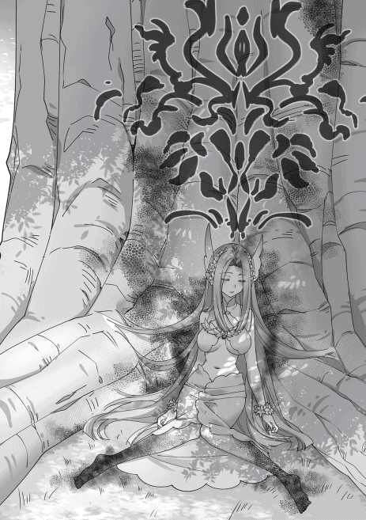

| レア・クラスチェンジ！IV ～魔物使いちゃんとレア従魔の異世界ゆる旅～ | |
| 黒杉くろん | |
| TOブックス (2017) | |
異世界転移者で魔物使い【モンスターテイマー】の少女レナと従魔一行は、精霊祭を間近に控えるラチェリの街を訪れ、美しい景色や美味しい食事を満喫中！ その折、呪いにかかったモンスターたちを発見し、再会した元王子のルーカと調査に乗り出すが、産土神である幻の精霊までもが毒牙にかかっていたと判明。解決に燃えるレナたちを待っていたのは凶悪なドラゴン＆謎の呪術師だった! 冒険者たちの力も借りて、シリーズ史上空前の総力戦にボルテージも最高潮！ ......だが、ゆる〜いテンションも相変わらず!? 最強の敵を前にいざ、主従揃って進化【クラスチェンジ】せよ！ もふもふ全開のコミカル・ファンタジー第４弾！
イラスト：ちま
デザイン：BEE-PEE
見渡すかぎりの景色全てが、涼しげな青色の光を浴びている。レナがすぅっ、と息を吸うと、澄みわたった空気が身体に入り込んできた。とても気持ちがよくて、思わずにっこりと目を細める。風も無いのに揺れている足元の草花も、ぷかぷか空中を泳ぐ透明な不思議生物シャボン・フィッシュも全てが青。まるで海の底から水面を見上げたようにキラキラ光る天井が、空間を海色に染め上げているのだ。半径二百メートルほどの円状の地面に、二箇所の秘密の出入り口、さわやかな青色の草木。どこまでも高い天井を持つこの場所は──アネース王国の最東端、小都市トイリアの隣街ラチェリの郊外にある観光名所〈迷宮：青の秘洞〉。
「綺麗なところだねぇ」
レナがうっとり辺りを見回しながら、はしゃいでいる従魔たちに話しかけた。
『『ねー！ わっ、アタックしたらフィッシュが弾けたよ！』』
「おおー、まさにシャボン。こらこら、無闇に体当たりしちゃダメだよ？ クレハ、イズミ。ここにいるのは狩りのためじゃないからね。......お魚、食べれないのかぁ」
『『プフフッ！ レナの食いしんぼーーっ』』
赤と青のスライム、クレハとイズミはぴょーーん！ と飛び跳ねて、群れになって泳いでいる不思議生物にボディアタックをきめていく。フィッシュはぱちん！ と弾けて、光の粒子となり皆の頭上に降り注ぐ。景色のあまりの美しさに見惚れてしまう。ムスクのような独特の甘い香りが鼻をくすぐる。ハマルとリリーが、フィッシュを見ながら首を傾げた。
『このお魚ってー、何を食べて生きてるのかなー？ 生きてるよねー？』
『......あっ。葉っぱ、お口に入れたよっ！ あれがご飯なのかも。......身体の中で、葉っぱが消えて、透明なボディの色がほんのり......ブルーになった。へぇ』
「群れになったり単身で泳いだり、隊形を変えてるから知能は高そうだよねぇ。わぷっ！」
レナたちの予測に、その通りー！ と同意するように、小さなフィッシュたちは一箇所に集まると、自らの身体で大きなバブル・リングを形作ってみせる。クルクルとドーナツ状に回転しながら、レナたちを包み込んだ！ 透明な魚たちを通して見るラビリンスの景色はまた違った美しさを見せる。時たまレナたちに触れて粒子になり、眩しく光る。めったに見られない〈光の祝福〉と呼ばれる光景だ。このフィッシュたちの一芸は、ラビリンスが来訪者を歓迎しているという証なのだと言われていた。
まだまだ謎の多い「ラビリンス・フォール」という存在。これまでの情報をおさらいしておこう。
地面に異空間への入り口が何らかの要因で出現し、様々な迷宮へと誘うのが「ラビリンス・フォール」......内部は、海辺の散歩道や星屑の丘、秘密の花園などの場所が確認されている。自然界の美しい部分を集めたような癒しの場所である。
そして年月を経てラビリンスが成長すると、レアモンスターが現れる「ダンジョン・フォール」となる。どちらの異空間にも、そこでしか見ることができない特別な動植物が生息している。ラビリンスとダンジョンは観光名所として、土地を保有する各国で手厚く保護・管理されている。ダンジョンの詳細は、またレナたちが訪れた時にしよう。
入口と出口、二つの穴がフォール内に存在し、出口の穴に足を踏み入れなければ、レナたちが地上に戻ることはできない。〈青の秘洞〉には親切にも出口への案内看板が設置されている。......夢のような景色に見惚れるレナの手の甲が、チリッと熱くなった。
「......あ。もう終わりの時間がきちゃったのかー」
レナは残念そうに呟く。手の甲に押されたラチェリ印のスタンプが、青色から黄色に変化している。
ラビリンスを訪れたひとつのグループが長時間居座らないように、受付所で押印されるいわゆるアラーム機能をもつ魔法スタンプだ。このラビリンスでの滞在時間は一グループにつき三十分。五分前になるとアラームスタンプが黄色に変わり、だんだんと赤みを帯びてくる。三十分後、完全に赤くなると高温になり火傷してしまうので、観光客は滞在時間を絶対に守らなくてはならない。スタンプが赤くなっている間は治癒魔法を使うこともできないのだ。
魔法スタンプはラビリンスの占領防止、そして様々な人に楽しんでもらうための措置である。街の観光案内所で申請をした人全員に、まず透明なスタンプが押され、日付が変わる瞬間にそれが青くなっていれば、翌日、ラビリンス・フォールに入ることができる。翌朝、案内所で整理券が配られるので、引き換えに一人５００リルを支払うという手順だ。スタンプによる人選は完全にランダム。観光の権利を引き寄せたレナパーティはあいかわらず幸運だったと言えよう。
『えー。もう出ていかなくちゃいけないのー？』
『もっと遊んでいたいよーーっ』
退出と聞いて、お子ちゃまスライムたちがダダをこねる。主人はしゃがんで二人に視線を合わせ、優しく言葉をかけた。
「他の人もそう思って、楽しみに順番を待ってるからね。私たちがここでずっとラビリンスの景色を独占しているのはズルいし、駄目でしょう？」
『こんなに綺麗な景色だもんねぇー。譲りっこしなきゃですー』
『残念だけど......また、来れたらいいねっ！ ご主人さまっ』
「はい、よくできました！ ハーくんとリリーちゃん、他の人のことも考えていてとってもえらいです。クレハとイズミはどうかなー？」
『『......はぁーーーいっ！ また今度を楽しみにしてまーすっ。......今日はちゃんと帰るもん！』』
「うん、えらいえらい！ ウチの子はみんな優しくてお利口さんだね」
レナは従魔たちに笑いかけた。クーイズは自由奔放な性格だが、理由を話せばきちんと聞き分けてくれる。
『『んじゃあ、残り時間いっぱい、ラビリンスを堪能しちゃるぅーっ』』
クーイズがぷくーっと膨れ上がって、フィッシュ目がけて先ほどよりも高いジャンプを決めた！ フィッシュもなんだかんだこの攻撃？ を楽しんでいるようで、自らスライムに当たりにいく。パチパチパチッと粒子になったシャボン・フィッシュたちは、地中でしばらく眠った後、天井からまた魚として生まれるのだ。
『あ、いいなー！ 私もっ』
『ボクもやりたーい』
リリーとハマルも参戦するため、レナの元から駆け出していった。レナは目元を和らげて後ろ姿を見守る。みんな、あまり遠くには行かずレナの近くで遊んでいる。この距離感を愛おしく感じた。
「みんなで記念撮影しようか？」
レナはスマホを取り出し、カメラアプリを起動させる。ラナシュにも映像記録魔道具は存在するが、大きくて重くて超高価で、スマホの方がお手軽なうえ画像もとても綺麗だ。魔道具開発者がスマホの便利さを知ったら卒倒するかもしれない。そのため内緒にしている。
『『『『さんせーーいっ』』』』
「じゃあ、こっちに集まってねー。はい、ニッコリ！」
──パシャリ！ と軽快な音を発して、美しい青の景色をバックに笑顔をみせる魔物使いパーティの姿がスマホに記録された。シャボン・フィッシュまで絶妙にポーズを決めている。
〈更新中......フォルダ［記念撮影］に写真を振り分けました〉
〈位置情報を取得しています。現在地......アネース王国ラチェリ〈ラビリンス：青の秘洞〉〉
スマホのアナウンスがスピーカーから控えめに響いてくる。まさか位置情報まで取得するとは......異世界に来てからスマホはどんどん便利さを増している。［レア・クラスチェンジ体質］の影響を受けている可能性も否定できないが、真相は分からないので、もう深く考えずにレナはただ便利さに感謝している。
「うわぁ、至れり尽くせりぃ。えーと、いつもありがとうございます。スマホさん」
レナが目をまん丸くして、ラナシュ仕様に変化したスマホの画面を見つめた。あまりに頼りになるので、スマホ「さん」付けだ。
スマホの画面には〈マスター・レナのお役に立てて何よりです〉と表示されている。すでに自我を持っているような気がすごくする。これは今後、もしかして、もしかしそう？ レア・クラスチェンジする？
まあ今考えてもしょうがない！ とレナは悶々と悩みかけた気持ちを切り替えた。とんでも展開には慣れっこなのだ。何とかなるさ。
「宿泊所に戻ったらスマホさんの通話機能も試してみようか。トイリアのみんなは元気かなぁ」
『楽しみだねー！』
レナが話しかけると、従魔たちからはしゃいだ返事が返ってくる。
素敵なダンスで見送ってくれたシャボン・フィッシュたちに大きく手を振って、最後に......と青い景色を目に焼き付けたあと、レナパーティは出口の穴に足を踏み入れた。
☆
レナたちが立ち去り、次の来訪者が来るまでの間、ラビリンス内はしばし静寂に包まれた。揺れる青草の中には、ひときわ青い木の芽がひっそりと芽生えている。その芽の周りにだけ、一陣の風が吹く。まるで乙女の手のひらで撫でられているように柔らかな......特別な風。
風はレナたちの後を追うようにふわり、ふわりと地表を進んでいき、やがて出口の辺りに留まる。集まってきたフィッシュたちと気まぐれに戯れると、つむじ風となって、シャボンの光を散らしながら天井へ昇っていった。............。
☆
レナたちはラチェリの街風景を楽しみながらゆっくり歩いていく。都会的だった隣街のトイリアと比べると、ラチェリは土地こそ広いものの、随分と牧歌的な印象である。昔ながらの赤茶レンガの民家が、広めの間隔で軒を連ねている。少し遠くに目を向けてみると野菜や麦を育てている畑を見ることができた。ラビリンス・フォール関連で発生する利益により街の金庫は潤っているが、国の方針であえて観光価値のある伝統的な風景を残しているのだ。井戸から水をくんだり（魔法で大量の水を出せる者は少ないので手作業）、火を灯すための薪を割ったりと、魔道具を使わない昔ながらの生活は不便だが、ラチェリ住民には国から特別給付金が支給されているため、みんな納得してこの街で暮らしている。
「あ。新作のお菓子が売ってる。後で食べる用に買って帰ろうか？」
レナたちが土産物屋が並ぶ通りを歩いていると、珍しいお菓子が目に留まった。ラチェリの各商店では〈青の秘洞〉を意識して、青い雑貨やお菓子が多く売られている。レナに抱えられた従魔たちが落っこちそうなくらい身を乗り出してお菓子を眺めた。店番のお姉さんが微笑ましそうにそれを見て顔をほころばせる。
「こちらの新作キャンディはどう？ お嬢さんたち。ブルーグラスキャンディ。泡甘草と青ハーブペーストを白蜜と練って作っているのよ。爽やかな味がするわ」
「美味しそう。一瓶下さい」
▽レナは ブルーグラスキャンディを 購入した！ ×１
白蜜はレナたちの好物なのだ。従魔たちが熱い視線で購入したキャンディを見つめていたので、レナは口に一つずつ放り込んであげる。『しゅわしゅわするぅー！』と驚いた声が上がった。レナもキャンディを口に含み、〈青の秘洞〉の余韻を味わった。
レナたちは昨日受付した宿にチェックインする。玄関先やカウンターに、カラフルなタペストリーが飾られている。どの家々も同じようにカラフルに装っていて、茶色い街をささやかに色付かせていた。
もうじき、アネース王国全体で開催される年に一度のお祭りがあるそうだ。王国のシンボルである「風と水の乙女シルフィーネ」が各街を訪れると伝えられている「精霊祭」。彼女らを歓迎している証なのだとか。当日はさらに花束などで街中を飾るらしい。
「ビッグバッファローの肉が配られるんだよ」
「魔法花火を上げるんだ！」
「運が良ければ新しい乙女の宿り木が見つかる」
......なーんてお話がレナの耳に入ってきて、耳がピクリと動く。
（バッファロー肉、食べてみたい！）
信じられるかい？ レナは数ヶ月前までは日本の女子高生だったんだ。今やとってもラナシュの冒険者らしいだろう。諸事情あった。宿の部屋に辿り着く。
「......ふぅ。お疲れさまー！ 結構歩いたねぇ」
レナは扉を閉めると、早々にブーツを脱いで、ベッドに掛け布を敷いて寝転がった。シャワー前に休憩する時にはこうするのがラナシュ式マナーだ。ラビリンスは街外れに存在するため、レナはたくさん歩いた。ぐったりと疲れているレナに対して、ずっと抱えられていた従魔たちはまだまだ元気いっぱい。主人の身体の上で、スライムたちが軽快にジャンプする。
『『お疲れだねっ、レーナっ！ マッサージしてあげようか』』
「ぜひお願いします」
ミニスライムの適度な重みが心地いい。赤スライムのクレハは温かくて、青スライムのイズミはひんやりしている。レナの顔の横にダークフェアリーがちょこんと座る。
『ご主人さまの、髪、とかしてもいい......？』
「リリーちゃん。お願いします」
『もふもふクッションはお望みですかー？ レナ様ー』
「よろしくお願いしますぅぅ......！ ハーくんの金色羊毛大好き」
リリーはレナの三つ編みを解くと、スライムジェルを全体になじませて、櫛で丁寧に梳いていった。ジェルのおかげでロングヘアでも絡まらない。クッションになってくれたゴールデンシープ・ハマルの金毛は相変わらず極上の感触！ もふん！ とレナが埋もれ、表情をとろけさせた。
▽レナは 従魔に 尽くされている！ 愛情を感じている......
優しい世話焼き従魔たちに癒されて、ほうーーっと至福のため息をつきながら、後でお礼にこの子たちを私が甘やかしてあげなくちゃね、とレナは考える。
『スキル［快眠］ー』
「......ぐぅ」
リリーの髪梳かしが終わり、レナが「今だ！ 可愛がるぞ！」と上体を起こしたタイミングで、なんとハマルのスキルで寝かしつけられてしまった。超早業だった。すやすや眠るレナを、従魔がクスクス笑いながら眺める。そっと寄り添った。
『ハーくん、粋なはからい！ よきかな、だよっ』
『ありがとーございますー、リリー先輩。レナ様はトイリアからずっと頑張りっぱなしで、ラチェリに着いてからもラビリンス一発当選だったりしてあんまり休めてないしー。しっかり回復してもらわなくちゃー』
『『我らのことはずーっと抱えて運んでくれたよね。この街まで索敵頑張ってたからって。そんなの当たり前なのに。レナってば自分よりも従魔に優しすぎるから、我らが気をつけて愛情を還元してあげなくちゃだわっ』』
『相思相愛、嬉しいね。お互いに......相手を思いやってる。ウフフ♡』
『『『『ご主人さま、おやすみなさい』』』』
みんな一緒に心地よい眠りについた。
☆
夕方から寝かしつけられたレナは夜中に目を覚ました。本人は寝てしまうつもりはなかったので、驚いてパチパチ瞬きしている。夕飯も食べそびれてしまっていた......従魔たちもお腹を空かせているだろうに。レナは自分の側で安心しきった寝顔を見せている従魔を、困ったような笑顔で眺めた。
（ありがとう）
心の中でひっそりお礼の言葉をかける。
（きっと私の体調を気遣ってくれたんだろうね。こんなに助けられて、私って幸せ者だなぁ）
レナはこの街までの旅を振り返った。
......身一つで突然異世界ラナシュに放り出された日本の女子高生レナ。貧弱な体力のまま悪党たちに追われ、なりゆきでハードな放浪の旅をすることになったのだ。レナに唯一与えられたのは魔物使いとしての能力。スライム、ダークフェアリー（元ナイトバタフライ）、ゴールデンシープ（元居眠りヒツジ）を、道中なんとかテイムして危機を乗り越え、今に至る。......厳しい環境の中にも確かに存在している〝幸せ〟を改めて自覚して、レナはこの巡り合わせに感謝した。
（朝ごはんはとっておきの豪華なのを作るから、楽しみにしててね！ おやすみなさい）
レナは朝までまた眠ることにして、再びハマルの金毛に頭を預けて瞼を閉じた。従魔たちをこんな時間に起こすのはかわいそうだと思った。月の光が、幼さの残るレナの顔をぼんやり照らして、どこからともなく入り込んだ風が遊ぶようにまつ毛を撫でていった。
☆
翌朝一番にシャワーを浴びて、レナは凝った朝食を作る。たくさんのフルーツを贅沢にトッピングしたクレープだ。卵がないので、水分を少なめにして薄力粉と水のみで生地を焼いた。さっぱりしたチーズクリームとフルーツをたくさんトッピングする。爽やかさと甘味の相性が最高！ 従魔たちは目を輝かせてクレープを完食し、ぽこっと膨らんだお腹を満足げに撫でた。完全に胃袋を掴まれて、今日もいっそうレナが好きになる。
「スマホ通話を試してみようか？」
『『いえーーい！』』
レナがスマホを取り出した。トイリアを出発した時、レナのスマホには友達の「パトリシア・ネイチャー」「アリス・スチュアート」の名前が登録されたのだ。スマホの自己判断であった。レナの指が、画面に映ったパトリシアの名前をタップする。
〈通信中......通信中......〉
ドキドキ、とレナの胸が高鳴る。パッ、と画面にパトリシアの顔が映った。まさかのテレビ通話！
〈はっ？......レ、レナぁーーーー!?〉
画面のパトリシアが目を剥いて驚き、愕然とした様子で叫ぶ。
「うわっ！ パ、パティちゃん。声が大きすぎるよぅ」
〈あっ。ごめんな〉
「ぅぅ......」
レナはキーーン！ と痛む耳を押さえて、他の宿泊客の迷惑になっていなかっただろうか？ と、視線をキョロキョロさまよわせた。このお高めの宿は壁が厚かったようで、幸いにも誰かが苦情を言いにくる気配はない。ふぅ、とレナとパトリシアが一息ついたところで、スマホからさらなる機能更新のお知らせがアナウンスされた。
〈通信時の音声ボリュームを二段階小さくしました。通話を［念話モード］に切り替えます〉
「うわぁ......ほんと便利......」
〈あのさ。そのレナの魔道具、マジでなんなの？〉
〈あははははは〉
〈いや、まあ別に、言えないなら全部言わなくてもいいけどさぁ。レナたちが答えられることだけ教えてくれたらいいんだ。それを知らなくたって私たちは親友だからな。その魔道具すげーよな。んじゃ、話題変えて......念話モードって頭の中に声が響く感じなのか〉
〈ね。他の人には声が聞こえないから便利だねぇ〉
パトリシアはそっと疑問を飲み込んでくれた。レナは申し訳なく思いながらも、心の中で「ありがたや」と手を合わせる。スマホは地球の道具で、レナは異世界人......なんてあまりに途方もなくて、友達にも言えっこない。このラナシュ世界は他者からの評価に応じて人物に「称号」を与えるため、レナが［異世界人］の称号を手にしてしまって、それを研究者に視られたら、また追い回されるに決まっているのだ。
とっても便利な念話モードでの通話は「こう伝えたい」と考えた内容のみテレパシーで相手に伝わり、思考の全てを勝手に晒されてしまう訳ではないらしい。パトリシアはレナの謝罪の気持ちに気付いていない。レナが（良かったぁ）と考える。
〈パティちゃんの方にも私たちの姿が見えてるの？〉
〈おー。目の前に長方形の......なんか......よく分かんないけど、半透明なレナたちの映像が浮かんでる〉
電子ウィンドウかな、とレナが考えた。
〈あとなー〈通話中：藤堂レナ様〉って出てるぞ。相変わらず部下にモテるねーレナ〉
ナチュラルに様付けされているー！ スマホからの崇拝を感じ取って、レナが驚愕する。そう仕込んだ覚えはないのに。リリーがスマホを指差して『えらいえらい、って、撫でてあげよう？』と言うので、恐る恐るレナが指先でフレームを撫でると、画面にハートマークが舞った。意思を感じる。とりあえずいっぱい撫でておいた。レナは身内は可愛がる主義だ。
パトリシアは花の水やりを再開しながら、花屋の開業準備が順調だと楽しげに話し、レナはラビリンスで見た青の景色について語った。
〈〈じゃあ、またね。〉〉
レナとパトリシアが、また通話する約束をして、画面越しに指先を合わせる。
──ピピッ！ 通話が終了しました！ と、機械的な音声が少女二人の脳内に響いた。通話を終えたら、スマホはいつものホーム画面に戻っている。
パトリシアの目前に浮いていたウィンドウは消えてしまって、「うわぁ一方通行なんじゃん！」と実はトイリアで頭を抱えていた。スマホにとって、フレンドコールはマスターが望んだから頑張って更新した機能なのだ。
レナはあれもこれもとスマホのアプリを起動させてみる。今は使えない機能もあるが、これから、色々とラナシュ仕様に更新されて行くのだろう。......日本にいた証がなくなってしまうようにも感じて、胸がチクリと痛んだが、従魔たちがいるこの世界で生きていくと決めたのだ。ご主人様は配下を見捨てたりなんてしない。だからこそ、スマホのラナシュ仕様アップデートはとてもありがたい、と考えている。地球のＷＥＢ情報はまだ全て閲覧できるため、これまでの旅路でもたくさんスマホに助けられた。動物肉の部位分けから、料理のアレンジレシピ、動画の再生に、亀甲縛りの方法............だんだん検索履歴が汚れてきていた......。
「今、このスマホがどんな状態なのか、どこまで進化していくのか。分かればちょっぴり安心なのにね」
レナが呟く。そうか。ではレナの幸運、やっておしまいなさい！
まあそれはともかくとして、レナがトイリアで新たに得た称号［赤の女王様］の効果を紹介しよう。
［赤の女王様］......その者、赤き衣を纏いて、運命さえも従え、悪党たちを裁きつくすであろう。女王の導く運命に逆らうべからず。圧倒的な女王気質を開花させたその時、魂を黒く染めた者たち全てが、彼女に頭を垂れる。赤いアイテムを身につけているほど知力ステータスが上がる。
説明があまりに抽象的で詳しい効果はほとんど理解できないものの、なんだかすごく凄そう。異世界ラナシュの基礎構成はわりと変質しやすく柔軟なのだと、元旅仲間ルーカに聞いていたレナだが、さすがにこの珍妙な称号を確認した時は一瞬意識がとびかけた。そして混乱しかけた思考にムリヤリ蓋をして、無心でクレープを食べる作業に勤しんだのがつい今朝のこと。もっとこう、具体的な内容を知りたいのだが。まあそれも怖いけど。
レナたちはひとまず赤いアイテムを集めることにした。
女王様への道をなりゆきで歩み始めてしまったレナ。彼女と愉快な仲間たちが安息の地を見つけられる日は......いつか、来るのだと思いたい。
「ラチェリに着いたばかりだし、今日はのんびり過ごそう。冒険者ギルドで依頼を下見だけしておいて、明日から働こうね」
『『『『おおーーーっ！』』』』』
ジュエルスライムが生み出した宝石を幼女商人アリスに買いとってもらったので、レナのお財布はとても潤っている。それこそ、一生冒険者として働く必要なんてないくらいに。スライムは一日一回、最高級の宝石を生むので贅沢し放題なのだが、レナの希少種従魔たちはとても狙われやすいので、いざという時に返り討ちにするために戦力を増強しておかなくてはいけない。戦闘訓練も兼ねて、無理のない範囲で冒険者ギルドの依頼を受けていた。レナが持つ巨額のお金の出所を探られないようにカモフラージュする目的もある。それに、ギルドカードがランクアップすると、身元が証明できないレナの信用が上がることも狙いだ。
レナたちは宿泊代をまとめて払った一週間の間だけラチェリに留まり、レベリングを行い、それから旅を再開することにした。二週間後の精霊祭に参加できないのは残念だが、タイミングが悪かったと諦めるしかないだろう。幸運体質のレナにしては珍しい巡り合わせだ。身支度を終えたレナたちはお出かけする。まずは食欲に忠実に、食料品店へと向かった。
ラチェリの生鮮食品店では、ストックを切らしていた牛乳とパン、葉野菜をいくつか購入した。別の瓶詰めソース専門店では、トマトソースの瓶と、オイルサーディン（鰯の油漬け）の瓶を三つずつ購入する。ラナシュには固形スープの素がない代わりに、こうした味付け済みの瓶詰めソースがよく売られていた。複数の野菜とベーコンなどの脂を合わせて、塩などで濃い目に味付けされたソースは、炒め物によし、水に溶かしてスープにしてもよしの万能調味料である。オイルサーディンの瓶が売られていたのは、海が近い証かもしれない。久々の魚はレナをとても喜ばせた。その日のレナパーティの晩御飯は、芽キャベツとオイルサーディンの太麺パスタとなった。
観光客が多い街の中を歩いて、レナたちは冒険者ギルドを訪れる。冒険者はあまり多くないラチェリのギルドはこぢんまりしていた。カウンターにはベテラン受付嬢が三人と、まだ成人したばかりの若い受付嬢が一人、並んで座っている。レナはまずモンスター図鑑を借りて、ラチェリ周辺の森で出現する魔物をくまなくチェックしていく。
「この辺りには鳥モンスターが多く生息しているんだね。ふむ......私たちにとって狙い目なのは、大きなダチョウ型モンスター『グーグー鳥』かな。強さはＦランク級。繁殖力が強く、一日に平均三つほどの卵を産む......だって！ やっと卵が手に入るかもしれないね」
ラナシュでは卵がなかなかの高級品なのだ。飼育される鶏たちは肉用で、たまにしか卵を産まない。レナたちは、トイリアのパーティで食べた美味しい卵料理に思いを馳せた。
『貴重な金の卵が紛れていることもあるのかー。じゅるり......。えーと、年に数個しか見つからない金の卵は、王族が思わず涙するほど美味しい？ ボク、食べてみたいですー』
『黄身が、キラキラ光っている、栄養満点の......超高級卵！ へぇ！』
『『庶民の口にはまず入らない贅沢品だと？ ふふん、赤の女王様の幸運をなめるなよ』』
「やめてー！ 試練がやってきそう！」
クーイズの呟きにレナが小さく叫んでしまい、一瞬冒険者ギルド内の注目を集めてしまった。慌てて取り繕う。視線が逸らされてほっとした。
レナの幸運について補足しておくと、レナはステータスが［運：測定不能］であり、強く望めば幸運チャンスがやってくるが、同時にえげつない試験を突破しなくてはいけない......っぽいのだ。レナは無心を心がけながら、グーグー鳥のページを細部まで読み込んでいく。
（グーグー鳥は卵を背に乗せて群れで行動しており、畑を荒らすことがあるため、常時討伐対象となっている。討伐の証としてギルドに収めるのは、長さ二十センチほどの頑丈な下クチバシ。これと引き換えに１００リルを受け取る。丸々と肥えた美味しい肉は、もちろん全て討伐した冒険者の物。食べてよし売ってよし。魔物の肉は味が濃くスジが多くて硬いことが多いが、鳥モンスターの肉はあっさりしていて比較的柔らかい。グーグー鳥はからあげに最適）
明日のレナたちの予定はグーグー鳥の討伐と、からあげ作りに決まった。まだ昼だが買い物も依頼の下見も済んでしまったため、早々に宿に帰ることにした。
ふと、帰宅道中にラチェリ冒険者ギルドの話題になる。
「なんか......独特な雰囲気のギルドだったねぇ」
レナが苦笑いしながら、小声で話題を振る。
『ねー。なんていうか......空気がピリピリ？』
『一部で、デレデレ？ やーんっ』
「その通りかも。トイリアギルドは居心地良かったんだけどなぁ......ここの冒険者ギルドには、あんまり長居はしたくないな」
『その方がいいと思うよー。レナ様、いろいろとトラブルに巻き込まれやすいですしー』
『......うんうんっ。あの、デレデレな空気の、真ん中にいた......ギルドの受付の女の人......ちょっとだけ、魂がグレーだったの。......悪人ってほどでは無いけど、関わらない方が、良さそう』
みんな揃って、ちょっぴり思い悩んだ。レナたちにそんな表情をさせている原因、ラチェリ冒険者ギルドの様子を振り返る。
カウンターには数名の冒険者たちが並んでいたが......一列になっていたのだ。そう、複数の受付嬢がいるにもかかわらず一列。若い新人ギルド嬢のいるカウンターにだけ、冒険者が押しかけていた。
新人ギルド嬢が笑顔を振りまくたびに、男たちはでれっと格好を崩す。これにどうも納得がいかないのが、妙齢のベテランギルド嬢たち。彼女たちももちろん美人だとフォローしよう。「お待ちの冒険者様、こちらにどうぞ」と列に並んでいる男たちを一人一人素早くさばいていくが、渋い顔をされるし、新人の所にばかりまた新たに男たちが並ぶため、面白くない。事務処理はベテラン嬢たちの方がよほど早いというのに。嫉妬の感情を抜きにしても、仕事がまだ遅い新人の所にばかり並ばれては業務が滞ってしまい困るのだ。
先輩からピリピリした視線を向けられている渦中の新人ギルド嬢がかわいそうかと言われれば......別にそうでもなかった。とびきり可愛い彼女は、とびきり図太かったのである。先輩の視線など気にもとめない。好みのイケメンがいれば甘い声で会話を絶妙に弾ませて、ギリギリ怒られない程度に話し込み、ちゃっかり連絡先をゲットしていた。あざとくて計算高い女性だ。ゴツくて強面のおじさんたちも邪険にあしらって自分の評価をわざわざ下げることはしない。先輩にミスを指摘されたとき涙目になれば、そんなに怒らなくてもいいじゃないか！ と彼らが庇ってくれるのだから。ひたすら居心地のいい逆ハーレムをこのギルド内で築いていた。そんな彼女の魂がグレーだとリリーは言う。付き合う気もない男性にわざと甘えて、大量の貢ぎ物をもらっているためだと思われる。
このような状況だったので、レナたちは居づらかった。
「世の中にはいろんな人がいるよねぇ」
純朴天然オカン系美少女のレナは、遠い目をしながら呟いた。
『『そうですなぁー。クーとイズのご主人がレナで本当に良かったよー』』
『『完全同意ー！』』
「か、可愛いね貴方たちは......！」
イケてないギルドの話題は、主従のいちゃこらの餌にされた。そのまま主従愛を極めてほしい。
▽レナは 従魔を愛で始めた！
▽愛情ゲージが 振り切れた！ （本日三回目）
常時依頼は狩りを終えてから討伐品をギルドに収めればいいので、前もって依頼受託をしておく必要はない。翌朝の早朝から、レナたちはグーグー鳥の討伐に繰り出した。
☆
状況報告。レナたちは魔物に追われて全力疾走している。
「ああああーーーーッ!?」
『『『『きゃーーーーーっ！』』』』
背後には、二十羽はいそうなグーグー鳥の大群！ レナの身長より大きな鳥たちが、砂埃を上げてすごい勢いで押し寄せてきている。迫力と臨場感がえげつない。
▽野生の グーグー鳥が 現れた！ ×20
からあげをたくさん作ろうと張り切っていたレナだったが、ここまで望んでない！ と半泣きである。グーグー鳥は通常は五、六羽程のコミュニティを築くはずなので、これは明らかに異常事態だ。走るレナがまだ魔物に追いつかれていないのは、もともと両者の間に結構な距離があったからで、すぐ追いつかれて踏み潰されてしまうだろう。
しかし！ こうした修羅場を何度も経験したレナは対応策をあらかじめ考えていた。学習したのだ。
「ハーくん、訓練した通りにいくよっ！ スキル［鼓舞］」
『おおせのままにーレナ様ー！ スキル［体型変化］ー』
レナの隣を走っていたハマルが応援を受けて、ぐーーん！ と巨大化する。主人は、羊の首元にひらめく青いリボンに必死でしがみ付く。クーイズがスライム触手でレナを青いリボンにくくり付けてやり、騎乗の手助けをしてくれた。
「ありがとう！」
『『レナすごーい！ 上手に乗れましたー！』』
レナは青ざめながらピースした。そして背後を振り返る。リリーも目を細めて、［フェアリー・アイ］でグーグー鳥の大群を視た。
『......ん!? ご主人さま、グーグー鳥は、私たちを、攻撃をするつもりは......ないみたいだよ......？ 何か、黒い魔物に追われてるのっ』
『『『「!?」』』』
『......なんだろう......。とっても、嫌な気配だ......』
状況把握担当のリリーの言葉は予想外だった。とても不安そうな顔をしている。土埃の中をいっそう目を細めてリリーが凝視すると......離れた所からがむしゃらに走ってくる、大きな黒い影が確かに視える！
『イノシシみたいな、生き物がいる！』
叫んだ。木々が立ち並ぶ一角を走り抜けて、レナたちは広場を横切る。明るい場所でレナも煙の中に目をこらすと、最後尾の追っ手がぼんやり見えた。ゾワッと身の毛がよだつ。
『身体全体に、黒い泥みたいなのが、纏わり付いてて......よだれをダラダラ垂らし続けてる。赤い瞳は、禍々しくて、嫌な感じ......マトモな状況とは、とても思えない。......まるで知性を奪われてるみたい。あのイノシシは、一体、何？』
リリーの判断を聞いて、レナの喉が、ごきゅっと大きく鳴った。グーグー鳥の狩猟を考えている場合ではない、あの黒いイノシシをなんとかしなければ。慌てて頭をフル稼働させる。
（冷静に、冷静に......！）
レナは震えていたが、表情はきりりと引き締まっている。振り返って黒い魔物から目を離さない。主人の様子をチラリと横目で見た従魔たちは、誇らしそうに胸を張り、静かに指令を待った。
走り続ける羊の背で、レナが声を張り上げる。
「作戦を変更するよ！ ハーくん、もう少し大きく［体型変化］。そして立った姿勢のまま、グーグー鳥が脚の間を走り抜けるまで動かないでいて。グーグー鳥を逃したら、後ろ足で思い切りあの黒イノシシを蹴ってね！ クレハとイズミはハーくんの後ろ足にくっついて待機。蹴りの時は足裏まで硬質なボディで覆って、例のスライムニードルで攻撃の手助けをしてあげて。リリーちゃんはイノシシの生命力の視極めをお願い。危ないから、近づきすぎないようにね......」
『『がってん承知ー！』』
『ん......！ まかせてなの！』
巨大羊ハマルがブルルッと大きく鼻を鳴らす。みんな、黒イノシシをきつく睨みつけた。
「作戦開始。いくよ......スキル［鼓舞］！」
レナがテンション上昇スキルを重ねがけする！ 従魔たちの目がギラリと光った。
できれば一発の後ろ蹴りでイノシシを確実に仕留めたい。もし黒イノシシが高い知能を持っていた場合、二度目の奇襲は成功しない可能性がある。ギルドのモンスター図鑑にも載っていなかった黒イノシシだ、実力は未知数。魔物のことが何も分かっていない分、余計に用心をしておかなくてはいけない。いざとなればミニマッチョを芽生えさせるお花の種と、トイリアにいるレナの巨大従魔モスラを呼ぶ「呼び笛」を使うことも、視野に入れた。モスラは隣街くらいの距離なら、空を飛んで早々に駆けつけてくれるだろう。ただ彼の住民権がどうなっているかがまだ不明なので、できれば呼ばずにことを収めたい。レナは手のひらに種のカプセルを持ち、ぎゅっと握りしめる。
「今！」
▽戦闘開始！
グーグー鳥たちが、大きくなったハマルのお腹の下を必死に走り抜けていく。ハマルがぞわぞわと身震いする。
『うっくくく......くすぐったいぃー！』
耳と尻尾をピコピコさせながら、ハマルはなんとか耐えきった。少し距離をあけて、黒いイノシシが怒涛の勢いで走り込んで来る！
レナパーティ全員の目がイノシシに負けないくらいに鋭くなった。頑張ろう、とかすかな声がレナの口からこぼれると、従魔たちも力強く頷く。
ブルォォオオオオオオッ!!
▽野生の 黒イノシシ（仮）が 現れた！ ×１
『『やったるでぇーーー！ スキル［超硬化］、伸びるわ伸びるわぁーーっ』』
クレハとイズミが素早く動く。ハマルの足裏にくっ付き、ボディをトゲトゲに変化させた。ダイヤモンドより硬いスライムニードルシューズができ上がった！ ハマルが後ろ足にぐぐっと力を込める。
『こっち来んなぁーーーッ！ 邪魔ぁ！』
『『スライムニードルゥー！』』
▽黒イノシシの 猛進！ VS. ハマルの 後ろ足蹴り！
トゲトゲ後ろ足と黒イノシシは、互いに勢いを殺さず思い切り衝突した！
「！」
レナが息を飲む。ハマルは打ち負けない。
▽黒イノシシは トゲに貫かれ 思い切り吹っ飛ばされた！
空高く撥ね上がったイノシシが、十メートルほど離れた地面にグシャッと叩きつけられる。ほとんど黒に近い紅色の血を撒き散らし、肉を崩れさせた。衝突の瞬間にぐんと長く伸びたスライムニードルによるダメージも大きく、腐りかけだった身体はぐちゃぐちゃになっている。
地面に倒れ伏せたままピクリとも動いていないが......レナたちはリリーに視線を送った。リリーはまだ難しい顔のままイノシシを睨み続けている。
『！......警戒してっ』
『『『「！」』』』
あれほどの攻撃を受けたにもかかわらず、黒イノシシは自力で立ち上がった！
緊張したレナたちが構えるが、やはり様子がおかしい。腐り落ちた肉の隙間から、いよいよ灰色の骨が見えている。ドロドロと地面を汚す腐肉は不快な臭いを発しており、血を吸い込んだ地面まで黒く穢し始めていた。しかしイノシシはそれだけの重傷を負いながらも、痛みを感じていないかのように、踏み出しかける。前足が崩れ落ちて前に倒れた。うつろに身体を揺らして、焦点の合わない赤い目をギラギラ彷徨わせる。
異様な迫力に、レナたちは言葉もなく青ざめた。
やがてイノシシの動きが止まり、リリーの眉尻が悲しそうに下がる。
『......どうかもう、安らかに眠って......』
ぽつりと呟かれた妖精の言葉を聞いたのか、もう耳も聞こえていないのかは分からないが......イノシシはようやく目を閉じて、絶命した。............。しばらく誰も言葉を発しなかった。他の森の生き物たちも、その黒イノシシの死骸を避けるかのように、虫でさえ姿を見せない。
『亡くなったよ』
胸の前で手を組むリリーの声が、痛ましく響いた。
ハマルの金毛をしっかり掴んだまま硬直しているレナに、クーイズが近寄ってきて話しかける。
『ねー、レナー......。クーとイズね、さっきイノシシの黒いドロドロに触ったでしょう？』
『「呪い」効果をギフトで防いだみたいなのー』
「......ええっ!? だ、大丈夫!? うわ、二人ともすごく顔色悪いじゃない、真っ赤と真っ青で......」
▽レナは 混乱している。
『『ぷふふっ！ 元からだよーんっ』』
レナはおマヌケな発言をしてしまったが、そのおかげで図らずも場の空気が少し和んだ。みんながやっと肩の力を抜く。レナがリリーに「呪い状態のイノシシだったの？」と聞くと『多分』と弱々しい声で返事が帰ってくる。リリーの瞳は魂の善悪を見極められるが、状態異常については曖昧にしか分からないのだ。『やるせないよぅ』とすり寄ってきたリリーの白絹のような髪を、レナは安心させるように撫でてやった。それしかできなかった。
「......みんなに何事もなかったなら、良かったよ。はあ、怖かったぁ......本当にお疲れさま。よく頑張ってくれたね。スキル［従魔回復］」
『『はうーーん♡』』
クレハとイズミがとろけてみせると、レナはようやく少し笑う。
「とりあえず街に戻ろうか......この場にずっといるのは怖いからね。ハーくん、身体を小さく戻せる？ このまま移動すると森の中では目立って標的にされちゃうから」
『かしこまりましたー。あ、レナ様に吉報がありますー』
「ん？」
［体型変化］で高さ一メートルほどになったハマルが、身体の下から出てきた何かを頭で突くようにして、レナに恭しく差し出す。グーグー鳥の大きな卵！ その数は全部で四つ、しかも、金の卵がひとつ混ざっている。
『グーグー鳥が胴の下を走り抜ける際にー、毛皮に卵がひっかかっていたのですー』
「きゃー！ 嬉しいー！」
レナが大歓喜してハマルに抱きついた。黒イノシシとの戦闘というトラブルはあったが、同時にとんでもない幸運にも恵まれたようだ。卵はとりあえずマジックバッグに全て収納した。他の者に金の卵を見られてしまうと騒ぎになるので、もし調理をするなら野外でなければならないだろう。自分たちで金の卵を食べようとする冒険者などレナたちくらいである。
討伐後の腐り落ちた黒イノシシはもうどうしようもないので、冒険者ギルドに報告することにした。ここに異様な死骸を放置しておくのは気が咎めたが、触れるのがためらわれる状態なので仕方がない。イノシシまでの道を間違えないように木に印をつけながら、ラチェリの街へ帰る。
▽凶悪な 黒イノシシを 倒した！
▽ギルドに報告しよう
ラチェリの街に帰り、レナたちはまっすぐに冒険者ギルドへと向かう。相変わらず列ができている新人ギルド嬢のところには並ばず、昨日モンスター図鑑を貸してくれたベテラン嬢のカウンターに直行した。
「ん？ あら、いらっしゃいレナさん。グーグー鳥の下クチバシの納品かしら？」
前日にグーグー鳥が狙い目だとアドバイスしてくれたお姉さんは、優しい口調でレナに話しかけた。レナの名前も覚えてくれている。焦った様子の新人冒険者を落ち着かせるために、あえて普段通りに接してくれたようだ。レナはホッとして、控えめな声で先ほどの遭遇について話し始める。
「グーグー鳥の討伐は失敗しちゃったんです......ただ、おかしなモンスターに遭遇したのでその報告に来ました。お借りした図鑑には載っていなかった黒いイノシシに森で遭遇したんです」
ベテラン嬢は目を見張り、レナたちをカウンターの端の相談窓口に案内する。周りに混乱を振りまかないように、続きを小声で話すよう促した。
「身体が腐った状態なのに、イノシシは全力疾走していました。赤い目をギラつかせて私たちに向かってきて。......もしかしたら、呪われた状態だったかもしれないんです。私の従魔がそう危険を察知して」
「......呪い持ち!? なんてことなの！ レナさん、その黒いイノシシはまだどこかをうろついてる？」
「いえ。仕留めました。全力で攻撃を加えて、魂の見極めをして絶命を確認しました。ただ、イノシシの身体が大きかったし黒い泥と血でベトベトだったので、死骸を持ってくることはできませんでしたけど......。その場所に案内することは可能です。どうしたらいいでしょうか？」
イノシシが仕留められたと聞いて、ベテラン嬢は硬くなっていた表情をひとまず緩めた。今後の予定を考えながら、目の前の小さな魔物使いに労りの言葉をかける。
「ご活躍、お疲れ様でございました。怖かったでしょうに、よく頑張りましたね......！ 情報の提供、心から感謝申し上げます。もし本当に呪われたモンスターだったなら、急いで対処をしなくてはいけないわ......レナさん、従魔がどのように呪いを確認したのか聞いてもいい？」
「はい。私のスライムの従魔は［全状態異常耐性］のギフトを持っています。例のイノシシに触れた時、どうやら呪い効果を防いだらしいと教えてくれたんです」
「となると、呪いの信憑性はとても高いわね......。分かりました。ギルド長とラチェリ神官様に至急連絡を取ります。申し訳ないんだけど、そのモンスターの元まで道案内をしてくれるかしら？ 情報提供報酬は緊急措置が終わってから、きちんと手続きを踏んで支払います」
「はい。もちろん協力する気でいます。この後の予定も特に無いので、すぐ動けますよ」
「助かるわ！ ありがとう」
街の危機になるような異常事態を見つけてギルドに報告した者には、情報提供金が街の金庫から支払われることになっている。確実に報告をしてもらうために毎年けっこうな報奨金の予算枠が用意されているのだ。またしても、図らずもレナのお財布が潤うことになった。レナはこの事態に対応してもらうために、スライムたちの【☆４】ギフトは話すべきだと判断した。
ベテラン嬢は同僚に伝言すると、さっと戦闘服に着替えて準備を終わらせる。厳つい男たちの対応をするギルド嬢たちは、皆それなりの戦闘実力者である。
「では行ってまいります。しばらくギルドの受付業務は任せましたよ、皆さん。くれぐれも業務ミスのないように」
「「分かりました。お気をつけて」」
「はぁ〜い！ 先輩っ、気をつけて行ってらっしゃいませぇ。心配ですぅ......」
「「「.........」」」
張り詰めた空気をブチ破るように、新人ギルド嬢が甘ぁい声で可愛げたっぷりに見送りの言葉を口にした。それからハッとしたような仕草で不安げに瞳を潤ませる。芸達者である。呪いと聞いて顔を引き締めている冒険者もいるものの、列に並んだ男たちの半分ほどは「かっわいいなぁー」とだらしなく頬を緩めていた。受付の先輩たちはしんどそうにこめかみを押さえている。新人に対して、この場面ではもうちょっと口調を引き締めなさい！ とか、すぐ出かける先輩から視線を逸らして「私って涙目体質ですぐ涙出ちゃうんです。駄目、ですよね......」は絶対心配してないだろ！ とか、まあ言いたい事はたくさんあるのだが......ここで注意をすると男たちがこぞって新人嬢を庇い始めて仕事が滞るので飲み込んだ。ゴッと空気が凍える。
レナは異様な空気に口元を引きつらせていたが、「急がなくちゃいけませんよね！ 私頑張って道案内しますね！」と誰より大人な対応をして、ギルド内からお姉さんを連れ出した。道中、彼女に「気を使わせちゃってごめんね」と言われたので「お疲れさまです」と無難に返しておく。ギルドを出てすぐに教会の神官に声をかけて、領主の館で会議中だったギルド長にも事情を話して呼びだし、全員で黒イノシシの元に早足で向かった。
☆
レナたちが黒イノシシの元に着くと、獣の傷ついた身体はもうほとんどが腐り落ち、肉は黒い泥となって地面を汚している。イノシシを中心に、半径二メートルほどの地面が呪いの影響で穢され、悪臭を放っている。皆が眉を顰めた。神官が重く告げる。
「......想像してたより余程ひどい。［狂化の呪い］［腐化の呪い］［呪い感染］の三つの呪いが重ねがけされています。このように強力な術を重ねて使えるとなると、かなり高レベルの呪術師が犯人だと考えられるでしょう。どのような目的を持って、このイノシシを呪ったのか。......恐ろしいですね......その者の思考がまるで読めません」
神官は痛ましそうにイノシシを見やると、十字を切り、跪いて祈りを捧げ、聖職者スキルを発動させた。
「全ての鎖は解かれました......どうか、安らかな永遠の眠りを。......［魂浄化］」
グロテスクなイノシシの死骸が、柔らかな白い光に包まれていく。光の半分はイノシシにかけられた呪いを吸い込んで黒く染まり、ピカッと強く輝いて消えていった。残りの半分はしばらく死骸を包んだ後、ふわりふわりとゆっくりした速度で天に昇っていく。太陽の光に溶け込むようにして、空に消えた。初めて見る幻想的な光景に、レナたちは目の前の死骸のグロさを一瞬だけ忘れて、空を見つめている。神官は優しい瞳で、そんな少女と従魔を見守った。そして厳しく表情を引き締め直すと、同じく難しい顔をしていたギルド長と受付嬢に目配せをする。
「このまま地面が穢されていると、精霊様に悪い影響が出ると思われます。これから浄化の儀をすぐに執り行いますが、よろしいでしょうか？ それと......乙女の宿り木がどのような状態になっているか、一度確認した方がいいかもしれません」
「是非よろしくお願いします、神官様。儀式が終わるまでの周囲の警戒は我々にお任せください」
返事をしたギルド長がベテラン嬢をチラリと見やると、彼女は力強く頷いた。それを確認してからギルド長が話を続ける。
「宿り木の状態確認の件については、私の方から領主様に至急連絡しましょう。それと......他にも呪われた生き物がいるかもしれないので、冒険者ギルドから直々に緊急捜索クエストを出すことにします。大きな成果がないことを祈りたいものですね。レナお嬢さん。この黒イノシシとの戦闘時の様子について、詳しい話を聞かせてもらえるかい？」
「はいっ」
いかついギルド長に見下ろされたレナは少しだけ緊張しながら、黒イノシシに襲われた時の状況と撃退時の様子について、分かりやすいよう簡潔に話した。
黒イノシシがグーグー鳥の群れを追いかけてがむしゃらに走っていたこと。肉が美味しいグーグー鳥に執着せず、目についたレナたちにすぐ標的を変えてきたこと。瞳がギラギラ赤く光っていたこと。生きた状態のイノシシに出会ったはずが、すでに身体からは腐臭がしていたこと......。
......顎に手を当てて真剣な表情で話を聞いていたギルド長が注目したのは、それだけの強敵と戦ったにもかかわらず、レナたちのレベルが上がらなかった、というところだった。現在は骨のみとなっているイノシシをじっと見つめる。これだけの大きさの、しかも狂化の呪いがかかった魔物と戦えば、レベル十代のレナたちの誰かしらはレベルアップしていなければおかしい。
「このイノシシは魔物ではなく、普通の野生のイノシシなのだろう」
数多の経験をもつ彼が導き出した答えはこうだった。だから取得経験値が低かったのだ、と言う。あれだけ強かったのに!? と、レナたちは目を丸くして驚いた。神官が神妙に頷く。それだけ［狂化の呪い］は強力ということなのだろう。
「それなりの知能を持つ魔物などに［狂化の呪い］など精神を壊すスキルを施すには、数十年は呪術師としての修行を積まければならないと聞く。わざわざ普通のイノシシに呪いをかけていたのは、それほどまでには熟練していない呪術師だと考えることもできる。......そうあって欲しいと思うな。まあもちろん、呪いを重ねがけできる実力はとてつもない脅威だが。今後どのような呪われた生き物が見つかるかにもよるが、最悪の可能性として『人を呪うほど力のある呪術師が紛れ込んでいる』という線は薄まったと、私は思った」
ギルド長が意見を述べて「皆はどのように考えている？」と周囲を見渡した。
「私もその通りだと思いました」
「同意します」
神官と受付嬢は、即座に答えを返す。二人とも、ベテランとして闇職の者に関わった経験があり、ギルド長の意見が仮説として認められたと言えよう。私も答えるべきなのかな？ とあたふたしている小さな魔物使いをベテラン嬢が微笑ましそうに見て、貴方はまだ大丈夫よ、と声をかける。律儀で真面目なのね！ と好意的に励ましてくれた。
「レナお嬢さん。しばらく、森の奥深くには行かないこと。呪われたモンスターをもしまた見かけたら、早急にギルドに報告をして欲しい。相手が強そうだったら、無理して戦わずにすぐ逃げるようにね。呪術師かもしれないから、怪しい人物に出会ったら絶対近寄らないように。今回の件は、冒険者全員がチームだと考えてくれればいいんだ。君たちだけで背負う必要はないんだよ」
「わ、分かりました」
「よし」
ギルド長の言葉にレナが聞き分けよく頷くと、彼は大きな手でレナの頭をわしゃっと撫でた。主人贔屓過激派の従魔たちが若干ジト目になったが、この場では空気を読んでおとなしくしていた。
神官が地面に杖を挿して呪文を唱えると、穢れて黒くなった部分全てを覆うほどに大きい光の魔法陣が現れる。呪文の一節を唱えて一呼吸おき......杖に魔力を流すと、それと共鳴するように魔法陣に聖文字が浮かび上がり、地面を浄化していく。地面の奥深くにまで入り込んだ穢れを完璧に消し去るために、神官は時間をかけて、入念に浄化の儀を施行した。儀式が長くかかりそうだと見たギルド長は、レナに対して「一緒にラチェリに帰るかい？ 君たちの宿まで送ろう」と声をかける。光の舞う光景があまりに綺麗で、少しだけ後ろ髪をひかれていたレナだが、イノシシとの戦闘や緊張で疲れていたので、申し出を受けて一足早く街に帰ることにした。
☆
呪われた黒イノシシ事件から数日後。ラチェリ周辺の森からは、日を重ねるごとに、呪われた生き物がたくさん見つかり始めた。冒険者ギルドには目撃報告がこれでもかと寄せられる。受付嬢たちが忙しそうに仕事をこなす。あの新人ギルド嬢ですら無駄口を叩かずに、必死で押し寄せる目撃情報の整理をしていた。凶暴な呪い大イノシシを狩った他の冒険者もいたが、ほとんどの場合は、か弱い野ウサギなどが呪われていることが多かった。
そんな中......呪術師の目撃情報だけはいまだに皆無。実に腹立たしいが、どのような人物が、何を目的にこのような呪いをばらまいているのか......正確な情報が何も掴めていない。不快な予想ばかりがぐんぐん膨らんでしまい、ギルド長と領主はイライラを募らせている。
レナは心の中で、ギルド長が口にした仮説を繰り返した。
（『単純にラチェリに被害を与えたいならば、犯人は、大型のイノシシなどに限定して［狂化の呪い］をかけるだろう。多産なウサギやネズミをわざわざ呪って穢れをばらまいた理由は......腐った死骸を放置しまくることで、土地を穢すこと自体が目的だと考えることもできる。だとすれば、かなり厄介だ。〝風と水の乙女シルフィーネを害すること〟こそが、犯人の目的だということになる』......かぁ。怖いなぁ......）
みんなが乙女の宿り木を心配していたが、運の悪いことに、宿り木を守る結界を管理している国属高位魔術師たちは、精霊祭準備の巡回で、ラチェリとはまるで正反対のアネース王国西端の街に滞在していた。そこから大急ぎで馬車を出したとしても、早くて一週間はかかるだろう。彼らがいなければ、何重にも張られた厳重な結界の内部に入ることはできない。大切な宿り木を守る結界は、数百年もの間術師間で受け継がれた特別なものなのだ。
ラチェリの神官が遠くから結界内を眺めた限りでは、木に異常は見られなかったが、近付いてみて初めて分かる変化もあるかもしれない。そう思うと、アネース王国の者は気が気ではなかった。お祭り前の楽しげな雰囲気から一転。ラチェリの街を歩く人たちは、全員浮かない表情をしている。
レナたちもしょんぼりした顔で、呪いの調査のために領内の森へと歩いていた。呪い生物の第一発見者であるため、とても無関心ではいられなくて、もともとこの街を去ると決めていた日までは下級冒険者として事件に関わることにしたのである。......何事もなければいいのだが......。
レナたちは森の入り口付近をパトロールし、今日は一体、腐った野ウサギの死骸を見つけた。ギルドに所属する者たち全員に配られた「お知らせ札」を、穢された地面にペタリと貼る。こうすることで、簡易浄化魔法が使える高ランクの冒険者に位置を知らせることができるのだ。......はあ、とため息が止まらない。
「酷いことする人がいるもんだよねぇ」
『『ねー。ご飯とレベリング、害獣駆除以外で、ムダに生き物の命を狩るの、よくなーい』』
『犯人、とっても陰湿なのっ！......むぅ！』
『獣を呪わば、穴ふたつー。この事件の犯人、きっと怨念まみれになってるんだろうなぁー。早く捕まりますよーにっ』
怨念と言えば......レナの幸運パワーで怨念浄化された、かの恐皇の赤ローブも、以前は呪いのアイテムだったのだ。今はひたすら快適な、レナ愛用の旅ローブとして活躍しているが。呪いって恐ろしいものなんだなー、とレナは当たり前のことを今更しみじみと考える。
呪いは、自然界には絶対に発生しない。ヒト族や、ヒト族並みの知能を持った魔人族だけが持ちうる特殊な〝念〟なのだ。呪うことに特化した職業である呪術師以外では、死ぬ間際におそろしく強い負の念を抱いた者のみが、何らかの呪いを現世に遺すことがある。......つまり今回のように森（自然界）に呪いが溢れている事態はきわめて異常であり、悪意を持った呪術師のしわざであると断言できるのだ。
レナたちはそこそこ長い時間森に滞在していたため、時刻はもう午後になっており、だんだん日も翳ってきている。森の中では木の枝が光を遮るため、居る方角によっては、三時くらいでも暗くなってきてしまう。レナが従魔たちに声をかけた。
「そろそろ帰る？ 暗くなると一つ目ネズミの活動が活発になるらしいし」
『『『『はーーーい！』』』』
「みんなー、一つ目ネズミの注意点は覚えているかなー？」
▽よいこの 魔物知識教室が 始まった。
冒険者ギルドの魔物図鑑の情報を、レナは従魔たちに読み聞かせしていた。スライムたちが元気よくぷよん！ と跳ねる。
『『えっとねー、一つ目ネズミは［幻覚］スキルを使ってくるのよー。だからね。いつの間にか森の中をぐーるぐーるさせられちゃうの！ なかなか森を抜けられなかったら、自分の周りに広範囲攻撃をしてみましょう！』』
『あと最近ではー、美人シルフィーネの［幻覚］を見せて冒険者をおびき寄せてー、電気ビリビリ攻撃もしてくるらしーですー』
『......みんなに、同じくっ』
クーイズ、ハマルがスラスラ答える中、一人だけ学習をサボってる子がいた。
「はい、みんなよく覚えてたねー、とってもえらいです！......リリーちゃんも、もちろんちゃんと知ってたもんね？」
『...............えへっ♡』
「とても可愛いです......。......いざという時生き残るために、必要な知識は頑張って覚えるよう努力しましょうね？ リリーちゃんたちがとても大切だから。傷付いてほしくないんだ」
『はーいっ！ ご主人さま、優しい。大好き♡』
「くうっ！」
▽リリーは 初期知力が低い（お忘れなく）。
▽レナは ほだされた！
ぎゅっとハグして、では立ち去ろうかと全員が踵を返した時、ふと、レナの首元に揺れていた黒いネックレスがふわりと宙に浮かんだ。
「えっ？」
紐の輪っかが長めにつくられていたことがアダになってしまい、紐はレナの頭をするりと通り抜けると、不自然な風に巻き込まれて攫われていってしまった......！ この首飾りはただの装飾品ではない。主人のためにと、トイリアにいる従魔モスラが、それこそ身を切って作った「モスラの呼び笛」である。レナと従魔先輩たちの目がギラリと光る。絶対、盗られてなるものか！
「ウチの子の口吻を奪われてたまるものかぁーーーッ！」
『『『『後輩よーーーーっ！』』』』
一瞬でキャラ崩壊するほどの気迫！
▽不自然な風を 追え！
モスラの呼び笛を奪った風は、レナたちのあまりの剣幕に驚いたのか、ビクビクッと浮かせたネックレスを震わせたあと、レナたちがなんとか追いかけられるギリギリの速度で、森の奥へと逃げていく。時々その場にとどまり後方を確認して、速度調整をしていた。
......風には意志が感じられる。どこかへ誘い出そうとしているようだ。
レナはネックレスにまとわりついた風の不可解な動きに疑問を持ったが、しかし可愛い従魔からのプレゼントを奪われるまいとひたすら走り続ける。リリーも黒い意思を視認していなかった。やがて、少しだけ開けた場所に出て、風はネックレスを大きな岩の上にそっと丁寧に置くと......消えてしまった。
ずいぶんと森の奥深くに来てしまったようである。周りはもうずいぶんと薄暗い。
ぜえはあと全身で激しく息をしながら、レナは置かれた呼び笛を大急ぎで回収し、傷がないか見て、大切そうに胸に抱え込む。
「良かったぁ。気を抜いて盗られちゃってごめんね......！」
深く反省して、モスラに謝った。従魔たちはホッと一息つきながらも、辺りを油断なく警戒している。あの不自然すぎる風が自分たちをここに誘い込んだ意味とは、と......事態を重く考えていた。森には、時折葉がこすれるわずかな音のみが響いている。......かと思いきや、そこそこ大きな水音がレナたちの耳に届いた。目を合わせる。そちらの方向に目をこらすと、泉が見えた。
『......あっ！』
リリーが驚きの声を上げる。他の皆もじいっと泉を見つめた。
──薄暗い森の中にハッとするような黄金色が光る。泉の中には、レナたちに背をむけて一人の人物がぽつんと佇んでいた。白いなめらかな肌に目が吸い寄せられる。黄金色は艶やかな髪のようだ。レナはとある存在を連想し、表情を驚愕に染めた。
「......まさか......［幻覚］でつくられた精霊シルフィーネ!? みんな、気をつけて！ 電気ビリビリ攻撃がくるかもしれないよっ」
『『『きゃーーーーっ!?』』』
レナは鞭を構えて、臨戦態勢をとる！ キリリと表情を引き締めて泉の方を睨んだ。
「違います」
「えっ、しゃべった。......え？」
耳に心地いい男性のテノールの声で返事が返ってくる。レナがぱちくり瞬きする。この声には、聞き覚えがあった。ほんの数ヶ月前に聞いたばかりだ。人物がゆっくり振り返ると、世にも珍しい紫の瞳がレナたちを映した。
リリーが心底おかしそうにお腹を抱えて大笑いしている。その人物が誰なのか、リリーには魂を通して視えていたのだ。
『クスクスクスクスッ！ ひぅーー......ご主人さま、痛恨の識別ミス。まさか......貴方が、女性に、間違われるなんて！ もう、お腹くるしいよーーっ！』
人物が小さくため息を吐いて、口元に苦笑を浮かべた。
「......久しぶり......。相変わらず、レナたちは愉快だね？」
「あーーーっ！」
レナオカン、子どもたちの前で人を指差しちゃダメ！
▽懐かしの 金色モンスターが 現れた！ ×１
束になった金髪の毛先から水滴がポタポタと落ちては泉に波紋を広げている。くすんだ白のシャツがぽいっと岩の上に雑に脱ぎ捨てられていた。レナはそれを拾い、人物にそおーっと近付く。人物は気だるげな動きで、岸に上がってきた。上半身は裸だが、下はちゃんとズボンを穿いている。従魔たちが緊張を解いた。主人へのセクハラは許さない。
アメジストを思わせる高貴な紫が、レナたちを鋭く視る。
「こんな森の中でどうしたんですか？ ルーカさん......。まさかの、懐かしの逃亡仲間との再会なんて驚きました。こんなところで。お久しぶりです」
レナがマジックバッグからバスタオルを取り出して、金色青年のルーカに渡す。ルーカはなぜか驚いた表情で、少しためらった後にバスタオルを受け取った。
「......ありがとう」
大きなバスタオルを広げて肩にかけ、すっぽり包まると、はぁーーっと身体の芯から息を吐く。ルーカも緊張していたようだ。バスタオルの柔らかい感触とお花の香りに癒されている様子。
「ねぇルーカさん。森の中はひんやりしてるのに、薄着で水浴びしてたら風邪引きますよ。クレハの熱風で髪を乾かしましょうか？ お腹は空いてませんか」
「えーと......。......有り難いんだけど、ちょっと待って、レナ。急に人の善意に出会って、しかも至れり尽くせりすぎて、その、混乱してるから......」
「？ 分かりました」
あれこれとレナが申し出ると、ルーカは少し後ずさった。すぐ後ろは泉なので、ドボンしないか心配なのだが。ルーカは運動神経はいいが、レナと正反対で、妙に運が悪い。
別に普通の心配しかしてないのになぁ、とレナは不思議そうにルーカを眺める。身内におせっかいな自覚はないらしい。
ルーカは濡れた髪をギュッと絞って水気を切ると、またチラリとレナたちを伺うように視て、しょんぼりと眉尻を下げた。
「えーと、なんだか落ち込んでいますか？ ルーカさん。......そんなぁ、心からの感謝だなんてー！ かつては仲良くサバイバルした仲じゃないですか、仲間の私たちに遠慮は無用ですよ！」
「......ふっ。......あ......思わず笑わせられちゃったね。......はあ。なんか、レナたちは相変わらずで安心したよ。そう言ってくれてありがとう。このゆるーい感じ、久しぶりだなぁ」
ルーカはきつく細めていた紫眼をぎゅっとつむってから、パチパチ瞬きすると、ようやく強張っていた顔をほころばせて、柔らかく微笑んだ。レナたちもホッとして笑顔になる。久しぶりに会ったルーカの雰囲気が妙にキツくなっているように感じて、かつての親しい距離が離れていた間になくなってしまったのかと、心配していたのだ。
（ルーカさんが、やっと一緒に旅をしていた時のような優しい顔に戻って良かった）
気が緩んだ影響か、ルーカが小さく「くしゅっ！」とくしゃみをする。
「ああもう、本当に風邪を引いてしまいそうです。早く髪を乾かしましょう。いいですか、いいですよね？ よし！ ルーカ先生」
「あ、うん」
懐かしいあだ名を聞いて、ルーカが数ヶ月前のレナたちとの逃亡生活を思い出す。
アネース王国から少し離れた場所にある、ガララーシュレ王国内でレナたちは出会い、極悪政府から逃亡するため、協力したのだ。ルーカ......ルーカティアスは、貴重な【☆７】［魔眼］の力を国に悪用され、意思を縛られていた元第一王子であった。城を抜け出してレナたちの元を訪れて、魔眼での索敵能力の提供を対価に、助けを求めたのである。レナが言っているように、一緒に逃亡しサバイバル生活を送り逃げ切った。ルーカは追っ手を増やしたので恨まれる覚悟もしていたが、レナたちに許されたことで心が救われた。悪人に囲まれた人生の中で、レナたちの対応だけが彼を癒したのだ。逃亡後は別れたものの、再会を誓い合っていた。これはルーカの十九年の人生の中で一番温かい記憶である。再会したら、仲間たちにたくさん旅の話をしようと思っていたのだが。
ルーカはバスタオルをそっと引き寄せて、切なそうに、ぬくもりに包まれた。
『......ご主人さまっ！ これ、バスローブ。マジックバッグから、出しておいたよ』
「リリーちゃん、お手伝いありがとう。うーん、バスローブは女性用しかないんだけど、まあルーカさんの背丈ならなんとか丈が足りそうかな。裾は膝下丈になるだろうけど。ルーカさん、淫魔のお宿♡特別製のバスローブ、とっても軽くてあったかいんですよ。貸してあげますね」
「何その施設......離れている間に何があったの」
「じゃあ、脱いで下さい」
「ッ!?」
レナがバスローブを手に、ルーカを振り返った。肩にはクレハが乗っていて、ミニ扇風機型になって熱風を送り始めている。ジリ......ジリ......とレナが一歩踏み出してルーカに近づくと、ルーカの顔がヒクリと引きつる。
「さあ！ お着替え......」
「う、うわああああ!? 嫌だぁぁっ」
ルーカが大きく後ろに後退した！ レナたちがギョッとする中、なんとルーカの足元の岩が崩れてしまい、足を滑らせたルーカがバシャーン！ と派手に泉に落下する。
「なんて運の悪いっ!? 全くもう！ クレハ、イズミ、助けてあげて」
『『はあーいっ。ルーカはしょうがない奴だなー』』
クーイズがスライムリボンになって、ボディの片側を大木に巻きつけると、うにょうにょと泉の中を探索し始めた。泉は真ん中が深くなった構造で、完全に全身が沈んでいたルーカを岸に引っ張りあげる。ルーカは激しく咳き込んでいる。
「げほっ、ごほっ......！」
「大丈夫ですか......もう、このセリフもう何度目だろう。何か、私が驚かせちゃいましたか？」
「ご、ごめん......ちょっとトラウマが......」
「トラウマ」
「うん。..................聞く？」
「いえ。それより今は着替えてもらわないと。なんだかんだずっと濡れっぱなしですねぇ。さあこれを着て」
レナが新しいタオルをルーカの頭に被せて、バスローブを渡した。さっと後ろを向いたレナの背中に、ルーカが「さっきのタオルを泉に沈めちゃってごめんね」と申し訳なさそうに声をかける。「あとで弁償して下さいね」とレナがちゃかした回答をすると『『レナー、それもルーカのトラウマっぽい。震え始めたのよ』』とクーイズが呆れた声で告げた。一体、逃亡後レナたちと別れてからルーカに何があったのだろうか？ 様子を見る限り、どうやら決して楽しい旅ではなかったようである。
「......おまたせ。着替え終わったよ」
レナが振り返ると、ルーカは濡れた服を脱いでバスローブを着て、タオルで髪を拭いているところだった。クレハがルーカの肩に乗って熱風を送ると、気持ちよさそうに目を閉じかける。相当疲れていそうだ。そういう時はこれ。
「じゃあ、もう少し休んでもらいましょう。ハーくん」
『はぁーい。スキル［体型変化］〜』
ハマルが大きくなり、ルーカを見る。早く自分を枕にして休めと言いたいようだ。ルーカは遠慮を諦めて、レナたちの好意に甘えることにした。ハマルのすぐ側にレナが厚みのあるレジャーシートを敷き、その上でルーカがハマルの毛皮に埋もれる。遠慮しないように、リリーにぎゅっと押し込まれていた。獣の温かい体温が伝わると、疲労が蓄積された身体はあっという間に眠気を訴える。
「おやすみなさい、ルーカさん。しばらく周囲の索敵はしておきますから安心して下さいね。私たち、あれから強くなったんですよ？」
『『『おやすみ〜ルーカ！』』』
ルーカが夢見るように目元を和らげた。
「......また、みんなに助けられたね。本当にありがとう。うん、確かにみんなすごく成長してる。ステータスが頼もしいよ」
『『覗き視〜〜』』
「あはは、ごめん。本人確認のために視たんだよ。......辺りには危ない魔物の気配はないし、みんなは強いし、安心して任せられるって思う。......このお礼は必ずするから......索敵、よろしくね。以前と変わらず、貴方たちの魂はとても......綺麗だね......」
最後の方はとても小さな声でウトウトと告げて、ルーカはやっと瞳を閉じた。まるで死亡フラグだな、と心配したレナがリリーを見ると、ピースサインされたのでちゃんと生命力は残っているらしい。弱っているだろうけど。
『スキル［快眠］ー』
眠りが浅いルーカに、ハマルがスキルをかけて深く寝かしつける。一人きりで旅をしてきたルーカは、いつも浅い眠りで敵襲に備えていたのかもしれない。自国を出た彼はもう街に泊まれない理由はないはずだが、森の中で水浴びをしていたところを見ると、継続してサバイバル生活をしていたと考えられる。
「事情を聞いたら、せめて生活していけるまでは手助けしてあげようか。ルーカさんにはこちらこそ命を助けてもらった恩があるからね」
レナがチラリと従魔たちを見る。レナたちにとっては、貴重な従魔を狙われて誘拐される寸前だったレナたちを、ガララージュレ王国の外まで送り出してくれたルーカは恩人なのだ。今度はこちらが助ける番。
『『それでいいよん。どうせ一週間はここに滞在するしねー。レナと我らってば身内には甘いから』』
『そして、敵には容赦ないご主人さまが、好きだよ♡ ルーカ、ほっとくと、死にそうだし。助けようっ』
『レナ様の仰せのままにー』
従魔の優しい回答を聞いて、レナが柔らかく笑った。
「縁は大切にしたいからね。可愛い貴方たちとも出会ったように」
『『『『あーん！ ご主人さまぁーー！』』』』
主従がいちゃつく。邪魔をするように奇襲をかけてきたマッスルイタチはクーイズに飲み込まれて消化された。ご飯を作るために、レナがフライパンを取り出す。そしてとっておきの金の卵を割って、丁寧に泡立てた。クレハのフレイムコンロで調理を始める。辺りにふわんといい香りが漂う。
☆
『『おっきろー。ルーカ、ご飯だぞーっ』』
『ご主人さまの、とっておきの、栄養満点メニューなの！ 体力......落ちてるから。食べて』
クーイズ・リリーのタックルと美味しい香りで、ルーカが目を覚ます。寝たのはだいたい三十分ほどだが、ハマルのスキルのおかげで驚くほど体調が回復していた。
「ハマル、おかげさまで体調がいいよ。ありがとう」
『どういたしましてー。ボク、貴方に名前教えた覚えないんだけどー？ そこも視たなー？』
ハマルがつんと顔を逸らしてしまったので、ルーカは頬をかく。居眠りヒツジをテイムした直後にレナたちと別れたので、クラスチェンジして名付けられたハマルという名前をルーカが知るはずがなかったのだ。まあハマルが言う通り、本人確認という名目でがっつりステータスを視ていたので、ルーカは少し気まずそう。
「緊急事態だったから視すぎちゃったのかもしれないよ？ 私たちもルーカさんをシルフィーネと間違えかけたし、森の中でバッタリ再会なんて普通はありえないから、ビックリするよね」
レナが助け舟を出した。
「覗きんぼなのは事実だけど。私も前に、過去から潜在能力からぜーんぶ丸裸に覗かれたし」
『『きゃーーっ！ えっちーー！』』
助け舟は沈んだ。
「言いすぎ。クレハとイズミも乗らないで。ほらリリーが爆笑して撃沈してる......かわいそうだからそれくらいにしておこう。僕が」
『クスクスクスクスッ！ ルーカの、その喋り方も、お腹に......くるぅ......！』
レナがルーカに「笑いを取れましたね！」と手のひらを向けた。ルーカが苦笑して、軽くハイタッチした。
「笑顔のリリーちゃんはスペシャルに可愛いよねー。拗ねてるハーくんも、ダンスしてるクーイズも可愛いよっ」
「従魔愛が加速してるね、レナ。あ、ハマルの機嫌が直った」
ルーカがおかしそうな表情で言って、自分も笑いを堪えるように口元を押さえた。すると目の前にスッと黄金の塊が出される。紫眼が丸くなった。湯気が柔らかく鼻にかかる。
「ふふふ。藤堂シェフの渾身の一品。グーグー鳥の金の卵のオムレツ、トマトソースを添えて、です！ トマトソースは市販の瓶詰めを使ったけど、ニンニクが疲労回復に良さそうかなって。オムレツはふわっふわに仕上げましたよ。召し上がれ」
ルーカの喉がゴクリと鳴る。ずっと携帯食料ばかりを口にしていたことを見抜き、レナは口当たりのいいシンプルなオムレツを作ってくれたようだ。卵の匂いが食欲をそそる！ オラオラ！
「うわ。各種ビタミンが豊富で栄養バランスが完璧な金の卵に、少し加えられた生クリームとチーズが隠し味。トマトソースは熟成の魔法がかけられた高級品......入手先はスチュアートの食料庫か。レナの故郷的な表現をするなら☆５つ。スペシャルメニューの名称に偽りなし」
「こらこら。さっそく覗きすぎですよ。情報を知らずに食べて、五感で感動するのもアリですよ？」
「これ......僕が頂いてもいいの......？」
「そのために作りましたから。魔物使いのご主人さまに『女王様にぃー！』二言はありません！ こら、ハーくん!?」
かっこいいー！ ハマルが余計な一言を追加したせいでレナは動揺しているが、ちょーかっこ良かった。ハマルの大きな頭をワシャワシャと撫でて叱っているレナを見ながら、ルーカはおもむろに手を合わせると、スプーンでオムレツをすくう。ゆっくりと口に運んだ。優しさと卵の風味がとろけていく......二口、三口と無言でオムレツを食べると、ふと動きを止めた。ワクワクとドヤ顔でルーカを見ていた主従は、不思議そうに首を傾げる。
「ルーカさん？」
「......どうしよう。幸せの味がする......こんなの初めて......」
ルーカの目から、涙がポロッとこぼれ落ちた。静かに泣きながら、また一口オムレツを噛み締めて飲み込むと、こみ上げる嗚咽の衝動をごまかすようにほうっと深呼吸した。少し衝動が収まると、レナたちに声をかける。
「レナたちの分はあるの？ 僕ばかり頂いてるのは申し訳ないよ」
「もちろんあります。従魔のみんなにヒト型になってもらって、一緒に食事してもいいですか？」
「それこそ、もちろん」
レナが目配せすると、従魔たちがヒト型になる。さっと丈の短い子供用バスローブを纏った。暖かいハマルクッションがなくなってしまったので、ルーカが寒くないようにとレナが肩に薄い毛布をかけてあげる。この毛布より金色クッションの方があったかいんだけどごめんなさいね、と言いながら。みんながオムレツの皿を持って、輪になって手を合わせた。
「「「「「いただきまーす！」」」」」
レナたちもオムレツを口に運ぶ。貴重な金の卵は風味豊かで、とても濃厚。ルーカが感動するのも分かるくらい美味しい！ 夢中で口にスプーンを運ぶ。
「ねぇルーカさん。みんなで食べると、また一層食事が美味しいと思いませんか？ 私、毎日しみじみ実感してるんです」
「......そうだね」
レナの問いかけにルーカは惚けたような声で同意して、残りのオムレツをゆっくり味わいながら全てお腹に納めた。身体も心も満たされている。食事を終えた後は、幼児がまた魔物姿に戻った。
ハマルがクッションになり、リリーが索敵係を勤める。
「この森に辿り着くまでの、僕の旅路の話をしようか......」
ルーカが静かに語り始めた。
☆
ガララージュレ王国からの逃亡後、レナたちと別れたルーカは、魔眼を駆使して一人きりで広い草原を突破し、アネース王国内の小さな町を訪れた。大きな都市には政府関係者が滞在していることが多く、ルーカの正体を知る者がいるかもしれないと警戒したのだ。レナたちが滞在していた都市トイリアには近寄らなかった。
そして商店で食料を調達しようとして......やらかした。高価な銀貨を出してしまい、うっかりカモにされかける。魔眼で相手の思考を覗いて異変を察したため、ルーカは何も買わずに逃げて、町を飛び出した。草原に出ると、なんと場違いに強い魔物に遭遇してしまう。何とか討伐したが、派手な雷光を使い目立ってしまったので、コソコソと森を歩いてラチェリの街に辿り着いた。そこで......件の冒険者ギルドの新人ギルド嬢に目をつけられた。これがきつかった。
『『『『うっわぁーー』』』』
レナたちがルーカの運の悪さにドン引きしている。新人ギルド嬢はなんと［透視］魔眼ギフトを持っており、ルーカのフードの下の端正な顔を視抜いた。彼女にとって理想の美形だったので、それからは至るところで執念深いアプローチを受けてしまい、ルーカは冒険者の男たちにも嫉妬されてパーティを組むことも叶わなかったそう。ずっと一人きりで頑張って生きていた......というわけ。そして森に戻り、今に至る。
「......お疲れさまです......」
「うん」
思い出し落ち込みで、ルーカの表情がどよーんと曇る。ルーカは自分の頬を強めにつねった。
「......はあ。この顔はいつも厄介な人を引き寄せるんだよね。呪われてるんじゃないかって思うくらい。王宮にいた時にも、変質者や魂の黒い令嬢によく近寄られて、怖かったなぁ。容姿が整ってて得したことなんてないよ。......いっそ顔を焼いてしまおうかと血迷ったことを考えたりもしたよね......ははは」
乾いた笑いを漏らすルーカは本気の顔をしている。
「ルーカさんお気を確かに！ ええと......人の顔の造りなんていうのは、肉と血と骨の詰まった袋についたシワのようなものですから。そんなもの、老いるうちに形も変わっていきますって。骨になればみんな一緒ですよ」
「ちょっ、すごい例え方をするよね......!? さすがに驚くよ、レナ。......貴方らしい考え方だけど。何だか、そう考える人で安心できたかも。まあ、失明したら野垂れ死ぬ未来しかないから自傷はやめたんだ。せっかくガララージュレ王国から逃亡して、貴方たちに命を助けてもらったんだしね」
しっかりした声音の回答を聞いて、レナたちは肩の力を抜く。ルーカは結構根暗なので心配した。リリーが『ポジティブキック！』と軽い蹴りを繰り出すと、ルーカが「いてっ」と頭を押さえる。これくらいは甘受してほしい。あまりの突拍子のなさにルーカの悲しげな表情も崩れ、笑顔になった。
従魔たちと戯れた後、一呼吸おいて、ルーカが旅の続きを語り始める。
「僕はこの森をただ通り抜けるつもりだった。だけど道中で悲しい歌声を耳にして......この国の守り手、精霊シルフィーネに出会ったんだよ」
「！」
レナたちがハッと表現を引き締めた。......ここからは呪い事件にも関係している話かもしれない。
ルーカも心得ているようで、一段階声のトーンを低くした。
「シルフィーネはとても傷ついていた。......何者かに傷つけられた、と言った方が正しいのかもしれない。［魔眼］で姿を視ることができた僕に必死で『助けて』と声をかけてきたから、今はここに留まって、彼女を穢している原因を探しているんだ。彼女の声が聞こえるのは僕だけみたいだから、なんとか助けてあげたくて。力になれるならって」
「シルフィーネ様、実在したんですね。......あの、その精霊さんは、すでに傷付いていたんですか？」
『『ルーカ、幻の精霊に会ったのーー!? 精霊まで視えるんだー』』
「ほとんどのものは視えるよ。というか......僕も貴方たちに聞きたかったことがあるんだけど」
ルーカが真剣な顔でレナたちに問いかける。
「さっきみんなの近くに、僕が視た個体とはまた別のシルフィーネがいたんだけど、何か心当たりはある？ 気づいてなかったのかな」
「えっ!?」
『『『『えーーーっ！』』』』
レナたちは、自分たちの周りをキョロキョロと見渡してシルフィーネのことを探す。あの、モスラの笛をさらった風はもしかしたらシルフィーネの仕業だったのかもしれない！ レナはシルフィーネに構われる心当たりについて考える。ラチェリに来てからの出来事を思い返したが......呪いのイノシシに追われたことくらいしかトラブルは起きていなかった。思わずトラブルの数を数えてしまうくらいには、自分たちの引きの強さをいい加減自覚している。
「シルフィーネ様に好かれるような心当たりはないです」
困ったように首を振るレナを見て、ルーカは、そっか、と呟く。
「僕が出会ったシルフィーネは、身体の末端がドス黒く変色していたんだ。......とても禍々しい色だった。彼女は、ここ数日は姿を現していなくて、心配なんだよね。レナたちと一緒にいた別のシルフィーネは一見健康そうに見えたけど、同じ状況かもしれない」
「！ 禍々しい......それって、私たちが出会った呪いのイノシシと関係があるかな？ 今、この森には呪いの動物がたくさんいて、呪術師が悪さをしているらしいんです。思惑は不明ですが」
「嫌な話だね。確定ではないけど、呪いと精霊の状況は関係がありそうだ。もしかしたら......さっきレナたちといた若いシルフィーネも助けを求めていたのかもしれない。僕のところに貴方たちを連れて来たのは、通訳をしてほしかったからなのかも？ また、近々現れる気がするよ」
「私たちも精霊さんに会えるのでしょうか。......あの、楽しみです」
『『精霊見たーい！』』
最後に一言付け足された能天気なレナたちの希望に、険しい顔をしていたルーカが笑った。
「もう出会ってはいたけどね？ みんなの目にも彼女たちが映るといいね。精霊というだけあって、特別美しい見た目だから、感動するかも。ただ......現在、全てのシルフィーネは力が弱まっているから、彼女たちの意思に関係なく普通の人の目には映らない可能性もある。乙女の宿り木の周りには長年、結界が張られているよね？ その悪影響じゃないかと考えているんだけど」
「え？ 乙女を守るための結界のせいで力が弱まっているんですか？ 矛盾が気になります......アネース王国の人たちは精霊に好意的だと感じましたけど......政府内に陰謀があったのでしょうか？」
レナが表情を曇らせた。出会ったアネース王国民はみんな精霊が大好きだったのに、もしかして政府が腐敗している？ と考える。
「おそらく、アネース王国政府は結界を張ることによる悪影響を予測できなかったんじゃないかな。精霊の状況については、僕が【☆７】［魔眼］で視てやっと分かったことだから。あくまでさっきの説は僕の憶測だよ。この国の政府内状は健全だったと記憶してる。......ガララージュレ王国のような政府はそうそうないさ」
ルーカがレナへの慰めと自虐を交ぜながら話した。リリーがまたポジティブキックを放った。
レナが瞬きした時、その黒いまつ毛を撫でるように一陣の風がふわりと吹いた。風はまるで意思を持っているかのように周りをくるくると回り、リリーの翅、スライムのぷるるんボディ、ハマルの耳先、ルーカの金色の髪に触れて揺らしていく。紫眼がやんわりと細められる。
「シルフィーネ。いらっしゃい」
『『『『「！」』』』』
その言葉に応えるように、いたずらな風はひゅっと一瞬強く吹いて、ルーカの髪を楽しそうに乱した。サラサラと元通りに収まる。レナたちは現在もシルフィーネの姿を見ることができなかった......とても残念そうな顔をしている。いいなぁ、と羨む視線をたくさん浴びたルーカは苦笑しつつ、目の前の何もない空間に話しかけ始めた。
「......うん......そうなんだ。......貴方の宿り木はそこにあるんだね。......それで......レナたちをここに誘導してきたの？.........」
精霊が視えない者にとっては、ちょっとおかしな人にしか見えない。自分が従魔に話しかける光景も他人からはこう見えているんだろうか？ と、レナは考える。他人の目線より従魔と話す方が重要なんだからオッケー！
一通りシルフィーネと話したルーカが、精霊の言葉をレナたちに通訳した。
「レナたちをここに誘導したのは、まだ生まれたばかりの若いシルフィーネみたい。僕が最初に視た『姉』のシルフィーネを助けて欲しいと思って、通りすがりのレナたちに目を付けたんだって。たまたま縁があったってことかな。この子の宿り木はまだ芽の状態で、誰にも発見されていないから、結界が張られていなくて自由に動けるようだよ」
レナたちは目を丸くする。
「私たちがその木の芽の近くを通ってたとは。うーん、気付かなかったなぁ」
「ほんの小さな芽らしいから、仕方ないかも。乙女の宿り木は葉っぱがキラキラ光ってるんだけどね。......このシルフィーネも穢れの影響を少しだけ受けてる。きっと特別な場所に芽が生えていたから、この程度の汚染で済んだのだろうけど」
『『特別ぅーー？』』
スライムたちが、ぷよぷよっ！ とルーカの肩に乗って言葉を繰り返す。
「うん。特別。〈ラビリンス：青の秘洞〉の中に、このシルフィーネの宿り木は芽生えているんだ。レナたちはもうラビリンスを訪れていたんだね。切り離された異空間の中の芽は、直接穢れを吸い込むことはなかったけれど、シルフィーネがラビリンスの外に出てきて、呪われたモンスターに触れたせいで影響を受けたらしい......爪先が黒くなってる」
ルーカが何かを掬うように自分の手を持ち上げた。シルフィーネの手を取ったのだろう。
『あそこ、とっても、綺麗だったんだよっ。ルーカ！......シルフィーネの身体、大丈夫なの？』
「リリー。ちょっと染まってるだけだから、これくらいなら僕でも浄化できる。ただ、そうするには......芽の所に行かなきゃいけないんだけど」
ルーカがレナを見た。
「うん、行きましょう！」
「本当に頼もしいよ。逞しくなったよね。じゃあ、これからすぐは難しいから......また、打ち合わせしようか。今からシルフィーネの言葉の通訳を」
「......打ち合わせするまで僕はこのまま森の中にいる、なーんて言うつもりじゃないですよね、ルーカさん？」
レナと従魔たちのじっとりした視線が集中して、ルーカがついっと目を逸らす。じっとり視線は追尾型なのだ。みんな揃ってルーカの顔を覗き込むと、やっと観念してルーカは目を合わせた。
「いや、まあ、そうなんだけど」
「今、森の中は危険ですよ。呪われた生き物だらけですから。私たちと一緒にラチェリの街に戻りませんか？ リリーちゃんの［幻覚］で、ルーカさんの目立つ見た目を偽ることができます。色々フォローしますから、安心して下さい」
「さすがにそこまでの親切は、頷けないよ......」
『あーん？ 私の、［幻覚］の腕が、信じらんないってかー？ ルーカ、こらぁっ』
「そこじゃないに決まってるでしょ。リリー」
ルーカが困った顔でデモデモダッテと遠慮を繰り返す。らちがあかない。こちとらもう手助けすると決めているのだ。レナが切り札を切る。
「そのうち、ハーくんの金毛で野宿用のブランケットを作りたいと思っているんですけど、素材が素材なので、変な人に依頼してしまったら、私たち......また追われちゃうかもしれないですよね。あーヤダーこわーい！ ルーカ先生が助けてくれたらなぁー！ 魔眼で、人柄の見極めをしてくれたら助かるのになーっ！ その時まで是非、一緒にいてくれないかなーっ？」
「それはまたとんでもないこと企画してるね。ゴールデンシープのブランケットか......王宮の宝物庫に入る逸品になるよ？ 依頼する人選を徹底しなくちゃ、間違いなく大騒ぎになる。......。......懐柔の仕方が、とても上手だよね、レナは。長いこと一緒にいたから僕の弱みを分かってる」
「はい。頷いてくれますね？」
「......僕の力は、みんなの助けの対価になるかな......？」
レナが嬉しそうに、弱気なルーカをまっすぐ見る。
「三食昼寝付き、極上ベッドに可愛い従魔と癒されまくりのレナパーティへようこそ！」
「──乗った」
『『よっしゃ！ ルーカティアス、ゲットだぜー！』』
クーイズがルーカにぷよよん！ と軽くアタックした。
▽魔眼の使い手 ルーカティアスが パーティメンバーになった
レナたちとルーカはしっかり握手して、またパーティの仲間として助け合うことを約束する。頼りになる、と言われたルーカが照れたように微笑んだ。ツェルル草原で「また会おう」と別れた旅の続きが、ここからまた始まったのだ。
ルーカの腕をつんつん、と風の乙女がつついた。従魔がちゃかしたが、彼女からは『良かったね』とルーカが一人きりでなくなったことを祝福されたらしい。
「ああ、お待たせ、シルフィーネ。ちょっと話し込んじゃってごめんね。みんな。このシルフィーネも、お姉さんのために今回の呪い事件を解決したいって言ってるから協力してもらおう。汚れを浄化した後、姉のシルフィーネの宿り木の場所まで、この子に案内をお願いしようと思う。この子は精霊同士で宿り木の場所が分かるみたいだから。僕が疲れた魔眼で透視し続けて、森の奥深くまで移動するのはちょっと厳しくて......」
「分かりました！ シルフィーネ様、よろしくお願いします」
レナが何もない空間にペコッと頭を下げた。ふわりと三つ編みが風に攫われて右側に浮かぶ。
「ふふっ、シルフィーネはもう少し右側かな。こちらこそ、って言ってるよ。あと、様なんてつけなくてもっとフレンドリーに呼んで欲しいって。僕とレナたちの距離感が羨ましいみたいだね。......うん。姉のシルフィーネの宿り木の周辺には、新しい簡易結界が追加で張られている、って妹が心配してるけど、何か知ってる？」
「あ。今は街の神官さんが常駐していて宿り木を守っているって聞きました。原因の呪われた動物も順調に狩られていますし、一安心かなって私たちは思ってたんですけど......」
「そうなんだ。ホッとしたよ。今は不審者が近寄らないように守りが強化される方がいいだろう。......この騒動が解決したら、結界のこともなんとか国に伝えたいけどね」
ルーカが難しい顔で眉を寄せる。国の権力者と個人が関わるのがまず難しく、ルーカの魔眼の情報を伏せたまま、話を真実だと証明するのも至難の技なのだ。
「まずはできることから......ではないですか？ ラビリンスに行くことを考えましょう」
「そうだね」
レナのもっともな発言に、ルーカは同意した。先のことを憂えてばかりいても仕方ない、と思考を「今」に切り替える。
「最初の目標は、ここにいるシルフィーネの浄化。レナの幸運さに期待したいな」
「だ、大丈夫かなぁ？ ラビリンス抽選ってことですよね。当たるといいけど。確かに私の運は天元突破してますけど、確実に、とは......」
『『あはは、きっと大丈夫だよーー！ レナ〝は〟運良いもーーん』』
『ご主人さまが、望むなら。......きっと、幸運の方から、すっ飛んでくる筈なの！ 従えてーって』
『またラビリンスにいくのー？ うわぁ、とっても楽しみですー』
従魔たちがレナをはやし讃える。レナのテンションが上がってきた。
「ラビリンスを訪れたいです!!」
天を拝んでレナが祈った！ さあ、この祈りが世界に聞き届けられますように。レナがくるりと振り返る。その視線は従魔たちと、仲間のルーカの姿も捉えている。
「これからラチェリの街に帰って、ラビリンス・スタンプを押印してもらいましょう。直行直帰したらなんとか観光案内所の閉店時間に間に合いそうかな。少し期間をあければ、ラビリンスを来訪した人も、抽選に応募していいらしいですよ」
「賛成。......帰ろうか。今は呪われたモンスターが闊歩してるから、警戒して森を進まなくちゃね。索敵は僕に任せて」
「懐かしいセリフだー！ よろしくお願いします」
レナたちはとても久しぶりに、索敵スペシャリストの誘導でほの暗い森を歩くことになった。ルーカが紛らわしい障害物を警告してくれるのでとても快適に進める。道中話を聞いたところによると、レナたちが巨大イノシシを倒す以前から、ルーカはこの森の奥深くでおかしな動物を倒し続けていたそうだ。動物には小細工がされていて、疲労したルーカの魔眼では、おかしくなっている細かな原因まで視通すことはできなかったが。
「！ 気をつけて。呪われたネズミだ。僕がやる」
▽呪われ大ネズミが 現れた！ ×１
▽ジャンプ！ 猛毒前歯攻撃！
ネズミが真正面から突っ込んでくる。ルーカが魔剣を深く突き刺して、バチバチィッ！ と思い切り雷を浴びせ、骨まで一気に消し炭にしてみせた。こうすることで、穢れた血が大地に染み込まないのだ。
少しだけ回復した魔眼で大ネズミの死骸を視つめて、ルーカが犯人の痕跡を覗く。
「深緑の髪の男が、どうやら事件に関わっているようだ」
「......冒険者ギルドに報告しましょう」
レナが神妙に頷いた。ルーカが地面に剣を刺して「［浄化］」と唱える。ネズミの足跡がついた場所が浄化された。手を合わせて、足早に森を去る。
▽ラチェリの街に辿り着いた。
☆
日が落ちかけていて、街の中にはすでに街灯が灯っている。リリーの［幻覚］スキルをルーカに使用して、顔立ちをごく普通の青年のように偽っておいた。本人の希望通り、地味で地味で地味で地味な顔である。「美形すぎて困っちゃう！」というより「変質者ホイホイはもう嫌」という切実な理由だ。ルーカは「フツメンですよ」とアピールするため青ローブのフードを脱ぎ、顔を晒している。緊張から青ざめていたが......街ゆく人々がルーカを振り返ることもなくことごとくスルーしていくので、終いには感激していた。レナたちは心底同情した。
観光案内所に滑り込み、ギリギリセーフで明日のラビリンス抽選スタンプを押印してもらう。その足で、レナたちは冒険者ギルドに向かった。遅めの時間なので人の出入りもまばらである。ベテラン嬢にレナが声をかけて、呪術師について事情を話した。
「......まあ！ 貴重な情報の提供、誠にありがとうございます。犯人らしき者についてはまだ何も情報が寄せられていなくて、本当に困っていたんですよ......。森の中で、動物に呪いをかける不審者を見たんですね。深緑の髪、なんて珍しい色......探しやすそうです。目撃証言を募って、その人物を探し出します。もし人違いだったら解放となります。レナさん、御礼申し上げます」
ベテラン嬢には「またお手柄ね！ えらいわー！」とパーティリーダーのレナが褒められた。
レナの不審者の目撃証言はまあ、ほぼ偽りである。ルーカが魔眼で視通した人物像を信じてもらうために嘘の証言をするしかなかった。ヘタな不審者目撃情報よりよほど確実だから、と心の中で言い訳するものの、嘘をつくことが苦手なレナは顔を引きつらせないように必死だった。呪われた動物の排除は冒険者たちにより日々成果を上げていたが、それだけたくさんの呪いがばら撒かれているということでもあり、元凶を何とかしない限り事件は収束しない。不審者目撃情報がなく、みんなかなり焦っていた。
ここ数日はギルド嬢たち全員が忙しく情報整理に追われていたため、男たちも新人のかわいこちゃんに負担をかけるまいと遠慮して、不自然な列はできていない。
しかしレナたちがベテランギルド嬢と話していると、なぜか新人ギルド嬢の方から近寄ってきた。
「先輩。この書類の処理なんですけどぉ......」
急ぎの案件について尋ねるふりをしながらも、彼女の視線は一見フツメンの青ローブに固定されている。装いが、例の好みの美形男性に似ていたのだ。たくましい乙女である。視つめられたルーカはカチン！ と固まってしまった......レナたちが「これは怖い」と青ざめる。しかし、新人ギルド嬢はリリーの［幻覚］＋２までもは視破ることができず（なーんだ、別人かぁ。格好似てたのにな......）とガッカリした表情を見せて、あとはおとなしく先輩のアドバイスを聞いていた。ブワッと鳥肌の立ったルーカの腕を見たレナたちは、かわいそうだから今夜はご馳走を作ろうと決めた。
ベテラン嬢がふと、後輩に尋ねる。
「そういえば。あなた、人の顔を覚えるのが得意だったわよね？ この街中で深緑の髪の男性を見たことは無かったかしら。もし心当たりがあったら、特徴をなんでもいいから教えて欲しいんだけど......」
「え？ 深緑の髪、ですか？」
「ええ」
「ええと。心当たりは一人だけありますよ。身長百八十センチ、中肉中背、まだ歳若い男性。一八歳くらいに見えました。深緑色の短髪、切れ長の目は藍色に近い黒。黒いローブを着て、魔法使いの杖を持っていましたね」
全員がぎょっと新人嬢を見る。
「.........!? そ、その人とはどこで？」
「街中で数回お話をしたんですよ。あ、彼の声は低めでした。まだラチェリを訪れたばかりの旅人らしくて、食料品店の場所を聞いてきましたよー。彼と話が弾んだので、色々とラチェリの街のことを案内しました！ おすすめスポットとして、ラビリンスや精霊様の宿り木のことを伝えました。彼の短い相槌がなんともそそり......すみません。すっごくクールな方でしたね」
「......。その人の顔立ちはどんな感じ？」
「とても整っていました」
そういうことらしい。私の記憶力すごいでしょう！ とドヤ顔のかわいこちゃんを見つめる先輩とレナたちの視線は非常に生ぬるい。......いやいや、今回はその面食いな性格が情報取得にとても役立ったのだ。ここは素直に、彼女のたぐいまれな記憶力に感謝すべきところである。ちょこっと話しただけの旅人の詳細をここまで覚えているのも才能だろう。食料品の場所を聞かれた、と発言していたが、おそらく彼女の方からアグレッシブに声をかけていったのだと思われる。
「彼、私と仲良しなのよ。魔物使いのお嬢さん。もし見かけたら私に教えてちょうだいね」
呆れを通り越してもはやおだやかな悟り顔になるレナたち。牽制と、再会を望んでいる内心がありありと伝わって来る。
穏やかな顔で額に青筋を浮かべたベテラン嬢は、レナたちに「怪しい者の目撃情報がたった今入りましたので、至急、ギルドから捜索依頼を出すことになると思います」と静かに告げた。他の冒険者たちを興奮させないよう、とても小声だ。まだ緑髪の男が犯人であると決まった訳ではないので、容疑者と話し合いをするために捜索依頼を出すことになるそう。なまじ魔眼により緑髪男が原因だと確信しているレナたちにとっては歯がゆくもあったが、緑髪だから怪しいという理由だけで捕縛する訳にはいかない。
新人ギルド嬢は、この後「精霊様のことを詳細に語りすぎないこと！」としこたま叱られた。
レナたちはそそくさと冒険者ギルドを後にして、宿に向かう。「よかったですねー」「犯人早く捕まるといいよね」などと明るめな会話をしながら、帰宅した。
ルーカは受付所のおばさんに怪訝な顔で睨まれたため、「確かに成人した男女が同じ部屋ってちょっとどうなの......？」と悩み始めたが、従魔たちが『ルーカが一人きりになったらまた運悪いことが起きるかもしれないじゃーん』『逃亡中もみんな一緒に野宿してたでしょ。今更！』と傷をえぐりながら喝を入れる。万が一女の子たちにみだらな手出しをしようものならレア従魔が全力で制裁するし、そもそも現在のルーカに色恋の気などなく、むしろ女性関係のトラウマ真っ最中なので安心できる。みんな一緒に部屋に入った。ラナシュの全ての宿の宿泊料金は一部屋いくら、の計算なので、ルーカ一人が増えても追加料金が取られなくて合理的なのだ。
──そして、日付が変わる頃。
「あ......スタンプの色が変わったね」
レナたちに押印されたラビリンスのスタンプが、青く輝きだした。これで明日はまた〈青の秘洞〉を訪れることができる。シャワーを浴びてさっぱりした後、みんなはもふもふハマルを枕にして、ベッドに横になった。さすがに宿屋内でハマルが超巨大化すると床やベッドのスプリングが痛んでしまうので、ハマルはロング枕くらいの大きさになっている。みんなお揃いで、シャンプーのお花の香りを纏っていた。青いスタンプを眺めるルーカの瞳はいきいきと輝いていて、なんだか嬉しそうだ。レナは穏やかな声で話しかける。
「明日の観光、楽しみですねぇ。ルーカさん。もちろん、シルフィーネちゃんの治療が最優先ですけれど。ラビリンスの景色が一面が透き通るような青で、うっとりするくらい綺麗なんですよ」
「あ。......ワクワクしてたの、バレてたんだ？ うん。〈青の秘洞〉を見るの、すっごく楽しみなんだよ。もう、興奮して眠れそうもないくらい......」
──幼い頃からのルーカの夢。それは、このラナシュ世界をすみずみまで冒険して、綺麗な景色をたくさん見ることだった。過去、ガララージュレ王宮の窮屈な部屋に監禁されて、ひたすら本を眺めていた王子は、今、ようやく夢のスタートラインに立ったのだ。敵に追われる逃亡道中などではなく、本当の意味での冒険が始まる。胸の高鳴りが抑えられない。
「それはいけませんねー？ 健康上よろしくないので、早く身体を休めて下さいな」
まるで遠足前日の子どもみたい、とルーカの新たな一面を見たレナがクスクス笑う。しかし仲間の健康管理に妥協はしない。明日を楽しんでもらうためにも体調を整えなければ。
「さあ、やっちゃってハーくん」
『はーい！ おおせのままにー、レナ様ー。スキル［快眠］ー』
「......ぐぅ」
問答無用。もともとかなり疲れが溜まっていたルーカは、昼間の少しの［快眠］だけでは全快しておらず、速攻で寝入ってしまった。やすらかな寝顔を主従が微笑ましげに眺める。サラサラと金髪を揺らし始めたいたずらなシルフィーネの風に、しーっ、また明日ね、と口元で人差し指を立てるジェスチャーで伝えた。明日も素敵な思い出が作れたらいいね、とみんなで話してレナたちも眠りにつく。
☆
青く輝くまるで水面のような天井、そこから差し込む光を反射して輝くシャボン・フィッシュたち。ここは〈ラビリンス：青の秘洞〉。草木を揺らすのは、風と水の乙女シルフィーネの息吹だ。以前はラビリンス内に風は存在しなかったのだが、乙女の宿り木が芽生えたことで自然の要素が増えていた。管理人の国属役員たちは首を傾げていたが、ラビリンスの環境が変わることは稀にあるため、騒ぎにはなっていない。フィッシュたちが群れで楽しそうに風に流されながら、時に流れとは逆方向に力強く泳ぎ、遊んでいる。風圧に負けてパチン！ パチン！ と弾けてみせると、空間全体にキラキラの雨を降らせた。あまりの美しさに、全員がうっとりと景色に魅入る。
「......なんて美しいんだろう......！ はあ、感動した」
風、というより乙女の指先で頬をぷにっとつつかれたルーカが、ハッとしたように表情を引き締めて、居住まいを正す。
「早くシルフィーネの宿り木の浄化をしてあげなくちゃね」
しかしその声はまだ夢の中にいるようにぼんやりとして、頬は高揚している。どんどん様々な表情を見せ始めたルーカを、レナたちはそっと見守った。
『『宿り木の芽、どーーこだっ？』』
「こっちだよ」
先導するルーカ先生に、全員がぞろぞろとついて歩く。目先の丈の高い草が、風によりかき分けられていって、一本の道ができた。まるで「早く見つけて！」と言わんばかり。
「これかな」
「わあ......！」
普通ならまずお目にかかれないであろう、乙女の宿り木の芽がそこにあった。木の芽はなめらかな純白で、水色、青、黄緑、緑のとても小さな葉を十枚ほど付けている。葉そのものが、眩しくきらめいている。
『......綺麗、だねぇ』
『ねー。これだけでー、一つのアクセサリーみたいだー』
「ふふっ、確かに。トイリアで見かけた宝石を寄せ集めたブローチと見た目が似ているかも」
レナたちは、葉がまるで宝石みたいに綺麗！ と賞賛したが......まだ世間知らずのシルフィーネにはその例えはピンとこなかったらしく「不思議そうな顔してるよ？」とルーカが伝えた。
ルーカがそっと芽の根元に触れ、「光魔法［浄化］」と唱える。木の芽を中心に、光の輪が上から下にくぐり抜けるように動き、パッ！ と強く輝いて消えていった。これで、ひとまずの浄化は完了とのこと。
「どういたしまして」
ルーカは何もない空間に向かって笑顔を向けている。シルフィーネが彼にお礼を言ったらしい。またも、仲間から「いいなー！」と羨ましそうな視線を集めることになってしまった。ちょっと困ったように微笑んだルーカは、風の乙女と何やらひそひそ話を続けている。
「貴方たちにもシルフィーネが見えるようになるかもしれない。その可能性がある方法を見つけた......って言ったら、どうする？ 乗る？」
「えっ、本当ですか！ ぜひ、会ってみたいです」
「言質はいただきました」
「んっ!?」
なにやら雲行きがあやしい。速攻で反応してしまったレナがちょっぴり後悔する。
「リリー。......先輩？」
『はーーいっ！ なに、なに？......ふふふ、新たなる後輩ルーカよ！』
ルーカは何やら企み顔で、もう一人の乙女・リリーと二人でこしょこしょ耳打ちし合っている。リリーもにんまりした顔になった。いや、恍惚と言った方がより近い。にやーっと二人でレナを振り返る。
▽レナは ビビっている！
「待って待って待って......。な、なんですか？」
「えっとね？ シルフィーネが穢れの影響を受けたのって、加護範囲の土壌が呪いで汚染されたからなんだよ。吸い込むものによって身体に影響が出る、と考えることができるよね。つまり......シルフィーネの姿を認識したいなら、レナの血液を乙女の宿り木に吸わせれば何かしらの変化があるんじゃないかな？ と思って。うまくすればそれだけで従魔たちにも見えるようになるかもしれないね。ちなみにシルフィーネは了承してるよ」
「け、血液......。ああ......あの、それって......おそらくそこそこ量の吸血が必要？」
レナの華奢な肩がポンッと背後から叩かれる。
『......まかせてなの！ きっと痛くしないから♡』
いや、ダークフェアリー・リリーの［吸血］はいつも結構痛い。レナはぶんぶん首を横に振る。しかし、シルフィーネの姿が見られるかも！ と焚き付けられたスライムとハマルが、期待した目で主人を上目遣いに見る。わあ可愛い。
▽親バカレナは 逃げられない！
▽豪快にシャツをはだけて 首筋をさらけ出した！
『いっただーきまーす♡』
「あーーッ」
レナの白い皮膚に小さな牙が刺さる。赤い吸血跡が生々しく残った。
リリーがどのようにして、口に含んだ血液を木の芽に吸わせたのかは......乙女の名誉のために、伏せておこう。
ぐったりしたレナと従魔たちが、目を瞬かせる。
木の芽の真上に、うっすらと、ヴェールを思わせる半透明な白色が浮かび上がった。ひらり、ひらりと遊ぶように白色が揺れて、若葉色がその上に混じっていく。細い絹糸のような若葉の髪は、目を奪われるほど美しい。髪の所々を可憐な白い生花が飾っている。ラビリンスの水面の天井を思わせる青の瞳が、楽しそうに弧を描いて。驚く少女たちを映し出した。長い手足を存分に活かして空中宙返りをきめた風と水の乙女シルフィーネは、メゾソプラノの声で歌うように話す。
『こんにちはぁーー♪ せかいに愛された おんなのこ♪』
▽野生の シルフィーネが 現れた！ ×１
レア従魔たちの魔人族姿で美形慣れしているレナも、当の従魔たちも、精霊シルフィーネの特別な美しさにすっかり魅了されている。単純に容姿が整っているというだけではなく、精霊の神々しいオーラに魅せられているのだ。
『うふふっ』
シルフィーネがまた、空中でくるりと舞う。
ラナシュ世界における精霊は、下位の神様程度の力を持つ存在である。知能ある生き物たちの、自然に対する崇拝の念が形になったものが精霊。信仰心をたくさん集める精霊ほど強い力を持つと言われている。風と水の乙女シルフィーネは、宝石のような葉をもつ希少な木を見つけた人々がそれを崇め奉ったことから生まれた、アネース王国の象徴。ゆえにアネース王国内にのみ存在し、恩恵を授け、その大地を長きにわたり富ませているのだ。
ぽかん、と口を開けるレナたちをシルフィーネは見つめると、『えいっ！』と口内に小さな水球を出現させた。目を白黒させながら水を飲み込むみんなの様子をみて、楽しそうに笑い声を上げている。どうやらやんちゃな性格らしい。
また、くるりと宙返りしてみせた。緑髪が大きく広がって、天井から差し込んだ光を取り込んでは木漏れ日のようにレナたちの上に散らしていく。
『あなたの命の赤いおみず♪ かわったあじがしたけれど とーってもおいしかったよー♪ ごちそうさま』
レナの血液の味は、意外なことに妹シルフィーネの好みだったらしい。レナを見つめる精霊の視線はとても雄弁に『もっとほしいなー』とおかわりを要求している。
▽レナは ビビっている！
ルーカがさりげなく二人の間に入り、仲裁した。
「これ以上レナの血液を摂取してしまうと、貴方がレナに従属してしまいかねないから、やめておいた方がいい。さすがにそのつもりはないでしょう？ シルフィーネ。この子は黒魔法に適性があって、なおかつ他者を従属させる才能を持っているから、普通の人の血液と違って、従わせる方向に影響を与えると思う。それに、これ以上はレナが貧血になってしまいかねない。......だから、さっきのでおしまい」
『えーーっ』
シルフィーネは残念そうに、ぷくっと頬を膨らませた。
ホッと胸を撫で下ろすレナの腕には、リリーがしがみついていて『血液は......分けて、あげたんだからね？』と呟き、じろっと精霊を見上げている。少し警戒している様子だ。今まではリリーがレナの血液を独り占めしていたのだから。従属関係にある場合、主人の血は、従う者にとって最高に甘美な嗜好品になり得る。シルフィーネが血液を嗜むために毎日大量に摂取されてしまったら、リリーが吸血禁止になってしまうかもしれない！ と考えたらしい。
物足りなさそうに口を尖らせていたシルフィーネだが、おかわりは自重した。
ようやく精霊の姿を見ることができた主従は口々に『とっても綺麗だねー！』とシルフィーネを褒めまくる。誰かに姿を見られることがなかったため、褒められ慣れていない精霊は、頬を赤く染めて、可憐に笑った。乙女の心の高揚に合わせるように、シャボン・フィッシュが輪になり祝福の舞いを披露する。
「シルフィーネちゃんはいつここに芽生えたんですか？」
レナが乙女を見上げながら質問した。
『えっとねー？ このあいだ あなたがきた時と まったくおなじタイミングで、芽生えたんだよー♪ ちちゅうで 種のじょうたいで眠ってたんだけど、おねえちゃんが結界にとじこめられちゃったからー。たすけをよばなきゃーって思って......あなたをおいかけて お外にいったの』
シルフィーネは羽のようにそっと地面に降りると、レナの顔を覗き込んだ。精霊の魅力にあてられて、レナがぽうっと見上げる。
「あの。私は藤堂レナといいます。どうぞレナとお呼び下さい。シルフィーネちゃん」
『レーーナ♪』
主人が自己紹介をすると、小さな従魔たちもそれぞれ跳びはねてアピールをし始めた。
『『あのね、クレハとイズミだよーー！ とっても珍しいミニ・ジュエルスライムなのだ！ よろしくねっ』』
『リリー、です。ダークフェアリーなの』
『ハマルと申しますー。今は［幻覚］かかってて真っ白ヒツジだけどー、実は金色もふもふのゴールデンシープなんだよー』
『わあ。みーんな 珍しいしゅるいの魔物なの？ すごぉーーい♪ じゃあ、みんなのこと おなまえで呼ぶね。よろしくねー♪ あ。風のペンダントを光の子のところにはこんじゃったのはごめんなさいー......。すごく たいせつなものだったの？』
シルフィーネはそう言うと、しゅんと眉尻を下げてレナに謝った。シルフィーネも、姉を助けるきっかけを掴むために必死だったのだろう。モスラの呼び笛の価値は知らなかったのだ。
レナは苦笑して、言葉を選ぶ。
「んー、あれは確かに困りました......。でもシルフィーネちゃんにも事情があったようですし、一度謝ってもらえたらもう十分ですよ。もう、あのペンダントでは遊ばないで下さいね？ あれは隣街トイリアにいる従魔を呼ぶための、呼び笛なんです。その子が自分の身体の一部を切って作ってくれた大切なアイテムなので、絶対誰にもあげられないし、失くす訳にはいかないんです」
シルフィーネはコクコクと何度も頷く。レナは微笑んでいるものの、妙に迫力がある。
「へぇ。新しい従魔をテイムしてたんだ」
ルーカが興味深そうに聞く。
「あれ......？ ルーカさんならもう全部ご存知だとばかり思っていました」
「そんな人を覗き魔みたいに......あ、ごめん。その目はちょっと傷付く。今回は過去は視てないんだ。......レナたちに出会った時には、かなり疲れていたからね。魔眼の効果を必要最低限まで絞っていて、魂を視る心眼、敵の気配を探る観察眼しか発動していなかった」
「なるほど。お疲れ様でした」
「もしレナたちのステータスのことで相談があればアドバイスするから、遠慮なく言ってね。僕の［魔眼］の力、余すところなく仲間たちに提供するつもりでいるよ。実は、一人旅の期間が長かったから僕はとても器用になっていて、ついに［器用裕福］という称号まで取得してしまいました」
「何それ!? すごく凄いです......確かに、ルーカさんは何でもこなせるイメージがありますね」
「ありがとう。色々役に立てるだろうから、頼って」
横道にそれながらも、レナたちはお互いに顔合わせを終えた。
「『よろしくね！』」
挨拶して、握手する。シルフィーネは確かな質量を持っているらしく、レナには乙女の手に触れた感触が伝わってきた。
今後、姉フィーネ（姉シルフィーネのこと。クーイズ命名）を救う方法について真剣に話し合う。「姉」「妹」という認識については、精霊シルフィーネは芽生える前に、一番近くの宿り木の乙女から大地の富ませ方を学ぶらしいのだ。各地の乙女の宿り木は、それぞれに姉妹という感覚を持っているとのこと。
「姉フィーネの宿り木にはそのうち国属の高位魔術師が訪問するんだよね。新しい結界も張られているし......僕たちが独自に動くんじゃなく、彼らの到着を待とうか。結界の見張り番がいるなら、下級冒険者が近寄れば僕たちが不審者扱いされかねない。思いがけず呪術師の情報を知ったから、遠方からその人物を探すことと、森の浅いところで呪われた生物の狩猟をしばらく行おう」
「そうですね......もし呪術師を見つけたら関わろうとせずお知らせ札で高位冒険者を呼びましょう。犯人はかなりの実力者らしいですから。一人きりでいるとも限らないですし......。ルーカさんの目、早速頼らせて下さいね」
「了解。それなりに高価な『お知らせ札』を新人冒険者にまで渡すってことは、この事件をアネース王国が相当重く見ている......ってことだね。歯がゆくはあるけど、堅実に動こう。シルフィーネ、すぐ結果を出せなくてごめん」
『お姉ちゃんが 心配だけど......みんなのことも 大切だから いいのよー♪』
シルフィーネが風を操り、レナとルーカをよしよしと撫でた。堅実な判断を褒められたようだ。
ルーカの目を癒しつつ、無理のない範囲で呪われた動物を狩って森を探索しようと、今後の予定がまとまった。ハマルの［快眠］、クーイズのホット・クールアイマスク、レナのヒールも使用し、目が回復したら［遠視］の上位互換［千里眼］を使ってもらおう。
「スライムアイマスク、すごく気持ちいいんだよね......楽しみ。う、レナパーティにいるとどこまでも堕落する......」
「いっそ堕ちてしまえばいいのです！ 快楽沼へようこそ！」
ルーカが頭を抱えると、レナが笑った。
「また皆で記念撮影してからラビリンスを出ましょうか」
▽レナは スマホを取り出した。
「ちょっと待って」
かなり頭が痛そうにしながら、ルーカがスマホをガン視し始める。
とりあえずカメラ機能で記念撮影をしてから、人けのない森の中に入り、レナはスマホのとんでもない現状を聞くことになった。
☆
『『ルーカ先生のスマホ解析講座〜！ ぱふぱふーっ』』
「はい。よろしく。......つまり、この道具にはレナの故郷の人工知能が組み込まれていた、と......。......うん、それで納得した。レナ。スマホは、知能を持つ貴方の所有物。ゆえに［レア・クラスチェンジ体質］の効果が及んでいる、と視たよ。スマートフォンは魔物に進化しかけている。おそらく新種になるはず」
レナの顎が、カクン！ と落ちた。
「......まじですか。私の場合、所有している知能ある者（物）全てに対して、成長促進効果が適用されるってことですか？ ギフト、そんないい加減な感じでいいんですかー!? ま、魔物使いって......魔物の定義の幅があまりにも広すぎません!?」
「まあ、この世界は変動性と適当さに定評のあるラナシュだし。レア職業であるほどこれまでの就職者が少なくて、わりと定義が曖昧なままなんだよ」
生粋のラナシュ人であるルーカはなんだかもう達観している。
「うわぁ」
静かな森の中で、レナは途方にくれた顔でスマホを握りしめた。新種。モスラコースである。レナは恐るべき従魔をまた手に入れようとしている。異世界に放り出されてから、スマホの機能には随分と助けられたしとても感謝しているが、急に魔物未満の生き物だと言われてしまってはなんとなく扱いに困ってしまう......。これまで大切に扱ってきたつもりだが、粗相はなかっただろうか、とレナが振り返る。触れるとひんやり冷たい精密機械は、やはり、まだ無機物にしか思えなかった。
（うーん。私が触れている今も、スマホさんは、何かしら思考をしているのかな？）
レナは液晶画面を人さし指でつつ......と撫でる。リリーも真似して楽しそうに画面を撫でた。
「......スライムたちもひんやりプヨプヨしてるし。似たようなものかな？ そっか、従魔なんだね。スマホさんは」
「すごく思考の切り替えが早いよね。いっそ感心する」
「......慣れましたもん。こういうの」
レナは諦めたように言って、明るく笑う。なるようになるのだ！
「新種魔物のモスラについての記憶を読んでもいいかな？」
「どうぞ。手間が省けますし」
ルーカのとんでも要求にのほほんと答えるレナ。二人とも天然なのだ。このやり取りは下級魔眼が一般的なラナシュにおいても普通におかしい。レナがぐっとルーカに近寄り、目を合わせた。
「〜〜〜〜〜ッッ!?」
──トイリアでのレナパーティの怒涛の日々を、警戒心を持たずに、全て視聴してしまったルーカは崩れ落ちた！ 込み上げてくる笑いの衝動をなんとか堪えて「ごほごほっ！」と大きく咳をしながら肩を震わせる。あーあ、言わんこっちゃない。レナたちの旅だぞ、愉快に決まっている。
ルーカが視たものを要約しよう。トイリアで泊まったのはショッキングピンク電飾が眩しい淫魔のお宿♡、友達になったのは少年と見まごう小女パトリシア（［剛腕］ギフト持ちの花職人）。幼女誘拐事件に関わって、悪党退治のためにトラップハウスを作り出す。フラワーマッチョマンたちに制裁されて悪者の男たちが亀甲縛りに......極めつけは、覚醒したレナ女王様の高笑いだ。オーーッホッホッホ！ これで笑うなという方が無茶である。
新種の魔物モスラの誕生のインパクトが薄れるほど濃い内容であった。
シルフィーネにつつかれて遊ばれている腹筋瀕死状態のルーカを見て、レナは改めて「ああ異世界で濃厚な日々を過ごしているなぁ......」としみじみ実感する。
呼吸を整え直して、ようやく持ち直したルーカが、まだ少し震える声で話し始める。
「ふっ......！ そうか、モスラは蝶々が魔物になった、ネオ種（既存の系統の新種）のギガントバタフライだったのか。また、希少な進化を遂げたものだね。把握したよ」
声が真剣なものに変わる。
「僕の魔眼でこのスマホを視たかぎりでは、クラスチェンジしたらネオ種ではなく、完全なる新しい種族として生まれるようだ。スマホには白魔法と黒魔法の適性があるようなんだけど......その二つを同時に持っている者は『ラナシュ世界において前例が無い』と言っておくね、レナ。正直、とてつもない成長期待値の高さだと言える。......覚悟して。このスマホ一つの存在だけで、おそらく世界が変わるよ」
「ひえッ!? それ、普通の覚悟じゃ到底足りなくないですか......なんだか、とても恐ろしいことを聞いてしまった気がしますよ？ ねぇ？ えーと、具体的に、どういうことでしょう」
「実際恐ろしいよ。僕もちょっと......怖いくらい。具体的に、ね。まずスマホには貴方の故郷の高度な知識が全て収められているよね？ これだけでも特別すぎるくらい特別。そしてそれを完璧に整理・理解する桁外れの頭脳を持っている。あと『アプリ』。通話、録画、動画再生、地図（ラナシュ仕様に進化中）......これらもみんな使いこなす。必要とあらば新しいアプリを取得する力もあるみたい。一番規格外なのは、世界のどこにでも出現することができる『磁気渡り』の力だ。こんなことができるなんて、もう伝説の存在だよ......！ ただ声を繋ぐだけじゃない。空間そのものを繋いで、自身が移動する。時空魔法の才能がもう開花しかけているみたいだ。僕が今視たのはこんなところかな。......忘れないで。クラスチェンジは一度で終わらない、まださらなる進化の余地がある」
「う、うわあああああっ！」
レナのキャパシティが振り切れる。青ざめて叫んだ！ 叫ぼうがこの運命からは逃れられない！
「このスマホの主人は貴方だ。ああ、そこは本当によかった！ レナなら、世界を滅ぼすことはないと信じている。運命って素晴らしい！」
「どんだけやばいんですか!? あとルーカ先生の口調が宗教的でこわい！」
レナはスマホを両手で丁重に掲げ、とりあえず「ははーーっ」と敬っておいた。こうしなくてはいけない気がした。背中に嫌な汗をじっとりとかいている。従魔たちも、よく分かっていないながら主人にならってスマホに頭を下げる。シルフィーネまで楽しそうに真似した。
精霊にまで頭を下げられてしまったスマホの潜在能力は、本当に恐ろしいものらしい......。
▽スマホを従える レナの 女王様力が 向上した！
やったね。ルーカが声を落ち着かせて、錯乱するレナに話しかけた。
「ただ、スマホの進化はまだまだ先みたいだから。今は動けず戦えないため、クラスチェンジのための経験値を溜めにくいんだ。成長を促すには、主人がしょっちゅう使ってあげるといいよ」
「わ、分かりました。じゃあルーカさん、次はこちらの鑑定もお願いしていいですか......」
「なにこれ......」
超速マッチョマンシリーズ改良版のお花の種（レナの親友であり花職人のパトリシアが創り出した珍品）もルーカに見せてみると、また険しい顔になった。笑うか悩むか、難しい局面である。
「これらの種は、ミニマッチョが咲くんだよね？ 発芽した際に所有者のレナの体質の影響を受けて、何らかの進化を遂げる可能性が高いよ」
「また進化......」
ただ話し合っていただけなのに、レナとルーカはドッと疲労した。レナがルーカにお礼を言った。
『『レーナ！ ルーカ！ ぱふぱふ終了かな〜？』』
精霊と追いかけっこをしていたクーイズが「話終わった？」と駆け寄ってくる。従魔たちみんなをぎゅーーっと抱きしめて、レナは癒された。
「ハマル撫でていい？ レナ」
「どうぞ。ルーカさんも癒されたいんですよね、分かります。上手に撫でてあげて下さいね」
「魔眼で心地いいポイントが確認できるから、マッサージは得意だよ」
ルーカに手を伸ばされると、ハマルがヒョイっと避けた。レナがぬいぐるみサイズのハマルをルーカに渡してやる。
『あっ......レナ様ぁー!? ボクの意思を確認せずに返事して......さらに渡して、所有物的扱い。うっ。たまんないぃ。幸せぇ』
「うわっ。レナの教育......」
「誤解です！ 誤解です！」
膝の上でくねくねしているハマルをルーカが珍妙なものを見る目で眺める。ハマルはなぜか葛藤するように、ジト目でルーカの手を見ていた。ジーーッと凝視。ほほう、とルーカが企む。
「そんなにこれがお望みなのかな？」
『ち、違うもーん！......うぐぐ、ルーカ。前に草原で無遠慮に撫でくりまわされたことは許してないんだからねー。今大人しくしてるのはー、レナ様に命令されたからなんだからー！ レナ様が望んだからー、仕方なくー、特別に触らせてあげても......いーよ？ だけどレナ様っ、レナ様に撫でてもらうのが世界で一番好きなので後で上書きでボクのこといーっぱい撫でてほしあぁーー！』
以前ルーカとの別れ際、草原で撫でられたハマルはテクニカルタッチにより主人の前で骨抜きにされてしまい、下僕としてのプライドを大いに傷つけられていたらしい。
ルーカがこしゅこしゅっ、とハマルの耳の根元を指でかいてやる。そしてふわふわの毛に手のひらを埋れさせながら、後頭部、首周り、頬......など気持ちいいポイントを視認して撫でていく。
▽ルーカの 快楽の指先 攻撃！
『ふみゃああぁぁ......』
▽ハマルは 陥落した。
骨抜きにされてなるものかと耐えた時間は約五秒ほどであった。ェェェ......！ とあられもない声が出てしまっている。［鈍感］ギフト持ちのヒツジは痛みにはめっぽう強かったが、快楽にあらがう事はできなかった。全快感ポイントのカンニングは反則技である。
「もちろん後で私も撫でてあげるよ、ハーくん。ああもう、ウチの子は本当に可愛いなぁ！」
「相変わらず親バカしてるね」
レナたちは仲間同士でのんびりと戯れた。ルーカがここでレナに提案する。
「街に帰る前に、レナのレベリングをしていくのはどうだろう？ あと少しの経験値で貴方も成長するはずなんだ」
「頑張ります」
▽レナの レベルを上げよう！
☆
森でレナとハマルが向かい合っている。
『さぁ〜......レナ様ー。さぁ。さぁ。どうぞ存分にボクを鞭で叩いて下さいませーーっ』
どうしてこうなった。マゾヒスト従魔の逆襲だろうか。
▽ハマルは 恍惚とした表情で レナにおねだりしている。
......レナは涙目でルーカを見るが、「これが一番効率的なので。レナさん頑張りましょうね」と先生モードですげなく返されてしまった。レナの経験値取得のために、魔物を倒すよりも［従魔回復］スキルを何度も使用することをルーカは推したのだ。レベリングついでに、現在覚えている緑魔法［ヒール］の成長も促そうという目論見である。......そのために、従魔に少しだけ傷ついてもらう必要がある。レナは嫌がったが、その話に速攻食いついたのがハマルだった。
普段はのんびりやのハマルだが、レナにテイムされる時に炎で丸焼き（実際はリリーの［幻覚］だったが）にされそうになって、心を折られた時にマゾに目覚めていた。女王様親衛隊隊長の称号を贈りたい。
ハマルと見つめ合うレナ。......あまりにイキイキとしたハマルの様子に、罪悪感がつのりまくる。彼の開いてはならない扉を開いたのは自分なのだ......それならば責任は取らねばなるまい、と覚悟を決めた顔つきになった。
「貴方をきっと満足させてみせるからね、ハーくんっ......！ 称号［お姉様］［赤の女王様］セット！」
▽キターーーーーー！
こちら方面に責任を取ることにしたらしい。称号の大盤振る舞いだ！ ちなみに意味がよく分かっていない［赤の女王様］もセットしてみたのは、ただハマルを悦ばせる演出らしい。
『わ。ありがたき幸せぇーーー!!』
「スキル［みね打ち］っ」
『ああっ』
ピシーン！ ピシーン！......。唸るムチの威力は極小！ だからこそ何度でも打つことができる！ 高笑いするお姉様にして女王様、レナ！ 悦びの咆哮をあげるヒツジ！ 笑い沈んだルーカ！ 楽しげにまざりに行くスライムとリリー！ 妹シルフィーネはレナのお姉様口調を真似て遊んでいる。教育上とてもよろしくないので、姉フィーネにあとで怒られてしまいそうだ。
なんなんだ、これは。
大してダメージのない鞭攻撃はハマルのもふもふ金毛に弾かれまくり、結局、本体には少しだけの打撲跡を残した。青アザにもならない程度のささやかなものだ。ご褒美タイムが終わり、幸せそうにご主人さまの膝に頭をすりつけているハマル。レナお姉様は彼を撫でつつ、ツン！ とした声で「なかなか良い打たれ様だったわよ？ フフフ！」と囁いてやる。ひどい黒歴史である。『ふあああぁ！』と、ルーカに撫でられた時とはまた違うとろけた声がヒツジの口から漏れた。そしてサービスタイムは終了した。
▽正気に戻ったレナは 精神的ダメージを負った。
「レナ、お疲れさま。ふっ......！」
『『おつかれレナ様ぁーー！ 相変わらずサマになってるぅーー♡』』
『ご主人さま。従えてぇーー♡』
『みーんな たのしそうだったねぇー♪』
シルフィーネまで乗っかってきた。
「はい......いいえ......」
はい、はお疲れさまに対しての返答。いいえ、はシルフィーネへの返答である。レナは疲れている。この愉快すぎる状況を愉しんでいたのはハマルだ。レナがお姉様スタイルを自らエンジョイしていた訳ではない。違うったら！
「後は［鼓舞］スキルをかけたハマルに乗って、ドライブで魔物を轢いてもらうだけでいいよ」
「何という簡単な便乗レベリング。こんなに楽させてもらっていいのかなぁ」
「まあ怪我してレナが死んじゃうよりいいでしょ」
もともと運動音痴なレナの攻撃力は未だにド底辺である。魔物使いは基本的に従魔を使役して戦うので、主人の身体能力は成長しにくいのだ。ルーカの言葉が胸にしみるレナであった。
大型ハマルが魔物を撥ねていき、レナのレベルはあっけなく一つ上がる。
ギルドカード：ランクＦ 名前：藤堂 レナ
職業：魔物使い ＬＶ．13 装備：麻のシャツ／キュロットスカート／ブーツ／鞄
／Ｍバッグ／恐皇のローブ 適性：黒魔法・緑魔法 体力：27（＋４） 知力：61（＋７）
素早さ：19（＋３） 魔力：61（＋７） 運：測定不能 スキル：［従魔契約］、
［鼓舞］＋１、［伝令］、［従順］、［従魔回復］、［みね打ち］ 従魔：クレハ、イズミ、
リリー、ハマル、モスラ ギフト：【☆７】［レア・クラスチェンジ体質］ 称号：逃亡者、
お姉様、赤の女王様
ヒト族のステータスがぐーんと上がる節目の10レベルラインも、トイリアにいた時に既に越えていたため、数値が大幅に上がっている。緑魔法、の項目をタップすると［グレート・ヒール］魔法を使えると表示された。とりあえずルーカの目と、レナの手足についた小さなすり傷に魔法をかけてみる。
「緑魔法［グレート・ヒール］」
レナの傷が治り、ルーカは金色のまつ毛をパチパチと瞬かせて、心地いいね、と微笑んでくれた。従魔ほど急激な成長ではないが、レナの実力もじわじわと向上している。
レナたちが街に帰ろうと腰を上げると、ルーカとリリーが揃って森の奥を視つめて、瞳を細めた。呪われた鹿が三頭、こちらに向かってきているらしい。
「僕らがやるよ。今日はまだマトモに働いていないからね」
ルーカが背中の魔剣に手を伸ばす。
『『おっしゃあーー！ クーとイズもやったるでぇーー！』』
『ん！......頑張るの！ ご主人さまは、休んでて？』
「分かったよ。みんな気をつけてね。スキル［鼓舞］！ ハーくんはそろそろ起きようか？」
レナが、足元で幸せそうに居眠りしていたハマルに声をかけた。
『はぁーーい......。むにゃー、起きましたー。女王様の護衛はこの毛玉めにお任せ下さいー』
「う、うん」
過剰従属モードが継続している......。今回の戦闘はルーカ、クーイズ、リリーの共闘だ。
▽呪われ鹿が 現れた！ ×３
森の奥から姿を現した呪われ鹿たちは、赤く淀んだ目をレナパーティに向ける。身体の表面には粘り気のある黒い泥がこびり付いており、所々の毛皮が溶けて、薄ピンクの肉をさらしていた。肉が灰色に変色していないので、呪われてからまだあまり時間が経っていないのかもしれない。鹿が息を吐くたびに、半開きの口からはなんとも言えない腐臭がただよってくる。呪いのおぞましさに、みんなが眉を顰める。
「......早く楽にしてあげなくちゃね」
痛ましげに言い、ルーカが剣を構えた。
『『まかせんしゃーーいっ！ 呪いなんて怖くないもんっ』』
『でも、クーもイズも、油断大敵なの......。呪いは、触れたら、腐化が感染するのと......狂化してるから、がむしゃらに攻撃してくる。......身体能力も上がってる。だよねっ！ ご主人さま？』
「リリーちゃんよくできました！ 神官さんが言ったことをちゃんと覚えていたね。ああ、こんなに立派に成長して......ぅぅ。なんて素晴らしいの」
勉強面での問題児、リリーが学習したことにオカンは感動している。
一・五メートル級に大きくなったハマルがレナに寄り添い、地面スレスレに頭を下げた。
『女王様に万が一何かあるといけないのでー。ボクがお守りいたしますー、どうぞお乗り下さいー』
「ハーくん、ありがとう。でもね、いつもみたいに普通にレナ様って呼んでほしいなぁ......」
『レナさまとお呼びーー♪ レナさまとお呼びーー♪』
「ああっ、シルフィーネちゃん、違うの......！」
シルフィーネには完璧に女王様として認識されてしまったようだ。様呼びは普通ではない、と今のレナに教えてあげたい。
レナが慌ててシルフィーネを説得するが、もう遅い。どうやらこのフレーズがお気に入りになったらしく、何度も繰り返して『レナさまとお呼びーー♪』と歌っている。
魔剣に雷魔法をまとわせ始めていたルーカが思わず吹き出して、周囲にはパチパチと小さな電気の火花が舞った。呪われ鹿が眩しそうに眼を細める......。まったくの偶然だが、どうやら白魔法系統の光には呪われた生き物の眼をくらませる効果があるようだ。良いことを知った、とルーカが口角を上げると、チラリとリリーに目配せして［テレパシー］で作戦を伝える。剣を軽く一振りした。
「スキル［雷光］」
『スキル［魔吸結界］！』
リリーがルーカに応えて、流れるように自身の新スキルを発動させる。［魔吸結界］は、結界に魔法攻撃が当たった場合にそれを吸い込んでしまうとても便利な結界スキル。
呪われ鹿三体の真ん中に小さな雷球が生まれて、離れているレナたちの目もくらむほどの白い光が鹿の目を焼いた。球になる雷光など珍しいが、ルーカは「制雷マスター」の称号をセットしていたのだ。
味方の眼はダメージを与えないようにと、リリーが黒いドーム型の結界で鹿を包み込む。本来なら自分たちに使用して身を守るスキルを、あえて敵に使った。ドーム内で雷光はさらに威力を増して、鹿の毛皮にも強烈なダメージを蓄積させていく。わずかに残っていた鹿の知能は混乱により機能せず、身体をめちゃくちゃに結界に打ち付けさせ始めた。腐りかけの身体が無残に崩れていく......。
「ああ。自分が計画したことだけど、ひどい光景だ......」
ルーカは結界の中を透視すると、［雷光］を消滅させる。［魔吸結界］がそろそろ消えてしまうと読んだのである。この結界はかなり堅牢だが、そのぶん魔吸効果持続時間は短く、少し経つと一気にもろいハリボテ結界と化してしまう。
呪われ鹿たちは渾身の頭突きでリリーの結界を破壊し、その勢いのまま突進するように飛び出してきた！ ボタボタと流れ落ちるドス黒い血を、ルーカは地面に落ちてしまう前に器用に雷魔法で焼き消していく。
『『いっくよーー！』』
飛び出したものの、目を潰されてフラフラしていた鹿と向き合うのは、ジュエルスライムたち。ザザザッ！ と身体下の土をこすり合わせ音を出して、鹿を自らの方に誘導した。もしクーイズがヒト化していたなら、ニターーッとしたイヤラシイ笑みを浮かべていただろう。がむしゃらに駆けてくる鹿三体をすべて頂いてしまおうと、ぐわっ！ と大きく薄ーく身体を伸ばした。その面積の全てが〝クチ〟だ。
▽呪われ鹿の とっしん攻撃！ ×３
▽クーイズの イタダキマス 受け身！
バチュッ！ と、弾力のあるボディと鹿がぶつかり合う奇妙な音が響く。どちらが優勢かなど、言うまでもなかった。
『『うへへ......』』
ぬらぬらとスライムボディで鹿を絡めとり、猛毒まみれの呪われた身体を溶かし喰べるクーイズ。たとえ骨が折れようとも全力でジタバタ暴れていた鹿たちだが、まず関節を溶かされると、グッタリとして動かなくなった。猛毒の刺激を味わうようにクーイズは時間をかけて食事をしている。実は、レナからの指示だ。「呪われた動物を食べてみる場合はお腹を壊さないよう少しずつ！」との注意を守っていた。
『......あ。仲間に、不意打ちなんて、させないの！ スキル［吸血］っ』
一瞬の雷光に誘われてやってきた別のコウモリモンスターがルーカを狙い滑空して来たが、それはリリーによって空中で阻まれる。
「ありがとう」
『......ぷはっ！ どういたしまして！ ルーカも、気付いてただろうけど......ね？ うーん。やっぱり、ご主人さまの血が美味しいな』
カラカラに干からびて干物になったコウモリを、ネコの獲物土産のようにレナにプレゼントするリリー。レナは主人の威厳にかけて、なんとか笑顔を作りそれを受け取る。
「お楽しみはまた明日だね、リリー。朝四時にはレナの血液量も回復している筈だよ。クレハとイズミもお疲れさま。結界内で地面にこぼれてしまった血は、僕が浄化しておこう」
『おつかれルーカ！ しばらくの間にずいぶんと腕上げたねー？ かっこ良かったじゃーん！』
『ビリビリ痺れちゃったわぁーー！ 制雷マスターだけにねっ』
『『ねぇ。雷ビリビリ幻シルフィーネ、ってルーカのことー？』』
「はははっ。そうか。そんな噂が立っていたんだね......」
なぜか遠い目になるルーカ。がっくり膝を落として、魔法剣を地面に突き刺し［浄化］をかける、その背には哀愁が漂っている。
「そうか......それで、僕は......やたらと覗きの被害にあっていたのか......」
「ル、ルーカさん。まさかそれが、水浴び中にズボンを履いたままだった理由なんですか？」
「うん......毎度のことだし、人が違ってもこぞって覗きにくるからもう気持ち悪くて......。まあ、下心のある人が近づいて来た時点で電撃浴びせて失神させて、記憶を飛ばしていたんだけどね。......電撃が甘かったか。今後は気をつけよう」
「もうそんなことがないよう私たちが守りますから......！ これからは大丈夫なんですよ」
「......！ 感動した......ありがとう」
今後はレナパーティ全体を守護してくれる幸運が、ルーカを覗きの魔の手から守ってくれるに違いない。きっと。幸運に恵まれたぶんだけ反動が来る仕様という罠もあるが。
呪われ鹿を難なく討伐したみんなは、お互いの健闘を称えあった。しかし、すぐにまたルーカとリリーが森奥を視つめて目を細める。ルーカの紫の瞳がキツく鋭く、奥にいる者を睨みつけた。
「まずい、見つかった。逃げるよ！」
『クー、イズ、ハーくんに絡まって！......ハーくん、全力で走ってぇ！』
『はーい、リリー先輩！ いっくよーレナ様、捕まっててねーっ！』
「う、うわわわわ......!?」
レナが慌てて金毛にしがみ付く。
「スキル［瞬発］」
ルーカも後ろを横目で確認しながら、全力で駆け出した！ ハマルを追いかける。
ルーカには、こちらを指差す緑髪の男が視えたのだ。リリーは、一直線に飛んで来る黒い小鳥たちに危機感を覚えたため、逃亡指示を出した。追ってくる小鳥は五羽！
（（呪いまみれの状態......！））
駆けるハマルに並走したルーカは、器用にレナのうしろに飛び乗り、後方を睨んだ。
『よーしっ、スキル［駆け足］ぃーー！』
『スキル［黒ノ霧］っ』
ハマルが足を速めて、リリーは小鳥の進路に真っ暗な霧を発生させて妨害を試みる。三羽の小鳥は視界を遮られて木に衝突、腐った身体を崩れさせた。勢いを殺すことを全くしなかったので、やはり狂化の呪いで精神を壊されているのだろう。残りの二羽はすぐそこまで迫ってきている。ツツツキは普通の野鳥だが、窮地に陥ったときには鋭いクチバシで全力突撃をしてくるバイオレンスな鳥だ。速度はおそらく呪いで強化されている。魔剣に纏わせた雷で残り二羽のツツツキをルーカが倒したが、わき道から、追撃でさらに五羽の小鳥が飛び出してきた。
「くっ、キリがないな。どれだけ増えるのか......！」
それに、あの緑髪の男──おそらく呪術師は、どうして遠方からレナたちをピンポイントに狙ってきたのか!? 全員の心に焦りが生まれる。
劣勢になりかけたこの場を救ったのは、レナたちについてきていたシルフィーネだった。
『ウインド・ウォール〜！』
レナたちと小鳥の間に立ち塞がり、華麗にくるりと宙返り。するとシルフィーネの周囲に、高密度な風の渦が出現した。シルフィーネの髪はやわらかく穏やかに揺れているが、ツツツキたちは凶悪な風の壁に当たり、身体をバラバラに散らしていく。腐った身体の破片が地面に散らばった。
レナたちはこの間にかなり距離を稼ぐことができたが、シルフィーネが追いかけてこないため、心配そうに後ろを何度も振り返った。乙女の声が風に乗って届けられる。
『みんなー。ここはわたしが 引きうけるよー。あとで追いかけるから、さきにかえっててー』
「シルフィーネちゃん......っ」
『だいじょうぶよ、レーナ♪ わたし すごーい精霊なんだもんー』
シルフィーネは可愛らしくニコッと笑い、レナたちに手を振ってみせた。ルーカが鋭く声を発する。
「......敵の余力は、呪われた野鳥があと七羽みたい。いける？」
『まかせてーー♪』
「助かる、ありがとう。僕たちはラチェリの街の宿を目指すから、落ち着いたらそこに来て。穢れを治療しよう。......気をつけて！」
シルフィーネはパチリと瞬きすると、『光の子は ほんとに 何でも分かるんだねー？ すごーい』と困ったように言う。レナたちが帰りやすいよう、くるりと背を向けて呪術師に向き直った。
レナは不安な顔をしているが、ヒツジに騎乗したルーカに「一番ダメージが少なく、みんなが生き残れる最善策だから」と促されて、後ろ髪を引かれながら街へと戻った。
残りの呪われツツツキを全て片付けたシルフィーネが、バラバラになった亡骸を一山にまとめて、レナの懐からくすねていたおしらせ札をペタリと貼る。パーティの面々がそうしていたように合掌した後、黒く染まった爪先を悲しげに見つめて、ささっとその場を立ち去った。
緑髪の男はが、遠方からじっ......と、不思議な風が吹いた一角を観察するように視ている。しばらくして、シルフィーネが貼った札の元に高位冒険者が集まってくると、踵を返してまた森の奥へと消えていった。
☆
宿に戻ったレナパーティの元に、シルフィーネが軽やかに舞い訪れる。開けられていた窓からするりと部屋の中に入ってきた。にぱっ！ と明るい笑顔を見せてくれたので、レナたちもようやく安心することができた。
「シルフィーネちゃん......！ 助けてくれて本当にありがとう。おかえりなさい！」
『『『『おかえりーーっ』』』』
レナと従魔がわらわらと窓辺に集うと、シルフィーネは風でみんなの頭を撫でる。
『ただいま、みんなーー♪ わ。こうして迎えてもらうのって うれしいねー♪』
「おかえりシルフィーネ。呪いの影響を受けてるよね......手を貸してくれる？」
『はーい』
シルフィーネはふわふわと浮かんで移動すると、指先を揃えた両手をルーカに差し出す。ルーカは「応急処置の気休めだけど、体調はラクになると思うよ」と告げて、光魔法の［浄化］を施した。
柔らかい薄黄色の光がシルフィーネの指先を包んでピカッと輝くと、黒かった爪がほんのり灰色がかった程度の色になる。完全に穢れがなくなった訳ではない......乙女の宿り芽を、また直接浄化しなくてはならないのだ。
「どうやら精霊はかなり呪いに弱い存在らしいね。人々の純粋な信仰心によって生まれるから、その対極の怨念で攻撃されるとダメージが大きいのかもしれない」
ルーカが重く「ごめんね」と告げた。今ばかりはリリーもポジティブキックできない空気だ。
レナたちは心配そうにシルフィーネを見たが、当の彼女は『からだが ラクちんになったー♪』とお気楽に喜んでいる。楽しそうに舞い始めて、いつの間にか空気が和んでいた。
ルーカがシルフィーネに話しかける。
「さっき、観光案内所でラビリンスの抽選スタンプを押してもらってきたから。また明日ラビリンスに行って、貴方の芽を浄化してあげられるよ。それまで、もう少し待っててもらえる？」
『わ！ ありがとうー』
この短期間のうちに二度も当選したレナたちが、またラビリンススタンプを押印してもらうのはさすがにマナー違反なので、リリーの強力な［幻覚］＋２スキルで姿を偽った。事情が事情なので許してもらいたい。
『あのね。レナたちが 精霊のためにって たくさんがんばってくれてるから。わたしも いっしょに がんばらなくちゃって思ってるのー。みじゅくだから、小さなことしかできないけど......みんなのこと 助けるからねー！』
「シルフィーネちゃん......。うん。一緒に呪い事件を解決しようね。よろしくね！」
『ふふっ、いいのよー、レーーナ♪ あらあらー 女王様が かんたんに あたまをさげちゃ、ダーメダメよ♪ また お姉ちゃんをたすけられた時には、お祝いのお歌をプレゼントするねー。精霊の とっておきよー♪ わたし 歌が好きなの。ラララ〜』
シルフィーネがメゾソプラノの美しい旋律で歌いだす。心を清らかに揺さぶる、素晴らしい歌声だ。レナたちがほうっとしばらく聞き入る。シルフィーネがお辞儀すると拍手を送った。
『『すごーい、上手！ クーとイズも歌うぅーー！ 変身っとうっ』』
「ああっ、二人とも変身はバスローブを用意してからにして!? 裸はダメ！」
『クスクスクスッ！』
レナオカンがあわてて素っ裸のスライム幼児たちにバスローブを被せる。きゃーーっ！ と甲高い声ではしゃいでいるので「しーっ！ 宿では静かに！」と教育的指導も入れておく。いつも通りのドタバタ感が、緊張を抜いていってくれた。裸族が服を着て落ちついたところで、先ほどの遭遇を振り返る。
「あの緑髪の呪術師は、別に僕らを特別視して狙ってきたわけじゃないらしい。呪われた動物を狩られるのが気に食わないらしくて、冒険者たちに手当たり次第にツツツキをけしかけてるんだって。今朝からいくつか被害が報告されてる、って冒険者ギルド職員が街の入り口で注意喚起していたんだ」
『へえ。そうなんだーー？』
「襲われたグループの人たちが治療院にいましたね。......治療院に入っていったグループの方、腐化の呪いに感染してしまってすごく辛そうでした......。腕が、灰色に膿んでいて。私たちはなんとか無事だったけど、今までよりもいっそう気をつけなきゃ。......あの腕は治るんでしょうか......」
レナが青ざめている。ここまでの大怪我をした人を見るのは初めてだったのだ。
貴方たちに影響がなくて本当に良かった、と呪いを弾いたクーイズを強く抱きしめた。
「レナ。魔眼で呪われた人たちを視ておいたけど、皮膚のほんの表面が腐りかけてただけだったよ。知能ある生物に呪いを感染させてもそこまで重症化はしないし、継続して呪われ続けるわけじゃないから、きちんと治る。あの程度ならラチェリの治療院でも大丈夫だろう。腐りかけた患部を削ぐか、炙り焼いて、治療魔法をかければ皮膚が再生するはずだ。まあ、不幸中の幸いだね」
「うわ......魔法すごい」
「魔法でだいたいの身体の欠損も治せるけど、腕を生やしたりするのは比喩じゃなく気が狂うほどの痛みを伴うから、オススメはしない。精神強化のギフトを持っていないと、最悪心が壊れて廃人になってしまうケースもあるからね。......レナたちも、治るからといって怪我することを軽く考えちゃ駄目だよ。廃業したくない冒険者が無茶したケースは珍しくない。まあ、レナは慎重だからそこは信頼してるけど」
「は、はい」
レナがぞーーッと鳥肌の立った腕をさすって、コクコク頷いた。
レナたちが先ほどラチェリに帰ってきた時、今朝とは色々と様子が違っていた。緑髪の不審者が森で数人に目撃されたという話が市民の間にも広まっており、雰囲気は暗かった。街の入り口に警備員が配置され、厳しく人相チェックを始めている。呪術師がこの街をうろつくことは、しばらくはないだろう。
「お姉さんの状態はどう？ シルフィーネ」
『......げんきがない きがするー......繋がりも 線みたいに ほそく感じるの......』
ルーカが尋ねると、妹シルフィーネはしゅんと俯いてしまった。
呪術師が本格的に動き出し、冒険者たちが呪われた動物を狩るペースが落ちたことで、姉フィーネにまた穢れが蓄積され始めたらしい。国属高位魔法使いがラチェリに到着するまでの間、なんとか穢れの進行を食い止めなければならない。
「頑張ろうね」
レナがきりりと表情を引き締めた。
『『『『えいえいおーーーっ！』』』』
途中で事件を投げ出すことはせずに、新たに気合いを入れ直すレナと従魔たち。そんな仲間を見たルーカはほんのりと苦笑している。先ほど「かなり危険だよ......それでもまだ手伝う？」と言ってしまって、リリーに〝仲間を信じろキック〟を受けたばかりだった。「僕だけで」なんて自己犠牲発言はもう許さないのだ。
なんだかんだと立て続けに騒動があって、外はもう薄闇に包まれている。みんなで簡単な煮込みポトフの夕飯を食べて、ラビリンススタンプが輝いたのを確認した後、明日に備えて体力を回復するべく早々と眠った。
ラビリンス〈青の秘洞〉を訪れたのは、もう三度目。ラビリンスの穴を落ちていく時の浮遊感にも、慣れた。青く美しい景色に癒されつつ、一同は乙女の宿り木の元へと迷いなく向かう。ルーカが光魔法［浄化］をかけると、シルフィーネの爪先はようやく元の淡いピンク色に戻った。シルフィーネは嬉しそうに自らの指先にキスをして、豊かな若葉の髪を風に遊ばせながらシャボン・フィッシュと青い空間を泳ぐ。
『光の子 ありがとう〜♪』
「どういたしまして」
先日、十枚の小さな葉を付けていた乙女の宿り木は、今はその宝石のような葉をぴっちりと閉じており、幹はごく小さく縮まっている。シルフィーネは宿り木の成長を巻き戻したのだ。己の芽の成長をある程度自在に操る能力......普通ではないだろう。血液摂取による［レア・クラスチェンジ体質］の効果なのでは？ レナが天井を仰いだ。
一見しただけでは、地面が少し盛り上がり芽の先が顔を出しているだけなので、乙女の宿り木の芽は誰にも気に留められないはずだ。新たな宿り木が発見されて騒がれ、結界が張られることを避けるための措置である。ルーカが助言し、シルフィーネ本人が芽を隠すことを決めた。
......この状況はまだ誰にも伝えていない。ギルド長や神官にもだ。精霊の姿が視えることをまず説明しなければならないので、レナたちが神聖な宿り芽に血を吸わせたこと、またルーカの【☆７】［魔眼］のことまで彼らに明確に知られてしまうのは、まだ不安であった。アネース王国の人々は精霊をとても大切にしているため、血を吸わせたことを咎められるだろう。罪人にはされないと思いたいが、精霊本人に事情を説明してもらうことができない以上、今話すのはリスクが高すぎる。ギルド長との信頼関係が十分に築けるか、もしくはシルフィーネが力を取り戻して一般人に語りかけることができるようになれば状況説明しよう、とレナたちは決めた。
「宿り芽が見つかることをアネース王国の人は楽しみにしてるから、隠すのは気まずいけど......」
『わたしの 意思だものー♪ って、考えておいたらいいのよー』
シルフィーネ本人に優しく励まされて、レナはやっと笑う。もちろん事件が無事解決した時には、「シルフィーネの芽を新たに発見した！」ときちんとギルドに伝えるつもりである。シャボン・フィッシュの華やかな舞いに見送られ、レナパーティはラビリンスを後にした。
☆
数日は森の入り口付近でのみ狩りを行い、たまに薬草採取のクエストを受けつつ、レナたちはマイペースに日々を過ごす。もう一週間だけ、この街への滞在を延長した。その頃には国属高位魔術師が駆けつけて、この呪い事件が収束するだろうと見積もったのだ。
「今、できることをするんだ。うん！」
レナたちは今日は六体の呪われた動物を狩った。焦って姉フィーネの元に駆けつけたとしても、手助けできることは何もない。無駄足になるだけならまだしも、森の奥で呪術師に怪我を負わされて、そもそもの呪われ動物狩りすら出来なくなる可能性がある。悔しいが......耐えて、状況が動くまで待つことを選んだ。
（頑張ってね。姉フィーネさん......妹さんも、アネース王国の皆さんも、こんなに心配しているよ）
ある日、妹シルフィーネが指差す方向を、ルーカが街から［千里眼］で遠視した。その結果、結界のそばには街の聖職者と上級冒険者たちが常駐しており、気休めではあるが、定期的に浄化の儀を行っていることが分かった。とりあえずは一安心というところ。
ルーカは魔力補充のドリンクを飲みつつ、レナに目を癒してもらいながら遠視をしていたが、はるか遠くをじっくり視る負担は大きかったため、その日は無理をして狩りに出かけず、一日中のんびりと宿で過ごした。スマホで動画を視聴しておおいに盛り上がった。
呪術師の干渉は日々増えている。それでもまだ捕まらない。現在は結界からかなり離れたところで下位冒険者たちにちょっかいをかけ続けている様子。まるで、遊んでいるかのよう。彼の真意は......未だ分からない。
森でツツツキをけしかけられた際に、ルーカは一瞬で呪術師のステータスをざっくりと覗いた。とんでもなく強い闇職のようである。
宿の中で、ルーカが声を潜める。
「呪術師の名前は、イヴァン。まだ呪術師になってから一年ほどしか経っていない十八歳の青年。短期間で彼がここまでの急成長を遂げているのは......元々の身体能力が驚くほど高く、与えられたギフトがとても強力だからだろう。アネース王国を秘密裏に訪れて、レベル上げのために一人きりで魔物を狩りつつ、効率よくレベリングをしていたようだ。他人と群れるのがすごく嫌いみたい。まあ......こんな人物が大勢の中にいたら目立たないはずがないし、なんとか善の道を歩ませようと大きな組織が取り込みを図るはずだから、それは当然かな。ラナシュ世界は変動しやすい。前にもそう言ったね？ 闇堕ちした人々の勢力が大きくなれば、その人たちに都合のいいように世界の法則が変わってしまうかもしれない。それを未然に防ぐために、善の魂を持つ強者たちは日々治安維持に尽力しているんだよ。強者をどこかしらの組織に取り込むことも、闇職を捕らえて更生させることもその一環。僕が魔眼で視た情報を紙に書くから......みんな、彼のステータスをしっかり覚えておいて」
レナと従魔たちがごくりと生唾を飲む。ルーカは紙にサラサラと綺麗な文字を綴っていく。
クーイズが空気をビミョーに読んで、小声で『『ドンドンぱふぱふーーっ』』とこっそり発言した。
ギルドカード： 名前：イヴァン
職業：呪術師 ＬＶ．34 装備： 適性：黒魔法［闇］・緑魔法・黄魔法 体力：
知力： 素早さ： 魔力： 運： スキル：［魔力増大］、［観察眼］、［遠視］、
［狂化の呪］、［腐化の呪］、［感染の呪］ ギフト：【☆７】［神童］、【☆４】［並列思考］
称号：親殺し、元詐欺師、元盗賊、話題のイケメン
「......！ き、規格外すぎませんか!? それに......この称号って......」
紙を覗き込んだレナが驚きの声を上げて、グッと涙をこらえるように顔を歪ませる。両親が亡くなった時の悲しみを思い出して......親殺し、の称号項目を信じられないというように見つめていた。レナは幼い頃に両親を亡くし、淋しい思いをいっぱいしてきたのだ。兄と二人で、細々と日本で生活していた。
レナはすぐに、元王子ルーカの家族事情を思い出して、複雑そうな表情になる。親を殺すなんて、とは思ったが......親に人生を利用されていたルーカの気持ちを思うと、とても口にできなかった。難しい、難しすぎる、と思いながら涙をこらえる。
ルーカはレナの様子に気付かないふりをして、さらりと先ほどの呟きに返答した。
「この呪術師はとんでもない脅威だと思うよ。まさかここまで強いなんて、ね......。とりあえず、重要な点だけ説明していこう。彼の【☆７】［神童］ギフトは、十歳までの間だけ学習能力が数倍になるって効果。だから実は、もう効果は切れてる。でもね。時間がなくて数値までは視れなかったけど、成人するまでは学習能力向上補正があったんだから、それにつられて現在の基礎ステータス値（職業補正のない素の身体能力）はどれも相当高くなっているはずなんだ。その基礎の上に、さらにレア職業の数値も加わっている......。彼が上位冒険者さえおちょくっていられるはずだよ。【☆４】［並列思考］は、同時にたくさんの物事を考えられるというギフト。学者気質の人が持ってることが多い。戦闘が出来るタイプの人がこのギフトを持ってる場合は、とにかく死角が少なくなる」
「......うわ。......本当に怖いですね、そんな戦闘力の高い人が、悪意を持って、呪いをばら撒いているなんて」
『『しかも、親殺しなのーー......？』』
クーイズは疑問を我慢できなかったようだ。ルーカが苦笑する。
「うん、そう視たよ。あくまで僕の予想だけど......神童ってことは子どもの時からかなり優秀だっただろう。親は教育に熱を上げただろうね。それが、うっとおしくなった。だから殺害した。......そういうことじゃないかな。知力が高いと、幼くても人格ができ上がるのが早いって聞く。まあ、生粋の悪人という線もあるけれど」
『『『『............』』』』
従魔たちが沈黙した。なんとなく、レナにぎゅっと寄り添った。優しく抱きしめられてホッとひと息つく。
「元詐欺師、などの称号があるってことは、彼は転職を繰り返していたと考えられるね」
ルーカが話題を変えて、難しい顔で顎に指を添えた。
「転職かぁ。闇職ばかり転々としている理由ってなんだろう？」
「そのあたりの詳しい思考までは読み取れなかったよ......ごめんね」
「あ、いえ、これだけ分かったのはかなりすごいことですから！ ルーカさん、お疲れさまでした。このステータスの情報があれば......少しは、呪いの感染被害にあう人も減るでしょうか？」
「まず、狩りに向かう時の心構えが格段に違ってくるから、冒険者たちで情報共有をしておいた方がいいね。少し情報を絞って......そうだな。それでも、レベル、魔法、スキル、ギフトは冒険者ギルドに伝えよう」
「リリーちゃん。ルーカさんの能力は隠しておきたいから......」
『ん！ 私が視たことに、しておけば......いいのだよっ！ えへん！』
リリーがルーカにピースサインを向けた。ここで今日の話し合いはひとまず終わりだ。
「助かる、ありがとう。ご......むぐっ」
ひょいっと後ろ足だけで立ち上がったハマルが、リリーのゴーサインで、ルーカの口内に何やら固形物を突っ込む。
『ルーカのごめんってー、もういいかげん聞き飽きたってばー。これ、レナパーティの総意だよー？ もー、何回同じこと言わすのー。必殺！ スコーン口封じー』
ルーカが目を白黒させながら、なんとかスコーンを齧って半分ほど口内に収める。やっとハマルが手を離してくれた。
「あ。それ今日のおやつですよ。ルーカさん、喉が乾くでしょうから紅茶もどうぞ」
レナはマイペースに紅茶を差し出す。ルーカは咽せつつ、毒気を抜かれたような顔でおとなしくカップを受け取る。
「あ、ありがと......。......まだ温かいね、淹れたてみたい。魔法瓶って便利なものだね」
朝に淹れた紅茶を、レナが地球から持ってきていた魔法瓶に入れていたので、すぐ提供できた。
『のぅ婆さんや。ルカ坊はいつになったらポジティブになるのかね？』
『おや爺さん。力づくでポジティブに教育してみせるまでのことでしょう？』
『『ね、レーーナ？』』
『クスクスクスクスッ!!』
「あー。みんな、またこっそりと朝早起きして昔話のアニメ観てたでしょ？ さっそく影響受けてる......。だめだよー、スマホの小さな画面をずっと見てると目が悪くなるから、アニメは夜に一時間だけって決めたじゃない。今日からはきちんと時間を守りましょうね！」
『『『『はーーーいっ』』』』
良い子たちが手を上げた。レナが笑顔で褒めてあげる。もう流れが完全に親子漫才に変わってしまった。置いてきぼりを食らったルーカが、やっと会話に入る。楽しい気持ちで。
「もう次話を観ちゃったんだ。じゃあ今夜のはさらに次の話からだよね。レナ、前話の......確か、かちかち山ってどんな内容なのか教えてくれる？」
「えーと。イタズラたぬきがお婆さんをつみれ汁の肉団子に加工して、お爺さんに食べさせてしまいます。そのことに怒った老夫婦の友達のウサギが、たぬきに制裁するお話ですよ。たぬきの背中を炎で炙り、火傷箇所にカラシを塗り込み、さらに泥舟で海に送り出して溺死させます」
「えげつなっ......!? 相変わらず、レナの故郷の昔話って苛烈だよね。レナの作戦の発想が巧みに容赦ないのも納得。恐ろしい民族だ......」
「んー、ごく普通の作戦ばかりだと思いますけどね？ うちの故郷だとみんなこうです」
「無自覚。これが当たり前な修羅の国があるのか......」
日本人に対して誤解が生じている。残念ながら、否定できる者は誰もいないのであった。
呪術師の詳細な情報は、翌日ギルド長にきちんと伝えられたと言っておこう。
レナのそっと伺うような視線を受けて......ルーカは自発的に、静かに祖国の話を始めた。
「これだけ言っておこう。今回の事件は、ガララージュレ王国が仕組んだものではないと思う。今のトップはシェラトニカになってるんだよね？ 彼女はとにかく自分の美しさにしか興味がない子だから、アネース王国内でわざわざ事件を起こす理由がないよ。今頃は、国庫のお金を好きに使って美容品を買い漁っているんじゃないかなぁ。彼女が新しく重役に指名した貴族たちは、おそらく全員が魔法で思考を縛られているだろう。得意技だよ。シェラトニカにとって都合の悪い行動はしない人間になっているはず。思う存分美容を楽しむためにね。あれで姫は結構警戒心が強かったから、自分の目の届かないところで、政治や軍戦力を好きにさせてはいないだろう。......という根拠から、呪術師はガララージュレ王国とは関わりがなく、個人の思惑で動いていると考えてる」
「了解です。王国関係者がすぐ近くにいるわけじゃないみたいで、あの、そこは安心できました。......辛いことを語らせてしまいましたね」
「そんなに気を遣ってくれなくていいよ？ 僕は血縁者との繋がりに未練は一切ないし、政権交代後、病と発表されている親がどうなっていても、正直......悲しくないかな」
ルーカは目を伏せて、話を終えた。レナたちは上手い繋ぎ言葉が出てこなくて、静かに口をつぐみ、困ったような表情をしている。
先ほどのスコーンで甘くなった己の唇をペロリと舐めて、ルーカは明るく言う。
「ねぇ。今、すっごく生きてて楽しいんだ」
「！」
レナたちが目を丸くして、元王子様を見つめる。
「だって、こんなに温かい場所に招いてもらえたんだから。美味しい食事に、ふかふかの布団、優しい人たちに仲間と言ってもらえる幸せ。全部、貴方たちが僕に教えてくれたんだよ。心から感謝してる。みんなのことがとても好き。......だからね、そんなに苦しそうな顔をしないで？ いつもみたいに笑ってくれると助かるかな。僕の、心の支えになってくれてありがとう」
ポジティブってこんな感じでいい？ と、ルーカは照れ臭そうに笑った。みんなのおかげでもう大丈夫、と精一杯感謝の気持ちを伝える。その表情には、陰りは見られない。
少し前に発表されたガララージュレ王国政権交代のニュースは、かの国の王族血縁者であるルーカにとって衝撃的なものだっただろう。従魔を狙われ、ほんの十数日追われたレナたちも震えた程なのだ。長く王国に囚われていたルーカは相当なショックを受けたはずである。それでも......こうして今、彼が明るく微笑むことができているのは、ほとんど無償で惜しみなく優しさを与えてくれる存在が隣にいる、生の幸せを自覚したからに他ならない。
ごめん、の代わりに「ありがとう」の言葉を口にすることを覚えたルーカ。仲間たちと楽しく笑い合って、祖国での辛い過去を乗り越え、気持ちを前向きに切り替えることができたようだ。
「自分の幸せを自覚したからこそ、レナたちが僕にそうしてくれたように、助けを求める精霊を救いたいと改めて思う」
ルーカがはっきり口にする。
「ええ。必ず助けましょう！」
レナたちは笑顔で、ルーカに賛同した。
☆
ラチェリの街にようやく国属高位魔法使いが到着し、防御力底辺の彼らを冒険者たちが護衛しつつ、姉フィーネを守る結界へと向かうことになった。「索敵が得意です！」というぼかした自己申告により、レナたちも護衛クエストに同行が決まった。たまたま索敵特化の冒険者が呪いを受けて治療院で休んでいるところだったので、人手が足りずに受け入れられた。ルーカの名前は「ジミー」と偽る。
ラビリンスの内部で、シルフィーネが祈るように清らかな歌声を響かせている。歌い終わると、シャボン・フィッシュが拍手するように弾けた。
『お姉ちゃん。きっと みんなが 助けてくれるよ。わたしもがんばる！ 呪いが きえたら......アネース王国のひとと レナたちに たーくさんお礼しようね。たくさん ありがとうって歌うの』
水面のような天井を見上げると、差し込む光をすうっと吸い込んで、シルフィーネはレナたちに同行するべく、天に向かって飛んで行った。
ラチェリの街の入り口に、冒険者たちが集っている。ギルド長、新人ギルド嬢、高位冒険者、索敵の得意な下位冒険者、そして皆が待ちに待っていた国属高位魔法使いたち。選り抜きの精鋭で、姉フィーネの宿り木の元へこれから向かう。新人ギルド嬢がいるのは、眼が良いため、そして唯一しっかりと緑髪の呪術師の人相を記憶しているからだ。［幻覚］で姿をフツメンに偽っているルーカが小さく震えていたが、レナたちが隣に寄り添うと、なんとか平常心を取り戻した。
高位魔術師たちがさっそく呪文を唱える。森奥の結界の元まで草木が開き、ごく細い道が現れた。年に二、三回、結界整備のために老齢の魔法使いたちが訪れるため、このような魔法が施されていたのだ。知力極振りの彼らが、自然のままの森を長時間歩くことは不可能である。魔法使いたちを乗せた小さな人力車が数台連なって、森を進む。索敵要員たちで列の先頭・側面・後ろを守りながら、精霊浄化パーティがラチェリの街を出発した。
☆
さすがに十名近い索敵要員がいるとモンスターの発見がとても捗る。たまたま近場にいて攻撃を仕掛けてきた呪われ動物やモンスターたちをテンポよく狩りつつ、一行は順調に歩みを進めていった。
「枯れた爺ですから、そう重くはないと思いますが......毎度わざわざ人力車を引いてもらって、悪いですなぁ」
「何をおっしゃるのですか。国属の魔法使い様を護衛できるなんて、とても光栄です。急ぎの馬車の振動はお身体に負担をかけたでしょうに......早急に駆けつけて下さって、本当にありがとうございます」
「ほほっ、なんのなんの。当然ですわい！ 早くシルフィーネ様の宿り木を浄化して差し上げたいですな......」
「よろしくお願いいたします」
精霊の結界整備を任せられている高位魔法使いたちは、長年の修行を積んだ高齢の爺様たちばかりだ。穏やかな性格の彼らは、冒険者ギルド所属の面々ともよい関係を築けているようである。
アネース王国では、白魔法に適性がある優秀な魔法使いたちが特別枠で国に雇われており、精霊結界整備員として、長い目で教育されていた。彼らが実際に結界に干渉できるようになるには、三十年以上の修行が必要だと言われている。なぜ白魔法適性に限定されているのかといえば、精霊のほとんどは光を好むため。結界も光魔法で作られているのだ。今回は呪いという特殊な事情があったため、特に熟練の技術を持った魔法使いが望まれ、後光の差しそうなありがたい爺様ばかりが派遣された。
「（レナ。地中十メートルの所からドリルワームたちがこちらを狙ってる。あともう少しで、三つめの人力車の真下に来るよ）」
ルーカの目が、チラリと一瞬だけレナに向けられる。テレパシーで語りかけた。
「（分かりました！）あの、うちのバタフライがかくかくしかじか......と言ってます」
レナがリリーの名前を借りて、モンスターの接近を冒険者に伝える。蝶々リリーはこれ見よがしに胸を張ってアピールしている。
「なに！ 分かった。おーい三番車、ちょいと横によけてくれ！ 地中からドリルワームが浮上して来てるらしいぞ」
「はいよっ」
レナの忠告に対応して、男たちが戦闘体勢になる。
「んん......お、なんかちいせぇー音が地中から聞こえてるなー。おい、来るぞっ」
「「おう！」」
▽ドリルワームが 現れた！ ×２
ボコン！ と土が勢いよく盛り上がり、肌色のヌメヌメした異物が地面から顔を出す。人々が周辺から遠ざかったので、ドリルワームは目標を見失い、ブヨッとした身体を半分だけ地表に出してクネクネとその場で動き続けている。ワームの方から攻撃してくる様子はない......どうやら獲物を確実に襲えると確信して飛び出たのに狙いが外れてしまい、混乱しているようだ。この魔物、攻撃力はあるが知能は低い。その隙を上位冒険者たちが見逃すはずもなかった。
「［脳天割り］！」
「［槍突き］ッ！」
なすすべもなくワームはブツ切りにされていく。切断された大きな肉片がビチビチと地表を勢いよく跳ねて、透明な体液を撒き散らしていった。
ドリルワームの肉は食用としてはひたすらマズイだけだが、肉も体液も優秀な森の肥料になるので、でかい肉片をその場に放置したまま一行は歩みを再開する。
冒険者の一人が意気揚々とレナに話しかける。
「いやー、助かるよ！ 魔物使いのお嬢ちゃん。従魔のおかげで、敵の襲来があらかじめ分かってるとすっげーやりやすい。ドリルワームなんかは地中からいきなり攻撃してくるから、ほとんどのヒト族にとっては驚異なんだ。この辺りではたまに被害が出てる。これほどの索敵能力があるなら、ウチのパーティに正式に呼びたいくらいだなぁ。そうだ。物理戦力の手助けをするから、加入してみないか。どうだい？」
「あリがとうございます。心強い先輩方が守って下さるからこそ、私の従魔も安心して索敵できるみたいです。戦闘お疲れさまでした」
「はは、持ち上げるのがうまいね！......パーティの件ははぐらかされちまったかぁ......まあ、いいや。適材適所ってもんがあるんだから、戦闘は俺たち先輩に任せてくれよ。でないとどうしてここに呼ばれたのか分からなくなるだろ？」
「違いないね！」
戦士の言葉に、槍使いが愉快そうに相槌を打つ。随分と優秀な金色モンスターをテイムしているレナ様？ なんてね。
他人に絶対言えないレベルのレア技能を持ちまくっているレナたちは、迂闊に別のパーティに入ることはできないのだ。上位冒険者があっさり勧誘を諦めてくれてよかった、とレナはホッと息を吐く。
索敵要員たちが周囲をくまなく視つつ、一行はさらに森奥へと進む。呪術師の姿は視えず、気配もまったく感じられない。............。
細道の先に明るい光が見えた。空間が開けて、広場に出る。
太陽の光をやわらかく反射し、時おり虹色に輝く壮麗な精霊結界がレナたちを出迎えた！ 見慣れていない下位冒険者たちが息を呑んで見入ってしまう。
結界のすぐそばに待機していた冒険者パーティと街の聖職者はかなり疲労している様子だが、レナたちが見えるとパッと表情を明るくした。
「お待たせしました、皆様！ 国属魔法使い様がいらっしゃいましたよ！」
「ああ、ようこそお越し下さいました......！ 魔法使い様。さっそくで申し訳ないのですが......結界を一時解除して下さいますか？ 宿り木の様子を見なくては......」
「もちろんですとも。そのために我々は来たのです。さあ、全力で浄化の儀を行いましょうぞ！」
「助かります！」
白いローブを着た爺様たちが横一列に並び、宝石がいくつもはめ込まれた豪奢な大杖を掲げる。すうっ、と彼らが息を吸い込むと、それだけで空気がガラリと変わった。広場付近の風が凪ぎ、鳥さえもさえずることを止める。シルフィーネが心地よさそうにほうっと息を吐いて、優しい静けさを味わうように瞳を閉じた。空間が清められて、皆の視界の透明度が増したようにさえ感じられる。しばらくの間、森は静まりかえった。
そして、老人が発したとは思えないほどしっかりとした声が唯一、広場に響いていく。伝統ある精霊の詠唱歌だ。
〝麗しの乙女を守るきらめく虹のヴェールに触れる事を、どうかお許し下さい。
我らは貴女様を慕う者、我らは貴女様を愛する者、
害することはありません、疑うことはありません、ひたすらの敬意を捧げます。
貴女様の与えて下さる大地の恵みに心からの感謝を、
貴女様を慕う者たちに、どうか白魚のお手を差し伸べて下さいませ......。〟
魔力をのせた特別な歌声に皆が魅せられる。緊張から張り詰めていた空気が、この時ばかりは穏やかなものになった。
──結界の虹色が揺らぐ。ゆっくりとした動きで、極薄ながらとても頑丈な結界が一枚、また一枚と、淑女のヴェールのようにふんわり優雅に解けていった。夢のように美しい光景だ。
結界が半分ほど解かれたところで、結界を見つめていた面々が、ハッと息を呑む。白色に虹の輝きの結界が幾重にも張られていたせいで気付けなかった、乙女の宿り木の変化。シルフィーネが悲痛な声を上げた。
『......お姉ちゃんが みえないよぉーー!?』
姉フィーネは、もはや妹の目には映らなくなってしまっていた。逆に、これまで精霊を見ることが叶わなかったヒト族たちの目には、その姿がはっきり映っている。
「精霊様......！ なんと、おいたわしいお姿なのだ......」
詠唱を終えた国属魔法使いの爺様が、絞り出すような声で呟き、涙をぽろぽろと溢した。
乙女の宿り木の幹が、ドス黒く染まっている。宝石のように輝くと言われている葉は、くすんだ深緑色に変貌していた。
豊かさの象徴のような立派な枝葉を持っていたはずの、乙女の宿り木。その根本には、崩れ落ちるようにして、一人の美しい乙女が座り込んでいた。手足は宿り木と同じように、黒く染まっていて、黒い涙を流している......。
（とっても綺麗な人。シルフィーネちゃんにそっくり......だけど、神々しいオーラが感じられない）
レナが困惑しながら、姉フィーネを眺めた。おそらく穢れの影響を受けているのだろう。
爺様たちが少しずつ精霊に歩み寄る。透明感のある白くみずみずしい顔に、髪は森の生命力を宿らせたかのような若葉色。たまご型の優しい輪郭に、鼻筋のスッととおった完璧に美しい顔立ち。アネース王国の民話で長く語り継がれていた、精霊シルフィーネの姿そのものである。
だが......半開きになってか細い呼吸を繰り返している桃色の唇はゾクゾクするほど扇情的で、苦しんでいるように見える。嫌な想像が皆の頭をよぎった。

ルーカからレナに、とんでもない情報が告げられる。
（呪いに穢されすぎたシルフィーネは現在、精霊ではなく、もっと下位の存在に堕とされているから皆の目にも見えているんだ）
（......そんな......そんな、仕打ちって。あんなに苦しめられて。姉フィーネさんが何をしたって言うんですか？ あんまりじゃないですか。呪術師の人は何を考えてこんなことを......うう）
レナも涙をポロリと流す。現実が、残酷すぎると思った。
（浄化すれば、姉フィーネさんは元に戻るんですよね？）
（......国属魔法使いの頑張り次第だけど、これだけ穢れの影響を受けていると、正直、厳しいと思う......）
（もーー呪術師ぃ〜！）
ルーカもレナも、従魔たちも、苦しそうな表情で姉フィーネを見つめた。
誰よりも早く、妹シルフィーネが姉の元に辿り着く。
『お姉ちゃん！ わたしの声 きこえるっ？』
手を取って抱きしめようとしたのだが、シルフィーネの身体は、姉フィーネを通り抜けてしまった。一向に返答がなく、ただ切ない呼吸を繰り返している。シルフィーネが唇を噛み締める。彼女が触れられるのは、血を授かったレナと従魔、精霊仲間のみなのだ。
爺様たちの足音を聞いた姉フィーネは、ビクリ！ と肩をはねさせた。魔法使いと冒険者たちは「しまった！」と互いに目配せして、歩みをさらにゆっくりにする。静かな声で語りかけ始めた。
「あー、我らは怪しい者ではありませぬぞ、シルフィーネ様......！ 先ほど結界の外から話しかけていた、貴女様をただ慕うアネース王国の民でございます」
「宿り木を侵している穢れを浄化させて頂こうと、はるばるここにやってきました。どうか貴女様の回復のお力添えをさせて下さいませ！」
このギクシャクした動きと宗教的な発言はぶっちゃけ怪しい。しかし、必死の懇願を込めた誠意ある言葉は、姉フィーネの心の淵に届いたようである。
乙女は俯けていた顔を上げて、爺様たちの方に首を傾けた。瞼は閉じられたままだが、しっかりと爺様を見つめているように感じられる。今は自力で開眼もできないらしく、弱々しくまつげを震わせた。黒い涙が乙女の頬を伝い、爺様たちが不甲斐なさに背中を震わせた。
「！」
呪いをばらまいたのはヒト族だろうと姉フィーネも予想しているだろうに......気丈にも、彼女は自分を慕っているというアネース王国民の言葉を信じて、黒く染まった手をふらふらと空間に彷徨わせる。爺様が「ありがとうございます」と涙声で囁き、うやうやしく線の細い手を受け取った。
「......どうか精霊様に安寧を。［浄化］！」
「「「［浄化］！」」」
光魔法［浄化］が使える者たちが揃って呪文を詠唱して、昼間にもかかわらず、眩いほどの白い光が広間に満ちた。シルフィーネは姉がいるであろう場所のすぐ隣に降り立ち、そっと寄り添っている。
（どうか姉妹が救われますように......！）
そしてこの悲しい事件が収束しますように、と、レナも祈るように手を組んで、心の中で強く願った。
（お願い、助かって！）
結界が解かれて、浄化の光で目立ちまくっている今が一番の警戒時だ。
上位冒険者たちは乙女の宿り木を囲うように円形に配置を変え、できる限り視界を広くとり、森を睨むように目を細めた。浄化の詠唱はまだ続いている。
そんな中、最悪の展開が訪れる。
誰よりも早くルーカが異常に気付く。
さすがに今回ばかりはレナを経由してリリーを頼る時間などなく、自らが声を張り上げる。
「呪術師が来ますッ！ 大型の魔物も共にいる......皆さん戦闘準備を！」
......足元に風を纏わせて、あの規格外な呪術師が超速で広間に向かってきているのだ！ 呪われた恐ろしい大型の魔物の姿までも、ルーカは捉えていた。
「なんだと!?」
「ちッ、承知した！」
「乙女の宿り木に呪術師を近づけるなよォ！ 魔法使い様たちを守りながらの難しい戦いになる、みんな気を抜くんじゃないぞ......！ 姿を捉えた者から攻撃開始、迅速に仕留めろ。生死は問わん」
「「「おおおっ!!」」」
レナも鞭をかまえて、従魔たちに［鼓舞］スキルをかける。
「リリーちゃんは皆の補助をお願いね。ハーくんは必ず身体にクレハとイズミを纏わせてて。戦い方はまかせるけど、呪い感染には気を付けるんだよ！ 私は、まず足手まといにならないようにするから。定期的に［鼓舞］、［従魔回復］スキルを使うね」
従魔たちが勇ましく背筋を伸ばす。
『『おーし、やったるでぇーー！』』
『ん！......油断せずにいこうっ！ 私たちは、ご主人さまの力の内なんだからね。命じて！ 一緒に、頑張ろうっ』
『えいえいおーー』
「うん。よーし」
とんでもない脅威が迫って来ているのだ。レナたちは基本的には上位冒険者たちに戦闘を任せる方針だが、いざとなれば力を出し惜しみせず、全力で呪術師たちを撃退しなければならない。
レナが振り返ると、シルフィーネは潤んだ瞳で心配そうにレナたちを見つめていた。頑張るからね！ とレナが力強く頷いてみせると、目を真ん丸くしたあと、泣き笑いの表情になった。
（（守る！））
ルーカも魔剣を構えて、森奥の一点をキツく睨んでいる。声を出したことで新人ギルド嬢の「もしかして私の運命の人？」という疑惑の視線が背中にチクチク刺さってきていたが、さすがに彼女も空気を読んで大人しくしているので、無視しておいた。
▽ルーカは 心が 強くなった！ （当者比）
「「呪術師、見えました！ 弓、射ますっ！」」
目のいい双子弓使いが、巨大な弓から矢を放つ。まっすぐに鋭く向かっていった矢を、呪術師は軽々とよけてみせた。
やはり、油断ならない！
大きな魔物には矢が数本当たっているが、呪術師はそれを気にした様子もないので、仲間思いというわけではないらしい。数名が遠距離攻撃を仕掛けるも、全てかわされ、呪術師はついに広間に辿り着いてしまった。確かな実力に、冒険者たちの額に冷や汗がにじむ。
呪術師は地面に足をしっかりと擦り付けて、風に乗っていた速度を殺す。ズザザッ！ と、砂と靴裏の擦れる音が大きく響いた。次いで、魔物が現れて耳障りな咆哮を上げる。
〝グギャアギャアアアアッッ......!!〟
全身を闇魔法の［シャドウ・チェイン］でぐるぐるに縛られた、異様すぎる姿の......
（（（ドラゴン!?）））
冒険者たちが顔を引きつらせる。腐りかけだが間違いなくドラゴンだ。黒緑の鱗は半分以上が無残に剥がれ落ち、灰色の肉が覗いている。翼はたたまれていた。露骨に骨が見えているほど傷んでいるので、飛べないのだろう。［腐化の呪い］の悪影響だと考えられる。［呪い感染］の効果もかけられているはずだ。［凶化の呪い］については、ドラゴンほど知能の高い魔物にはかけることができないのでナシだと考えられる。怒りに燃えるドラゴンの瞳が、憎らしげに呪術師を睨みつけている！
......仲間ではないらしい。
「ちょ、もしかしてアレ、森の幻黒竜か!? この森のヌシと言われている魔物じゃないか！」
ラチェリ出身の索敵特化冒険者が愕然と叫んだ。
森のヌシ。なわばりの頂点に立つ存在で、この者が消えてしまうと生態系のバランスが崩れてしまうため、災いを呼ぶから手を出してはいけないと言われていた。さらに言うと、「幻」の名前のとおり、倒しても素材を残さずに光となって消えてしまうため、経験値以外は大変オイシクナイ魔物である。それを聞いた冒険者全員が、額に青筋を浮かべる。
（あのクソイケメン呪術師め！ 厄介なもの引き連れてきやがって！）
「この人です！ フードの下は、私の出会った緑髪美形その人ですぅ！」
新人ギルド嬢が黒ローブ呪術師の顔を［透視］し、高らかに声を上げた。イケメンこのやろう！ 冒険者たちの怒りのボルテージが上がっていく！ この場にいる上位冒険者たちは、たまたま皆男性だった。
「「「うおりゃああああああッ！」」」
「「せいやァァァアアッ！」」
冒険者たちの渾身の魔法・スキル攻撃が呪術師とドラゴンに襲いかかった！
イケメン呪術師をしばくため、冒険者たちは渾身の遠距離攻撃をしかける！
戦士の［斬撃波］、槍使いの［遠槍］、武芸家の［投擲］チャクラム、格闘家の［回転棍］、弓使いの［風弓］、魔法剣士の［雷剣］......ラチェリの街まで音が届くほどの凄まじい攻撃が炸裂した。
ルーカの雷の光で冒険者たちも一瞬目を眩ませられるが、そこは、リリーがすぐに味方のいる場所にだけほんのりと［黒ノ霧］を発生させることで視界を確保してみせた。流れるような連携は見事である。呪われた生物は光に弱いのだ。敵と周囲のモンスターの目のみを潰せたなら、それは戦いの場において大きなアドバンテージになる。
冒険者たちは、土煙に包まれた一角を睨みつけていた。ルーカが苦い声で現状を告げる。
「......敵は結界で全ての攻撃を防ぎきりました！ 反撃の可能性があります。警戒を！」
「チッ！ なんつぅヤツだよ......結界が張れる者は、魔法使い様と宿り木をつつんでおいてくれ！ 戦闘は専門職にまかせろ。おう、追加攻撃を仕掛けるぞッ」
「「「おおおおっ！」」」
ルーカが目を鋭く細める。
「そろそろ光と土煙が消えます。敵は自身の闇魔法で視界を確保したため、眼を潰されてはいない。ドラゴンはしばらくの間は眼が見えず、がむしゃらに動くでしょう。不意打ちが狙えます」
「あんがとな、魔法剣士のにーちゃん。......っしゃあ呪術師見えてきたぁ！ いくぞ！ ［斬撃波］、［斬撃波］ッ」
「結界張ってのんびり様子見とは、えらく余裕だなぁー!? ［投擲］っ！」
「「よくも森を穢したなー......許さねー！ ［乱れ打ち］！」」
再び、いくつもの斬撃が呪術師たちに向かっていく！ だが......。
「〝汝、闇の領域に足を踏み入れるべからず〟......［シャドウ・ホール］、拡張せよ」
「!?」
呪術師が晶文付きの特別な呪文を落ち着いた声で唱えると、彼を守っていた黒い闇結界は数倍にその守備範囲を拡げた。大きさは、なんと直径八メートルほどにもなった！ ドラゴンでさえ余裕ですっぽり覆ってしまう大きさである。
冒険者たちの攻撃は、闇結界の表面を滑るようにして後方の森へと受け流されて行く。木々の倒れる音と、とばっちりに当たった運の悪い魔物の断末魔が聞こえてきた。自分への攻撃全てを、呪術師は完璧に防いでみせた。冒険者たちが青ざめる。
「晶文使いだと......!?」
説明しよう！ 特定の魔法・スキルを極めた才能ある者だけが、覚えている呪文にさらに晶文を付与することができる。詠唱時に余剰魔力で「輝く（＝晶晶）」から、晶文と命名されている。魔力をかなり消費するが、その追加効果は絶大であり、一つ晶文を扱えるだけでも国に直接仕えることさえ容易く叶うスペシャルな技能だ。例えば、フレイムの魔法に晶文を加えると、辺り一帯を木が炭になるほどの威力で焼くことができる。アクアの場合なら、大雨を降らし大洪水を引き起こす......などの実例がある。
呪術師は焦った様子一つ見せていない。新人ギルド嬢が真剣な顔で「なんてクールなの」と呟いているので、おそらく顔色も変えず詠唱をやってのけたのだろう。言っておくが、さすがに彼女もこのような緊急事態に呑気に目をハートマークにしていない。
呪術師は器用に効果を絞って、結界を少しだけ拡張したようだ。晶文まで唱えてこの拡張効果のみ、ということはないはず。少し、でこの効果なのだから、晶文の凄さがよくうかがえる。
ちなみに、晶文効果を数百年間重ねがけしたものがシルフィーネの精霊結界の正体だ。
冒険者たちもさすがに勢いにまかせた攻撃の無駄打ちをやめて、厳戒姿勢のまま相手の出方をうかがっている。全員、悔しそうに顔を歪めている。ギラギラとした数多の目で睨みつけられた呪術師は、ローブのフードをゆっくりとした動作で脱ぐ。......クソイケメン！
▽冒険者たちの 怒りのボルテージが 上がっていく！ （元の四倍）
呪術師の低めの声はどこまでも涼しげだった。感情が全くこもっていない、とも言える。
「ほう。......ソレが風と水の乙女シルフィーネとやらか？ 精霊はヒト族と変わらない姿をしているのだな。ふむ。興味深い。それとも、堕とした影響で精霊らしさが抜け落ちているのだろうか？」
深緑の短髪に鋭い黒の瞳。男たちの嫉妬と羨望をいかにも買いそうな整った顔立ちの青年は、首を傾げて、爺様たちの治療を受けるシルフィーネをじっくりと観察している。いやらしい視線ではなく、まるで実験生物を眺めるような目だ。
目の前の冒険者をひたすら無視し続ける様子に、戦士が「いい加減にしろ！」と荒い口調で彼を問い詰める。
「なァ。お前が、森に呪いをばら撒いてたんだよな......？ なにが目的でこんな残酷なことをしでかしてんだよ!?」
「そうか。俺の目的が知りたいか」
呪術師は視線を姉フィーネに固定したまま、淡々と問いに返答する。ギフトにより精神が成熟しすぎているため、まるで老齢した者のような口調だ。
「せっかくアネース王国に来たのだから、名物を観光しようかと思ってな。精霊シルフィーネを観てみたかった、というのが主な理由だ。だが、精霊は悪人の目には映らないと言うだろう？ だから、精霊の立場を『堕とした』場合ならどうなのか......という実験をした。上手くいってよかった。闇職の俺にもシルフィーネの姿が見えている。実に興味深い現象だ。精霊が穢れに弱いということ、堕ちる存在であるということ、姿はヒト族そっくりだということを知り......俺は、とても満たされた気持ちになった。つまり、知識欲に基づいた行動、ということだ」
なにが「ということ」なのか......。この呪術師は対人会話センスが壊滅的だった。言いたいことだけを言って、相手が理解できるように丁寧に話すことをしない。全ての話が自分の頭の中でだけ完結していればそれでいいのである。逆に、狙わずとも相手の神経を逆撫でするという点では神がかっている。冒険者たちの額にピキピキッ！ と盛大に青筋が浮かぶ。
「......おおぅ、そうかい。そんじゃあ、シルフィーネ様の御姿を見たお前は今すぐここを立ち去るということか？ 気持ちが満たされたってんなら、そーなるよなァ！」
「先ほどは『主な理由』でシルフィーネを観たかったからだと述べた。目的はまだもう一つある。いや、できた、と言うべきか」
呪術師が「せっかちめ」とフッと鼻で笑って告げて、うん、と頷く。
「ちッ！ 外道が......！ その腐りかけのドラゴンに関することかよ？」
「違う。これはお前たちにけしかけるために用意しただけの、目くらまし用の餌だ。生態がすでに解き明かされている魔物に興味などない。実につまらない。知られていない世界の仕組みを新たに知るからこそ、楽しいのだ」
「.........」
なんとも無感動な「楽しい」発言もあったものだ。あまりにぶっ飛んだ呪術師の思考を垣間見て、周囲はドン引きしている。彼は、悪い意味でどこまでも研究者気質なのかもしれない。こういうタイプは、放っておくとまた必ずろくでもない事件を起こす。
（（（ここで始末しなければ）））
上位冒険者たちの目つきの鋭さが増した。呪術師は、精霊シルフィーネと戦士にはもう興味が無くなったというように、ふいっと真横に視線を逸らす。目を痛めてしまい唸り声を上げているドラゴンを見やった。
「解放してやるぞ。存分に暴れろ」
〝グルウゥゥゥゥ......ッ！〟
「「「！」」」
戦士は会話で時間稼ぎをしていたのだが......それも、ここまでのようだ。チラリと後方を見やると、さいわいにも、仲間が突貫工事で作り上げた宿り木を守る簡易結界がきちんと見えている。これなら、戦闘での流れ弾（石）や砂埃、スキルの余波を気にせず戦うことができる。
「まあ、後は俺たちがドラゴンを倒して呪術師をしばくだけということだな！ 想定してた展開と何も変わってねぇ。ふん。上等だ。やったろうじゃねぇか」
「「「うおおおおおっ！」」」
鎖を解かれたドラゴン、冒険者たちの怒涛の戦闘が始まった！
▽ドラゴンの 怒りの咆哮！
▽ドラゴンの 先制攻撃！ なぎ払い！
ドラゴンはまず、その高さ六メートルはある屈強な身体でヒト族を蹴散らそうとする。太くて棘だらけの尻尾がグリンッ！ と回転して数名をぶっ飛ばした。
ドラゴンは自分を呪った呪術師、そして奴と同じヒト族たちに対して激しい怒りを抱いている......。冒険者にしてみればとばっちり極まりないが、攻撃をしてくるというのなら撃退するまでのこと。尻尾は呪術師にも当たるはずだったが、縮小した闇結界が彼を守り、攻撃を弾いた。
「......連携いくぞ！ ［地割り］ッ」
▽冒険者たちの 反撃！
戦士が斧を地面に叩きつけ、ドラゴンの足元にいくつもの大穴を開けていく。ドラゴンは前足を穴に突っ込んでしまい、ガクン！ と体勢を崩す。
「スキル［縫い弓］！」
「スキル［雷弓］！」
足元を集中的に狙い、弓使いたちの矢がドラゴンに突き刺さった！ 硬いウロコが剥がれた部分を器用に穿っている。ドス黒い血がドバッと溢れ出て、腐臭と、雷で肉の焦げたイヤな臭いが辺りに漂う。
この穢れさえも、精霊シルフィーネに悪影響を与えてしまうのだ......。血が地面に染み込んだ分だけ姉フィーネは苦しみの悲鳴を上げて、魔法使いの爺様たちが必死で［浄化］魔法をかけ続ける。妹も顔を青ざめさせていて気分が悪そう。
ドラゴンに血を流させないように戦う余裕はさすがにない。幻黒竜は上位冒険者たちにとっても強敵なのである。できるだけ早急に倒し、この場が落ち着いてから浄化要員を呼ぶべきだと、上位冒険者は結論を出した。
冒険者の中で唯一［浄化］を扱えるルーカが、ドラゴンの攻撃を器用にかわしながら、血が特に大量に染み込んだ地面に限定して浄化を施している。
〝ーーーーーーーッッ！〟
ドラゴンの、耳が痺れるほどの大きな咆哮が森に響く。ラチェリ出身の索敵特化冒険者が焦った声を出す。
「......まずい！ 幻黒竜はドラゴンブレスを使う種族なんだ。突貫の結界は壊されかねない！ 誰か、なんとかならないかっ!?」
緊張が走る中、レナが声を上げる。
「リリーちゃんお願い。魔力多めでいくよ、スキル［鼓舞］！」
阿吽の呼吸でリリーが意図を理解した。
『んっ、了解なの、ご主人さま！ こうだよね？ スキル［魔吸結界］ーー！』
ゴウッーーーー!! ドラゴンがぐわっと大きく口を開け、鋭い牙を見せつけるようにしながら高威力のブレスを吐き出す！ 熱のこもった光線がまっすぐに伸びて、突貫結界の上方をかすめ溶かそうとした。直前で、結界が黒く染まっていく......リリーの［魔吸結界］が絶妙のタイミングで重ねられたのだ。
宿り木にも当たる軌跡をとっていたブレスは、［魔吸結界］にぐんぐん吸い込まれて行く。
『うっ。......負けないもん！』
リリーが妖精の姿になり、歯を食い縛り魔力を供給する。ドラゴンブレスと結界が、ビリビリと押し合い......ドラゴンはブレスを吐き切り、リリーの結界は見事に持ちこたえてみせた！ 結界に当たらず吸収されなかった光線の端だけが、はるか遠くの空に向かって消えていった。
冒険者たちが歓喜の声を上げて、ドラゴンは苛立った様子で頭を振る。
ドラゴンの体調が万全ではなかったため、元々ブレスの威力が低かったようだ。腐化の呪いの影響があり、無理やりブレスを吐いたドラゴンの喉内部はドロドロに膿んでしまう。もうこの戦闘中にブレスを吐くことは叶わないだろう。
呪術師は広場の隅から、ぼんやりと戦闘を眺めていた。フェアリーが［魔吸結界］を使った時だけわずかに片眉を上げてみせ、また涼しい顔に戻る。
そして、視線は......主人のレナに向けられた。
「一人のんびり観戦とは、随分いいご身分じゃねぇか!?」
「............」
ガツンッ！ と、槍が呪術師の闇結界に突き立てられる。［極み突き］という強力なスキルを使ったのだが、結界はびくともしない。槍使いは引きつった顔で舌打ちをして、［三点突き］、［回転突き］と攻撃を繰り返していく。武闘家、拳闘師も加わり結界を壊そうと攻撃するが......敵の鉄壁の防御はどこまでも揺らがない。呪術師の感情の抜け落ちた顔が、必死な形相の冒険者を馬鹿にするでもなく、ただ見つめた。
「さすがに、うっとおしくなるな」
「「「!?」」」
呪術師が豪奢な装飾のマジック・ロッドを一振りすると、三名の腕にチクリとした痛みが走る。黒い闇の針が数本突き刺さっていた。
「スキル［腐化の呪］」
冒険者たちの指先から手首までがほの黒く染まり、ところどころ膿み始める。このまま放っておけば指が腐り落ちてしまうだろう。痛みをこらえる呻き声が上がった。憎々しげに冒険者たちが呪術師を睨む。
「［腐化の呪］は普通、触れた者にしか効果を及ぼさない。しかしこの杖はスキルの遠隔化を可能にするのだ。良い品だろう？ 魔道具を収集することに長けた知り合いがいてな」
「......んなこと、聞いてねぇッ！ どうでもいいわ！」
「すぐに怒鳴る。実に短気な者だ。それで人生を楽しめているのか？ 短絡的で思考を放棄した者など、その辺の動物と変わらないな」
神経を逆撫でる名人、の称号でも与えてやりたくなる手腕である。あまりの暴言に冒険者たちの頬がヒクヒク痙攣した。
呪術師は激しい戦闘を繰り広げるドラゴンと巨大ヒツジを、横目でチラリと見る。
現在は、突進攻撃をしようとしたドラゴンとスライムガードを額に貼ったハマルがおでこで力比べをしているところ。ずり......ずり......と、徐々にだがハマルが押されている。種族、レベルの差は大きい。ハマルという個体がかなりアレなので忘れがちだが、ヒツジモンスターはもともと戦闘向きではないのだ。
頑張れ！ 頑張れ！ と一生懸命ハマルとスライムを応援していレナは、呪術師に背を向けた状態。時たま呪術師をチラ視して思考を読んでいたルーカが、ハッとした様子でレナに向かって叫んだ！
「レナッ！ 呪術師は貴方を狙ってる......！」
「......ええ!?」
［並列思考］ギフト持ちの呪術師の思考は実に読みづらく、何通りもの思考パターンの中からルーカがレナの危機を察した時には、もう彼は動きだしていた。
せめて進行を阻もうとルーカが足を踏み出すが、風を纏った呪術師のほうがよほど速い。それどころか、［影縛り］の魔法を使ってルーカの足をその場に縫い付けてしまった！ 一体、いくつの魔法を扱えるというのか......！
ハマルとスライムたちは動けない。リリーも先ほど全力の［魔吸結界］を頑張り、かなり疲労してしまっていて、翅をパタパタと必死で動かすものの、呪術師に追いつくことはできなかった。
青ざめるレナのすぐそばに、呪術師が圧倒的な存在感をまとって降り立つ。レナと自分だけを囲う大きさの［シャドウ・ホール］を出現させる。
▽レナは 閉じ込められた。
「称号［話題のイケメン］セット」
そしておふざけとも思える称号をおもむろにセットした。
なぜだ。
レナは不気味な者を見る目で、背の高い呪術師を見上げる。彼は今まで見せたこともない爽やかな笑みを顔に貼り付けて、少しだけ高めの声で、レナに明るく話しかけた。
「お前を旅の友として連れていきたい。俺と一緒に行かないか？」
......。この称号には「周囲の注目を集める、モテ度三割増し（当者比）」の効果がある。きらめく笑顔をガン見してしまった新人ギルド嬢が「はうッ！」と幸せそうな断末魔を上げて気絶し、呪術師をうっかり見てしまった冒険者の男たちも一瞬だがポッと頬を染めている。その後、俺はなにを反応しているんだ......!? と、悲痛な声を上げた。なんて恐ろしい称号なのだろう。
そして［話題のイケメン］にまっすぐに見つめられたレナはどうなのかと言うと......うわ気持ち悪っ......とただドン引いていた。無遠慮にジロジロと自分を観察する濁った目と、無理やり爽やかぶった笑顔がアンバランスすぎて、気持ちの悪い違和感しか感じられなかったようである。
レナの乙女度は限りなくオカン寄り。そのうえ、イケメンも麗人も美女も美幼児もかなり見慣れているため、そんじょそこらの顔がいいだけの人物にはドキリともしなかった。
（ぶっちゃけ、顔の作りもオーラも息子モスラの方が格段にイケメンだよね）と......心の中ではいつもの親バカぶりを発揮している始末。このタイミングでレナの思考を覗いてしまったルーカが、お腹を押さえてプルプルしている。魅了されていないか確認したのだが、仇となった。
思い通りに反応しないレナを見て、呪術師は「おや？」と首を傾げながらも、つらつらと話を続けた。
「以前、呪ったツツツキをけしかけた時、お前はまるで精霊シルフィーネがそこにいるかのように話しかけていたな？ そして、お前を守るように不思議な風が吹いた。ツツツキの攻撃は防がれてしまった。精霊が見える特別な人間なのではないか......と考え、興味を持ったのだ。お前がいると何かと有意義な旅になる予感がする。俺の勘はよく当たるんだ。だから、俺と共に来い。そうしたらこの場を引いてやってもいい」
にっこり、と笑みを深める呪術師を見て、レナはゾッと背筋を凍らせる。呪術師イヴァンが、興味を持った、と言った......。彼は知識欲を満たすためなら、精霊を穢すなど、どんな残酷なことでもしてのける男だ。以前エンカウントした時に、緑魔法［ウインド］で、レナのごく小さな声を拾っていたらしい。
（......どうしよう！）
レナが焦る。
（この人と一緒に行くなんて、絶対に嫌。でも......みんなが倒されてしまったら？ もう傷付き始めている仲間もいるのに。どう回答するのが......最良なんだろう）
涙目で睨みながら、必死に頭を回転させるレナをぼうっと眺めて、呪術師があくびをかみ殺す。
「まだ、かかりそうか？ そんなに悩むことだろうか。ゆっくり待つのは嫌いではない。......が、あまり長引かせるとお前の従魔が持たないぞ」
レナの眉が、ピクリと動く。
「まあ、俺としてはあの魔物らは潰されようがどうでもいいが。獲物はお前一人だけだ。素直にこの手を取るといい。無理やり引きずって連れて行くのは面倒くさい」
どんよりした暗い目で、呪術師はレナを見下ろす。称号がレナに効果を発揮しないと見るや、笑顔もさっさと消した。
従魔を貶されて、レナが怒りを覚える。恐怖心と焦りを、赤い怒りが上書きした。頭が急速に回転を速め、レナは一つの活路を見出す。ぎゅっと引き結ばれていた桜色の唇が、うっすらと開く。
「......称号［お姉様］、［赤の女王様］セット」
「ほう？」
▽キターーーーーー！
これらの称号は、レナの心の内を強気な言葉で（無理やり）表してくれるものだ。［赤の女王様］は悪党に対して効果を発揮するらしいのでセットしておいた。この場でこそ活躍してくれなきゃ！ とレナが願う。
初めて聞く称号群、目の前のいかにも気弱そうな少女が女王様？ という点が、呪術師の好奇心をわずかに刺激し、動きを止めさせた。さあ自分の知らない姿を見せてみろ、と口角をクッと引き上げる。
不躾な目に見下ろされながら、レナの中の［お姉様］［女王様］がついに目覚めた。パッチリした黒い瞳には覇者の風格が宿り、堂々とした動作で赤いローブの裾をバサッ！ と華やかに払ってみせる！ ヒューーーー！ 唇の端を勝気にきゅっと上げて、とても綺麗な笑顔で呪術師に右手を差し出した。
冒険者たち、ルーカ、従魔が息を呑む。
......呪術師は「そうか」とつまらなさそうに言い、そしてある程度満足した表情になって、自らの左手を差し出した。
「それなら、それでいい」
互いの手がついに触れ合う、その瞬間。
バシッ！
レナ様は悪党の手を思いきり払いのけた！ 少女らしい声が高飛車な言葉をつむぐ。赤く輝くような存在感を放つ。
「一体何様のつもりなのかしら......頭が高くってよ！」
場の空気が一気に氷点下にまで凍り、ルーカがついに堪えきれずにぶふぉっと吹き出し、従魔たちが「女王様万歳ー！」と高らかに口にした。
「ずいぶん勝手な要望ばかり突きつけてくるのね。私を側に置きたい？ この場を収めたいなら一緒について来い？ ふざけないで。まず......貴方は勘違いをしているわ。私はね、誰かの手中に収められる側の人間ではないの。私の側に、従属を望む者たちが自ら集ってくるのだわ！」
『『『『し、従えてぇーーーー!!』』』』
堂々と勝気に言ってのけるレナ女王様ァ！ その可愛らしい声には自信が溢れ、威厳ある佇まいにこの場にいる誰もが刮目して見ているほどだ。国属魔法使いの爺様たちも、背中越しにセリフを聞いて、あんぐりと顎を落としている。凄まじい女王様感である。
従魔たちが大興奮で口々に『レナ様にお仕えできて幸せですぅーー！』『ああん、ご主人さまぁ、ステキーーッ！』などと敬愛を叫んでいる。クーイズとリリーはノリノリで、ハマルはガチ勢と言っておこう。冒険者たちは主従のあまりに熱い空気にだんだんと咽せてきて、ルーカの腹筋はキリキリと痛みもう瀕死だった。ルーカはレナの状態を確認するべく内心を覗いて、いつもの控えめなレナが心の中で「違うの！ こんな言い方するつもりじゃなかったのぉー！」と悶えているのを知ってしまったのだ......。きっつい。［お姉様］の称号は、言動が高飛車になるものの、それに合わせて心を強くしてくれるわけではないらしい。
呪術師がはたき落とされた手のひらをさすりながら、不思議な少女を凝視している。
「ふふっ、ほらね！ 私、従魔たちにとても慕われているのよ。可愛いでしょう？ それに強いの」
レナ様は心底愛おしそうに、可愛い我が子たちを褒める。
『わーお！ レナ女王様にここまで言わせてー、恥をかかせるわけにはいかないよねー！』
『『おうともよー！』』
ハマルとクーイズはさらに頑張る！ メンタル鼓舞されたとでも言うべきか。
ドラゴンに押し負けていたはずの巨大ヒツジは、ぶるるっ......！ と力強く鼻息を吐き出すと、脚に力をぐっと込めて、ついに......気合いでドラゴンを押し返し始めた！ 力ずくで押し返されたため、腐りかけのドラゴンのおでこの鱗がズルズルと崩れ剥がされていく。スライムガードに当たっている部分の鱗と腐肉は、クーイズたちがじわじわ溶かして喰べていった。グロい。
やがて白い骨が顔を出し......ドラゴンはあまりの痛みに、大きな咆哮を上げる。ここぞとばかりに冒険者たちが足元に攻撃を加えて、片足を地に着かせた！ これでしばらくは、乙女の宿り木がドラゴンに攻撃される心配はないだろう。リリーはポカポカと、主人を隔離している闇結界をか弱い手で叩いて攻撃している。
「ふむ。魔物が何を言っているのかは理解できないが......確かに、お前は主として随分と慕われているようだ。言葉一つでこうもやる気を出させたか。見事だな」
呪術師は感心したように、善戦する巨大ヒツジたちを眺めた。まだまだ余裕である。
「お前、なんて呼び方は許さなくてよ。レナ様とお呼び」
「実に面白い。レナ様、ね」
「あら。素直な者は好ましいわ。ただ、貴方はその好感度を余裕で塗りつぶしてしまうほどの外道だから、あいかわらず嫌悪感しか抱けないのだけど！」
「構わない。ベタベタくっ付いて媚を売ってくる女より、サッパリしていてよほど良い。無問題だ」
「......見下ろしながら話さないで下さる？」
呪術師の青年は長身だ。レナはギラリと彼を睨みつけた！
「では、実力で跪かせてみせろ。猶予はやろう。いいな！ 実に楽しい」
呪術師は女王様に対して、とても興味を抱いたようだ。このような対応をしてくる女性になど出会ったことがなかった。当たり前だ。サディスティック女王様なんてそうそう巷に溢れていてたまるものか。
呪術師は口の端を歪めて、ニヤリと笑う。不気味な笑みだが......それでもイケメンというだけで様になっており、冒険者の男たちは世の理不尽を知った。
「その笑い方の方がよほど嫌らしくて、貴方らしいわ！」
レナが嫌味を言うと、満足そうに頷いてみせる。
「さあ、ここからどうする。レナ様とやらは、従魔の力以外の手札を持っているのか？ それは、俺の知らない面白い技術か？ 少し待っててやる。全て見せてみろ」
これまた盛大な煽り文句。レナがスッと眼を細める。尊大な態度はそのままに、冷静に「勝つため」の作戦を考えている。負けてやる気などない。最悪でも引き分けて、この場から追い払わなければならない。腐化の呪いをかけられた冒険者たちと、不浄の影響を受けたシルフィーネたちがそろそろ危ないだろう。
（この厄介な呪術師にまず一撃を加えるためには......やっぱり、興味を持たせて自ら一歩引かせるのが正解。［観察眼］スキルでわずかな動作にも速攻反応するから、不意打ちは不可能だし、がむしゃらに力任せの攻撃をしたところで闇結界で防がれてしまうだけ......。結界内部にすでに私がいて、なおかつ相手が私を殺す気がない今が唯一の反撃チャンス！ 使える中で、一番確実かつ高威力のカードを切らなくちゃ。......。私が、やるんだ！）
チラリ、とレナは視界の端にいたルーカに一瞬だけ目を合わせる。ルーカはレナに念話で「（了解）」と告げると、ハマルとクーイズ、リリー、そしてシルフィーネに視線を送った。レナはルーカを、従魔たちへの内緒の伝令役に使ったのだ。リリーにはついでに、ルーカ自身の作戦も追加で伝えられている。リリーはかなり驚いていたが、愉快そうに翅をパタパタとはばたかせ、いったん闇結界から離れてシルフィーネの結界近くで空中待機する。
入れ替わりで、結界越しのレナの側に、シルフィーネがふわりと降り立った。シルフィーネの姿は呪術師には見えていない。
場は整った。
呪術師は己の規格外な実力をよく理解しており、目前の小柄な女王様の反撃をのんびりと待っている。
「ねぇ。これをご存知かしら？」
レナが手のひらを上に向けて、呪術師に尋ねる。白い小さなカプセルが乗っている。
「......いや？ 知らない魔道具だな」
「これにはお花の種が入っているのよ。最近発売されたばかりの魔道具なの」
「なるほど、そうか。だが、それがレナ様の最後の手札だと言うなら俺は失望するが？」
「その点は私を信じてよろしくてよ。きっと、貴方はすぐ跪くことになる」
「ほう」
呪術師が待ちの姿勢に入った。
レナが自信満々に取り出した魔道具。トイリアで大活躍したアレな花の種が入っている！
呪術師はマジック・ロッドに手を添えながら、レナの行動を観察した。ドラゴンを牽制しながら、双方のトゲトゲしい言葉の応酬を横目で見守っていた冒険者たちが、ゴクリと生唾を飲む。レナはすうーーっと大きく息を吸い込むと......まるで晶文を彷彿とさせる言葉をつむぎ始めた！
（これはあくまで呪術師を引きつけるための演出だけどね。行くよ！）
レナの脳内にふと、電子音が響く。
〈地球ネットワークからかっこいい魔法詠唱例文を検索中......検索中......ダウンロードが完了しました。マスター・レナの知識にトレースを開始いたします〉
〈完了しました〉
なんと、スマホが主人のためを思い、甲斐甲斐しく余計な一手間を加えてしまった。もともと派手めに考えられていた詠唱文は、黒歴史方面にさらなるクラスチェンジを遂げてしまい、内なるレナの気持ちをいたずらに高揚させる。内心では身悶えしている。まだまだ。シルフィーネが友達の気持ちの高揚に気づいて、サービス！ と言わんばかりに華やかな輝く風のエフェクトをプレゼントしてくれた。
▽キターーーーー！
キラキラの風を纏って、赤いローブを優雅にはためかせる女王レナ様の英姿は、冒険者たちの記憶にハッキリと刻まれた。
「〝きらめく風は緑と青の精霊のしらべ。我を慕うゆえに白銀の風が吹く、それは必然。赤紅色の神聖なる衣は、我を守りしイージスにして黄金剣。我の言葉をこの世界が復唱し、祝福する、それは運命。我が名はレナ！ あらゆる祝福・幸運を一身に集めし魔物使い。女王様とお呼び。真白に輝く我がしもべたちよ、今ここに、その雄姿を現さん。〟──月の光に導かれ......！」
ムーンライトパワー。ド昼間だが。
「束の間の生を謳歌せよ、超速ホワイトマッチョマン！」
『お水をあげましょ。そぉーーーれっ♪』
レナがザッ！ と片足を引いて、魔道具のオープンスイッチをとてもかっこいい仕草で押してみせる！ シルフィーネが花の種を水球でくるりと包む。真白の種は、まばゆく光り輝く。
▽ミラクル！
▽超速神聖ホワイトマッチョマンが 誕生した！ ×10
純白のマッチョボディは神秘的な白銀の光を帯びており、顔部分には、大輪の白薔薇が咲いている。彼らは、レナの友達の花職人が創り出した珍種のお花だ。それにレナの力でパワーアップしている。身長は驚愕の四十センチ級、種に対して実った個体数は少なめだが、それぞれが恐るべき身体能力と聖なる力を秘めている！
全員の動きを合わせて......ダブルバイセップスポージングッ！
現在、闇結界の内部はミニマッチョたちでぎゅうぎゅうすし詰め状態。あまりの窮屈さに、呪術師は三歩後ろに下がりレナから距離を取ると、闇結界をあっさり解除してみせた。
「......面白い！ レナ様はサモナーではなかった筈だな？ それなのに、なぜ、このような者たちを召喚できた？ なぜ、青魔法やスキルを使わずとも水球を出現させられた？ あの樹の元で弱っている精霊の力を借りたのか......？ レナ様の適性魔法は黒と緑だと読んでいたが。青属性をも操るトリプルだった？ 詠唱にはいったいどのような特殊な効果が秘められていたのだろう。あのような晶文は俺も聞いたことがない。とても興味深い！」
そうだろうな。なにせ地球製の暗黒ポエムなのだから、聞いたことがあるはずない。考察をお楽しみ中に水を差すようではあるが、あれはレナのセルフ羞恥プレイである。
知識欲を今すぐ満たしたい、とばかりに呪術師は矢継ぎ早にレナに問いかけるも、マッチョマンに囲われた主人はツン！ と顎を上げて、勇ましく微笑むばかり。ハリボテだらけの手中を、ご丁寧に敵に説明してやる訳がない。
呪術師はピクリと眉を跳ね上げる。
「教える気はない、か。ああ......残念だ。以前盗賊職だった時には、［鑑定眼］スキルを取得していたというのに。それがあれば、お前のステータスのほぼ全てを視ることができたものを。ふむ......俺は普段はかなり運に恵まれているのだが、どうにも今回ばかりは巡り合わせが悪いな」
「あら、幸運は私の僕なのよ？ ふふふ、喧嘩を売った相手が悪かったと思いなさいな！」
「そうなのか。まあ、いい。お前を手に入れたなら、全て分かるのだろう？」
呪術師が、ついに動く。マジック・ロッドに自分の魔力を素早く流し込む。
「スキル［腐化の呪］」
まずは、様子見。神聖ホワイトマッチョマンたちの周りに、数十本はあろうかという闇の針を出現させた。
「神聖の名が示す内なる力を、解放せよ！」
レナはまたもデタラメな詠唱をしつつ、マッチョマンを侍らせて迎え撃つ。鞭をピシンッ！ と地面に打ち付け、マッチョマンと従魔たちを［鼓舞］した。ぐーん！ とテンションが上がる。種から花咲いた状態のマッチョマンたちも、レナの従魔として認められるようで、真っ白な花弁をこの時ばかりは真紅に染め上げた。
闇の針が一斉に鋭く降下し、マッチョマンの美しい筋肉に突き刺さる！......はずだった。
それらが純白の肌に刺さる直前、闇属性の抜けた「ただの鈍色の針」に劣化させられて、さらに、マッチョのムチムチ筋肉にパチンッ！ と弾かれてしまった！ ウワーーーォッ！
呪術師は目を見開いて驚き、この世にも珍しい光景をほんの僅かでも見逃すまいとしながら「なぜ」を何パターンも思考している。とても楽しそうだ。
「チッ、邪魔だ」
やっと結界を解除し、守りを捨てている呪術師に弓使いの太矢が数本飛んできたが、それらを全てマジック・ロッドで力ずくで叩き落とした。呪術師という職種は体力値が成長しにくいはずだが、やはりこの青年の基礎ステータスはとんでもなく高いらしい。
神聖ホワイトマッチョマンはまたムキっとポージングを決めると、ボディ全体を内側から神秘的にピカーッと光らせる。
『あっ！』
レナの側にいてその輝きに触れたシルフィーネが、自らの胸に手を当てて、驚きの声を上げた。穢れの影響でずっと重苦しかった身体がふわっと軽くなったのだ。レナ・クラスチェンジ（レナの体質の影響を受けることをトイリアの友達がこう名付けた）により特殊進化した神聖ホワイトマッチョマンの秘められた能力は［闇払い］。呪いを浄化できる。
「行きなさい！」
ピシッ！ とレナの鞭がうなり、主人の命令を受けたマッチョマンたちは進撃を開始した！ 剛脚で地を蹴りつけ、ハイジャンプ！ 一気に呪術師へと距離をつめる。
「［シャドウ・ホール］」
呪術師は落ち着いて闇結界をはるも、マッチョマンの特殊効果［闇払い］が冴え渡る。まず、最初に結界に到達したマッチョマンが渾身の空中とび膝蹴りをぶち当てた。同じポイントに、集中してマッチョマンたちの蹴りやら拳やらが次々当てられていくと、闇の加護を受けた堅牢な結界に、致命的なヒビが入った！ 呪術師の闇結界が、ついに突破されたのだ！
彼は今回は晶文を使わなかったところを見ると、呪術師なりに久々の緊迫感のある戦闘を楽しんでいるのだろう。その油断と、マッチョマンたちをじっくり観察していた余裕が仇となる。レナたちは全力なのだ。結界を破ったマッチョマンたちが、間髪入れず剛腕を大きく振りかぶる。
▽神聖ホワイトマッチョマンの アッパー！
▽呪術師の 腹部にヒット！
呪術師は「ぐっ」と苦しそうなうめき声を漏らし、身体を勢いよくくの字に折り曲げる。剛力アッパーの衝撃で、足が地面から少し浮いた。
▽神聖ホワイトマッチョマンの 右ストレート！
▽呪術師の 頬にヒット！
マッチョマンの拳に頬を思い切り下向きに殴られ、ついに......呪術師はその無礼な頭を地に付けることになった。受け身をとりつつも、無様に倒れこんでしまう。
「「おっしゃあああぁぁあ!!」」
冒険者たちからはまるで怒号のような歓声が上がる。この瞬間、呪術師の集中が切れて、ルーカの足を縫い付けていた［影縛り］効果も消滅した。
一気にたたみかけるべし！ と、拳を振り上げ筋肉を見せつけながら、マッチョ純白戦士がすっ飛んで行く。......が、呪術師も大人しくやられっぱなしでいる訳はない。上体を起こしながら短剣をスラリと鞘から抜き、魔法で重さを纏わせて、横薙ぎに素早く振るう。
「フッ！」
同じ動作を数回。彼の腕には植物筋肉にしては驚くほどの重さが響いたが、斬撃の全てがマッチョマンの身体の急所を深く切り裂いた。一突きにつき一体、純白戦士はみるみる身体を茶色く枯れさせて、小さく萎んでしまった。......今生を終えたのである。
呪術師はペッ、と口から血を吐き出し鼻血を拭った。マジック・ロッドに手を伸ばして、短い晶文付きの闇結界を再構築する。
「〝汝、闇の領域に足を踏み入れるべからず〟......」
この結界は、ホワイトマッチョマンたちの拳でも速攻破ることはできない。ただ、パンチを繰り出すたびに小さなヒビが結界に徐々に広がっているので、時間をかければ壊すことはできそうだ。
「驚愕の光景だな」
呪術師は唖然と呟いた後、声を出してとても楽しげに笑ってみせる。
「......くくくっ！ いい！ ［影縛り］」
『！』
地面からドス黒い触手がうねうねと這い出して、マッチョマンたちのボディにみっちりと絡みつく！ 誰得。ついでとばかりに、呪術師はこの戦闘中に新たに取得したスキルを発動させた。
「スキル［怨増し］」
〝グギャアァアアアアァァ......!!〟
すでに満身創痍の腐化ドラゴンが、痛々しい咆哮をあげた。ビリビリする耳に手を当てながら、レナがバッと従魔たちの方を振り返り見る。
おでこで力比べしていたハマルは、ドラゴンがいきなり体勢を変えたことで、バランスを崩して前のめりになっている。なんとか前脚で踏ん張り、穢れた地面に身体を付けることはギリギリ避けた。レナがホッとする。ドラゴンは湧き上がる激烈な怒りに飲まれて、もはや身体の痛み、腐肉が崩れることなどお構いなしに、がむしゃらに暴れ始めた！
ギリッと奥歯を噛み締めるレナ。
「しっかりなさいな！ 私の従魔が頭を地に付けさせられる光景なんて、見たくないわ。分かっているわね？ ハマル。勝ったら......鞭叩き！」
レナが喝を入れる。
『ありがたき幸せぇぇーーーっ！ 女王様万歳！』
▽ハマルは奮起した！
「「「勝ったら!?」」」
冒険者の男たちがそろってツッコんだ。気持ちは分かる。だがハマルは確実にメンタル鼓舞されている！......レナの魔力残量もあとわずか。言葉のご褒美でも、なんでも使ってやる気を出させると決意した。大衆の面前でこんなの恥ずかしいなんて言ってる場合ではないのだ。
ドラゴンは駄々を捏ねる子どものようにバタン！ バタン！ と地面で回転し、上位冒険者たちをぶっ飛ばしていく。腐った身体や血に触れてしまうと呪いに感染するため、冒険者たちは遠距離攻撃をしかけ反撃するが、かなりの苦戦を強いられている。血濡れの地面にうっかり倒れこんでしまってもいけない。動きづらい。姉フィーネが悲痛な悲鳴を上げ、爺様たちが額に脂汗を浮かべながら魔力を絞るように［浄化］をかけ続けている。
ドラゴンの視力が回復してきたと視て、リリーが［黒ノ霧］で頭部分をすっぽり覆った。
緊迫した状況の中、再び呪術師が大きく動く。
「お前が欲しい」
「この無礼者ッ！」
「そうか。レナ様。これでいいのか？」
そこじゃない。身体の側面にマジック・ロッドをピッタリとくっ付けるように持ち、短剣を片手に、呪術師が駆け出す！ 誘拐対象のレナまでの距離は約六メートル。障害となるマッチョマンは七体......視界の端の魔法剣士も警戒範囲に入れておく。
▽呪術師の 短剣闘舞！
スキルなどではなく、規格外な身体能力を存分に生かしたゴリ押しの力技だ。向かってきたマッチョマンを一体ずつ、確実に突き殺していく。横薙ぎに切り裂くよりも剣をただ突き出した方が動作が少なくて済むと図った。命を散らせたマッチョマンは枯れてペラペラになってしまうので、剣を引き戻す動作も必要ないのだ。こればかりは、呪術師に都合のいい展開だった。
レナの元まで、あと少し......。マッチョマンは残り二体のみ。魔法剣士は近づいては来ているものの、なぜか歩みが遅い。
短剣が最後の純白戦士の命を、刈り取る！
レナは鞭を横薙ぎに振ったが、イヴァンは楽々とその攻撃をかわした。そしてレナの正面に走り込んでくると、ローブの赤リボンを掴んで地面に引き倒す。レナにダメージを与えないように後頭部を少し浮かした状態で顔を覗き込むと、
「捕まえた」
ニヤリと邪悪に笑った。レナは尻もちをつかされているが、強気にイヴァンを睨む。
「私に触れることを許可した覚えはなくてよ、悪党。身の程をわきまえなさい」
「この絶望的な状況で、まるで敵わない相手に対して、まだ減らず口を叩く度胸があるとは」
イヴァンは愉快そうに言う。ぐっとリボンが持ち上げられて、レナの首が締まる。
「あら。まさか、もう勝負に勝ったつもりでいるのかしら？」
「！」
レナの称号［赤の女王様］が、本当の意味でついに......目覚めた。赤い、恐皇のローブに触れている呪術師の手のひらが、ジュッ！ と焦がされる。広間にまばゆい光が満ちた。
レナを守り、鼓舞するように輝く風が吹く、それは必然。赤き衣を纏いし女王様が、悪を裁く、それは運命！
呪術師の手を焦がした熱は、黒い魂を持つ者にのみに効果を発揮するとても特別なもの。白手袋の内側の皮膚さえも「無礼者！」とばかりに思いきり熱した。熱いだけなら我慢できるが、どうにも嫌な予感がする......と、勘のいい呪術師はレナを解放する。せざるを得なかった。
不思議な熱については楽しんで思考していた彼だが、好奇心の対象を手離してしまった事は不服らしい。眉を顰めている。レナが立ち上がり、さっとスカートに付いた土を払った。呪術師を眺めて、この根っからの悪党にも少しは感情があるらしい、こんな顔もできるんだな、と考える。もっと悔しがらせてやろうではないか。
「あら、残念そうね。そんなに私が欲しかったの？」
「......ああ。お前の全てが知りたくなった。こんなに渇望する感覚は、人生で初めてだ」
「少しだけなら、私の秘密を教えて差し上げてもよろしくてよ。冥土の土産に、なんて、いかが？」
「俺もいずれは必ず死ぬ。冥土のことを知るのはその時でいい。それまでは、この世界の未知なる物事についての考察を楽しむつもりだ」
「......そう」
レナは呆れた顔で一言だけ呟くと、バサッと赤いローブの裾を払う。翻るローブを警戒したイヴァンが、また一歩後退した。レナが笑う。
「知恵ある者が亡くなる時、怨念が現世に遺ったら呪いとなるじゃない？ では、その反対とは何かしら？」
イタズラっ子の表情で、レナが問いかける。
「ふむ。謎かけか」
「今、貴方の手を焦がした熱に関係しているわ。あまり悠長に会話する気はないし......もう教えてあげましょう。呪いや怨念の反対はね。とても幸せな祝福なのよ！」
レナが満面の笑みでそう告げた瞬間、彼女を中心にして華やかな光の風の渦が現れる。これは妹シルフィーネのわっしょいと、レナの称号効果の一つ［後光］によるもの。脅威の闇職を目前にして、赤の女王様が覚醒する！
呪いのアイテム「恐皇のローブ」だったレナの装備品が、赤の女王様の祝福を受けて、新たなる装備として生まれ変わった。
「ふふっ。私は赤の女王様。祝福を与える側の者！」
黒歴史......いや「赤キ栄光ノ軌跡」が着々と蓄積されていく。いいぞ。進化を遂げた恐皇のローブの驚くべき効果を紹介しよう。
［赤ノ祝福ヲ賜リシ覇衣］......女王様を守るために独自の進化を遂げた元・恐皇のローブ（赤）。闇に落ちた者がローブに触れた時には、手酷い火傷を負わせる。防火、防水、魔法反射、覇気、闇焼き、運ステータス＋１００の効果がある。
なんということでしょう。とんでもない壊れ性能なローブができ上がってしまった。もうレナには運のプラス値なんていらないくらい？ 知らん！
先ほど呪術師の手を焦がしたのは、この［闇焼き］の効果によるもの。赤の女王様はあらゆる手段で、魂を黒く染めた者たちに正義の制裁を下すのだ。
「［赤の女王様］の称号効果はね。その者、赤き衣を纏いて、運命さえも従え、悪党たちを裁きつくすであろう。女王の導く運命に逆らうべからず。圧倒的な女王気質を開花させたその時、魂を黒く染めた者たち全てが、彼女に頭を垂れる......いかが？」
「なるほど。闇堕ちした者に裁きを与えるための称号、と。......赤が鍵になりそうだな。そのローブがあってこその制裁効果なのでは？ 赤いローブを取り去ったなら、再びレナ様に触れられるのではないか」
「甘い。身につけている赤い装備はローブだけではないわ。下着も赤よ」
「なるほど。素晴らしい。鉄壁の守りというわけか」
（一体何の話をしているんだ!?）
冒険者たちがぶっ！ と吹き出し、ただ「威嚇しなきゃ......！」と思って口を開いたレナの精神が逝った。従魔たちが『レナ様にそんなこと言わずなんてサイテー！』と呪術師の評価をさらにドスッと下げる。レナの内心を知るルーカが本当に辛そう。これはひどい。
試しにローブに手を伸ばしてみて、再度［闇焼き］にあてられてしまった呪術師の指先がピリピリと熱くなる。痛みに手を引っ込めるが、
（なぜだろう......痛さを心地よく感じる......？）
不思議そうに手のひらを見た。
［後光］には、これまで他人を痛めつけていた者を「痛めつけられたい願望」に目覚めさせるという恐ろしい追加効果があったのだ。
レナの新体質についてもう少し語ろう。女王様が愛用した赤い装備はしばらくすると［赤ノ祝福］を授かり、運ステータス上昇・その他追加効果のあるマジック・アイテムとなるらしい。超絶レアな祝福装備を創りだす能力を、レナは手に入れた。新たなる特殊体質を取得したようなものだ。
赤ノ祝福ヲ賜リシ覇衣は、もともと幻の赤蚕糸で作られている逸品だったが、その生地は今やジュエルスライム並みに輝いており、さらなる極上の高級感を漂わせている。
「貴方はもう、私に一切触れられない。諦めて冥土に逝くといいわ！」
「冥土を推すな。確かに......俺はレナ様に触れられないようだ。それに邪魔が入る。分が悪い」
呪術師の［観察眼］が、視界の端におかしな光を捉えた！ とっさに弱い結界をマジック・ロッドに纏わせて思いきり振るう。バシンッ！ と、雷と闇結界が相殺されて破裂する音が響いた。
「うっとおしいな」
「貴方が、ね」
呪術師を襲ったのは魔法剣士ルーカの［雷剣］。間髪入れずに再びルーカの魔剣が閃く！ 今までは冷静に、反撃のタイミングを測っていたのだ。レナの覚醒を視通して動いていた。
▽ルーカの ［雷剣］！
▽イヴァンの 短剣防御！
レナが放つ［後光］のまぶしさに目を細めながら、呪術師は高価なロッドを一旦下げて、短剣で斬撃を受け止める。ガツンッ！ と硬質な音が響く。──一撃がかなり重い！ この青ローブの男はかなり腕がいい剣士だ、と考えて、呪術師はルーカにほんの爪の先ほどの興味を抱いた。が、近くにいる女王様にまた全ての関心を持って行かれる。レナがじわじわ後退しているのだ......獲物が遠ざかってしまい、呪術師はイライラしたように邪魔者を睨む。ルーカはいつの間にかローブのフードを脱いでおり、あれほど嫌がっていたにもかかわらず、素顔を晒していた。まだ［幻覚］がかけられているため地味顔だが。
バチバチッ！ と強烈な雷が短剣を伝っていく......が、高級革手袋は雷を通さず、呪術師本人へのダメージはない。直接頭を狙っていた雷はマジック・ロッドに魔力ごと吸い込まれてしまい、致死量の雷をお見舞いするつもりで攻撃したルーカが舌打ちする。
「リリー。最終手段」
『はーい！ クスクスクス、［幻覚］解除！ 頭部のみ、だよねっ？』
「いや、目だけでよかったんだけど」
『あれ。......えへっ♪』
ルーカが合図をすると、リリーがジミメン［幻覚］を解いた。「目のみ本来の色に戻す」と打ち合わせていたのだが......ここでウッカリ！ リリーはセルフ頭こっつんこ☆をしてミスを誤魔化そうとしている。これが可愛く思えて許してしまうのだから、仲間贔屓だな......と、ルーカは一瞬苦笑を浮かべた。
その笑みの意味とは？ と、無駄な思考をしている呪術師に、魔剣の一撃！ 魔剣と短剣が押し合い、二人は至近距離でお互いの顔を視合わせる。ルーカの珍しい紫眼と整った美貌を見た呪術師は「なぜか人相が変わっている？」と首を傾げたが、どうでもいい、と考えなおして魔剣を力ずくで押し返し始めた。ルーカの金髪がシルフィーネのかがやく風になびいている。
「!?」
......呪術師が眼を見開いた。自身の体の異変に気がついたのだ。ルーカがニヤリと笑う。
なぜか、腕に力が入らない。それに鈍い痛みを感じる。
（女王様の称号の効果だろうか？......いや、この局面でよりにもよって、魔剣を受け止めた時に腕の筋を痛めた！ なんて運の悪い）
今度は呪術師が舌打ちした。ギリギリっと金属がこすれる不快な音が耳に入り、不利を察した呪術師は反対の腕でマジック・ロッドを力任せに振り回す。無理やりルーカから距離をとった。
「バイバイ」
ルーカはあっさりと一歩後ろに下がる。彼の作戦は、もう完了していた。
「月の光に導かれ、穢された大地を浄化するため現れよ！ 神聖ホワイトマッチョマン！」
レナが省略詠唱＆シルフィーネとの連携で残り二つのお花の種を芽吹かせ、
「スキル［鼓舞］！」
ありったけの魔力を込めた［鼓舞］スキルで従魔をパワーアップさせる。ドラゴンに負けないほどのヒツジの咆哮が森に響く。スライムがうすーーく伸びて、［体型変化］でさらに大きくなったハマルを覆い、フルパワーで［超硬化］した。ダイヤモンド装甲を身に纏ったヒツジが、駆ける。
『スキル［跳躍］！......からのー、ドッスーーン！』
▽ハマルの 超重量級プレス攻撃！
ついにドラゴンを越す大きさになった巨大ヒツジが大跳躍！ ぐったりへばっていたドラゴンを思いきり押し潰した！
怪獣映画さながらのド迫力である。衝撃で地面が大きく揺れている。あわてて逃げ惑う冒険者たち、飛び散る血液、あえぐ精霊......
「神聖なる白の戦士たちよ、その身に秘めたる光を解放し、闇を払いたまえ！」
そして輝くマッチョマン！
▽神聖ホワイトマッチョマンたちの マッスルポージング！ ×20
▽血の穢れが 浄化されていく。
ミニマッチョたちがポージングを決めるたびに、身体から聖なる光が溢れ出て、大地をグングン清めていく。もはや魔力も残り少なくなっていた魔法使いの爺様たちは、光景はともかく、この思わぬ手助けに感謝した。たくさんの聖なる光を浴びて、姉フィーネの黒く染まっていた身体も癒されていく......指先はうっとりするような柔らかい桃色を帯びていき、足は爪先まで全てが透き通るような白さに変化した。精霊らしい神々しいオーラを取り戻しつつある。
「ドラゴン......もう動かねぇな。やったか？」
『レナ様ぁ、ボク頑張りましたーー！』
トドメの一撃を喰らった幻黒竜は、光の中でゆっくりと目を閉じると、まるで空気に溶けるように儚く消えていった......。赤く濁っていた目は、閉じられる直前になってようやく穏やかな知性を宿し、おそらく最期は正気のまま逝ったのだろう。それは、本来誇り高い生物である竜にとって、なけなしの矜恃だったのかもしれない。
......上位冒険者たちは己の心の中でドラゴンに静かに手を合わせて、力を出し切ったために元のミニサイズに戻ったヒツジとスライムを背後に庇う。従魔たちは気を失っていた。彼らに感謝をし、事件の元凶の呪術師を睨みつけ、冒険者たちは攻撃の指標をしっかり合わせる。
「さすがに、この場面を切り抜けてレナ様を攫うのは......厳しい、か」
呪術師が小声で愚痴を吐く。周りにいる上位冒険者たち、妖精、魔法剣士、女王様、それに精霊も、消耗しているが全員強い。さらにはイヴァンの体調が、先ほどからどうにもおかしい。
「今回はここまで、か。不完全燃焼だが、まあ仕方ない。そういうこともあるだろう。興味深いものがたくさん見られたな」
呪術師は独り言を呟くと、すでに魔力を注ぎ込んで待機状態だった「とっておきの魔法」を発動させた。マジック・ロッドにはめ込まれた大きな宝石が、夜空を思わせる藍色に変化し、星の光の粒をまとう。イヴァンの足元に黒い魔法陣が出現した。全員が警戒する。
「また会いにくる」
呪術師はレナを振り返り一言だけ告げる。
「黒魔法［トライ・ワープ］」
そして希少な黒魔法を発動させると、広場からあっさりと姿を消してしまった......。
数秒遅れて、呪術師めがけて冒険者たちの怒涛の遠距離攻撃が叩き込まれた！ 追い打ちのつもりだったが......おそらく、ダメージは届いていないだろう。できれば仕留めるつもりだった男たちは、悔しそうに地団駄を踏んだ。
「［トライ・ワープ］まで使えるのかよあいつは......！」
「ちっくしょー。どれだけ多技能なんだよ」
黒魔法［トライ・ワープ］は、上位派生である時空魔法を取得するための初期呪文の一つである。時空魔法はとても習得が難しい。初期呪文として、空間魔法［スペース］、時に関する魔法［タイム］などがあり、［トライ・ワープ］は両方の素質を必要とする最難関なのだ。この呪文を使える者は世界でも十数人しかいない。［トライ・ワープ］を扱える誰もが、高名な魔法使いである。転移距離は込めた魔力に準ずる......としか一般には公表されていない。
こうなってしまうと、あの呪術師を追うのはもはや不可能だ。上位冒険者たちは冷静に現状を見つめて、少しだけ警戒を緩めると、まず現場で傷ついた者たちの手当てを始めた。治療用の魔道具箱を取り出し、腐化の呪いにかかった者の患部に、壊死を食い止めるための護符を貼っていく。呪術師への怒りはまだまだ燃え盛っているが、この切り替えができてこそ上位冒険者だ。
ルーカが周囲を視渡して、チラリとレナに視線を向ける。
「（呪術師イヴァンはそう遠くには行ってない。移動した距離は約百五十メートル程だろう。［遠視］したら詳しい居場所が分かるけど......追い詰められたあちらが本気で反撃してきた場合、全員で立ち向かっても対応しきれるか分からない。今回はこのまま見逃すしかないと思う。貴方は、どう考えてる？）」
「（私もそれがいいと思います。みんなの回復を優先しましょう......誰かが亡くなってしまったら、これまでの頑張りも台無しです）」
「（うん）」
レナとルーカが真剣な顔で頷き合う。
「（......はあ。いつ、女王様の称号解除しよう？ うう、まさかここまで目立ってしまうだなんてぇ......せめてあらかじめ称号を試してみて、どうなるか覚悟しておけばよかった。心のダメージが酷いよぉ......）」
「（そうだね。レナ、しばらくは女王様のままの方がいいんじゃない？ いつものレナがこの大惨事......失礼、豹変したことや精霊協力の説明を求められても、上手く誤魔化せないでしょう？ 僕が代弁するっていうのも不自然だし。女王様のままなら、みんなの疑問にも堂々と切り替えせると思うよ。とりあえずレナは従魔たちを労ってあげて。呪術師は今回は完全にレナを諦めたみたいだから。しばらくは安心して過ごせるはず。......あ。僕がさっき呪術師に小細工を施しておいたから、あとでそれがじわじわ効いてくるよ）」
「（分かりました。みんなに［従魔回復］をかけてあげようと思います。えーと......赤の女王様の称号効果［運命ノ宣告］も、今頃呪術師にとって悪い影響を及ぼしているかと）」
「（相変わらず規格外な能力に恵まれてるね。......運命の宣告、か。レナ女王様の......くっ......！）」
「（ひ、ひどい！ もー、笑わないで下さいよ!? 確かに、気持ちは分かりますけど！）」
「（ごめんっ！）」
ルーカが無理やり笑いを堪えて、口元をひくひくさせる。レナが目尻を釣り上げて抗議した。
「お黙りッ!!」
しまった、言葉を口に出してしまったら、高飛車仕様に変換されてしまうのに！ ルーカが口とお腹を押さえてガクッと沈んだ。冒険者たちがレナに恐る恐る声をかける。
「あー......その、お嬢ちゃん。今回は君と従魔たちがいてくれてすごく助かった、本当にありがとうな。お疲れさん！......色々と聞きたい事があるんだが、いいかい？」
『レナさまとお呼びーー♪ レナさまとお呼びーー♪』
「.........うおっ!?」
冒険者のすぐ隣に、妹のシルフィーネが姿を現した！ 以前は人の目に姿を映すことはできなかったのだが、レナの覚醒により、力が増したようだ。冒険者があんぐりと口を開けている。極上の美少女精霊は、彼に向かって『ふふっ』と微笑んでみせると、空中に移動してくるりと宙返りした。若葉色の髪が日の光をキラキラと反射して、とても美しい......誰もが心からシルフィーネに見惚れる。魔力が切れるまで［浄化］をかけ続けていた爺様たちが、唖然と言う。
「もう一人シルフィーネ様がいらっしゃるとは......!? このラチェリ近郊には、乙女の宿り木は一本しか無いはずじゃ。それなのに......あの御方はいったい......？ もしや、新たに芽吹いた精霊様なのでしょうかな」
爺様三人が、じっとレナを見つめる。冒険者たちも、堂々と仁王立ちするレナに注目した。
「レナお嬢さんは、随分とこちらの精霊様と親しいようだ。我々に説明していただけますな？」
『レナさまとお呼びーー♪ レナさまとお呼びーー♪』
「し、失礼いたしました！ レナ様、どうかこの老人めらに、貴方様がご存知の精霊様の事情を教えて下さいませんか」
「その態度、悪くないわね。構わなくってよ！」
内なるレナが心の中で悶えているので、もうやめてあげて欲しい。シルフィーネの輝く風が赤いローブをはためかせて絶好調である。演出ももういいのに。
くてっと眠る従魔たちを膝の上に乗せて優しく撫でながら、ポージングするマッチョマンに囲まれつつ、レナはシルフィーネとの出会いから順番に語っていった。
レナは落ち着いた様子で静かに言葉をつむぐ。詳しく知られてはマズイ部分などは適度に作り話を混ぜておいた。
〈ラビリンス：青の秘洞〉を訪れた際に、意図せず小さな乙女の宿り木に出会っていたこと。呪われた大イノシシに遭遇し、事件に関わることになった経緯。姉フィーネの声を聞いて行動していた、元仲間ジミーとの再会について。姉精霊との信頼関係を築いたジミーの出現により、シルフィーネがレナたちを信用して、特別に姿を見せてくれたのだと話した。呪術師に対して目が効きすぎていた件は、「シルフィーネたちの特別な力を借りていたから、他の者以上に事件についての有力情報を得ることができていた」と話しておく......。
冒険者たちも爺様たちも、目を丸くして真剣に話に聞き入っていた。［赤の女王様］はなかなか話し上手で、まるで子どもたちに童話を読み聞かせるように分かりやすく語った。爺様たちは説明に少しの違和感を感じとっていたが、シルフィーネたちが異議を申し立てず大人しくレナに寄り添っていたので、話をそのまま受け入れることにした。精霊シルフィーネはアネース王国民にとって、それほどまでに絶対的な存在なのだ。爺様のひとりが感嘆のため息をつく。
「はあ......！ まさかラビリンス〈青の秘洞〉の中に新しい宿り木が芽生えていたとは。今までそのような場所に宿り木が芽生える前例がなかったゆえ、探索しておりませんでした。盲点でしたな。レナ様、先ほどは不躾な視線を向けてしまい申し訳なかった......」
「ふっ、構わなくてよ。許すわ」
「あ、ありがたき幸せ......？」
爺様が困惑しながらもノリ良く返答する。
「......あの。もしや、そちらのジミーさんもレナ様も、［精霊の友達］の称号をお持ちでいらっしゃるのでしょうか......？」
レナが従魔たちを撫でる手を止めて、ルーカを見上げた。爺様の疑問に、さすがのルーカも何と答えようか迷ったらしく、少し沈黙する。リリーが疲れて眠っているためルーカのジミメン［幻覚］は解かれたままなので、端正な容姿で悩む様子がとても絵になっている。冒険者たちは精霊のことを優先しているので、見た目の変化の理由をまだ聞かれていないが（ひとりイケメンを優先しそうな人物もいるが、まだ気絶している）気にはされているだろう。
「（レナ。［精霊の友達］は、ラナシュ世界においてとても特別な称号だよ。清らかな魂を精霊に気に入られた者だけに贈られる。世界中の精霊たちから無条件に好かれる、という破格の効果を持つ。人前に姿を現さない精霊なども、この者にだけは自ら歩み寄り、声をかけ、まれに加護を与えてくれることさえあるって言われてるんだ。精霊をこよなく愛するアネース王国民にとって、かなりデリケートな話題だろう......どう回答しようか。難しいな）」
ルーカは最善の回答を模索している。称号は持っていないのだが、姉フィーネにルーカが好かれただけの理由が必要なのだ。
レナとルーカが沈黙してしまったので、場の空気が徐々にピンと張り詰めていく。そんな中、誰よりも先に言葉を発したのはシルフィーネであった。
『あなたの瞳は きれいなきれいな 紫色のアメジスト〜♪ 光の子の まなざしに 精霊だって魅せられちゃう♪ あなたの血潮は あまくて芳醇な 至高のデザート〜♪ きっとだれもを 惹きつけてやまないわ たまらなーい 甘美なお味ー♪ どちらの子も とってもだいすきよーー♪ いとしい子 私たちのたいせつな友達。ラララ〜♪』
「「！」」
髪をふわふわと風に遊ばせながら、レナとルーカに寄り添い、歌う風と水の乙女シルフィーネが幸せそうに歌う。妹が高らかに歌いあげると、姉は木に背を預けたまま瞳を閉じて、やさしくハミングする。冒険者と爺様が二人を凝視した。こんなに精霊に好かれているということは......！
どうやらレナとルーカは、精霊たちに早々に既成事実を作られてしまったようだ。ウインクしている妹シルフィーネはおそらく善意で気を利かせてくれたのだろうけど。生ぬるい笑みを浮かべるしかないレナとルーカの頭の中に、高らかに福音が響く。
《称号：［精霊の友達］が追加されました！》
《ギルドカードを確認して下さい》
（（うわーーー））
やったね！ これからも旅のイベントには事欠かないぞ！ 想定内だ。
《大精霊：創造樹シルフィネシアの加護が贈られました》
ちょっと待て、雲行きがあやしい。これはさすがに想定外。
〈風魔法［テンペスト］を取得しました！〉
これはレナへのアナウンス。
〈従魔：イズミが水魔法［ファウンテン］を取得しました！〉
〈従魔：モスラが風魔法［サイクロン］を取得しました！〉
そして従魔たちへ。
〈光魔法［サンクチュアリ］を取得しました！〉
最後に、ルーカへ。
「（何これ!?）」
「（知らない！）」
......とんでもないものを贈られてしまった！ レナたちはテレパシー内でパニックに陥っている。なぜか急きょゲットした魔法の効果はそれぞれ、大嵐、猛烈な風の渦、巨大噴水、光の聖結界。......これらは極大魔法だとか、そういうのではないだろうか？ 動揺した女王レナ様が思わず高笑いし始めてしまい、シルフィーネたちの「友達の歌」に感激していた爺様たちを驚かせた。ルーカが顔を覆う。
「（うっわ大変。えっとねレナ、レナが女王様として覚醒したことで、血液を摂取していたシルフィーネへの影響力が増したみたい。創造樹シルフィネシアは貴方に従属はしてないけど、大精霊にクラスチェンジしてるし、新たに光属性に目覚めてる。この属性追加マッチョマンたちの聖光を浴びすぎた影響かも？ 姉フィーネにも光属性が足されてるからね......。大精霊シルフィネシアの加護は、庇護下の者の風、水、光魔法の才能を開花させるらしい。だから僕たちが魔法を取得したんだよ。以上、説明終わり。ぱふぱふ）」
「（ひえええええぇぇ!? こ、これ、私はどう収拾つけたらいいんですか......!?）」
「（落ち着いて。まず、高笑いは鎮めよう。従魔たちが起きちゃうからね？......シルフィーネがクラスチェンジしたことも、僕らが極大魔法を取得したことも、まだみんなは知らない。誤魔化すなら今しかないな）」
ルーカが作戦を考えている！ 爺様がシルフィーネにそっと尋ねた。
「シルフィーネ様たちは、レナ様たちをお友達だと認めていらっしゃるのですね」
『んー？ うふふ、お姉ちゃんはシルフィーネ♪ わたしはねー、創造樹シルフィネシアなのよー』
「「「......なんですとぉーーッ!?」」」
「（あっ、これ誤魔化し通すの無理だ。レナ女王様、説明お願い）」
「（まさかの丸投げ!?）」
「（冗談だよ。......なんとかしよう。まあ、プラン・ハルマゲドンで）」
「（不安しかない）」
「（心の傷を負う時は一緒だよ）」
「（やだーー）」
ルーカは悟り顔でそう言うと、騒めくギャラリーからレナを隠さない程度に、スッと前に出る。そしてこっそりと小声で［麗人］、［話題のイケメン］の称号をセットし、その美貌を存分に生かしてニコッとキレイに微笑んだ。高笑いによりレナに集まっていた注目が、全てルーカに集まる！
称号効果で頬を染めた男がいることと、気絶したギルド嬢がピクリと動いたのは見なかったことにして、ルーカがよく通る声で話し始めた。
使えるものならば己の顔でさえ使おう、とルーカは覚悟を決めたのだ。美貌の麗人という見た目だけではなく、ただのルーカティアスという人間そのものを認めてくれる仲間と出会ったことで、ルーカは精神的に成長した。皆の耳にスッと声が届く。
「貴方たちは、女王様を信じますか？」
どこの宗教家だろう。
困惑するギャラリーに、女王様の素晴らしさについてとうとうと語っていくルーカ......まるで思慮深くなったハマルのような物言いである。穏やかな微笑みを浮かべて精霊に寄り添われる光景は、神々しくすらあった。
「皆さん。こちらにおられるレナ様は、女王様としての素質を内に秘めたる、とても特別な運命を背負った御方です。普段はごく普通の少女。しかし、それは世をしのぶ仮の姿！ 非常時には女王様として覚醒し、圧倒的な力をふるい、懐に入れた者たちを守って下さる、強く優しく尊い方なのです。魂は気高く、精霊さえも惹きつけてしまう。まず私にシルフィーネ様からのお声かけがあったのも、レナ様の配下だったからこそでしょう......。全ては女王様の恩恵なのです」
「なんと！」
レナがここで意味深に微笑んでみせる。......もうなるようになれ、だ。ルーカティアスのあほーー！ と内心で絶叫する。ハルマゲドンにも程がある。
「あ、あの。ジミーさんの顔がイケメンになったのは？」
冒険者が手を上げて問いかける。
「私の場合は、こちらが仮の姿と申しましょうか。本来の姿はとても地味なのですが、女王様の偉大さについて語る時だけ、このように見目が整うのです」
「なんだと!?」
「バンザイ！ 女王様、バンザイ！」
「「くっ！ 信仰心が足りないのか......！」」
「なーに馬鹿なことやってんだ、弓使いのにーちゃんたち」
女王様を賛美すればイケメンになれると信じてしまった弓使いの双子がはしゃぎだして、戦士に呆れた目を向けられている。まあ、それはいい。
ここでルーカはいざシルフィネシアの偽説明に移ろうとしたが、絶妙なタイミングでマッチョマンたちの寿命が尽きてしまう。最後に渾身のマッスルポージングを決めた後、はかなく枯れてしまった。そちらに関心を持っていかれてしまう。戦闘で活躍したマッチョマンに男たちは敬意を払って二の腕に力こぶをつくってみせ、枯れる間際の聖なる光をめいっぱい浴びたシルフィーネたちが、心地よさそうに深呼吸する。
「「「素晴らしい筋肉に敬意を......」」」
ルーカが咳払いした。かろうじて穏やかな表情をキープする。
回復した姉フィーネが静かに立ち上がった。皆、ハッと彼女を見る。乙女のみずみずしい緑のまつ毛が震えると、空のような瞳が覗いた。なんて澄んだ青色だろうか。
姉フィーネは徐々に神々しいオーラを取り戻し......半透明になり、やがて見えなくなってしまった。結界遮断により弱っていた精霊シルフィーネは本来、人の目に姿を映すことなどできない状態なのである。
「ああッ」
爺様の手が縋るように伸びかけたが、もうどうしようもない。呆然と姉フィーネがいた空間を見つめる様子は痛々しいくらいだ。レナとルーカ、シルフィネシア、眠っている従魔たちにのみ、やさしく微笑む美少女が見えている。冒険者と爺様たちが説明を求めてレナを振り返った時、乙女の美しい声〝のみ〟が広間に響き渡った。
『わたしたち精霊シルフィーネを愛し、闇の者の手から救ってくれた皆さま。どうもありがとう。みんなの頑張りのおかげで、わたしはようやく救われました。勇敢な戦士たち。やさしい魔法使いたちに心からの感謝を......』
「と、とんでもございませぬ！ 我らアネース王国の民が、シルフィーネ様の御身をお守りするのは当然でございます」
爺様たちが首がちぎれそうなほど頭を振っている。
「シルフィーネ様。今一度、お姿を拝見することは叶うでしょうか......？」
『ごめんなさい。長く精霊結界のなかに一人ぼっちでいたから、すべてのシルフィーネは精霊としての力が弱っているの。シルフィネシアだけは特別だけど......わたしたちシルフィーネは、しばらくは人の目に映ることはできないわ。他の姉妹たちもおなじ状況よ......。わたしたちを守っていた頑丈な精霊結界はね。精霊を守ると同時に、人々が宿り木に直接触れる機会を無くしてしまったから、信仰心を拠り所にしているわたしたちをジワジワと弱らせてしまったの』
良かれと思って続けていた精霊結界の維持が、敬愛する精霊シルフィーネを苦しめていたなんて！ 爺様たちは大変なショックを受けて、跪いた姿勢のままふらりと倒れてしまいそうになる。あわてて冒険者が支えようと駆け寄るも、清らかな風が爺様たちをふんわりと包みこんで助けた。爺様たちはその優しさに涙をにじませる。
『......心配させてしまったかしら？ 大丈夫よ。あなた方アネース王国の魔法使いが、誰よりも精霊を大切に想ってくれていることを良く知っているもの。どうか泣かないで。あなた方の大きな敬愛の気持ちがあったからこそ、シルフィーネは今も、このように存在できているのよ。時折訪れていた黒い魂を持つ者たちも、結界のおかげでわたしたちを害することはできなかった。きちんと意味はあったわ。ありがとう』
「......我らをお許し下さるのですか......！」
「なんと、慈悲深いのだ......」
『ふふっ。わたしたちは風と水の乙女シルフィーネ。アネース王国を、その民を愛する精霊なのだもの』
姉フィーネが、妹と目を合わせてにこっと微笑んだ。シルフィネシアがその言葉に応えて、嬉しそうに宙返りを決めて姉と自分の気持ちを表現する。
『みんな いつもありがとう〜♪ 大好きよ〜♪』
感激した爺様たちがむせび泣く。姉フィーネは爺様たちの顔を風で包むと、濡れた頬を撫でて、大粒の涙をすくってあげた。
『もし、精霊結界を解除した状態で、信仰心が一年でもっとも高まる精霊祭を迎えることができたなら......。シルフィーネたちはふたたび従来の力を取り戻す事ができるでしょう。善の魂をもった人々の前に姿を現し、今よりももっと土壌を富ませることが可能になるわ。あなた方が結界の維持を頑張ってくれていたことはよく知っているけれど......どうか、結界の解除か、軽減をお願いできないかしら』
「ぐすっ。分かりましたぞ......！ もちろんでございます、早急に手配いたします！」
爺様たちが涙でぐちゃぐちゃになった顔をきりりと引き締めた。
『良かった！ それじゃあ......シルフィネシア。あなたも、自己紹介して差し上げなさいな』
『はーーい、お姉ちゃん♪ あのねー、わたしは 大精霊！ 創造樹シルフィネシアなんだよー。アネース王国のみんな、これからよろしくねっ。〈ラビリンス：青の秘洞〉の一角に、あたらしく芽生えた乙女の宿り木なの。だからねー、ラビリンスをおおきくしたり、景観をかえたり、新しいいきものをつくったりできる ［ラビリンス・メイキング］の力があるのー♪ すごいでしょう？ あとはね、アネース王国内を自由に移動できるしー』
これを聞いた全員が卒倒しそうになる。えらいこっちゃー！ 姉フィーネだけが、あらあら良いわねぇ、なーんて言って微笑ましく妹を眺めている。創造樹、の名が示すとおり、シルフィネシアは何かを創り出す能力に特化している精霊のようだ。姉フィーネが爺様に語りかける。
『精霊祭はもうすぐ。それまでに全ての精霊結界を解除することは可能かしら......？』
「我らが王宮にもどれば、全ての精霊結界に一度に干渉することが可能でございます。ただ、一括で全ての結界に影響を与えてしまうので......今回の遠征には個別対応として、我らが直接こちらに駆けつけたという訳なのです」
「むむ......。精霊祭に間に合わせるとなると、悠長に政府に戻り、会議などしている暇はありませんなぁ。その経緯をすべて飛ばして精霊結界を解除するとなると、早急に王都に戻り、アネース国王に直談判せねばなりますまい。精霊結界については国法で厳重に守られていますからな。間に合うだろうか......しかし、なんとか調整を......！」
『まあ、方法はあるのね？ だったら、シルフィネシア。王都までおつかいに行ってきてくれるかしら？ 王様に会って、精霊結界を解除して下さーい、ってお願いしてきて欲しいの。一番賑わっている街にある王宮に、この国の王様がいるのよ』
「ヒッ!? 大精霊様にご足労頂くなど恐れ多っ......」
『いいよー♪』
「「「シルフィーネ様、シルフィネシア様、なんて尊いのでしょう！」」」
信仰心が急上昇する。爺様や冒険者たちは輝かんばかりの笑顔だが、王への精霊訪問など事態がさらにややこしくなる可能性も......多分大丈夫だろう。まあいいや。
『お姉ちゃん。ラチェリの街のそとにおでかけするのって 初めてだから とってもたのしみだよーー♪ この国にはきれいなところが いっぱいなんだよね？ うわーい！......でも ひとりだとさみしいからー、レナも連れていくねー』
「えっ!?」
『いってきまーーす♪』
「......ーーーーーーっ!?」
シルフィネシアは好きなように発言すると、了承の言葉を待たずにレナを風の渦で包みんで、とんでもない速度で走り去っていってしまった！ 去り際に『デートねー♪』なんて呑気に呟きを残しているが、これは誘拐である。
「うわぁ。行ってらっしゃい」
ルーカが気の毒そうな顔で合掌する。早速赤の信者となった弓使いの双子も真似して合掌した。
レナの膝の上に乗っていた従魔たちは、空中で風のゆりかごに包まれていたので、ルーカが手を伸ばすと風がふわりとほどけて、ミニマム四体が腕のなかに収まる。ルーカが姉フィーネに「速度が速すぎるとレナが怖がるから、せめて帰りはゆっくりねって妹さんに伝えて」と告げた。姉フィーネは頷いて、相変わらずのほほんと微笑む。かなりおおらかな性格のようだ。
『あらあらー。あの子ってせっかちねぇ......こちらの魔法使いさんたちも一緒に連れていってもらおうと思っていたのだけど。うふふ、また改めて送迎をお願いしましょう』
レナが連れ去られる時の超速度を見ていた爺様たちは肝を冷やして、ぶるりと身体を震わせた。二度目の空中飛行の時には「ゆっくり」と頼みこまねば！ と心に決める。レナは第一号として犠牲になったのだ。レナには爺様から感謝の合掌も贈られた。
☆
優美な装飾が施され、咲き誇る花々が目にも美しいこの巨大な建造物はアネース王宮。
「......ああーーーーーーーーッ！」
甲高い少女の悲鳴が王座の間に近づいてきていた。それも窓の外から。......何事か!? と会談中だった王様が思わず腰を浮かしかけ、護衛騎士たちが剣を構える。
次の瞬間。
ぶわっ！ と、大広間に強風が吹き込んできた！ 少女たちの軽やかな笑い声と悲鳴、二人の人影も飛び込んでくる。
『あははっ！ もうー レナったらはしゃぎすぎよー？ あ！ やっと王様みーつけたーー♪』
いきなり指差された王様が、空中に緑髪の乙女を確認してぎょっと目をむく。シルフィネシアの神々しいオーラは、この乙女を特別な存在だと認めさせるのに十分すぎるくらいである。護衛騎士たちも敵意を解いて、剣先を下げた。
「......そち！ いや、あ、貴方様は......!?」
『創造樹シルフィネシアなのーー♪ こちらの子のことは レナさまとお呼びーー♪ はじめましてー』
豪奢なステンドグラスの窓にひっそり存在する修正職人用の小窓から現れた、若葉色の髪のとんでもない美少女と、ぐったりとした様子の黒髪の少女（レナ様というらしい）。広場の注目は二人に釘付けである。
シルフィネシアはくるくると宙返りをキメ、大理石の床に足をつけると美しく一礼した。ついでに華やかに回転させられたレナは気持ち悪そうにしながらも、なんとか深々お辞儀をする。
王様、会談相手の偉丈夫、騎士たち全員があまりの事態に唖然と沈黙していると、ドタバタ騒がしい足音が廊下からきこえてきた。宰相やら、各部署のトップやら、国の重鎮たちがこぞってなだれ込んでくる。扉を守っていた騎士も、さすがに重鎮たち全員に鬼気迫る表情で開錠を求められると退かざるをえなかったようだ。本来なら「王の前で無様を晒すでない！」と叱らなければならなかったのだが......。ころんで団子状に重なってしまった重鎮たちを見た王様は、盛大に毒気を抜かれて、はあーーっとため息をついた。......やっと肩の力が抜けた、とも言える。彼らが焦る気持ちは分からんでもない。
「「お、王ーー！ そちらの御方はっ......!?」」
実はシルフィネシアは一発で王座の間を見つけられなかったために、王宮のあちこちに顔を出してはすぐに立ち去っていたのである。豪華そうな部屋を訪れるたびに『あれー？ 王様いないなー』と発言していたため、皆がこの大広間に駆け込んできたというわけ。『さっきぶりだねー！』とほがらかに手を振る乙女に見惚れ、頬を染めるいい歳のおじさんたちを見て、王様もさすがに眉間に皺を寄せて苦言を呈した。
「いつまでそのように無様な姿を見せているつもりなのだ。こちらにおられる、シルフィネシア様たちに失礼であろう」
「「「......ハッ！ も、申し訳ございません！」」」
重鎮たちはあわてて起き上がると、身なりを整え、きちっと階級別に整列して深く王様と精霊に頭を下げる。さすがにこの辺りの動作はよく教育されている。満足そうに小さく頷いた王様は、「王宮の者たちがすまなかった。しばし良いか？」と偉丈夫に詫び、了解を得ると、乙女たちに向き直った。重鎮たちがザワザワと「え？ シルフィネシア様？」と小声で話し混乱している。それを今から聞くのだ、と王様が睨みをきかせて黙らせた。
黒髪少女は顔面蒼白で体調が悪そう。ぺたんと床に座り込んでおり、シルフィネシアが背中を撫でてやっている。確実に風酔いだが......そのような事情を知らない王様はレナを心配して、眉尻を下げて優しく声をかける。
「......レナ様、とお呼びすればよろしいでしょうかな。随分具合が悪そうだ。我が国の者に治癒魔法をかけさせても？」
スッと治癒術特化の魔法使いが一歩前に出て一礼。なんとも大掛かりな話になってしまっているが、レナは気分の悪さに勝てずに口元を手で押さえながらこくこくと頷く。贅沢な治癒が施されて体調が全快し、ようやく顔を上げることができた。そして、引きつった笑顔をみせる。王様に尊大な態度をとってしまう訳にはいかないので、［赤の女王様］［お姉様］の称号は解除してしまった。素のレナで対応するしかない。
「は、はじめまして、アネース国王様。この度は事前連絡もなくこちらの都合で押しかけてしまい、誠に申し訳ございません！ そして、突然訪問した者に治癒魔法をかけて下さり、大変ありがとうございます。おかげさまで体調は回復しました。深く感謝御礼申し上げます。私には敬称など必要ございません。藤堂レナと申します。どうぞ、レナとお呼びください」
『えーー？ レナさまとお呼びーーー♪』
「う！」
「......レナ様と呼ばせて頂きたいのだが、よろしいか？ お二人とも、どのようなご用件でこの場にいらしたのか。そして、創造樹シルフィネシア様とはどのような御方なのか。我にお聞かせ願えますかな......」
「は、はい！ 全てを詳しく話せば長くなりますので、重要なところのみをお話しいたします......詳細は、ラチェリを訪問してくださった国属魔法使いの皆様にのちほどお尋ねくださるとたふかります」
テンパったレナは言葉を噛んだ......。場に微妙な空気が満ちる中、咳払いをして話し始める。
シルフィネシアと二人で協力しつつ、経緯を語った。ラチェリの呪い事件については一旦解決したこと。逃げた呪術師の危険性。そしておつかい内容の、精霊結界解除の件について。慎重に言葉を選んでいる。
全ての話が終わると、王様は頷いて「精霊シルフィーネ様を救って下さりありがとうございます」と、まずレナに感謝の言葉をかけた。そしてシルフィネシアに「今まで精霊様の衰弱に気付かず、誠に申し訳ありませんでした」と誠意を込めて心から詫びる。
精霊祭に間に合うようかならず結界を解いておきましょう、と、王の立場をもって明確に発言した。パッと笑顔を見せたレナとシルフィネシアを優しい瞳で見つめる。ただ、いきなり乙女の宿り木を解放すると悪党などに狙われかねないので、とりあえず精霊祭の最中には、ごく薄い結界一枚を残すこと、騎士たちに宿り木を守らせることを、王様は追加で提案した。そして祭後にはシルフィーネたちに悪影響を及ぼさない新たな制度を模索していくつもりだ、と話す。これについてはシルフィネシアも同意した。
理想に極めて近い形で、交渉が成立した！
『わたしは自由にうごけるから お祭りの最中は お姉ちゃんたちみんなを守るよー♪』
シルフィネシアがにこやかに告げる。大精霊シルフィネシアには、アネース王国全土の自然に影響を与えるだけの力が存在するらしい。
「宿り木の きょうどをあげてー、やせいの生き物に 悪党のかんしを してもらおうー♪」
「そのような事が可能なのですか......!? 誠にありがとうございます」
王様たちは大精霊の手助けをありがたく受けることにした。やはり、精霊本人がいると驚きの早さで物事が決められていく。重鎮たちも大広間に揃い踏みしているので、伝達の手間も必要がない。いっそすがすがしいくらい巡り合わせに恵まれている！
──こうして、アネース王国は今年は特別な精霊祭を迎えることになった。
アネース王国の王族の容姿は、シルフィーネを連想させるやさしい若葉色の髪に、水色の瞳。大昔に精霊の加護を受けた王族が数名いたことで、このような特徴を今世まで受け継いでいたのである。ほのかに潤んだ水色の瞳をやんわりと細めて、王様はシルフィネシアを見つめている。
「もう、行ってしまわれるのですな......」
『うん！ お姉ちゃんたちが まってるものー。さあ レナ、また風にのっていくよーー♪ こんどは速度にきをつけるね？』
「う、うん。頑張る......。......従魔たちが待ってる、従魔たちが待ってる、従魔たちが待ってる......！ よしっ、私の心の準備はもう大丈夫」
半泣きになりながらもキリリと表情を引き締めたレナと、シルフィネシアが手を繋いで、ステンドグラスの最上部を見つめた。そして再度王様たちに別れの挨拶をする。まるで、精霊とヒト族のつながりが再現されたように感じて、王様は水色の瞳から涙をひとしずくこぼした。シルフィネシアは楽しそうに風をまとうと、広場を振り返りって手を振る。
『あれ？ みんな さみしそうなお顔をしてるよー？ また、会いにくるからね！ だってわたしは アネース王国を愛する大精霊 創造樹シルフィネシアだものーー♪』
お姉ちゃんの真似をして一言告げて、ウインク。シルフィネシアはスキップする時のように足先をタンッと床から浮かせると、華やかにくるりと回転しながら、窓から外に身を躍らせた。
輝く風が二人の乙女を包んで、爽やかに吹き抜ける。
「ちょ、シルフィネシアちゃん、回転は......回転はぁ......ぁぁ......！ きゃーーーーーっ！」
『あっ。ごめーーーん♪』
......まるで可愛らしい嵐が過ぎ去ったような気分になり、王様は愉快そうにふっ、と口端から笑い声を漏らした。ふっ、くくくっ、と笑う。
未だかつてないほどに気持ちが高揚している！ 大精霊シルフィネシアに見つめられ、アネース王国を守護する者なのだと言い聞かされて、まるで天にも昇るような気持ちになっていた。アネース王国民の血だな、と自らの心を見つめ直して、たいそうご機嫌な様子。
重鎮たちは王様の顔色を伺い、ホッと息を吐いた。
会談相手の偉丈夫がポツリと言葉を発する。
「......相変わらず、レナ嬢の周りにはトラブルが舞い込んできているのだな。ここまでくるといっそ才能だ」
「ふむ。やはりあの黒髪の少女は、トイリアでのアリス・スチュアート邸事件の協力者だったのだな。レナ様、か。......まさか、精霊様から敬称を付けるよう導かれるとは！ 愉快なこともあるものだな」
「私も驚いております」
「藤堂〝レナ様〟は幸運な魔物使い。そして、従魔たちはみな、短期間で魔人族に進化してみせた恐ろしいほどの実力を持った魔物ばかり......ふむ。確か、馬車に乗り合わせた時に、おぬしも釘を刺されたのだったな？」
「はい。ご主人さまを利用しようとしたら許さない、と。スライムの魔人族の子どもに心底怖がらせられました。頷かなくては殺されてしまいそうなほどの迫力でしたな。それにトイリアで淫魔のお宿♡を経営する魔王国のサキュバスも、彼女に入れ込んでおります」
「そのような力を持った者がアネース王国内を旅していると聞いて少々不安であったが......今回の逢瀬を経て、我も安心することができた。精霊様にあれほど気に入られているのだ。レナ様は、おそらく魂がとても清らかな善い人間なのだろう。羨ましいものだ」
「全くでございます」
王様と苦笑し合っているのは、対談相手のトイリア領主ネイガル・レイ・アーズリオ。レナたちが関わったスチュアート邸の令嬢誘拐未遂事件の報告のために、この王宮を訪れていたのだ。
テンパっていたレナは豪奢に着飾った彼に気付かなかったが......トイリア領主がレナについて報告を済ませており、手を出さないよう上層部に釘を刺していたおかげで、先ほどくどくどと正体を問い詰められることはなかったのである。感謝しよう。
「大精霊様の宿り木があるというラチェリの〈ラビリンス：青の秘洞〉の観光整備も含め、これからとにかく忙しくなる！ 気合いを入れなくてはならないな。ははっ、このような楽しい仕事なら大歓迎だ！」
王様は愉快そうに肩を大きく揺らして笑い、成人済みの王子、姫たちを呼び出して、各部署の手伝いをするように命じた。重鎮たちは精霊との逢瀬という祝い事に乗じて失態をごまかそうとしていたが、王様直々に後ほどこっぴどく叱られてしまったと言っておこう。アネース王国政府の雰囲気は結構のんびりとしているようだ。皆が胸を高鳴らせながら、精霊祭の準備を始めていった。
☆
息も絶え絶えでラチェリの森に戻ったレナ。シルフィネシアに支えられながらぐったり着地したレナを出迎えたのは、ははーーっ！ と地面にひれ伏した男たち。
「シルフィネシア様と、素晴らしき女王様のご帰還に心から感謝いたします！」
「よくぞご無事に戻られました、お二人様ともにお疲れ様でございましたー！」
「この世界に貴方様がいらっしゃるという素晴らしき現実に感謝を！」
「「バンザイ！ レナ女王様、バンザーイ！」」
「ひえええぇぇーーーっ!?」
一体なんなんだ、これは！ レナが青白い顔のままルーカと姉フィーネをバッと見やる。ルーカめこんにゃろう、気まずそうに頬をかいているやっぱりな！
「えーと。説法を少々」
『あらー、おかえりなさい。二人とも、きちんとおつかいできてえらいわ。ありがとう〜』
「ジミーさぁぁん!?」
ルーカは涼しげな顔で「なんと［宣教師］の称号まで取得してしまいました」などと言っており、さすがに怒ったレナに頬をつねられている。
▽レナの つねり攻撃！
▽ルーカの両頬が 赤くなった。
姉フィーネはようやく緊張が解けてきたらしく、本来のおっとりした性格が全開だ。ルーカの悪ふざ......後始末を止めることはなかったようだ。
「（この悪ふざけに意味がなかったら、もーさすがに許しませんよ!? ルーカさんを叱ります！）」
「（それはこれから弁解しなきゃね）」
レナに頷いてみせたルーカが、神妙に男たちに告げる。
「皆さん！ 女王様は現在、その高貴な魂を身の内に秘めております......。レナは冒険者として、今まで通りに接されることを望んでいるようですよ」
「よしきたまかせろ！」
「お嬢ちゃん、おつかれさーん。なんだ、顔色悪いな......この回復薬を飲むといいぞ」
「風に乗るってどんな感じだった？ 話し合いはうまくいった？ また俺たちにも語って聞かせてくれよなー！」
「ほっほっ、ご苦労様でしたなぁ」
「ああーん、女王様ぁーー！ どうか再びお目覚め下さいませ、そして私を使徒と認めて下さいませぇ！ ジミーさんの超絶美形顔、私も見たかったですぅーーっ！」
ルーカのフォローは完璧だった。一人、切り替えができていない人がいるが。新人ギルド嬢がレナの腰に必死で抱きついている。彼女が意識を取り戻した時には、ルーカの顔にはすでにジミメン［幻覚］がかけられていたのである。かなりの美形だったぞー、と冒険者たちに聞かされて、心底悔しがっている。レナが白目になった。ルーカが、うっ、と口元を押さえる。
「ル......ジミーさん......!?」
ぎょっとしたレナが慌ててルーカに駆け寄る。
（もしやトラウマ発作とか!?）
新人ギルド嬢は「ちょ、女王様に無礼を働くなよ！」と男たちに取り押さえられた。ルーカは苦しそうに吐息を漏らすと、ついに地面に膝をついてしまう。レナが背中をさすってあげる。
「......ごめん、もう、無理そう......。ちょっと、失礼。......称号［器用裕福］セット、光魔法［サンクチュアリ］！」
「えええ!?」
何事だろうか。ルーカが魔剣を起点に、半径一・五メートルほどの小さな光の聖結界をつくりあげる。器用に込める魔力を絞ったようだ。自分とレナ、従魔たちのみを光り輝く結界で包み込む。光魔法［サンクチュアリ］の効果は、魔法陣内に究極の［浄化］を施すことと、光属性の強力な結界を作ること。さらに、内部で話している言葉を外部に漏らさない、という芸当もできる。
「ルーカさぁん！」
心配してくれているレナに悪いな、と思いながらも、ルーカは己の抑圧し続けていた感情を......思い切り爆発させた！ もう限界はとうに迎えていたのだ。気力だけで耐えていた。
「......ふっ......ぅ、くくっ！......くっ......あはははははははは!!」
「!?」
突然の大笑いに、レナが固まる。
「はははっ、ふぅっ......！ お、おかしすぎる......！ レナってば、女王様の姿が......ふふっ、様になりすぎだって。くくっ、あははははははっ！」
「......あんまりですよー!? あれ、私だってやりたくてやってる訳じゃないんですからね！」
「うん、それはよく分かって......るんだ、けどねっ......！ ふくくっ、こう、内心のレナと女王様の立ち振る舞いのギャップが......たまらなくて。......っふぅ。......もう大丈夫」
「おだまり？」
「ふふっ！」
「ルーカさんの馬鹿ーーーー！」
地面に両手をついて肩を大きく震わせ続ける撃沈状態のルーカと、背中をバシバシ思い切り叩きまくっているレナ。従魔たちがあまりの喧騒に起床してしまい、何が何やらよく分からないまま、レナに乗じてルーカの背でとび跳ねて遊び始める。風の精霊である姉フィーネは［サンクチュアリ］を無視して音声を拾っており、まあ仲良しさんねぇ、なんて発言していた。
この間の結界の外側の者のやり取りをご覧頂こう。
「えっ!? レナ、何して......!? ジミーめっちゃ気分悪そうにしてるじゃん。あんなに強く叩いたら、なおさら体調崩しちゃうんじゃ......」
「馬鹿！ あれはきっと、レナじゃなく女王様だ。体調を崩すほど頑張ったジミー、再び現れた女王様、背で跳ねるのは彼女の従魔。あとは......分かるな？」
「!? まさか......ご褒美......だと......？」
「ヒツジ従魔の恍惚とした咆哮を思い出してみろよ。それしか考えられねぇ。女王様は精霊様に好かれるほど、慈悲深くてお優しいんだぞ？ きっとジミーがご褒美を望んだんだ。シルフィネシア様だってやさしく見守っているだろう」
「パねぇ！ 女王様、パねぇーー！」
「赤の運命、やべーー！」
恐るべき事態が起こっていた。このあと、レナはまさかの［サディスト］の称号を取得してしまうと言っておこう。ちなみに［マゾヒスト］の称号は、ルーカが姿を偽っていた対象であるトイリアの魔法使いジーンが取得した。とばっちりである。
［サンクチュアリ］が解かれたレナはまたも男たち全員にひれ伏されてしまい、悲鳴を上げた。持ち直したルーカがまた説法を始めて、なんとかその場を収める。その場が収まっただけでレナ様への認識は悪化したような気がしなくもないが、ようやくみんなは落ち着いて、ラチェリの街へ帰還することになった。爺様たちは明日、王都へ送られることになる。呪いで傷ついた者たちは、数人の護衛をつけて先に返されていた。
また明日ね、と精霊姉妹に挨拶をして、皆は森を後にする。
レナたちの今後の予定は、ドラゴンを倒して経験値を得た従魔たちのクラスチェンジを終えて、精霊祭を楽しむだけだ！ レナたちは宿に戻り、よかったねーと明るく（ヤケクソ）笑い合うと、久しぶりに心から安らかな気持ちでぐっすりと眠った。
呪術師イヴァン、そしてドラゴンと死闘を繰り広げた翌日。疲れきっていたレナたちは、一日中のんびりと宿に引きこもって過ごした。昨日、従魔たちのクラスチェンジのアナウンスがあったため、気になっていたが......宿の部屋でうっかり巨大モンスターなどに変化してしまったら困るので、さらに翌日に先送りする。本日は贅沢にダラけると決めた！
朝からイズミ・シャワーを浴びて、全員で楽ちんなバスローブに着替える。もちろんパジャマ代わりなので、バスローブの下には下着をきちんと身につけている。ルーカもすっかりレナパーティのゆるい非常識に馴染んで、のほほんとリラックスしていた。宿のキッチンを借りて、手持ちの食材で美味しい料理を作って部屋で食べる。グーグー鳥の卵のオムレツはふっくらフワフワで絶品。お腹いっぱい食べたのでちょっぴり苦しいくらい。ロング枕サイズになった羊ハマルに背を預けて、みんなでごろんとベッドに横になった。身も心も幸せでいっぱい......柔らかい金色の羊毛に頬をすりつけると、誰ともなしに「ふあぁ〜」と至福の吐息が漏れる。
「朝食のオムレツ、癖になりそうだよ......本当に美味しかった......！」
「ルーカさん、すっかり卵料理のファンになりましたねぇ。卵液が残ってたからオムレツにしたんだけど、喜んでもらえて良かったです。幸せそうな顔だー」
「限界状態の時に食べさせてもらったオムレツが強烈に印象に残っててね。きっとあの味は生涯忘れられないだろうなぁ」
うっとり語るルーカを眺めて、主従がクスクス笑った。出会った当初のルーカは心の内を見せずツンツンしてたのに、今はこんなに懐いてる、まるでネコ！ とからかう。
戦闘を頑張ったからいっぱい褒めてほしいのー！ と甘えてくる従魔たちを、レナはこれでもかと褒めて愛でた。クーイズのぷよぷよボディに指をつぷっと差し入れて、核のジュエルをくりくりと爪先で引っかいてやると、ボディを粟立たせてからくにょーんとつきたて餅のように伸びる。気持ちよさそう。リリーはヒト型で抱きしめられて、髪を梳かすように頭を撫でられるのが好きだ。ハマルは耳の付け根が快楽ポイントである。鞭叩きして♡ という特殊なお願いは「疲れてるから、こ、今度ね」といったん却下する。
......思う存分いちゃつく主従たちを眺めるルーカの様子がおかしい。ジト目である。
実は魔眼で従魔を［鑑定］した結果、今回のレア・クラスチェンジでさらにとんでもない魔物になると先に知ってしまったのだ。ドラゴンを倒し、大精霊の加護を与えられ、さらに主人の女王様気質が開花したせいで、成長期待値が異常に膨れ上がっている！ 驚くだろうなー......と考えて、ルーカはなんだか愉快な気持ちになってきた。こっそり笑う。
『『あー。ルーカがまた笑ってルゥーカッ』』
「クスクスクスクスッ！......ざぶとん、十枚！」
『んー？ 誰かが面白いことでも考えてたのー？ ルーカの覗きんぼー』
めざとく笑い声に気付いた従魔たちが、速攻でルーカをちゃかしにかかる。リリーの発言は、スマホでお笑い番組を見た影響だろう。ルーカが誰かの心を覗き視している前提でハマルがからかったが、「心を視られていてもどうせ気付けないし、視られても特に問題ないので、自己責任で自由に覗いてどうぞー」とパーティ内での心読みはゆるーく許可されていた。ルーカが笑い死にするかもしれないけど自己責任！ この申し出にルーカは「僕に心を許してくれてありがとう」と深く感謝の気持ちを伝えた。
自分をまっすぐな目で見つめてくれるレナと従魔たちを、眩しそうに見返す。
魔眼持ちの王子として過ごした祖国では、ルーカの何もかもを視通す瞳を気味悪がって、目を合わせてもくれない人しかいなかったのだ。実の親の国王さえも、思考を覗かれることを嫌がって、必要な時以外はルーカを遠ざけていた。本当にただの便利な道具として扱われていた。使用人も綺麗な王子をジロジロ見たが、やはり振り返られると視線を逸らすばかり。
ずっと薄暗い人生を歩むしかないと思っていたが......様々なきっかけがあって、ルーカは従属の首輪から解放された。
（......今は、こんなに）
ルーカは胸がいっぱいになって一呼吸置いた。
（素晴らしく恵まれた環境にいるなぁ。ありがとう。人生って......楽しいものなんだね）
ふんわり微笑む。従魔たちとレナが首を傾げた。ルーカもつられて少し小首を傾ける。
「......えーと。何を考えてたのかと言われると、まあ想像笑い、だったかな？」
『『きゃーーっ！ ルーカはむっつりスケベよー！』』
『「不潔ぅーー！」』
「え。酷くない？」
「あはは。ルーカさん、どんな楽しいことを想像なさってたんですか？」
「そうだね。例えば、レナが盛大に表情を崩してるところだったり？ ふふっ！」
従魔進化で驚愕している様子のことだが、そのまま伝えるのは面白くない。
「......私の変顔ってことですか!? や、やめて下さいよ！」
『『！......ねぇねぇ』』
「クスクスクスッ」
『おー。いいねー』
なにやら従魔たちが企んでいる。瞳をカマボコ型にしてにやにやし始めた。
▽クーイズは ヒト型になった！
▽ハマルは スフィンクスシープ状態になった！
「「「「ルーカティアス、覚悟ーっ！ べろべろばーーっ」」」」
▽クーイズ・リリー・ハマルの 渾身の 変顔攻撃！
▽ルーカの腹筋に クリティカルダメージ！
「っ......あははははははは！」
「ぷっ！......もう、みんなー、せっかく可愛い見た目なのに思いきりすぎだよー！ 全力の変顔は効くねぇ。クレハとイズミはきちんとバスローブを着なさいね？ それにしても、ルーカさんがポジティブになって本当に良かったね」
「「「「ねーーー！」」」」
「ふはっ......わ、笑いすぎてお腹が痛い......！」
お腹を抱えながら金色もふもふに顔を埋めるルーカを、仲間たちは優しい瞳で見守った。少し毛が湿ったことにハマルは気付いたが、秘密にしておいてくれた。
一日のほとんどをベッドの上でダラダラと過ごし、ご飯とお風呂とスマホ投影動画鑑賞を満喫する。スマホの成長のための鑑賞会だ。うん必要！ 今後、更にレナたちのパロディネタに磨きがかかるだろう。
翌朝、さっと外出の支度を終えたレナパーティは、従魔たちをクラスチェンジさせるために、人目のない森の広場へと向かった。
☆
呪い騒動が収まったラチェリの森には、穏やかな時が流れている。木の葉が風で擦れる爽やかな音、鳥の声くらいしか聞こえない。レナたちは森の中を観察しながら進む。
「森の治安はもう問題なさそうだねぇ。乙女の宿り木のある広場には上位冒険者さんたちが常駐していて、結界が解かれた隙に悪い人が近づかないように警備して下さってるし。危ない魔物も狩ってくれているみたい」
「うん。シルフィーネとは特別な精霊祭の打ち合わせを行っているらしい。彼女の姿は見えなくなってしまったけど、声だけなら届けられるからね。シルフィネシアはラビリンスの整備を任されていて、忙しいみたいだよ」
「二人ともお昼には会えませんね。夜に、いきなりクラスチェンジ後の従魔の姿を見たら驚かれちゃうかも」
シルフィネシアは多彩に活躍していて、王都まで出張して王様に決め事を伝えたり、他の姉妹たちへの挨拶周りも行っている。空のお散歩を楽しみながら、アネース王国中にその存在を知らしめていた。精霊たちは数百年ぶりにヒト族との交流が復活したことをとても喜んでいる。
夜になり、レナたちが泊まる宿を訪れたシルフィネシアはとびきりの笑顔で『今日はここにいってー、こんな人と話してー、たくさんの素敵なことがあったんだよー♪』と幸せそうに語ってくれるのだ。
空を散歩する極上の美少女大精霊シルフィネシアの出現もあり、風と水の乙女たちへの信仰心はこれでもかとうなぎ昇り真っ最中。その可憐な姿を目にすることが出来た者の元には幸運が訪れる、なんてジンクスまででき上がってしまったほどである。アネース王国中の者が今年の精霊祭を楽しみにしている。精霊を歓迎する証の色鮮やかなタペストリーがどの街にもたくさん飾られていた。
レナたちは広場を見つけて、索敵をして周囲に人がいないことを確認し、倒木に腰掛けてギルドカードを取り出す。レナのギルドカードには、従魔進化のお知らせが四つ縦に並んで表示されていた。まるで〈早く早く！〉とせかすようにチカチカと文字が光っている。レナは嬉しそうに文字を眺めて、従魔たちをまた優しく撫でてあげた。空間にポワッと花が咲く。
ルーカも自分のギルドカードを眺めて、苦笑している。なりゆきで［話題のイケメン］称号を取得してしまい「うわぁ自分で自分の首絞めてるー」と己に呆れていた頃が既になつかしい......まさか説法のために、速攻で使うことになるとは夢にも思わなかった。（まぁレナたちのためになるならいいや、はいはい運命運命）と宣教師らしく一人頷き、気持ちを切り替えてレナに話しかける。
「先に僕のステータスを見ておく？ またレベルが上がったんだよ」
レナたちに、どうぞ、とギルドカードを差し出した。仲間を信頼しているため、詳細な情報も全てオープンされている。
ギルドカード：ランクＧ 名前：ルーカティアス
職業：魔法剣士 ＬＶ．21 装備：高級ローブ／シャツ／スラックス／厚底靴／Ｍバッグ
／魔剣＋５ 適性：白魔法［光、雷］ 体力：40（＋10） 知力：57（＋７）
素早さ：47（＋10） 魔力：41（＋８） 運：５ スキル：［身体能力補正］、［瞬発］、
［感電］＋１、［雷剣］、［雷光］ ギフト：【☆７】［魔眼］ 称号：麗人、制雷マスター、
逃亡者、器用裕福、話題のイケメン、赤の宣教師、精霊の友達
「安定の高ステータス！」
「それほどでも」
少し得意げなルーカは、強制悪運ソロブートキャンプ（レナたちに再会する前の一人旅）により大幅なレベルアップを果たしていた。ヒト族は10レベルごとにステータス値が大きく上がる。20レベルを境に、ボーナスポイントも付加されたらしい。新たな称号について説明しよう。
［器用裕福］......あらゆる物事をスマートに成し遂げる者に贈られる称号。手先が器用になる。スキルなどを使用する際に、自由度が上がる。
［赤の宣教師］......赤の女王様を讃えよ。その素晴らしさを世に知らしめよ。それこそが宿命。赤の女王様について話す際、信仰心を集めやすい。
［精霊の友達］......精霊に信頼され、心を通わせた者に贈られる称号。あらゆる精霊たちに無条件に好かれる。取得：［創造樹シルフィネシアの加護］
［赤の宣教師］の効果がぶっ飛んでいる。赤の女王様限定の称号のようだ。
『わ！ ルーカってば、運ステータスだけは......相変わらず、上昇、してない。冒険者ランク、低い......？ あっ。そっか、ランクアップのクエストを、受けられなかったんだ......かわいそう』
『哀愁を誘うぅー。ププッ。ねぇルーカー、ボクたちやレナ様といる時にはきっと悪いことはそうそう起きないよー？ そう落ち込まないでさー』
レナの幸運はルーカの悪運より、強い！
『『ひゅーひゅー！ お兄さんつよいですなぁーっ』』
「クレハとイズミは慰めてくれるの？ ありがとう」
宿でルーカの腹筋を狙い撃ちした主犯のクーイズは、ちょっぴり気を遣って大げさにルーカを褒めてフォローした。反省はしたのだ。笑わせたことを後悔はしていない。ルーカをからかったリリーとハマルはここでちょっと反省した。
次はレナのギルドカードをみんなで覗き込む。
ギルドカード：ランクＦ 名前：藤堂 レナ
職業：魔物使い ＬＶ．19 装備：麻のシャツ／キュロットスカート／ブーツ／鞄
／Ｍバッグ／赤ノ祝福ヲ賜リシ覇衣 適性：黒魔法・緑魔法［風］ 体力：32（＋５）
知力：63（＋２） 素早さ：22（＋３） 魔力：65（＋４） 運：測定不能
スキル：［従魔契約］、［鼓舞］＋１、［伝令］、［従順］、［従魔回復］＋１、［みね打ち］、
［友愛の笑み］ 従魔：クレハ、イズミ、リリー、ハマル、モスラ
ギフト：【☆７】［レア・クラスチェンジ体質］ 称号：逃亡者、お姉様、赤の女王様、
サディスト、精霊の友達
「称号欄が圧巻のラインナップ......すごい。初めてこれを見た人は確実にレナという人物を誤解するはずだね」
「ええいルーカさん持ち直しが早いですよ！」
楽しそうなルーカをレナがこつんと小突く。
「スキル効果は......」
［友愛の笑み］......パッシブスキル。好意を持ってやさしく笑いかけると、相手の警戒心を解きやすくなる。
『『『『「レナらしい」』』』』
満場一致の意見だった。レナがえへへと照れ笑いする。
そして！ きました！ レナはわくわくとギルドカードをみんなに見えるように掲げる。
「では。クラスチェンジいっくよーー！」
『『ドンドンぱふぱふーーっ』』
毎度おなじみクレハとイズミの口頭ファンファーレを合図に、怒涛の進化祭りが始まった。
▽レア・クラスチェンジ！
盛り上がって参りましたーッ！ 全員が必ずレア種に進化するという破格の【☆７】ギフトは、従魔たちをどのようなクラスチェンジに導くのだろうか？ レナが拳を天に突き上げる。
「みんなー、心の準備はいいかなー？」
『『『『おおーー！』』』』
よく教育されている。ルーカが微笑ましそうにみんなを眺めて、スマホで動画撮影し始めた。
「うーん......誰から進化させるか悩むねぇ。私、とても決められないよー！ 一気に全て進めちゃおうっと。そぉーーれっ」
▽ポチッとな！ ×４
まさかのギルドカード連打！ レナってば大胆！
『ご主人さまっ!? ああーんっ、思い切り良すぎぃーー！』
『『そんな貴方にシビレちゃうわぁーー！ 身体があつーい』』
『うー、ちょっと辛いですー......。でも、この熱もレナ様が与えてくれたご褒美だと思えばー、ねぇ？ 幸せになれる』
マゾヒストとは最強の存在なのではないか、と考えるレナであった......。そんな彼女はサディストである。レナの表情から内心を読み取ったルーカがぷるぷると震えだした。
従魔たちが、その姿をどんどんと変化させていく！ ほのかな光が従魔を包む......！
《種族：ミニ・ジュエルスライム→スター・ジュエルスライムに進化しました！》
〈種族：ダークフェアリー（幼体）→ハイフェアリー・ダークに進化しました！〉
〈スキル［消費魔力軽減］を取得しました〉
〈種族：ゴールデンシープ→夢喰いヒツジに進化しました！〉
〈スキル［夢喰い］、［夢吐き］を取得しました〉
〈ギルドカードを確認して下さい〉
▽クラスチェンジ 完了！
「お疲れ様！」
案の定みんなすごそう！ 従魔たちがレナに恭しくお辞儀してみせる。キラキラスライム、王族候補妖精、金毛羊。圧巻のゴージャス感である。
進化後の姿を順番に紹介していこう。まずはスライムたちから。
【スター・ジュエルスライム】......ジュエルスライムの上位種。その身体はきらめきを増しており、ボディ表面には６本の光の筋が見られる。１日おきに、普通の宝石と、スターの輝きを持った宝石を吐き出す。
大きさは少し体積を増しており、メロン大になった。興奮して膨らむと、なんとレナ四人分くらいの大きさにもなる！ ボディは以前よりもさらにきらめいていて、表面には六方向に光の筋を伸ばす〝スター〟が見られた。ここは説明通り。二人は誇らしげにぷよん！ と胸を張る。
『『とくとご覧あれ！ これがスタージュエルっ！』』
『普通の宝石とスタージュエルを、交互に作れるのよー。毎日宝石を吐くからねっ』
『スタージュエルにはつよーい魔法がいっぱい付与できるのだ！』
「え!? すごいね......またアリスちゃんに宝石買取の連絡しなきゃ。魔法付与？」
『『ドンドンぱふぱふーーっ。ルーカ先生！』』
「はい、丸投げですね。では僕が説明しましょう。魔道具の装飾に使われている宝石にはさまざまな効果を付与することが可能です。例えば魔力増強、素早さアップ、魅了効果など。特定の攻撃魔法、結界魔法を仕込むこともできます。いくつの効果を付与できるかは、宝石の質と大きさによって異なります。もちろん、宝石が大きいほど容量があり、たくさんの効果を付与できる。そして不純物が混じっていない純度の高い宝石には、強力な魔法を仕込むことが可能です。これらを併せ持っているスライムジュエルは最高級の逸品。......でも、さらに特別な条件がある。きらめきの強い宝石には、込められた効果を増強する力があります。魔道具用の宝石を美しくカットするのは、これが理由。ただし、石が小さくなるのが難点。そしてカドが多くなるほど輝きは増しますが、角ばった宝石には付与魔法がとてもかけづらい。よって幾重にもカットがかさねられた美しい宝石は、貴族の宝飾品用としてささやかな効果のみを付与され、アクセサリーになることが多い。もし、丸い形のままで、なおかつ輝きの強い大きな宝石が生み出せるならば......それは素晴らしい価値を持つでしょう。素のままで輝きの強い宝石は、通常なら内部に特別な不純物が含まれていて光の屈折により輝くものです。不純物が多い宝石は価値が下がる。しかし......スライムのスタージュエルは通常の鉱物法則を完全に無視している、と視ました。スライムが吐きだす宝石は構造そのものが自然界の宝石とまったく異なっており、不純物を一切含まずに、なおかつスターの輝きを持つ。モンスターの核の複製物、とでも捉えておいてください。これは強欲な商人に知られたらとてもとてもとてもとてもヤバイ代物です。死ぬ気で気をつけましょう。以上」
「な、なんというものがッ......生みだされっ......!?」
『『褒めてもいいのよーー♡ レーナ！』』
「......クレハもイズミもクラスチェンジよく頑張ったねぇ、えらーいっ。生み出した宝石については絶対アリスちゃんに扱いを聞こうねっ！」
『はーーい！』
『レナのためにたっくさん素敵な宝石作るのよー！』
「わ、わーい」
レナは青ざめた笑顔のまま、現実逃避のためにクーイズをぎゅっと抱きしめて、顔をグリグリすり付ける。可愛い悲鳴が聞こえてくる。癒された......そしてレナの肌がもちもちツヤツヤになった。
名前：クレハ
種族：スター・ジュエルスライム（赤）ＬＶ．21 適性：赤魔法［熱］ 体力：50（＋17）
知力：40（＋15） 素早さ：45（＋12） 魔力：28（＋６） 運：21（＋７）
スキル：［溶解］＋２、［超硬化］、［伸縮自在］、［火達磨］
ギフト：【☆４】［全状態異常耐性］ 称号：魔人族、悪喰
名前：イズミ
種族：スター・ジュエルスライム（青）ＬＶ．21 適性：青魔法［水、氷］
体力：49（＋18） 知力：37（＋12） 素早さ：49（＋14） 魔力：29（＋７）
運：20（＋６） スキル：［溶解］＋２、［超硬化］、［伸縮自在］、［氷のつぶて］
ギフト：【☆４】［全状態異常耐性］ 称号：魔人族、悪喰
［火達磨］......体に灼熱の炎をまとう。本体へのダメージはない。込める魔力により炎の温度、大きさが変わる。
［氷のつぶて］......体と同じサイズの氷の塊を複数創りだし、降らせたり、一方向に飛ばすことができる。込める魔力により氷の数が変わる。
［悪喰］......究極のゲテモノ喰いに贈られる称号。どのような物質でも消化することができる。
主人のえげつない作戦に映えそうなスキル群、称号である。今後の戦闘が楽しみであり、また獲物が哀れでならない。
お次はリリー。種族項目に記載されていた（幼体）の表記は消えた。大人への階段を登ったのだろう。
【ハイフェアリー・ダーク】......闇属性に特化した、フェアリーの上位種。魔法の扱いがとても上手く、適性のある様々な上位魔法を使いこなす。フェアリー・コントラクトの自由度が上がり、一度に複数人と契約を結ぶことが可能となった。フェアリーとしての進化はここまで。王族になる素質のある者だけが、さらなる成長を遂げることができる。特殊スキル［消費魔力軽減］を進化時に取得する。
リリーは最初のクラスチェンジの時点ですでに王族候補フェアリーの大きさだったので、これからも更なる進化を期待できる。五十センチだった身長は少しだけ伸びて、現在は六十センチほどだろうか。しかし翅も含めるとかなりの大きさで、優雅な存在感がある。美しい少女の容姿、青い翅の神秘的な輝きが、誰もの目を惹きつけてやまない存在になっていた。［幻覚］を常用するか、蝶々姿でいる対策でもしなければ、こちらも注目の的になるだろう。
幼女から少女の容姿に成長したリリーが、にこっと微笑む。それだけで空気が香り立つような錯覚すら抱いてしまう。スラリと伸びた褐色の手足に、上体を包む絹のような純白の髪、黒のミニドレスが妖艶な雰囲気にとてもよく似合っていた。
『......どうかな？ ご主人さま。......私のこの姿。好き......？』
「リリーちゃん大好きぃーー！ 最高に麗しいよ！ さすがウチの子っ」
『えへ♡』
親バカ主人が両腕を広げると、リリーはふわっと抱きつく。そして、顔に当たるふたつの柔らかい膨らみを偶然頬に感じてしまったレナは世の不平等を知ったのであった......。リリーは確実に成長していた。お察し下さい。
名前：リリー
種族：ハイフェアリー・ダーク♀ ＬＶ．20 適性：黒魔法・黄魔法 体力：27（＋９）
知力：34（＋15） 素早さ：31（＋11） 魔力：56（＋15） 運：24（＋９）
スキル：［幻覚］＋２、［吸血］、［魅了］、［黒ノ霧］、［紅ノ霧］、［魔吸結界］、
［消費魔力軽減］ ギフト：【☆４】［フェアリー・アイ］ 称号：魔人族、サポート上手
［サポート上手］......たくさん誰かの手助けをした者に与えられる称号。状況判断力が磨かれる。補助のために魔法を使う際、消費魔力が少なくてすむ。
リリーはとにかく省エネな妖精に成長していた。後方支援役として頼もしい。
最後はハマル。実は、今回一番のトンデモ進化を遂げている。
【夢喰いヒツジ】......幻のヒツジモンスター。眠る者の夢を喰べ、その夢を吐き出す事で〝実現〟させてしまう能力を持つ。詳しい生態は不明。特殊スキル［夢喰い］、［夢吐き］を進化時に取得する。
ルーカ曰く「完全な新種ではないものの、珍しすぎて存在定義があやふやなのだろう」とのこと。......これはラナシュ世界の曖昧さが今後もやらかしかねない。
戦闘に特化した希少種の魔物ならば、スムーズに成長して世界にその名を轟かせることがあるが、美しさのみに特化した希少種魔物は、自然界では目立ちすぎてしまう上、大して強くないので、速攻で淘汰されてしまうらしい。そのような美しさ極振りの存在が運良くさらに進化した例は、非常に稀なのだ。ジュエルスライム種、ゴールデンシープ種は今までにも生まれたことはある。しかし、ジュエルスライムは核を砕かれる事で死亡し宝石の欠片しか残さないため、今までヒト族には存在が認知されていなかった。ゴールデンシープは死んだ状態で発見された例しかない。美しい剥製や毛皮はとんでもない高値で取引されていて、ゴールデンシープを崇める国もあるのだとか。
珍しすぎる種族、の説明が長くなってしまった。ハマルの様子に戻ろう。
『ふふーん。レナ様ぁー。どうー？』
ハマルのふわふわの白金色の毛皮は進化後も引き継がれている。毛質が変化するかもしれないと心配していたレナたちは、ホッと安心した。もうハマルのゴールデンベッド無しには寝られないほど、あの金毛に惚れ込んでいる。小さめだった角が成長して一回り大きくなった。何よりも特徴的な変化を遂げたのは尻尾。ゆらゆらと色の変わる藍色の毛が、綿雲状にまとまっている。レナが触れてみるとふわっと手が包み込まれるものの、質量は感じられない。
「綺麗......本物の雲の感触ってこんな感じなのかも。色とりどりの小さな光が内包されていて、夜空みたいだね」
レナの言葉に、ハマルは尻尾を得意げに揺らしてうっとりと一言。
『縛ってみますかー......？』
「雲みたいで掴めない尻尾だからそれは無理だってば......ハーくんも撫でてあげようねーおいでー」
『たくさん愛でて下さいませ女王様ーーっ』
ノンストップ・マゾヒツジ。頼むから今以上には目覚めないでほしいな......と思いながら、さらなる沼落ちを防ぐべく、レナは純粋な愛情をこれでもかと注ぐのだった。
名前：ハマル
種族：夢喰いヒツジ♂ ＬＶ．24 適性：黒魔法 体力：48（＋15） 知力：38（＋11）
素早さ：38（＋17） 魔力：31（＋10） 運：32（＋７） スキル：［体形変化］＋１、
［駆け足］、［快眠］＋２、［周辺効果］＋２、［跳躍］、［夢喰い］、［夢吐き］
ギフト：【☆５】［鈍感］ 称号：魔人族、ドラゴンキラー
［夢喰い］......眠っている者の夢を喰べ、食料に代わる自分の糧とすることができる。尻尾に夢をストックする事が可能。夢を喰べられた者は、その内容を忘れてしまう。
［夢吐き］......喰べた夢を「現実のもの」として吐き出す事ができる。現象、物質を吐き出すことが可能。ただし生き物を吐き出した場合、実現化した瞬間に生を終えてしまう。
［ドラゴンキラー］......ドラゴン討伐の功労者に贈られる称号。ドラゴンとの戦闘時、体力・素早さ二割増し、威圧の効果がある。
対ドラゴン特化の草食獣とは恐れ入る。ニュータイプヒツジが爆誕した瞬間であった。
『えっ。ハーくん小腹空かなくなるの？ いいなー』
『夢ってどんな味なんだろうねっ？』
『お菓子が、いっぱいの、夢とか......美味しそう！』
『えへへー。先輩方の夢見に期待してますー。もし美味しいお菓子の夢だったら、［夢吐き］して皆様にもおすそ分けしましょうー』
『『わお！ これは頑張ってお昼寝せねば！』』
従魔たちがきゃいきゃいと可愛らしい会話をしている。夢喰いヒツジの特別なスキルを見たレナは、興奮したようにパッと華やいだ顔をルーカに向けた。
「ルーカさん！ このスキル、もしかして私の故郷の食材なんかもお取り寄せできたり......!?」
「そうだね。貴方がそれを夢見たならば、可能だと思うよ。ただし、生鮮食品の類は厳しいと思う。試してみなければ確実なことは分からないけど......おそらく野菜、肉、魚なんかは夢から出された時点でドロドロに腐った状態になってしまうんじゃないかな。菌類は加工された物なら平気だけど、鮮度が落ちるのは故郷よりもかなり早いだろう。そういう調味料は持ってひと月ってところと視た」
便利が過ぎる男、ルーカティアス。成長して、魔眼の精度がさらに上がっている。ハマルのまだまだ未知なるスキルの効果も視抜けるだけ視抜いてしまった。
「そうなんだぁ、生鮮食品はダメか......。でも、かなり嬉しい情報でした。これでお料理がもっと捗りそう。やったぁ！ お醤油があれば、魚やお肉にはテリヤキソースが使えるでしょ、お味噌汁にー、お漬物とかもいけるのかな？ ああ......夢が広がる......！」
「ちょ、ちょっとレナ。しー！ ラナシュにない食べ物の話は、まだしちゃ駄目だよ。世界が余計な称号を貴方に与えかねないから、気をつけて。実際に夢から食材が取り出せたなら、もう口にしても大丈夫だと思うけど、それまでは我慢してて」
「あ、しまった。気をつけます」
「うん、レナの新しい料理は楽しみだな。料理する時には手伝うから言ってね」
『『あの美味しいチョコレートもお取り寄せ可能なのー!?』』
「あっ、クレハ、イズミ。チョコの話はまずい......でしょうか？ ルーカ先生？」
「いいえ、レナさん。かなりの高級品ですがこの世界にもチョコレートは存在するので、問題ありません。チョコレート・モンスターがいます」
「そんな存在が!?」
驚愕の事実。魔法食材モンスターがレナのよだれを誘う。ジーニアレス大陸のレア魔物らしい。
『食材でもー、思い出の品でもー、夢の中の物ならボクにおまかせあれですー。えへん。あんまり大きすぎる物は取り出せないけどー、夢に入り込んだボクが受け取れるサイズの物なら、実現可能みたいだよー。ただ、夢で巨大化はご法度みたいですのでー。魔人族の子どもか、この子羊サイズでの受け取りですー』
「じゃあお鍋やフライパンなんかも取り寄せられそうだね？ わあ最高。ラナシュの安価なお鍋は、やっぱりちょっと焦げつきやすいんだよねぇ」
『おおせのままにー。レナ様ー』
「ありがとう！」
▽地球の品が お取り寄せ可能になった！
かなり凄いことだ。醤油、みりん、味噌、カレールー、ケチャップ、マヨネーズ、固形スープの素、豆板醤、ソースまで......なんでもござれ。喜んだレナの心がぴょんぴょん弾む。
レナが夢見ることさえできれば、危険な化学兵器でさえ持ち出す事が可能ということだが......このメンツではそういう発想はまず生まれない。そういう子で良かったなぁ、とルーカはホッと肩の力を抜く。
（もし〝喚び出された〟異世界人が、黒い魂を持つ悪人だったなら......きっとラナシュ世界は大変な変動を迎えていただろう）
そう思考して、瞳を伏せた。──レナの異世界転移には原因がある。ルーカが暗号論文をむりやり読み解かされた、ガララージュレ王国の闇魔法の実験が関わっている......この件については、すでにレナたちに全て伝えた。それでも、レナたちはルーカを拒絶せずに温かく迎え入れた。ルーカは涙が出るほど嬉しかった。たくさん感謝して、（この仲間たちを何があっても守ろう）と心に決めたのだ。
まず自分にできることから、とルーカはお得意の的確なアドバイスを口にする。
「夢を見るタイミングを決めておこうか。夜は［快眠］スキルでしっかりと眠りたいよね。でも［快眠］中は眠りが深いから夢を見ないし、一日に二回くらい昼寝の時間を取るのがいいんじゃないかな。これからまた旅立つし、外での移動中にもウトウトしてしまっても構わないよ。ハマルの背中で寝ちゃっても、レナが落ちないように後ろから支えるから。周囲の索敵もまかせてね」
「とても助かります。ルーカさんが仲間になってくれて良いことしかないなあ」
「それはどうも」
『うっれしそーな顔してんなールーカ。良いぞーうちのパーティは良いぞー！ そうだろうっ？』
『抜け出せなくなるぜ！ へへん。クーとイズも、レナとお昼寝しちゃおうっとー。毒殺ヘビ肉の夢見るんだー♪ あやつら、好物なんだけど、ダナツェラらへんにしかいないんだもん』
『ん。私は、綺麗なアクセサリーの、夢が良いなぁ。ルーカ、索敵、手伝うからね。私だって、すごいの！ うふふっ、クラスチェンジして、魔眼の能力も......こうじょうしたのだよ！ 褒めてっ』
「リリーちゃん凄い！ 難しい言葉知ってるぅ！」
『えへん！』
褒めて育てるタイプのオカン、レナ！
『移動中でも夢に干渉できるみたいだからー、寝てもらって大丈夫ー。この綿雲尻尾に夢をストックできるのですー。旅路ではー、ボクの背中でウトウトしてて下さいませー』
「ありがとうハーくん。......えっとね。ご、ご褒美、欲しい？」
『ふああぁぁっ、はい！ 鞭を所望しますぅーーっ』
肝心なところで甘やかすダメな癖のあるオカン、レナ......。レナもなかなか、自分で自分の首を絞めがちだ。ルーカが生暖かい半眼でレナたちを見ている。圧巻の称号群をセットすればさらなるハマルへのご褒美になり、主人の精神は容易に逝くだろう。ピシーーン！ お察し下さい......。
従魔たちのトンデモクラスチェンジは無事に終わった。レナパーティはいっそうきらびやかさを増した。
スマホの変化についてもお知らせしておこう。
ルーカに改めて鑑定してもらったところ「進化には数年かかると見積もってたけど......なんか、予想より成長がかなり早い......」らしいので、こちらもしばらくすると、魔物化するかもしれない。新種の超すごーい魔物になる予定なので、レナの驚く顔が超楽しみである！
レナたちがラチェリの街に帰還した。
赤の女王様はすっかりラチェリ上位冒険者の間で有名になっていて、赤いローブのフードをかぶっていてもすぐバレて街中で敬礼されてしまう。ポーズは腰を九十度に曲げる最敬礼か、力こぶを見せつけるマッチョポージングだ。事情を知らない駆け出し冒険者たちがぎょっとした顔でレナパーティと先輩を交互に見やる光景が、最近のラチェリ名物になっていた。そして先輩たちが語るレナの伝説（説法ともいう）を聞いて、誤解を事実として認識していく。レナはいつも小さく会釈を返して、そそくさとその場を後にしているのだが、弁解せずにいることが仇となっていた。
今後、この赤の伝説が広まり、レナパーティはどのような称号を手にするのだろうか？
ラチェリでも派手に目立ってしまったレナたちは、精霊祭が終わったあと、たくさんの思い出があるアネース王国を発ち、予定通りジーニアレス大陸の魔王国を目指すことを決めた。
ドラゴンがラチェリの森で大暴れした当日。夜も近くなってきた頃、不気味に静まり返った森の奥深くには、大木に背を預けて荒く息を吐く一人の青年がいた。黒いローブのフードを目深に被っており、深緑の髪と端正な顔立ちは隠されている。片膝を立ててそこに頭を預けると、少し体勢を傾けて、熱に焦がされた手のひらをまじまじと眺めた。ジリジリ、ひりつく痛みがなんとも心地よくて......このように痛みを好ましく感じているのはなぜだろう？ と思考し、口端を吊り上げた。頭の中に鮮烈な赤色がチラリと過ぎる。
今日は彼にとって、楽しい発見がたくさんあった。これから己の知識欲を存分に満たすであろう対象も見つかったし、（実に有意義な時間を過ごせたな）と考えていったん瞳を閉じる。
このなんとも変わった青年はまぎれもなく、ラチェリ近郊に呪いをばら撒きまくっていた呪術師イヴァンである。乙女の宿り木のある広場から［トライ・ワープ］で短距離転移して逃げだした後、追っ手を警戒してさらに森の奥に歩んでいたのだ。
広場のレナたちの声を緑魔法［ウインド］で拾いたいところだったが、逃亡途中は魔力節約するためさすがに自重した。いったん腰を落ち着けたところで再度声を拾うことを試みるも、この場から広場までは距離がありすぎて、うまく望んだ音が拾えない。イヴァンは残念そうに膝に額をすり付け、数回瞬きをする。きっと今頃広場では、自分が「なぜ」と考えた様々な出来事の種明かしがされているのだろうな......と、そちらの方角を羨ましそうな眼差しで見つめた。
そして、（まあそのうち［赤の女王様］を攫ってきて話させればいいか）と自己完結して頷く。
長く一人きりで旅をしていたイヴァンは、つい独り言を言ってしまう癖が付いていた。それにしても、どこまでも知識欲に正直で自分勝手な人間である。
手袋を取り去って再確認した手のひらは、熱のせいで皮膚が少し引き攣れ、赤くなっている。指先は手のひらよりもさらに赤い。イヴァンは再び、楽しい思考の沼に浸りはじめた。
（............）
しばらくのんびりと休憩していたのだが......座り込むヒト族を獲物だと思い込んだ、哀れな鷹の魔物が鋭く滑空してくる。このような危ない雰囲気をまとった実力者を獲物だと見誤る例など珍しいが、たまたまおつむの弱い個体に遭遇してしまったようだ。鷹の敵意を抜け目なく察知したイヴァンは自然な動作でゆっくりと立ち上がる。
そしてマジック・ロッドをひと振り。
▽鷹の スライダーアタック！
▽イヴァンの ロッドスイング！
ゴォン！ と鈍い音が響いて、鷹の魔物は力ずくで打ち落とされてしまった。瞬殺である。イヴァンの一撃は、規格外な身体能力を存分に生かしたただの暴力。思考を邪魔されて機嫌をそこねていたため、一切の容赦なく、鷹の頭を正面からグシャッと潰していた。血塗れになった高級魔道具があまりに哀れで、哀愁を誘う......。
焼き鳥だな。と、食事のメニューを決めて、さっさと解体を始めるイヴァン。思いの外長く休憩していたようで、夜が近くなってきていた。瞳を閉じて集中していたため気付かなかった。
頑丈な翼は切り離して、その辺にポイっと捨てる。この程度の魔物の素材など、イヴァンにとっては何の価値もない。食べられる部分の多い胴体の肉のみをさくさくと切り分けていく。皮剥ぎ、血抜きも手慣れたものだ。旅用のちょっとした魔道具を上手に使いつつ、まるで肉屋で売られている商品のように綺麗な肉塊を作ってみせた。血は給水魔道具の水で洗い流し、脂は緑魔法［クリーン］で消し去る。
解体作業を終えると、周囲はもうかなり暗くなっていた......この状況で火を使うのはさすがに良くないか、と考え、今すぐに肉を焼き始めることは諦める。空腹ではあったが、簡単な闇結界をつくり、闇に紛れたイヴァンは静かに眠りについた。
☆
翌朝。イヴァンは火をおこして新鮮な鳥肉を炙ると、黄金の鳥油がにじむ、焼き色の香ばしい肉に肉用ブルーベリー・ソースをかける。食事を始めようと、皿とフォークを取り出した。熱い湯気と芳醇な香りが鼻をくすぐり、食欲をこれでもかと煽っていく。ブルーベリー・ソースは、店売り品の中でもかなり高い贅沢品を惜しみなく使ってみた。ふと思い立って、仕上げに白胡椒を一つまみ振りかけ......満足のいく出来に仕上がったようだ。うむ、と頷く。
組み合わせ次第で味の変わる料理に対してもイヴァンは多少の関心を持っていたため、手持ちの調味料は充実している。口を大きく開けて、フォークに突き刺したグリル鷹をついに口元に持っていった。
──その時。懐からリリリッ！ リリリッ！ と小さなベルの音が鳴り始め、そちらに意識を持っていかれてしまう。なんて嫌なタイミングなんだ......！ と、眉根を寄せて小さくため息を吐き、ローブの内ポケットから桃色のカードを取り出した。そこに書かれていた人名を確認して......食事を優先させた。
がぶっ！ と肉にかじり付くと、歯の隙間を旨味が満たしていく。さっぱりした魔物肉と甘酸っぱいブルーベリー・ソースの味の相性が絶妙で、ピリリとした胡椒の風味を舌先で感じ、己の味付けセンスを「良い」と褒めた。一人で食べきるにはだいぶ量の多いグリルホークをぺろりと完食してしまう。
余裕をもってのんびりと食事を終えると、皿を片付けてようやくカードに手を伸ばした。同じポケットにしまっていたギルドカードも共に取り出してしまい、そこに赤く表示されていたメッセージを見つけて目を見張る。〝これ〟についての思考を始めたいところだったが......相変わらずベルの音が鳴り続けていたので、仕方なくそちらを優先させる。カードにほんの少しの魔力を込めた。
「〈コール・オン〉......どうした、何の用だ？」
カードからは若干イライラした様子の、中年男性の声が響いてきた。
『......お久しぶりです、イヴァン・コルダニヤ。開口一番にもかかわらず、なんとも愛想のない挨拶ですねー？ まあ、それくらいあっさりしてる方が今の私にとっては心地いいくらいですけど......はははっ』
「雑談なら切るが」
『ちょっ......せっかちですね!? わざわざカードを使って貴方に連絡をしているのに、用件がないわけないでしょう！ もう少し長い目でみて下さいよ。先ほどは長く呼び鈴を鳴らしてしまってすみませんでした。仕事中でしたか』
「いや。食事を楽しんでいた」
『私の謝罪を返してください。貴方はいつもそうだ！......ま、まあ、いいです。確かに、余計な世間話をしている暇はありませんしね』
なにやら男性はかなり情緒不安定である。イヴァンが無意識におちょくっているせいでもあるだろうが、自覚のない本人はカード向こうの男性の様子に首を傾げている。
この桃色の魔法カードは、一つ４０００リルもするなかなかの高級品。一度きりしか使えない消耗品だが、長距離通信ができるとても便利な〈ファースト・ベルカード〉。大陸内くらいなら通信が可能なのだ。使い方は、名刺サイズのカードの両端にそれぞれの名前を記載し、魔力を込め、真ん中で切る。相手の名前のカードを持っていれば、一度だけベルを鳴らし二十分ほど話すことができる。どちらか片方がベルを鳴らしてしまったら、時間経過後にカードは消滅してしまう。そのことでトラブルが起きないよう、カードは一度に二枚分をまとめて交換し、それぞれが一度ずつ連絡を取れるよう配慮するのがマナーとなっている。
イヴァンが手にしたカードには「モレック・ブラッドフォード」の名前が記載されていた。以前イヴァンが転職した際には、このくせ者の破戒僧と知り合っていたのだ。変わり者の闇職同士だが、あまり気は合わないらしい。しかし、裏社会権力者のお抱えでない破戒僧は珍しいため、また再度転職する時のためにと、イヴァンは彼とベルカードを交換していた。お抱え破戒僧と関わってしまうと、その者の所属機関にイヴァンの規格外なステータスが知られて取り込みを図られる可能性があるため、面倒を嫌ったのである。
貴重な通話時間をムダにしないように、とモレックは早口で要件を告げる。
『実は私、とある国の聖職官長に就任しまして。トップが貴重な闇職の者を探しているんですよ。死霊術師......たしか、貴方の適性職業にありましたよね。転職、しませんか？ そろそろ現在の職にも飽きてきた頃でしょう』
【死霊術師】......死体に様々な追加効果を施し、自在に操ることが出来る闇のレア職。死霊術師の中でもとくに才能がある者は、死して間もない死体の場合に限り、魂を呼び戻すこともできる。
イヴァンは定期的に転職を繰り返していた。それは、様々な職業に対する知的好奇心を満たすためだ。
「ふむ。それが用件か？......確かに、もう呪術師の職業に思い入れはないな。一通りの初期呪いスキルは試したし、これ以上のスキルを得るとなると何年分もの熟練度が必要になってくる。ゆえに、もういい。そろそろ転職しようかと考えていたところだ」
『おお、そうでしたか！』
カードからは弾んだ喜びの声が聞こえてきた。しかしイヴァンはすぐに釘を刺す。裏社会の者と関わる時には、あやふやにされている詳細な情報を明確にしておかなくては、自分にとって損な契約を結ぶことになる。
「俺が欲しいというなら、すべて正直に話してもらおう。お前が仕えることになったのはどの国だ？ 死霊術師を望んだ理由とは？ 俺もその国に仕えることになるのか。その場合、どの程度の縛りがある？ 情報開示がまるで足りていないぞ」
『もちろん、全て説明しようと思っていましたよ。周囲に他人は？』
「いない。今は森の奥深くに一人でいる」
『なぜそんな所に......いや別に、いいですけど。順番に話していきましょう』
機嫌をよくしたらしいモレックは、少し高くなった声で朗々と話す。イヴァンは岩の上に腰掛けて魔物を適当に索敵しつつ、じっと声に耳をかたむけた。
『まず、私が仕えることになったのはガララージュレ王国です。最近、政府人員の大幅改変がありましたね？ その時に聖職官長に抜擢されました。ガララージュレ王国女王シェラトニカ様が、死霊術師をお望みなのです』
「ふむ。女王様」
パチリと瞬きするイヴァン。今一番トレンディーな話題である。
『とてもお美しいお方ですよー。目も眩むほどの美貌をお持ちの、どの国の女性よりも素晴らしぃー女王様なのです！ 黒魔法の類稀なる使い手で、そのお力たるや数十人の首を一度に刈り取ることができるほど。あれは素晴らしい手腕でした。......しかし、イヴァン、あなたもやっぱり男子なんですねぇ。そこに反応するとは、ちょっと予想外でした』
「なぜヤケになったような口調なのだ？ 容姿の特徴はどうでもいい。ただ、女王様というところに関心を持った」
『重鎮なりの苦労というものがあるんですよ......それはもう......はあ。女王様気質の女性が好みだということですか？ うわぁどうでもいい』
「話せば長くなる」
『聞きたくないです。っとと......また脱線してしまいましたね。女王様が死霊術師を望んだ理由ですが』
......そこまで言うと、モレックは一瞬だけためらう。モレックがイヴァンの主張に深入りしなかったので、レナ女王様の情報がガララージュレ王国に流れることは、運良く防がれたようだ。ため息をついて、モレックは渋い声で話を続ける。
『......美しくなるため、ですって！ 死霊術師と「死亡したシェラトニカ様を蘇らせ、容姿を要望通りに美しく整える」という契約を結びたいそうですよ。本当に、最近の若い子の発想には驚かされますねぇ......。もうーシェラトニカ様は今でも絶世の美貌をお持ちですのにぃーーっ！......ふぅ。実は、クセの強い高価な美容品をたくさん併用したせいで、女王様のうっとりするほどなめらかな白い肌が腫れてしまっているのです。これまた高価な治癒を浴びるように施していますが、ほんの少し肌にシミが残ったり、腫れが再発したりと、現状に納得がいかないらしく。その不満を解消したいと、死霊術師の雇用を望まれました。それも、魂を呼び戻すほどの力を持った才能ある者を、ね。貴方ならきっととびきり優秀な死霊術師になれるでしょう。イヴァン・コルダニヤ。つまり、頼みたいのは、ガララージュレ王国女王の美しさの管理です』
モレックは『えーと......ついでに鼻を少し高くしたり、まつ毛を伸ばしたりもしたいとも呟いていましたね？』と愚痴を呟いた。話の所々でかなり投げやりにシェラトニカの美しさを褒めちぎっているが、この理由は、シェラトニカが「部下が女王の悪評と賞賛を口にした場合のみ、それを察知する」魔法を常用しているためである。つまりモレックは彼女のご機嫌とりのために、常日頃から褒める努力をしていたのだ。ちなみに同じ褒め言葉ばかりが続くと機嫌が悪くなるので、読みたくもない少女小説を読んで語彙を増やしたりと頑張っている。気持ちがまったくこもっていないモレックの褒め言葉はシェラトニカには不評というのは蛇足だ。
「そうか。まるで食指が動かない仕事内容なのだが？」
イヴァンは無表情で淡々と答えた。ええそうでしょうとも！ と言いたいところをこらえて、モレックは根気強く勧誘を続けていく。
『まぁそう言わずに。美しい美しい女王様の指令以外には従わなくていい、自由にしていていいと破格の条件を頂いているんです。それでいて給金は官長並み。望めばどんな役職にも就けるよう配慮をするが、強要はしない。豪華な衣食住完備ですし、なんとも至れり尽くせり！ 羨ましいですねー！ どうですか？ シェラトニカ様は今のところ、美しさ管理以外の指令を出すつもりはないようですし。しばらくは死霊術師としてのレベル上げだけしていればいいでしょう。楽チンですよ。他に貴方が関心を示しそうなところだと......ガララージュレ王国は珍しい魔法実験が盛んに行われていまして。研究狂いの学者たちが書き上げた暗号まみれの幻の論文が、たっくさん読み解かれているんです。なんでも、他人の思考の痕跡を視ることができる人材がいたとか。そういうの、好きですよね？ 外に漏れないよう厳重管理されている情報ですが、貴方がこちら側に付くなら、シェラトニカ様も特別に実験見学許可を出して下さるはずです』
「ふむ......。それはなかなか興味深い。悪くないな。その厳重管理されている情報を、今俺に漏らしても良かったのか？」
『だってこれを言わなければ貴方は来ないでしょう。逆に、言えばこちらに来ると考えています。......でも、あまり食いつきが良くないですねぇ』
モレックが渋い声で問うと、イヴァンはとても満足そうに返答する。
「現在は、それ以上に知識欲を刺激する対象がある。女王様という存在が気になって仕方がないのだ」
『......げえっ......ガチな性癖ですかー!?......うーん、シェラトニカ様に手を出されては困りますが、こちらにも女王様はいますし、会うだけ会ってみたらどうでしょう。ね！』
「俺の知識欲を満たすほどの珍しい技能をもった女王様だろうか？ 確かに......会ってみなければ分からないか。分かった。行こう」
『人生で初めて貴方に感謝していますー！ ありがとうございます』
モレックが早くも歓喜の声を上げた。レア闇職である死霊術師があまりにも見つかず、シェラトニカの機嫌がずっと最悪だったために美容魔道具の相談役もこなしていた彼はもう疲れ切っていたのだ。本当なら「周囲の人間すべてを不幸にする天然人間爆弾」であるイヴァンを懐に入れることは避けたかったはずだが「ようやく人探しから解放される！」と、今ばかりは思いきり喜んでいる。いそいそと予定を組み始める。
『シェラトニカ様は一刻も早い到着をお望みです。［トライ・ワープ］を多用したとして、いつ頃ガララージュレ王国に着けそうですか？』
「昨日、魔力をほぼ使い切ってしまった。余力がないため魔道具『身代わりドール』を使う。そのため、すぐそちらに辿り着ける」
『............。なんですって？』
「身代わりドール。以前、お前に人形を渡しておいただろう？」
『......確かに、貴方の身代わりドールは現在も私が預かっていますけど......。えっ。そんなに貴重なものを、ただ移動のためだけに使っちゃうんですか？ マジで......？』
「使いどころを誤れば高級な魔道具とてガラクタになる、とはお前の言葉だったはずだが？ どうせこの場からは早く立ち去る必要があったのだ。丁度いい。久しぶりにいい巡り会わせだ」
『......はぁ、そうですか。まあこちらとしては早い到着は有り難いですし、貴方の魔道具の使い道にまで指図はしませんけど。では、シェラトニカ様には死霊術師候補のイヴァンがすぐ訪れると伝えておきます。さすがに通話を切った直後に来られると連絡もできないので、三十分ほど間をおいてから転移をお願いできますか？』
「了解した」
『よろしくお願いします』
......通話が終了した。桃色のファースト・ベルカードの紙繊維はだんだんと線状に解けていき、ふわっと空中を一瞬たゆたうと消えていってしまう。五秒ほどで完全に消滅した。
死霊術師か、とイヴァンはぽつりとつぶやく。死霊術師は闇職のなかでも特別珍しい職業で、黒・緑・黄魔法の三適性が必要。さらに、かなりの人数の同族を殺害していて殺害をためらわない人物であることが適性職業取得条件である。そのような素質を持った者は大変珍しく、また、何人も殺害できるほど闇職スキルを極めた者がわざわざ転職を望むことなどめったにない。転職直後はステータス値ががくっと落ち込むので、敵討ちにあうリスクが高すぎるのだ。これは裏社会の人間ならではの事情と言えよう。素の身体能力に恵まれているイヴァンだからこそ、何度も闇職に転職していながら生き残ることができているのである。
転職についての思考を中断して、イヴァンは先ほど目に留めたギルドカードを取り出した。相変わらずステータス値全てがおそろしく高い......だが、運ステータスの数値は赤く染まっている。状態異常の証である。
「称号［悪運持ち］に、状態異常［運命の宣告］......」
カードの端に点滅する赤文字は、どちらもイヴァンが初めて見る単語だった。おそらく昨日の戦闘時に小細工が施されたのだろうな、と考えて、くっ、と喉奥で笑う。圧倒的な強者であるイヴァンには、多少のハンデを負うことを楽しむ悪癖があった。やたらと巡り合わせと運が悪かったのは、この異常付与が原因らしい。
このような形で女王様との繋がりが残っているのも悪くはないな、と満足そうな表情でギルドカードの赤い項目をタップする。それぞれの効果が表示された。
［悪運持ち］......運ステータスの値にかかわらず、とにかく悪運に好かれてしまう。悪運が訪れるたびに、精神が強化される。
［運命の宣告］......赤の女王様に無礼を働いた者へ制裁が科せられる。この、愚か者！
世界の運命がノリノリすぎる。
イヴァンは待ち時間の間に、これらについての考察を楽しみ始めたが、先にネタばらしをしてしまうと、称号［悪運持ち］はルーカが魔眼の力で強制的に彼に押し付けたものだ。魔眼の追加効果［トレード］を使っていた。もともとは相手の了承を得てからスキルを交換する能力だったが、ルーカ自身の成長と［器用裕福］の補助により、「相手が不要だと思っている、自分に適用しても無理がない」称号を許可なく［トレード］することが可能になっていた。
押し付けたものが［悪運持ち］なあたり、強奪系スキルの被害に遭うよりもよほど悲惨なものをイヴァンは手にしてしまったといえよう。精神的にずぶとくなる以外には己に利益がない、極めて損な称号である。おまけに、称号はセットしなければ効果を発揮しないのだが......ルーカが〝セット状態〟で押し付けたために、常時悪運状態が保持されることになっている。渡った［話題のイケメン］称号はオンオフが可能なので、そのあたりも既に運が悪い。セット状態で渡したらどうなるのか、というのは賭けだったが、ルーカは今回ばかりは賭けに勝ってみせた。戦闘中に顔の［幻覚］を解いたのは、魔眼が偽られている状態だと［トレード］効果が発動しないかもしれない、と考えたからであった。
「［運命の宣告］の制裁効果とは？ はたして......」
イヴァンは思考する。そのうち、説明文の最後に詳細表示のマークがあることに気付いた。赤く染まった指先で、文字を軽快にタップする。
▽マルカジリ
このような表記が出てきた。首を傾げた......その時。
イヴァンは背筋が凍るほどの凶悪な殺意を察知し、リュックをひっ掴んで大急ぎでその場を離れる。大岩の影に隠れた。心臓がドクドクと早鐘を打ちはじめて、肌が粟立っている。さきほどまでイヴァンが腰かけていた木が、真上から放たれた熱光線でゴシャッ!! と押し潰された。
──ドラゴンブレス！
しかしあれはおそらく様子見で、本気の攻撃ではないのだろう、とイヴァンは判断した。木々が吹き飛んで随分見通しがよくなった空を見上げると、真上には、巨大なドラゴンが羽ばたきながら留まっている。
（身体の大きさに対して攻撃が弱すぎるな......ヒト族一人を殺す分だけのブレスを放ったのだろう）
つまり、狙いは呪術師イヴァンそのものということ。イヴァンがスッと目を細める。
ズドォンッ!! 地面が震えるほどの衝撃、尻尾を含めない頭胴長が十メートルもある巨大な幻黒竜が、周囲の木々をなぎ倒しながら無理やり着地した！ 大きな翼を広げてブワッと暴風を引き起こし、そこらにいる魔物たちをまとめてふっとばす。イヴァンの顔を隠していた漆黒のフードも脱がせてしまった。珍しい深緑色の髪が、激しい風にあおられて揺れる。
ドラゴンの黄金の瞳がギラリと輝き、岩の裏側にいるはずのちっぽけな呪術師を捉える。激昂しているため、黄金の［ドラゴン・アイ］には鮮やかな赤色が混じっていた。憤怒の感情を見て取ったイヴァンは「なぜ？」と考え、このドラゴンが自分をわざわざ襲いにきた理由にふと思い至る。
「......先日捕まえた幻黒竜の親、ということか！ どうりで。アレはドラゴンにしてはやたら弱くて小さい、時間稼ぎにしか使えない個体だったからな。成体の幻黒竜はこのように大きくなるのか......ふむ」
随分長い独り言は、ドラゴンの研ぎすまされた聴覚にはっきりと拾われる。おそらくしょうもない理由で攫われ、無残に殺されたのであろう我が子を想い、怒りの咆哮を上げ、憎しみを募らせた。
グギャアアアアァァッッ！
「......そんなに喚くな、耳が痛い。弱い者が強者に弄ばれるのは、自然の摂理だろう？ たかだか一個体が殺されたくらいで、なにをそんなに怒ることがある」
天然煽り野郎はブレない。なぜなら天然だからである。しかし余裕があるわけではなく、背中には冷たい汗をかいている。
再びドラゴンがイヴァンを鋭く睨んだ。こいつをブレス一撃で殺してやるのはもったいない、もっと痛めつけて、苦しませて殺してやらねば！ と、全力で駆けていく。地を確実にとらえる大爪を持つ幻黒竜は、駆けることも大得意。そのうえ、風を纏って一気に加速した！
ズドドドドッ！ とものすごい轟音が鼓膜を震わせる。急速に詰められる距離に、イヴァンも全力で応戦した。下手をしたら死ぬかもしれないまさに窮地だが、口元には歪んだ笑みが刻まれている。かなりの早口で、晶文を唱え堅牢な闇結界を張ってみせた。
「〝汝、闇の領域に足を踏み入れるべからず......。我は境界を操る者、我は現世と幻世を別ける者。現世は楽園、そして地獄。幻世は虚無、そして那由多。汝、現世に絶望し、闇を請うか？ 我は橋渡しをする者。懇願は、未だ我に届かず......〟」
イヴァンは現在の魔力の全てを込めた。逃げる算段はあるのだ。
▽ドラゴンの ヘッドバット！ VS. イヴァンの ［シャドウ・ホール］！
ドラゴンの頭がゴッと重く結界にぶち当たり、あまりの衝撃で黒い壁が大きく揺らぐ。
しかし全詠唱の晶文の効果は強大で、結界には僅かなヒビすら入る様子がない。死なない程度の威力のタックルで全身の骨を折り、苦しませてやるつもりだったドラゴンは熱い息を吐きだして悔しがる。憎々しげに子の仇を睨みつけると、今度こそ容赦のない体当たりを繰り出した！
三回、四回、五回......大きな咆哮とともに、思い切り結界に頑丈な身体をぶつける。
結界の維持をするために先ほど込めた分の魔力がどんどん消費されていく......。もうあまり猶予はないな、と判断したイヴァンは、身代わりドールとの契約魔法を発動させ始めた。ガララージュレ王国に転移し、逃げるつもりなのだ。
「ふん」
涼しげな顔で自分を見上げている呪術師の目に勝機が宿ったと気付いたドラゴンが、ならば結界ごと飲み込んでやろう！ と口を大きく開ける。ズラリと並んだ鋭い牙と、紅色の舌が覗く。このタイミングで、イヴァンは確実に逃げきる、はずだった......。
女王様の怒りによって赤く染められた悪党の手のひらが、チリチリと甘い熱を持つ。そしてイヴァンは、自分でも驚きの衝動に心を支配されてしまう。
「......もしこの牙に貫かれたならば......」
きっと、凄まじくイタイ。それは......──キモチイイ？
バクンッ！
ドラゴンの厳しい顎門は、呪術師イヴァンを結界ごと無理やり飲み込んだ。そしてラチェリの森からこつぜんと姿を消してしまった。
☆
ガララージュレ王国王宮の一室でイヴァンとの通信を終えたモレックは、ふぅ、と軽く息を吐いて、凝った肩をゴキゴキ鳴らした。相変わらずマイペース過ぎる青年イヴァンとの会話は苦行だったが......それでも頭を悩ませていた問題が片付いたので、気持ちは晴れやかだ。
桃色のカードが消滅したことを確認して、もう一つのイヴァンとのベルカードに目を留める。二枚交換がマナーなのだ。専用の魔法カードケースを開くと、重要人物用のスペースにイヴァンのカードを放り込んだ。まるでマジシャンがカードを切るときのように、空中でカード全てが弓なりに並んで浮かんでいる。並び順を確認し終わった几帳面なモレックは、「いいですね。クローズ」とご機嫌で呟いて、カードケースを仕舞った。「クローズ」のひと言で、カードは自らケースの中にパタパタと戻っていった。
イヴァンはおそらく、ガララージュレ王国での仕事仲間になるだろう。そう考えて、少しだけ表情を曇らせる。
（あの人、とんでもない実力者のくせに周りに配慮せず自由気ままに立ち振る舞うから、だいたい周囲がひどい損害を被るんですよねぇ......。今回もそんなことが起きなきゃいいですけど。私の周りで厄介事が起きて巻き込まれるなんて、ごめんです。シェラトニカ様は機嫌をそこねるとそれはもう面倒くさい子になりますし......詐欺師のキャリアを活かして、うまく彼女を絆してほしいものですね。イヴァンはルックスだけはいいですし、いっそお互いに惹かれて結ばれてくれれば万事解決したり............しませんね。絶対。どんなモンスターカップルが生まれることやら。あーおっそろしい！）
一人でしょうもないことを想像して、ぶるりと震える。今日は冷えるなー、なんて現実逃避しつつ、遠い目でドアをぼんやりと見つめた。早く女王様に勧誘成功の報告をしなければ、と重い腰を上げる。
シェラトニカの部屋を訪れたモレックは、イヴァンが約二十分後にガララージュレ王国を訪れると告げた。
現ガララージュレ王国の女王、シェラトニカは大きな鏡台の前に腰掛けている。ゆっくりした動作で優雅に立ち上がると、最高級の糸が使われたレースカーテンの向こうからその美しい姿を現した。揶揄ではなく、実際にとても美しい。ただ、性格が途方もなく最悪なだけである。
まだ十六歳にもかかわらず女性らしい色気を放つ豊満な身体、色白のきめ細やかな肌、蜜のような金色の巻き髪。最も印象的なのは、世にも珍しい紫の瞳だ。豪奢な青のドレスがとてもよく似合っている、まごう事なきゴージャス系美少女。女性にしては背が高いうえヒール靴を履いているので、さらに大人っぽく見える。
シェラトニカの顔の下半分は踊り子のような薄い布で隠されていた。肌荒れを気にしているのだ。
紫眼をにっこりと弧の形に歪めて、シェラトニカは微笑む。まだ少女らしい可憐な声には、すでに王族としての威厳が溢れている。
「ご苦労様。モレック・ブラッドフォード。死霊術師探し、ずいぶんと時間がかかっていたけれど、見つかってよかったわぁ。お手柄よ。他の使えない官僚たちよりも、貴方を優遇してあげましょうね。そうね、国の倉庫にある魔道具のなかで、欲しいものを一つだけ私用に持っていっていいわぁ。管理大臣が嫌がっていても、私が許可したと言いなさい」
何様女王様、我儘娘シェラトニカ、ここに見参。
「わぁ！ いいんですか。シェラトニカ様は最ッ高にお優しいお方ですー！ お美しくてお優しくて、その上魔法の才能もあるなんて......天はあなたにいくつ贈り物を与え賜うたのでしょうね？ 誰よりも、ここにいらっしゃるシェラトニカ様が世界に一番愛されているのでしょう！」
「......。あなたの褒め言葉って、どこか拙いわ。それに頑張って言葉を絞り出していると丸分かりだし......もっと自然に気持ちを言葉に表せられるよう、努力しなさい」
モレックが顔を引きつらせてぎこちなく笑う。
「はは......心を揺さぶるほどのシェラトニカ様の美しさを満足に表現できる人間になりたいものですね。精進いたします」
「ええ」
ええ、じゃなーーい！ とモレックは内心で叫びを上げるが、うさんくさい笑顔は崩さない。自然に常にシェラトニカを美しいと感じている前提なのがすごい、と心底思う。確かに美人なのだが、美しいことでここまで高慢になれる者も珍しい。シェラトニカにとっては美しさこそがこの世で一番の価値を持つのだろう。ここに「自分の」美しさ、とつくのが厄介だが。
こと美しさに関して異常なほどの執着を見せるシェラトニカ。本人の本質でもあるが、歪んだ環境で育てられたことも彼女の価値観に影響を及ぼしている。周囲の者が国王夫妻を恐れて、シェラトニカをとにかくもて囃したのだ。
（優秀なのに、美が絡むと、とたんに愚かになる）とモレックはこっそりため息をつく。シェラトニカは控えていた侍女に何事かを言づけて退室させた。そしてモレックの横をすり抜けて、一言。
「行きましょうか」
「......どちらに？ シェラトニカ様」
「死霊術師候補のイヴァンがこちらに来るのでしょう。だったら、私が誰よりも素晴らしい女王様だって最初から印象付けておきたいもの。大広間に重鎮たちと祭事騎士たち全員を集めて、私に跪かせるのよ。そうしたら、一目で力関係が分かるわね。いい考えだと思うでしょう」
「..............................さっすがシェラトニカ様ーー！」
「あなたのそういう白々しい言葉、嫌いだわ」
どうしろと。もうどうとでも言ってくれ、とモレックが乾いた笑い声を漏らす。中間管理職は大変なのだ......。部屋を去る前にひとつ言っておかねばなるまい、とモレックは慌ててシェラトニカを引き留める。
「再度これだけは申し上げますが、シェラトニカ様。イヴァン・コルダニカは大変扱いづらく、また、周囲のものを不幸に巻き込むことがかなり多い広範囲爆破魔法を擬人化したような男です。くれぐれも舵取りにはお気をつけください。......身のうちに引き込んだことを後悔なさいませんよう」
「分かっているわ！ 上手に手のひらの上で転がしてみせるから、そんなに何度もお小言を言わないで頂戴。せっかくこれからもっと綺麗になれるっていうのに、気分が悪くなっちゃう。モレック。死霊術師を迎え入れるという意思は絶対に変わらないわ。この私に黙って付き従いなさいな」
「......失礼いたしました」
内心で舌を出しながらも、モレックはおし黙る。不安定で危なっかしいシェラトニカのことを思いやってのなけなしの最期の忠告だったのだが、案の定流されてしまった。もうなるようになーれ、と投げやりに考えて青の女王様の後に続いて歩く。
モレック・ブラッドフォードがこのように精神を削りながらもガララージュレ王国に身を置く理由。それは、この国に己の破戒僧としての力を貸せば、不幸に嘆く人々をたくさん観られると思ったからに他ならない。ただし自分に火の粉が降りかかるのは嫌なので、イヴァンにはできれば関わりたくなかった。もう方向修正は無理そうだが。
モレックは幸せな人間というものが嫌いだ。嫉ましく、憎んですらいる......。誰でもいい。ただ、自分より不幸な人間を観ることがいつの間にか彼の生きがいになっていた。このような考えに至った過去の話は、また後ほど。
我儘女王様のひと声で、大広間には家臣たちのほぼ全てが集められた。さすがに下位の者たちも含めると全員は入らないので、退けられている。ホッと安心する下流貴族たちを、上流貴族が羨ましそうに見つめるというなんとも珍しい現象が起こっていた。この場にイヴァンがもし居合わせたなら「ふむ。実に興味深い」と発言しただろう。
壇上には荘厳な装飾の椅子に座るシェラトニカ。家臣たちは階級別に整列しており、それぞれ最敬礼をする準備は万端である。モレックただ一人が彼らから更に一歩前に出ている。
そしてモレックと王座への階段の間には、ぽつんと不気味な包帯まみれの人形が置かれていた。イヴァンが託していた身代わりドールだ。なぜ契約を済ませた身代わりドールをモレックに渡していたのかというと、転職をしたくなった時にすぐ転移できたら便利だから、という今回と何ら変わらない理由だった。転移にのみ使われる運命だったのだろう。もしイヴァンが死亡して契約が切れた場合にはモレックが身代わりドールを自分のものにしていい、という約束で、この魔道具を渋々受け取っていたのである。
ベルカードでの通話が終わってから、そろそろ三十分。そう思うと、独裁政治ゆえだがガララージュレ王国の情報伝達と統率力の高さには目を見張るものがあった。
身代わりドールが裂けた口からドス黒い霧を吐き出し始め、それが徐々に空中に魔法陣を描いていく。丸い円の中に、六芒星と魔法文字。あらかじめ込められた闇魔法の魔力が、黒く輝き出す。
少しだけ親しみを込めた挨拶をしてあげようと、シェラトニカは王座から腰を上げ、立ち上がる。とてもご機嫌な様子でにっこりと微笑み、そろそろイヴァンが訪れるであろう魔法陣を静かに見下ろした。
モレックは眉を顰めている。吐き出されている霧の量が、魔法陣の大きさが、おかしい気がしたのだ。
やたらと巨大な魔法陣がついに完成して、カッ！ と大広間に黒い光が満ちた。身代わりドールは無残に砕け散って砂状になっている。どのような者が死霊術師として選ばれたのか一目見てやろうと、家臣全員が食い気味に身体を前のめりに倒しかけた......。
「ーーーーーー!!」
そして、ピキリと動きを止める。強烈な覇気をわずかな本能で感じて、膝を無様に震わせた。シェラトニカもモレックも、間抜けに開いた口が塞がらない。その存在に広間の者全員が戦慄し、怯え、咆哮により王宮中に衝撃が走る！
グギャアヴヴウウウッッ!!
漆黒の鱗に包まれた巨大な体躯。鋭い爪を持った太い豪脚、あまりに凶悪な光を宿した黄金の目。
──ドラゴン！
ギロリと睨まれた貴族数名が速攻で失神した。
「「「はああああああッ!?」」」
何人かがツッコミよろしく悲鳴を上げると、それを合図に皆が蜘蛛の子を散らすように一目散に逃げ始める。倒れた者は無視。婦人など、ドレスのスカートを捲り上げて優雅さの欠片もなく全力疾走し始めた！
アネース王国にしか生息しない大変珍しい幻黒竜が、なぜこんなところに！
▽幻黒竜が 現れた！
「一体何ごとなの......!?」
シェラトニカも、生ドラゴンを人生で初めて目にして青ざめてしまっている。ドラゴンは一度だけ咆哮を上げた後、すぐに顎門を閉じて、何かに苦しむように身をよじると、長い尻尾をバタンバタンと振り回し始めた。壁際に飾られていた贅を尽くした芸術品の数々が次々に壊され、大理石の床には大きくヒビが入ってしまった。ガララージュレ王国の財政はかなり厳しいというのに。高級美容品を買う余裕がなくなるじゃない！ と、シェラトニカが怒り狂う。
体調が良くないらしいドラゴンの機嫌は最悪で、手当たり次第にあたりの物を攻撃している。太い柱が数本折られた！ これは非常にまずい。
「下賤な大トカゲ如きが......許さないわぁ！ ［影縛り］！」
シェラトニカは魔力を溢れんばかりにたっぷりと込めて、両親を殺した闇魔法で、ドラゴンの捕縛を試みる。黒魔法に優秀な適性があり日々訓練している彼女は、世界でも有数の闇魔法の使い手と言ってもいいだろう。強力な闇のロープが地面から生えてドラゴンに絡みつくと、その動きを一時だけ止めた。貴族たちが「おおっ」と期待に満ちた声を漏らす。
シェラトニカは額に青筋を浮かべて、モレックに怒声を飛ばす。
「身代わりドールで転移してきたのがドラゴンだなんて、どうなっているの!? 納得のいく説明をなさい！」
モレック自身はちゃっかりと光結界を作り出し己を守っており、ドラゴンの尻尾ビンタを免れていた。堕ちる者の素質と魔法適性は関係がないので、モレックの魔法適性は元聖職者らしく白、光魔法だ。
「わ、私にも分かりませんんーーっ！ その身代わりドールと契約していたのは確かにイヴァン・コルダニヤですし、ドラゴンが転移してくる心当たりなんてありませんよ!?」
「ええい、使えないわねッ！ モレック、これから三ヶ月間減給よ。自分が選んだ友人の後始末、できないとは言わせないわぁ！ この場をなんとか収めてみせなさい！ 女王命令よ。あとで資金調達の任務も追加で命じるから」
「そんな無茶苦茶な!? それにあんな非常識の塊と友人だなんてあんまりですーっ」
「言い訳なんて聞く気はなくてよ！」
命がけのコントをしている間に、ドラゴンは力尽くで［影縛り］の拘束を解いてしまった！ 怒りで赤色が混じった黄金の目に睨まれ、シェラトニカとモレックもハッと息を呑む。自身を攻撃してきたシェラトニカを標的にしたドラゴンは、翼を大きく広げて宙に浮かんだ。
風を纏って鋭く飛び、シェラトニカに向かっていく！
「ひッ!?」
「っ......あーもうっ、［白光結界］！」
▽ドラゴンの ヘッドバット！ VS. モレックの ［白光結界］！
物理攻撃と結界が衝突する！......かと思われたが、ドラゴンは結界に渾身の頭突きをくらわす直前で動きを止めた。果たして結界で防げるかと冷や汗をかいていたモレックがホッと息を吐く。
真っ白な顔で硬直しているシェラトニカの前で、ドラゴンが数回グゲッと喉を鳴らすと、固く閉ざしていた顎門を徐々にギ、ギ、ギ、と開き始める......こじ開けられた、といった方が正しいか。
ズラリと並んだ大きな牙が徐々に覗き、熱く血なまぐさい息が、ムワッと吐き出される。一応結界の向こうにいるシェラトニカは、また悲鳴を上げることになった。
ドラゴンの喉の奥で二つの目が光っている！ 徐々に近づいてきて......広場の照明がその人物に当たると、それは全身血塗れのアンデッドのような青年だと理解した。シェラトニカの理解が追いつかない。
「.........ん！」
血塗れの青年は気合いを一声入れると、手にしたマジック・ロッドでついに上顎を押し上げて、ドラゴンの体外へとその身を躍らせる！
ガチンッ！ と一瞬遅れて顎門が閉まるが、青年を噛み潰すことはできなかった。
豪奢な絨毯に血跡を付け、ゴロゴロッと回転しながら飛び出てきた青年がむくりと起き上がる。
「イヴァンンン!?」
そう。モレックが叫んだ通り、この青年はまぎれもなく転移してくるはずの呪術師イヴァンであった。
もはやシェラトニカとモレックには目もくれず、即座にまた子の仇を飲み込もうと頭を突き出してきたドラゴンを、イヴァンは素の筋力とほんのわずかな魔力の黄魔法［腕力強化］のみでぶっ飛ばす。まさかの物理用途に使われ続けているマジック・ロッドが、ゴイィンッ！ と鈍い音を立てる。イヴァンの魔力はドラゴンの体内にいる間にほんの少しだけ回復していた。
▽イヴァンの ロッドスイング！
▽ドラゴンの 鼻先にヒット！
鼻先は鱗の層が薄かったらしく、ドラゴンはグギャアッと悲鳴を上げて大きく後退する。それを見たイヴァンはうむ、と頷いた。
「なるほど。幻黒竜の弱点は鼻先か。そこだけ鱗が小さめだな......よって、防御力が低いのか。他にはどのあたりが弱点なのだろう。まあそれなりに興味深い」
「......一体これはどういうことなのよ!? 貴方はイヴァンなのね？ なぜ、ドラゴンなんかを連れてきたの!?」
シェラトニカが声を荒げて問いかけるが、
「今は思考に忙しい。邪魔をするな、うっとおしい」
「邪魔、ですってぇ!?」
イヴァンにすげなくスルーされる。称号効果で様々な悪運に見舞われているため、イヴァンは以前にも増して迷惑なマイペース野郎になっていたのだ......。モレックが頭を抱える。
「ほらやっぱりろくでもなかったー。シェラトニカ様、あの、メンタルは大丈夫ですか？」
「こんなのっ、非常識の枠を超えているわ......！ 明らかに異常者じゃない。この美しい私を無視するなんて！ ここまでの人物予測なんてできるわけがない、本当に腹立たしいわ......モレック、減給は四ヶ月よ！」
「ひっっっどい！」
年頃の少女に八つ当たりされやすい不幸な中年男性、モレック・ブラッドフォード。今一番、女王様が砕けた態度で接しているある意味特別な存在である。ドラゴンと睨み合っているイヴァンは、前後から自分を挟んで聞こえてくる喧騒にうっとおしそうに首を振る。
「なんてやかましいんだ」
「貴方にそんなことを言う権利があるとでも!?」
「もー！ イヴァンなんて大っ嫌いですー！ シェラトニカ様になんて口聞くんですか!? 最低！（あとでご機嫌取りするの面倒なんですから友好的に話せないならもう黙ってて下さい！）」
それぞれの様々な主張が混在している。
自己紹介せねばこの喧騒は鎮まらないらしいな......と判断したイヴァンが、無礼に背中を向けたまま、淡々とシェラトニカに向けて発言する。
「女王様とやらを見物するためにここを訪れた、死霊術師候補のイヴァン・コルダニヤだ。対価を示せば力を貸してやらなくもない。現在は呪術師をしている。まあ、よろしく頼む。俺に付いたこの血はほとんどがドラゴンの体内を傷つけた際の返り血だと言っておこう。俺の体調に問題はない。身代わりドールを使用した際に、うっかりドラゴンの体内にいてな......自分だけが王国に転移するものと思っていたら、ドラゴンごとだったのだ。このような実例は初めて聞く。興味深い現象だな」
「なんって迷惑な！」
「そんな時におためし転移しないで頂戴！」
いっそイヴァンを背後から攻撃してやろうかとさえ考えたシェラトニカとモレックだが、今はドラゴンが目の前にいるので我慢した。
ドラゴンの殺気は増し続けている。シェラトニカもモレックも、どちらも後方で戦闘補助をすることに向いているため、あの様な巨大ドラゴンを自分たちだけでは倒せない。新しく騎士団長の役職を与えた上位貴族は、シェラトニカを褒めることに関しては見事なものだったが、騎士たちを統率する手腕はまだまだで、早急な騎士たちの応援は期待できなかった。呪術師イヴァンも前衛職ではないのだが、無理やりの力押しでなんとかなっている。こいつを利用するしかない。
（才能をこんな奴に与えるなんて、世界はどこまでも理不尽で適当です。だから嫌いなんだよッ！）
モレックが奥歯を噛み締めた。
「このドラゴンは幻黒竜と言ってな。普段はアネース王国ラチェリの森の奥深くにおり、人前に姿を見せるのは珍しいのだが、子を殺したら親が釣れたのだ。そして俺は復讐のため狙われた。結界ごと丸呑みにされる際に、少しだけドラゴンの牙で腕を傷つけてみたのだが......痛みはあれど、心地よさは全然感じなかったな。怪我をしただけ損だった。残念だ」
イヴァンがマイペースに無駄な呟きをつらつらと吐き出す。
「はあッ!? わざわざ怪我しにいったんですか？ 死に急ぐなら、一人で逝って下さい。こっちにまで迷惑かけないでもらえますか。このバカヤローーー！」
「キーキー騒ぐな、モレックうるさい。死に急ぐ気はまるで無かったのだが、つい、痛みに焦がれてしまってな。ハズレだったが。不思議なこともあるものだと思うだろう？」
「貴方のその思考が不思議で不気味よ！ 痛みに焦がれるって意味が分からないわ！......ドラゴンが持ち直したわね、逃げるわよ。お前たち盾におなり！」
「シェラトニカ様ぁー!? 盾という表現は酷すぎです！」
ここでイヴァンがやっとチラリとシェラトニカを振り返り見た。
「ふむ。これがガララージュレ王国の女王様、か......。覇気が足りない、俺の好奇心を刺激しない、女王様の器ではないな。まるで印象に残らない。それに容姿が美しいとは言っても、その辺にいる者のような顔の作りだ」
場の空気がゴッと凍えきった。シェラトニカの額にビキビキと青筋が浮かび上がる。
イヴァンは「なんでもない場所で偶然見かけた、イヴァンにとってどうでもいい存在であるルーカの美貌に似ている」という事を伝えたつもりだったが、他者を思いやる詳細な言葉選びをサボった結果、このような展開になってしまった。さすがのイヴァンも空気に違和感を感じたが、発言を訂正せずに（まあ自分だけが本当の意味を理解できればそれでいい）とまだまだ適当な言葉を吐き出す。
「なんですってぇぇぇぇ!?」
「何か？」
▽容姿を雑に貶された シェラトニカの機嫌が 最悪になった。
モレックの心労がドスドス溜まっていく......。せっかく再生ドリンクで数年分ほど若返ったのに、早くも白髪が増えそうである。
「とにかく走り出しますよ！ 止まってたらドラゴンの餌になってしまいます！」
モレックの言葉で逃げ出した三名を追って、ドラゴンはガララージュレ王宮を体当たりやらドラゴンブレスやらで破壊し尽くしていく！ 時には駆けて、最高級の大理石の床を思いきり砕き、飛び上がって天井に穴を開け、尻尾で支柱を破壊した。しばらく後に駆けつけた騎士たちも、翼の暴風で一気に蹴散らしてみせる。ビリビリと鼓膜を震わせる咆哮を響かせて、イヴァンをどこまでも追っていった。
贅の限りを尽くしていた王宮は、この数刻だけで見るも無残な姿になってしまった......。
「絶対に許さない。この非常識男にも私の美しさを認めさせてみせるわ！」
「正気ですかシェラトニカ様!?」
イヴァンを手放さないことを決めた容姿暴走女王シェラトニカの決断により、イヴァンはドラゴンの生贄として捧げられることもなく、被害はより拡大してしまう。モレックの胃に大ダメージ！
──数時間後。イヴァンの片腕を〈マルカジリ〉したドラゴンは、ようやくそれなりに満足したようで、多くの攻撃を受けて傷ついた身体を翼でよっこらせと持ち上げると、アネース王国の方に飛び去っていった。去り際に空の安全地帯から、最後のブレスをお見舞いすることも忘れない。なかなかいい性格をしている。
ガララージュレ王国はイヴァンと言う強力な闇職を手に入れたが、破格の大損害を被った。
大損壊した王宮の修復には莫大な費用と人手が必要となり、これから様々な悪巧みをしようと企んでいたのだが、住処の復興にかかりきりにならざるを得なくなった。しばらくは新ガララージュレ王国政府が周辺の国々に悪事を働くことはないだろう。
ドラゴンが去った日の夜。
失った片腕を治癒魔法で無理やり生やすか？ と国属医に聞かれたイヴァンは「気が狂うほど痛いのだろうな。是非やってくれ」と発言して大顰蹙を買った。モレックに「真性のマゾヒストなんですか!? きっしょー！」とドン引きされたが、精神強化（略）マイペースな彼はその程度のお叱りなどまるで堪えない。
魔法実験の現場見学の権利を手に入れる代わりに、イヴァンは死霊術師としてガララージュレ王国に力を貸すことになった。問題児な彼の後見人には、モレック・ブラッドフォードが選ばれた。果たしてうまく行くのだろうか？
この日、モレックとシェラトニカは悪夢にうなされてまるで眠れなかった。
──赤の女王様レナはあらゆる運命を巧みにあやつり、悪を破滅の道へと導く。これもお導きなのかもしれない。赤の運命を讃えよう。
だいたい百三十センチほどの視点で、幼いルーカティアス第一王子は、薄暗いガララージュレ王宮をぼんやり眺めた。資金に無理を言わせて、過剰なほど豪奢に飾られた建物はきらびやかであったが、彼の目にはこの王宮に集まる大人たちの暗い思惑が視えてしまうため、王宮内の景色はくすんでいるように感じる。かといって、魔眼を使わないという選択肢はなかった。いつ大人の悪意に殺されてしまうか分からないため、気が抜けない。
（今日の古文書と研究資料の読み解きのノルマは......多かったな......）
酷使した目をゴシゴシ片方ずつこすりながら、ルーカティアスはふらふらと廊下を歩く。
すれ違った貴族の一団の魂は黒々と濁っている。彼らはルーカティアスと目を合わせずに通り過ぎたが、後でこっそり振り返ると、ねばついた視線で彼の金髪を眺めてきた。ルーカティアスは足早に逃げるようにその場から立ち去る。
同じことを何度か繰り返して逃げていると、やがて中庭に辿り着いた。
咲き誇る薔薇が美しい庭園だが、この場にはいっそうドス黒い魂が存在していて、ルーカティアスが気分が悪そうに口元に手を添える。一番大輪の花を従者に手折らせている妹姫シェラトニカの姿を確認した。口の中でため息を殺す。
この薔薇は確か、舞踏会の目玉として花飾りにするからと、王妃が庭師に特別に作らせたものではなかったか？ シェラトニカもそれを知っているはずだが、我慢できなかったのだろう。彼女も母親に似て、着飾るのが好きだから。きっとシェラトニカ本人は軽いお叱りだけで、庭師が責められる。ルーカティアスは「なんとか配慮してやれないだろうか」と考えたが、ただ国王夫妻に利用されるばかりで発言権を持たないちっぽけな王子にできることなど何もなかった。
従者の手は薔薇の棘により傷だらけになってしまっている。従者はシェラトニカに「お見苦しいものを見せてしまいすみません」と謝り、自らの緑魔法［ヒール］で傷を癒した。残酷なイタズラを楽しんだシェラトニカは妖艶に笑って、薔薇を髪に飾らせる。ルーカティアスとそっくりな黄金の髪に、紫の瞳。血の繋がりを思い知り、胸がズシンと重くなった。
ふと、シェラトニカがルーカティアスの方を見ようとする。
ドキリ、とした。
呼吸が苦しくなった気がして、首元に手をやると、シャツの下の無骨な首輪が指に当たる。
助けて、と叫びたくなる......。
「!?」
──辺り一面に、真っ赤な薔薇の花びらが鮮やかに舞った。
あまりの光景に見惚れていると、一枚がルーカティアスの手のひらにひらりと潜り込む。
それが途方もない宝物のように思えて、ルーカティアスは大切そうにそっと花びらを胸に抱くと、くるりと踵を返して、暗く淀んだ場所から駆け出した！
足がまるで羽根のように軽やかに動く。さっきまでの息苦しさが嘘のようだ。
「捕まえなさい！」
シェラトニカが怒り狂って部下に命じる。なぜ、彼女がそんなにも怒っているか、不自然な繋がり方だったがルーカティアスにはなんとなく納得できた。
この後のセリフは、きっとこうだ。
「あんなもの、いらないのに。私はお義兄様が嫌い！ お父様とお母様がまだ使うっていうから、仕方なく捕まえるのよ！ さっさとどこかに行って死んでしまいなさいよぉ！」
やっぱり。自分はこの展開を知っている、とハッとする。
チラリと後ろを見ると、青い制服のガララージュレ王国軍がわらわらと現れ、血眼でルーカティアスを追いかけてきていた。
ルーカティアスは［瞬発］［感電］スキルと雷魔法を駆使して王宮中を走り回る。
なぜか途中で参戦してきた人喰い大クマや盗賊からも逃げるはめになった。
「！」
追いつかれて襟首を捕まえられそうになると、キラキラ輝くジュエルスライムが壁となりルーカティアスを守る。蝶々に幻覚を見せられた王国軍が、混乱してお互いを攻撃し始めた。
自分を守る現象が起こった時、赤と青の宝石と、蝶々の翅が目の前に現れたので、ルーカティアスはそれらも大切に抱えて走る。
「あっ」
シェラトニカの操る黒い風が、ルーカティアスの手からいっそう赤くて綺麗な薔薇の花びらを攫おうとした。すり抜けた花びらを追って、剣を構える王国軍にルーカティアスが向かっていく。これをシェラトニカに渡してはいけないと思ったのだ。
なんとか花びらを回収し、窮地を切り抜けて最上階に辿り着く。
空は雲一つない晴天。きよらかな太陽の光が目に眩しくて、じわっと涙の膜を瞳に作り、ルーカティアスはぐっと屋上の端に足を乗せると、空に身を躍らせた。不安なんて一切感じない。
王国軍の者たちの手は落ちていくルーカを捕らえることができずに、空を切る。
ルーカはそのまま地面に叩きつけられる、なんてことはなくーーーーもふんっ！ と黄金の雲に埋もれた。彼が信じていた通り、助けられたのだ。
まるで楽園に堕ちてきたみたい、なんて思いながら、小さなルーカはうっとりと金毛に頬を擦り付ける。ここまで大切に抱えてきた宝物たちを眺めた。
赤い薔薇の花びらには、彼を何より喜ばせる文字が浮かび上がっている。
「ようこそ、レナパーティへ！」
これは招待状だったのだ。
ルーカは「ありがとう、よろしくね」と呟くと、まどろみ始めた。
ぬくぬく、こんなに幸せな場所ってここ以外ありえないね、と考える。その通りー！ と賑やかな返事が聞こえた気がした。
「ここ......どこぉ？」
幼いレナが迷い込んだのは、あらゆるものがお菓子でできた不思議な世界。絵本の挿絵で見たようなお菓子のお城やスイーツモンスターたちを見て目を輝かせるも、「魔女に太らされて食べられちゃうかも！ 反撃......かまどに閉じ込めて焼かなきゃ」と警戒も忘れない。物欲しそうに唇を尖らせているかと思えば、いつの間にやら指をくわえてお城を眺めている。
「むう！」
ぐう。と、唸り声とともにお腹まで鳴ってしまった。
「あはははははっ」
「！」
リーフパイの葉をつけた木をレナが見上げると、チョコレート色の髪の子どもがニコニコ笑ってレナのことを見下ろしていた。男の子か女の子か分からないが、とても可愛らしい見た目だ。
「だぁれ？」
「この世界に住んでるんです。このお菓子たちはわたしが創りました。だから全部君にあげますねっ」
「どうして？ レナはね、あなたに何もしてあげてないよ。それなのに一方的に貰うなんて、できない」
子どもはきょとんとして、ポンと手を打つと、木から飛び降りてスタッとレナの隣に立つ。自然にレナの手を取った。
「今、わたしと友達になってくれました！ ね？」
「そういうの、押し付け商売って言うんだよ。レナ知ってる」
でも甘い匂いするし、笑顔が素敵だからきっと悪い子どもじゃないね、と言ってレナが手のひらを握り返すと、子どもは「ではリクエストにお応えして」ととびきり愛らしくはにかんでみせた。
「あなた、チョコレートそのものみたい。レナがお手手繋いでても、溶けちゃわない？」
「平気です。でもチョコの味はしますよ。食べてみますか？」
子どもが人差し指をレナに向けると、爪は甘いミルクチョコレート色だ。レナは「そういう趣味はないのでけっこうです」とお兄ちゃん仕込みの言葉で丁重にお断りする。
お菓子のお城の入り口に辿り着くと、女の子がレナを出迎えた。マシュマロボディに、髪は細長く絞ったマロンクリーム。彼女に案内されて、レナはビスケットの床を恐る恐る歩きながら、屋上に辿り着く。
「あのお菓子の動物たち、不思議だね？」
「君なら注目してくれると思ってました！ 説明しますね」
チョコレートの子どもがレナの隣で、あれこれと指差しながらスイーツモンスターの説明をしていく。
「金色マシュマロの羊に、カラフルグミスライム。あちらでヒラヒラ翅ばたいているのはラングドシャクッキーの蝶々。飛び跳ねてるのはホワイトチョコラビット」
「うさぎさん、目が赤いね」
「乾燥ラズベリーですよ。甘いホワイトチョコのアクセントに酸味を添えます」
「あ！ プリン。でもなんだかプリンにしては変わった形。平らだ」
「見てて」
子どもがキャンディのステッキを取り出して、一振り。
「フランベ！」
「きゃあ！」
平らなプリンの表面に真っ白な砂糖が降って、その砂糖を焦がすように炎が上がる。光景が綺麗で、レナも「子どもは火を使っちゃいけないんだよ、危ないから」なんて注意するのも忘れて見入っていた。
「プリンではなくクリームブリュレでした。表面を炙っているのは、青い炎のオオカミと赤い炎のライオンです」
「魔法みたい。レナもやりたいなぁ」
子どもは快くレナにステッキを貸してくれた。レナが空に向けて一振りする。
「ピンクの雲ができた」
「ほら、飴が降ってきましたよ」
パラパラと飴が雲から降ってきたのがおかしくて、レナたちはくすくす笑い合う。飴は触れたものをカラフルに色付かせていく。ダンスしていた砂糖菓子のデビルガールたちの髪もショッキングピンクに染まった。
「アイシングクッキーの蛇に、ココアマフィンの蜘蛛。氷砂糖のプリンセス。ベリータルトの衣装の踊り子さん。チョコ細工のグリフォンとドラゴン、おっきいねー。金平糖が実る木に、空飛ぶイカさんも。ラインナップが個性的になってきたね」
「みーんなあなたのものです」
「そうなの？」
「ほら。ミルクプリンのイカが飛んできました！ わたしを食べてーって」
「えー。見た目がリアルイカでちょっと怖い。可愛い子の方がまだ食べやすいかも」
レナがそういうと、男の子は金色のネコを呼び寄せた。ステッキで魔法をかけると、翼が生えて、レナのすぐ近くまで飛んでくる。透き通りそうな身体ははちみつ飴なのだという。
「いただきます。もぐっ」
レナが手を合わせてから、躊躇なく尻尾をかじると、甘〜くて優しい味。ネコは驚いたように『ゃあ！』と鳴いた。
「まさか尻尾の先端から食べるとは思わなかったって！ あははっ。ネコも驚いたみたい。ほら、君がかじったところから尻尾が二本に分かれちゃってます」
「ありゃ。ごちそうさまでした」
レナのマイペースな対応が笑いのツボに入ったらしく、子どもはしばらくの間、笑い声を響かせた。
「お抹茶の匂いの風だぁ」
「気持ちいいですね」
「こんなにたくさんのお菓子があって、それぞれが甘い匂いをさせてるのに、混ざって気持ち悪くならないの、どうしてだろう？」
「君は色々考えますね。わたしは難しいことは分かりません。脳みそが生クリームなので！ 全部いい匂いでハッピー♪ って思います」
「そういう考え方、いいね」
「褒められてハッピー♪」
子どもはずっとニコニコしていた。幼いレナもつられて楽しい気持ちになる。
最近は両親が亡くなったショックでふさぎこんでしまってばかりで、こんなに純粋に笑ったのは久しぶりな気がした。気丈に頑張ってるお兄ちゃんにもこうしてレナが笑いかけてあげたらいいんだ、とチョコレートの子どもを見ながら、レナは学習した。そう思ったままを伝えて「ありがとう」と言うと、子どもは「わたしのこの笑い方は君に教えてもらったんです。巡り巡ってみんなハッピーですね」と不思議な返事する。
ハッピーだからまあいっか、とレナは生クリームになった気持ちで甘く聞き流した。
「そろそろ君のマイホームに帰りますか？ お土産をあげましょう」
子どもがレナに、特別美しい小さな宝箱を渡す。
「開けるかは君次第、後戻りできなくなりますから慎重に。なーんてね」
「浦島レナみたい。開けたら？ 何かが入ってるの？」
「君の思い出がたくさん詰まっていますよ」
「そうなんだ。このお菓子の世界の思い出も？ 開けて見てみたいなぁ」
レナがそう言って宝箱をじいっと見つめると、宝箱はほんのり温かくなった。子どもの声が「いつか君に会えることを願っています」と遠く聞こえた気がして顔を上げると、レナの足元が崩れて、ちゃぽんとクリームの海に溺れる。
不思議と呼吸も苦しくなく、甘い世界をたゆたいながら「そういえば、どこに帰るんだっけ」と幼いレナがぼんやり自分自身に問うと、「みんなのところに」と迷いのない声でレナ女王様が答えて、スッとスプーンが差し込まれる。赤い宝石が光るスプーンが、ティラミスに埋もれていたレナを掬い上げたのだ。
『レーーナ！ ご主人さま！』
愛おしい声に、レナの意識が成長を促され、目を開ける。
宝箱が開いて、レナを虜にする素晴らしい思い出が溢れ出した。
クレハとイズミは双子の大怪盗！ 今宵もお宝を頂きに参上するぜ！
〈百億万リルのすごく凄い宝石を盗みにいくよ〉
予告状だってバッチリ。カードの端には二人ぶんのサインが入れられている。これくらいのリスクは怪盗のスパイスなのさ。「「警備なんて掻い潜って宝石を盗み出してやるもんね！」」と赤と青の髪の双子がにししと笑い合った。
予告時間数分前に、二人は難なく建物の壁を登り、宝石が保管されている部屋に忍び込む。真っ黒な服は、闇に紛れやすい特注品。手袋を脱いでガラスケースに触れると、［溶解］スキルで表面を溶かし、見事な宝石を盗んでやったぜ。
「コラ待て怪盗ーーー！」
「「やーーなこった♪」」
あっかんべーをして警備隊から逃げる！ 逃げる！ どこまでも！ 軽快な動きで家々の屋根を走り抜けて、二人はアジトに辿り着いた。周囲を念入りに索敵し、盗んだ宝石を取り出して眺める。
「この宝石はロイヤルブルーサファイヤだから、イズにあげるね」
「やったぜ。胸にはめ込んでみよーっと」
青の子どもが、からっぽの胸に極上の輝きを放つ宝石を入れる。このように身体の隙間を埋めるのは何度目だろうか。それでもまだ全然埋まらなくて、二人は途方にくれる。
キラキラの綺麗なもので心を創れるならなんだって良かった。
「「あーあ。たくさん宝石を詰め込んだら、きっとクーとイズも素敵な心を持ったニンゲンになれるはずなのにな。だからこんなに頑張ってるのにーっ」」
夢の世界のこの二人は、内部がからっぽの人形である。ニンゲンになってみたくて、とびきりの〝心〟を手に入れるために、宝石を盗んでいるのだ。美しい心を創りたくて。
宝石の輝きを纏い始めた二人の容姿は、とても綺麗で人目を惹きつける。怪盗業をおやすみして外出している間は、誰もが二人を振り返り、ちやほやと褒めそやかす。ふふん、鼻が高いぜ！ と得意顔。
でも楽しいのは一瞬だけで、アジトに帰った後はどうしようもなく虚しくなる。その虚しさを埋めるように、二人は互いに抱きしめ合う。こうしていると少しだけ満たされる。
「ニンゲンは幸せそうに笑うよねぇ。今日すれ違った子どもは、家族と手を繋いでぬくぬくの笑顔で歩いてた。いいなぁ」
「我らも幸せになってみたいよねぇ。こーんな空っ風が吹き込む身体じゃ、あったかくないもん」
「きっと、心がないからだ」
「ニンゲンになったらあったかいはず」
「「とびきり綺麗で愛される心が欲しいよ。だからキラキラの宝石を盗んじゃおう！」」
その数日後。双子の大怪盗は真紅の宝石を盗み出した。
アジトで身体に入れ込むと、ドクンドクンと脈を打ち始める。巡る熱を分け合うように、二人はぎゅっと隙間なく抱き合った。溶けて一つになっていくようだ。
「あっ」
心が創られて、身体に熱が巡っている......！ 二人は喜び合おうとした。でも、もう身体は溶けて一つきりになってしまっている。困って、ぎゅぎゅっと自分を抱きしめてみた。
「............。我らは、心を、手に入れたぞ。やったぜ」
でも、人形だった時には感じられなかった喜怒哀楽が激しく脳内をめぐって、ひどい頭痛を引き起こしている。苦しそうに眉が顰められた。床に広がる長い宝石の髪は、ルビーとサファイアが溶け合ったような夜明けのパープル。
（大怪盗クーイズはたくさんの宝石を盗んだ。自分が綺麗なニンゲンになりたかったから。......目的は果たされた。我らは幸せを手に入れたんだ）
本当に？ と、胸の奥から赤みを帯びた声がする。
（......う。一緒に喜びを分かち合う相手がいなくて寂しいよぉ）
どうして今、誰も貴方たちのそばにいないんだろう、と声が問う。
（我らが、宝石......他人の幸せを盗んでしまったからかな。どんなに見た目が綺麗になったって、心から我らを愛してくれる人はいなかった。鑑賞して褒めて満足したら、離れていく。ずっと二人きり。二人で一つ。自分の中で、ただ傷を舐め合って許し合っていただけ......）
私は愛されていたよ、と胸の中の宝石が思い出を語る。最後に取り込んだ真紅の宝石は、とある裕福な一族で代々、大切に受け継がれてきた家宝だったそうだ。
（その宝石の持ち主は、宝物を盗まれて、悲しい気持ちになっただろうなぁ......どうしてそう考えられなかったんだろう）
紫の宝石ニンゲンの瞳から涙がポロポロ溢れると、真珠になる。嗚咽は細やかな貴石となって口から溢れて、床に散らばった。
「ごめんなさい、って、傷付けた人たちにきちんと謝らなきゃ」
よくできました！ と、胸の奥から満足げな声が聞こえてきた。身体中にじんわりと声が響いていって、ホッと息を吐く。ようやく他者に認められた、と思ったのだ。真紅の宝石から、愛情をおすそ分けしてもらった気持ちになった。
気がつけばまた二人に戻っている。むず痒く、嬉しいような泣きたいような気持ちを、ぎゅっと抱き合うことで共有した。
「宝石を返しに行こう。クー」
「そうだね。イズ」
──大怪盗クーイズは、人の幸せを羨ましがるちょっぴり寂しがり屋だったのさ。宝石を返しに行って、ひらりくるりと大道芸を披露。それから丁重に頭を下げて謝った。みーんなが気持ちよく許してくれたのは、夢が優しい世界だからなのかなぁ？
他人と声をかけ合えば、見た目をきらびやかに飾って二人きりでいた時よりも、もっともっと仲良くなれて、楽しい気持ちになる。たくさん色々なお話を聞かせて！ 愉快なイタズラのお誘い、ぜひ待ってるね。
最後に真紅の宝石を女の子に返す時は、さすがに寂しくて泣いてしまった。お別れの挨拶にって宝石を撫でると、勝手に身体が宝石を吸い込んで一つになってしまい、大慌てする。女の子に謝ると、一つの提案を受けた。
「宝石の怪盗さん。うちで暮らす？」
こんなに優しい世界があっていいのだろうか？ そう思って返事を迷う宝石ニンゲンの胸の奥からまた声が聞こえてくる。
貴方たちはもう、側に人が寄り添ってくれるくらい素敵な存在になったんだよ。まっとうに謝って、人を笑顔にして、みんなにとって大好きなニンゲンになったんだ。一人じゃなくて、あったかいでしょ？
宝石ニンゲンの目から嬉し涙がポロポロ溢れて、手を繋いでくれている女の子を真珠が彩っていく。ありがとう、と丁寧に紡がれた言葉は、とっておきの輝きを放った。
プリンセス・リリーは薔薇の花のベッドで優雅に目覚める。ふああ、とあくびをすると、彼女の目覚めを祝福するように日差しが柔らかく降り注いだ。
フェアリーのお姫様であるリリーには、お支えの者がたくさんいる。メイドから花びらに乗った朝露をもらってひとしずく飲み干し、執事からベリーの赤い実を受け取って齧った。爽やかな味を舌で転がして、にっこりと微笑むと賞賛される。白絹の髪を丁寧に梳かしてもらって、たくさんの衣装の中から今日は黒のチュチュ・ドレスを選んだ。たっぷりボリュームのミニスカートからすらりと褐色の脚が伸びる。
『今日は、何をして、遊ぼうかなっ？』
フェアリーにとっては毎日が楽しいお遊びタイム。この恵みの森にいる限り、美味しい食べ物と寝場所に困らないし、動物たちもみんなフェアリーの味方なのだ。なんの心配もなく、ここで遊びながら存在しているだけで良い。そのフェアリーたちの頂点に立ち、仲間からも尽くされているリリーは至高の存在。なんでもあるし、なんだってできる。
『ねぇ。一緒に、遊んでくれる？』
『『喜んで！』』
リリーが誘うと、フェアリーの従者たちはにこやかに首を縦に振った。全て、思いのまま。リリーは彼女らを連れて森に出かける。
『葉っぱで、ソリ滑り......しようっ？』
『リリー様、お上手です！』
茅のような細長い葉っぱの上に花弁を一枚敷いて、リリーは速いスピードで滑りきった！ スタッと着地すると拍手が沸き起こる。
『次は、蔦でブランコがいいな』
『風を操って揺らしましょう』
『えー。自分で漕ぐから......楽しい、んだよ？』
リリーは風魔法の補助を断ったが、プリンセスを心配した従者たちはさりげなく風でブランコの速度を調整し、リリーが大きく漕ぎすぎたらそっと勢いを鎮めた。
リリーはちょっぴりむすっとしている。
『じゃあ、次......クマさんの頭に、乗って......お散歩したい』
『『承知致しました』』
従者たちはクマの頭の短毛を編んで、リリーが滑り落ちないように頭に座る場所を作った。そうじゃないの、短毛を掴みながらスリリングにお散歩したかったの、とリリーがもどかしげに口をもごもごさせる。心配されて気遣われているのは分かっているため、言い出せないのだ。
しかしクマの頭に乗ってみるとなんだかんだ楽しい気持ちになってきて、モヤモヤを忘れてお散歩を満喫できたのはゆるふわリリーの長所かもしれない。フェアリーは綿毛のように軽いのでクマはこれっぽちも負担ではないらしい。
たくさん遊んでいたら、もう夕方になってしまう。空は真っ赤な夕焼け色......かと思いきや、マカロンピンクに染まっている。
『あれ？ なんて不思議な、空の色なの......。可愛いけど』
『本当に可愛いね。僕もそう思う』
リリーのすぐ隣から男性の声がしたので、リリーはぱちくりと瞬きして見つめた。ふんわり茶髪の背の高いフェアリーが、恋に落ちた目でリリーを見つめ返してくる。
『げ』
『眉をひそめた顔も可愛いね。プリンセス』
『ー......？ やだー』
初対面でこーんな失礼な対応をしてしまったら叱られなくてはいけないのに、どうやらこの人も、ただリリーを持ち上げて褒めるだけらしい。そうではないのだ。リリーが求める関係は。
（もっと、私を......自由に、楽しく、甘やかして......でも、いけないことをしたら、叱ってくれる人に側にいて欲しいの。ワガママ？）
『今日も君にプレゼントを持ってきたよ。清廉な白薔薇とスパークリング・シロップをどうぞ。美しい君には豪華な物が一番似合うからね。受け取ってくれるね？』
跪かれたリリーが眉尻を下げる。
（違う。私が、一番好きなのは......百合の花。あの人が、弱いナイトバタフライだった私を見て、白くて綺麗って......リリーって名付けてくれたから。赤い、命の水が......何よりも大好きなの！）
『......清廉、なんて表現しちゃ、やだなー。私、イタズラが好きなダークフェアリーだよ？ ［吸血］しちゃうぞ！』
んがっ！ とリリーが大きく口を開いてみせると、ダークフェアリー特有の鋭い牙が覗く。
ビックリして固まってしまった男性フェアリーを眺めて『クスクスクスッ』と軽快に笑うと、リリーは銀色の風を纏って翅ばたいた。目指すのはこの安全な森の出口だ。
たくさんのフェアリーたちが貢ぎ物を持ってきてリリーを引きとめようとしたが、
『大切に飾られているだけ、なんて、違うの。綺麗なドレスも......着たいけど、自分でお着替えできる。私ができること、できるって信じて、やらせて。髪を......梳かされるだけじゃなくて、私だって、尽くしたい。相思相愛がいいの！ うん！ あとね、泥んこになって転げ回りたいし、遠慮なくボケツッコミの会話も......したいなぁ。......そういう私でいられる場所を、知ってるから。そこに......行くね！』
どんな豪華な貢ぎ物も、リリーの心を射止めることはできなかった。
プリンセスは自由自在に空を飛んで、疲れたらまた花のベッドで休みながら、大好きな人の元へ向かう。自分で選んだ道は明るく輝いて、疲労すら満足感に変わっている。
（乙女は、根性。諦めないのだよっ）
朝日が頑張り屋のリリーを励ますように照らし出して、特別な日常を運んできてくれた。
（早く、あなたに会いたいな）
リリーは今日もまた、自分にできることを精一杯頑張って、すくすく成長する。それでこそ妖精女王の器なのだと、優しく照らす太陽が教えてくれる。大切な人たちと一緒に励み、栄光の階段を登り、いつかリリーも立派な妖精の女王様になるのだ。
たくさんの夢の卵がふよふよ浮かぶ、ここはドリームワールド。
夢を統べるヒツジはあちこちの夢をペロッと舌先で味見しながら、散歩を楽しんでいる。
卵型の夢がふよふよと夜空のような空間に浮かんでいて、虫などの夢は極小サイズ、精神の成熟したヒト族のものほど大きく複雑な夢を見ているようだ。
「こっちのゆーめは、あーまいぞー♪」
女の子がお菓子を食べる夢を舐めると、ハマルも笑顔になる。
「こっちのゆーめは、にーがいぞー......」
宝石の涙が流れる夢は、舌に悲しい苦みを訴えてきた。よしよし、とハマルは夢の殻を撫でてあげる。優しい展開に変化していきますように、と。
「いろんな夢がいっぱいだなー。ボクも眠ってるからー、この状況も夢なのかもしれないけどー、夢属性魔物だから特別にみんなの夢をカンニングできるみたいなー？」
ルーカみたいだぞ、と面白そうにハマルは考える。
ハマルは自由に遠方まで動き回れる訳ではない。眠っている自分の周囲十数メートルほどが彼の守備範囲のようだ。足首には細い鎖が巻きついていて、その先はハマル自身の夢と繋がれている。もっと成長したら鎖も長くなるのかもしれない。夢の世界で覚醒していられるのは夢喰いヒツジの特権である。ハマルはなんとなく恍惚とした表情になる。
「この拘束のされ方はー、好みのシチュエーションかもー」
なんか言っているが、誰にも聞こえないプライベートな場なのでどう発言しようがハマルの自由なのだ。
現在はレナパーティのみで寄り添って眠っているため、みんなの豊かな心が大きな卵型の夢となって存在している。ただ、ハマルは首を傾げた。付近に人影などなかったはずだが......思いの外大きな夢の殻がすぐ近くにふよふよと浮かんでいるのだ。
「いーち、にーい、さーん、しー、ごー、ろく。クーイズ先輩の夢は一つにまとまっちゃってるからー、やっぱり夢が多いよねー？」
ハマルは一応数えて確認して、じいっと多い分の夢を眺める。その夢の殻だけは半透明で消えてしまいそうなほど存在感がささやかだ。
「紛れ込んだヒトの残留思念みたいなー？」
ちょっぴり怖いことを考える。
見つめていると、内部は少しずつ変化していく。人影が見えた。黒っぽい靄が短い髪の毛となり、困り顔の子どもがいるようだとハマルは理解する。なにやら柵の向こうに向かって、呼びかけている。耳を澄ませたハマルが、驚いた顔になった。
（......この透明な殻の中にボクは入れるかなー？ 夢のヒツジだからいけるかもー）
ハマルが足を踏み入れてみると、夢はすんなりと異物である夢喰いヒツジを受け入れる。
「こんにちはー」
のんびりと話しかけると、その子どもがキョロキョロと首を回し、ハマルを見つけて「わっ」と驚愕の声を上げた。
「だぁれ？」
「えっとねー、ボクは通りすがりのー、女王様の下僕ですー」
「そ、そういうのいいです」
何も伝わらなかったが、子どもはハマルという子どもをなんとなく理解した。声は男の子のものかな、とお互いに思った。
「何をしてるのー？」
ハマルが尋ねると、男の子は途方にくれたように柵の向こう側を指差した。
「大切なものが柵の向こうに攫われちゃったんだ。赤い靴。悪い魔法をかけられて、ひとりでに歩かされて向こうに行っちゃった」
「そうなんだー。それでー、君は呼びかけてるんだねー？ 帰っておいでってー」
「うん。あれは両親の形見で......かけがえのないものだから。絶対に諦められない」
男の子は柵に向かって、また「──」と呼びかける。ハマルはその様子をじいっと眺める。
ここは夢の殻の中。夢では突拍子もない不思議なことがたくさん起こるし、靴が歩き出すことも、男の子がただ呼び続けているだけなのも、ごく自然でありえることだ。その不自然さに気付いているのは、現実の心でここにいるハマルだけ。
ずっと呼び続けているので、男の子の声が枯れてきている。ハマルはかわいそうに思って、アドバイスを口にした。
「ねー。ずっと呼んでるだけじゃなくて、方法を変えてみるのはどうかなー？」
「どういうこと？」
環境の変化をただ願うだけではなく、まず自分が行動すれば、何かしらは変わる。自分で前進する、という姿勢を彼は主人の生き様を見て学んだ。
「例えばねー？ 一箇所に留まっている足を一歩踏み出すー。呼びかけの言葉を変えてみるー、これだけでも変化があるんじゃないー？ 待つだけよりいいはずだよー」
ハマルは男の子に教えてあげるために、ぴょーんと一歩ぶん前にジャンプして見せた。振り返っておいでおいでと誘ってみると、男の子は「そんな発想はなかった」と言って、恐る恐る真似してみる。柵のすぐ近くに来たことで、より遠くまで覗き込めるようになった。
「君、すごい」
「この世界においてはー、おそらく君よりも色々考えつくからねー」
ハマルがえへんと胸を張る。
「帰る場所はここだよー！ 聞こえるっ!?」
男の子は柵の向こう側に向かって声を張り上げたが、靴の赤色はチラリとも見えず、曇った目でため息を吐いた。
嘆く男の子の背中に靄が集まって、黒い翼が生えようとしている。夢喰いヒツジはその翼を、がぶっと喰べてしまった。
「うぐっ。うえー......まっずい。腐ったような味がするー」
「そんなものが俺の身体から出てきてたのか!?」
男の子は引きつった顔で自分の背中を眺めて、ぐるぐるとその場で回った。変な行動ー、とハマルが思わず笑う。
「あ。その笑い方......なんか、いい。元気が出るよ」
「ありがとー。女王様仕込みなのですー。素敵でしょー？」
「う、うん。......そうだ。やり方を変えるって考えるなら......俺が、向こうに行ってみようかな」
男の子は随分明るくなった顔で、決意したようにじっと柵を見つめた。彼が自分自身で選択肢を増やしたことに、ハマルはホッとした顔をする。
ただ、柵は幅が狭く、男の子が通り抜けられそうではない。子どもの小さな靴がようやくすり抜けられるくらいである。それに男の子が柵越えの決意をした瞬間、夢の場面が変わり、柵が高く高くそびえるように伸びていった。上を見上げた男の子は顔を引きつらせてごくりと喉を鳴らしたが、ハマルに向かって上向きに親指を立てて見せる。
「あ、諦めないぞっ」
「グッジョーブ！」
ハマルも同じようにハンドサインしてから、こつんと拳を合わせた。勇気を与え合うための、男同士の誓いである。
柵を手でこじ開けようとしたり、蹴ってみたり、男の子はまた新たな行動を始めた。自分自身の靴と靴下を脱ぐと、柵をよじ登ろうとする。
──そんな彼の身体がとうとう透けて、消え始める。
ハマルは慌てて彼に手を振った。
「えっと。頑張ってねー」
「ありがとう」
男の子が手を振り返したのを見た後、ハマルは夢の殻の外に飛び出した。スッと夢の殻が幻だったかのように消えてしまう。彼が目覚めたのだろうか......
（あれ？ でもー、すでに目覚めたっぽい仲間の夢の殻はそのまんまここにあるよねー。ということはー、夢の殻って魂の器みたいなもので常に存在してて、その中の不思議な光景が夢の内容ってことなのかなー。......じゃあ、消えちゃった男の子は......残留思念が昇天したとかー？）
ハマルは悩んだが、考えても分からないことなので、難しい思考を放棄した。目の前の夢たちはみんな目覚め始めているようだ。殻の中に目まぐるしい夢の変化は見えず、ただそれぞれの精神状態を表すように、優しい赤だったり、静かな紫だったりと光を内包している。
みんながもう起きているなら、「ハーくん」と一番寝坊助の自分を呼んでいるに違いない。新たな希少種種族「夢喰いヒツジ」の能力披露を期待して、起床したハマルをキラキラした目で見てくれるに違いないのだ。
「早く起きよーっと。レナ様ー、貴方のヒツジめはここでございますー！」
みんなの夢を守るのはボクの役目、安心してね、と言うようにそれぞれの夢の殻にキスした後、ハマルも意識を浮上させた。
呪術師との戦闘後、数日が経ち、レナパーティはのんびりと精霊祭の開催を待つばかりとなった。
ラチェリの森は平穏で、ルーカの目でも呪術師を発見できなかったので、おそらくこの街を立ち去ったのだろう。どこかで最上級冒険者たちがあの危険人物を捕縛してくれることを祈りたい。強くなったとはいえまだ戦闘経験が浅く未熟なレナたちは、自分たちの大切なものに火の粉が降りかからない限り、厄介ごとに進んで首を突っ込んだりしないと決めているのだ。
「今日はどうやって過ごす？ レナ」
「久しぶりに平原の辺りで食材採取なんてどうでしょう」
『『さんせーい！ 商店でも生鮮食品を買えるけど、やっぱり採りたて狩り立てのフレッシュさは自前モノが一番ですからなぁ』』
『魔物の、鮮血も、飲めるしね♡ じゅるり......』
『たまには大きなヒツジ姿でー、思いっ切り走りたいですー』
レナパーティの本日の過ごし方は、草原の大蹂躙コースに決定した。
▽ヤッチマイナー！
☆
草原を巨大ハマルが爆走する。レナが落ちないように支えてくれる人物もいるので、ハマルは遠慮なく飛び跳ねて獲物を撥ねる！ パコーーーン！
ハマルの背からジグザグと細い雷光が伸びた。
「スキル［雷剣］。......よし、逃げようとしたスーパーダッシュラビットを気絶させたから、ハマルは右手の岩場に二百メートル進んで欲しい。クレハとイズミ、獲物を回収してくれる？」
ルーカは器用にヒツジに騎乗したまま、魔剣を背中に収める。雷はウサギの額に当たったようだ。
『『やるじゃんルーカ！ 回収りょーかいー』』
「その魔物って......高級食材ですよね？ 目が良くて逃げ足が早いから、めったに捕まえられないラビットのお肉。やったぁ！ えっとギルドの魔物帳によると......お肉の味が濃いから、塩も振らずに程よくボイルしてハムにすると絶品って書いてあったはず。ふあぁ嬉しい〜」
「火の入り具合も最良になるようチェックするよ」
「ルーカさんの評価が青天井でまた上がっていますー！」
「振り返って拝んでると落ちちゃうよ。レナ、気を付けて」
すっかり気を緩めてしまったレナが体勢を崩しかけると、リリーが手を引っ張って持ち上げ、スライムベルトが腰を固定してくれた。レナが「ごめーん」と謝ると、周りからは朗らかな笑い声が響く。レナパーティはのほほんと温かい。なお、周囲には撥ねられた魔物が血みどろで倒れているのだが。
「よし。大漁だね。みんな、お疲れ様でした〜！」
『『『『はーーい！』』』』
「今日の夕飯はラビットハムを中心に、ナッツ入りのパン、野菜サラダ、硬赤カブの具沢山スープにしよう。パンにハムを挟んでサンドイッチもいいよねぇ。いかが？」
「最高に美味しそう。いいね。食材を切るのは手伝うよ。硬赤カブはその名の通りすごく硬いから、僕にやらせて」
『んで、ルーカが切った硬赤カブに、クーがフレイムでがっつり火を通すんだね？ そうすると柔らかぁく美味しくなるもんねー。いっちょやったるぜ！』
『じゃあ、私たちは、レタスの葉っぱ......ちぎる。何か、お手伝いしたいもん』
『『おー！』』
調理はそれぞれができることを作業分担している。様々な経験が、幼い従魔たちの心を成長させていくのだ。なんだってやらせてあげたい、とレナは考える。その中から好きなことがたくさん見つかるだろうし、趣味や、将来の職業となるかもしれないのだから。みんなの申し出に、レナは嬉しそうに頷いた。
『『ん？ なにあれー、毒々しいくらい真っ赤なネズミだ』』
「！」
クーイズが珍しいおやつを発見したらしい。レナの元からスススッと素早く移動して、赤いネズミをパクリとボディに捕らえた。二人で食べるために混ざって紫スライムになっている。味わうように体内でネズミを転がしていたが、ぷにょ？ とボディを折る。
『おやー？ 毒有りの魔物かなって思ったのに味覚にビリビリこないぜ』
『がっかり......というか、魔物でもない普通のネズミみたいだねぇ。自然界の動物は背景に紛れられるように地味な色合いか、毒有りをアピールするために派手な色かの二択のはずなんだけどなー？ 変なの』
『『ねぇルーカ、どうして？』』
仲間に頼られたルーカは快く、ネズミを［鑑定］してくれた。
『『ぱふぱふーー！』』
「ふむ。面白いことが分かりました。このネズミはとある場所の影響を受けて、薄茶色だった体毛が一時的に真っ赤に染まっているようです。しばらくすれば元に戻るでしょう」
『その......とある場所、とはっ!? クスクスッ』
『まぁーた記憶覗いてルゥーカ。ぷぷー』
「このネズミがさっき訪れていたのは、まだアネース王国に発見されていない新たなラビリンス・フォールみたいだよ」
『『わお！』』
みんなは目を丸くして、スライムの体内で気絶したネズミを見た。
「ラビリンス未満の小さな異空間の穴は、ところどころに点在している......と以前説明しましたね？ 大精霊シルフィネシアが〈ラビリンス：青の秘洞〉で目覚めたため、この周辺のラビリンス・フォールの空間も影響を受けて、大きく成長したようです」
「ルーカ先生。そのラビリンスの景観はどんな感じなんですか？」
ルーカはわくわくと目を輝かせてラビリンスについて語っているので、レナたちも楽しくなってくる。新しいラビリンスが気になる！
「あの場所に名前をつけるなら......そうだな。〈ラビリンス：夕紅の丘〉ってところかな。夕焼けの真っ赤な空に、たくさんの星が輝いてて、たまに手元に落ちてくるんだ。大きな紅葉の木の下で、このネズミは休憩していたようだよ」
「想像するだけで素敵な光景ですねぇ」
「あのさ。行ってみない？」
前向きなルーカの発言に、レナたちは驚いた。ルーカは照れ臭そうに頬をかく。
「えっと。全員で観光するの、楽しそうだなって思って。みんな一度に一緒に入れるよ？ この異空間の足場は、ダナツェラ近郊で落ちたラビリンス・フォールくらいの広さかな」
「行きましょう！」
『『わーいっ』』
『『やったね』』
レナたちは手放しで賛同する。人一倍警戒心が強いルーカが進んで行こうと言ってるのだから、安全なのだろう。ラビリンスには魔物は存在しない。行きたい時が訪れ時！
「そうとなったらことは急げですね。私たちがラチェリに滞在していられる期間は限られていますから。またトラブルに遭遇したりしないうちに、新ラビリンスを観光しましょう」
▽レナたちは 〈ラビリンス：夕紅の丘〉に 向かった。
☆
ネズミの記憶を辿り、ラビリンス・フォールの場所を特定する。動物たちが出口の穴から出てきたタイミングで、レナたちが入り口に駆け込んだ。ぐにゃ〜〜っと身体が異空間を落ちていく特有の感覚に襲われる。
「到着、っと。わあぁ......！」
あまりに真っ赤な空を見上げて、レナたちは美しさに見惚れた。吸い寄せられるように上を向いて、星の輝きを目に映す。たくさんの星が、まるで天の川のように空をゆっくりと流れていく。時折、流れ星の軌跡もスッと横切る。空が赤いのにこれだけの星が見えるのは、ラビリンスならではの世界観だと言えるだろう。
冷たい風が頬を撫でる。紅葉の樹が育っていることも考えると、秋の気候を表した場所なのかもしれない。
「空気が澄んでいるから星がよく見えるのかな。いやラナシュだから適当かも」
レナがクスッと笑う。仲間たちもつられて表情を緩ませて、感動しすぎて強張っていた身体をリラックスさせた。みんなで地面に座り、のんびりと景色を鑑賞する。
丘のような傾斜のある地面に生えているクローバーは紫色だ。頭上では、紅葉の葉がさわさわと軽やかな音を立てている。
「なんだか静かで落ち着く場所だなぁ。あ、リボンのトンボがいる。これはこの空間でしか生きられない迷宮生物......ですか？」
「レナ、正解。外に連れ出すと死んでしまうから、持ち帰ることはできないよ。レナに懐いてるみたいだけど......ここで触れ合うだけにして、お別れしよう」
ルーカは少し言い辛そうにレナに声をかけた。
「あはは、ルーカさん、そんなにホイホイ従属させたりしませんから安心して下さい。このトンボたちが魔物に成長するまでラビリンスに居るわけにはいきませんからね。ご忠告ありがとうございます。私、大切なものは全部守りたいから実力のキャパシティを越えないようにって気を付けてるんですよ？ 今の幸せを守るためにも、無茶はしません。魔物使いとして『女王様としてー！』ね？ もーハーくんてば！」
レナがハマルの頬をむにむに揉んで制裁している。ルーカはホッと微笑んだ。
トンボが数匹レナたちに寄ってきていたが、レナが手を振ってバイバイすると、飛び立っていく。
レナたちがいる丘は、切り立った崖のような場所。はるか下部には稲穂のような植物が揺れていて、黄金の絨毯のよう。このラビリンスは急成長を遂げたものの、まだ狭い場所であるはずなので、世界が敷地と設定しているのは丘の部分のみなのだろう。もし無理に崖の下に降りようとするとペナルティがあるかもしれない。あの空間は、迷宮生物だけの楽園ということだ。
「お米が食べたいな......」
稲穂植物を眺めていると故郷を思い出したのか、レナがしみじみとお腹の底から呟いた。
『『いつか、レナの懐かしの食べ物も探しに行こうね？ おーよしよし』』
クーイズがくねくねしてレナを慰める。
『確か......ラナシュの東方の文化が、ご主人さまの故郷に、似てるんだよね？ トイリアのジーンが......東方の、出身だから。里帰りの時、連れてってもらおうよ』
『ボクの［夢吐き］で生物も生成できたらいいんだけどなー......むう。魔物として成長しなきゃー』
「みんなありがとう」
レナはひしっと従魔たちを抱きしめて癒される。
ルーカが「遠方だし、レナの思い出補正で見間違えたんだろうけど、あれは小麦だよ」と言うのを我慢して、赤い空をまた見上げた。
「レナの故郷では、流れ星に願いごとをする風習があるんだっけ？ 祈るといいと思うよ。お米との再会とか。この空間で願うだけなら、世界がおせっかいして運命を動かすこともないだろう」
「あ、そうですね......そうします」
レナはルーカにお礼を言って、流れ星を見ながら手を合わせた。仲間たちも真似をする。それぞれが心の中でじっくりと、真剣にたった一つの願いごとを唱えた。
（────）
流れ星がキラリと光る。
レナが目を開けた。
（......さっきはお米のことを考えていたけど、いざ願いごとをするとなると、やっぱり、みんなと幸せに暮らせることをお祈りしちゃうよねぇ）
仲間を慈しむように眺めるレナ。みんなからは笑顔が返ってくる。なんとなくだが、もしや全員同じことを願ったのでは？ と直感した。
ルーカが立ち上がって声を上げる。
「そろそろ出ようか。この空間は快適だけれど、さっきのネズミみたいに身体が赤く染まってしまうからね」
「はい。長く滞在しているほど真っ赤になるんでしたっけ？」
「それに元に戻るまで時間もかかるよ」
「ずっと身体が真っ赤だと大惨事ですね。出ましょう」
「それはそれで、赤の女王様らしいんじゃない？」
「こらっ」
ルーカとレナが楽しそうに言葉遊びして、ルーカは従魔たちから制裁タックル（微）をくらった。おしくらまんじゅうのようにルーカがオラオラと押されて、紅葉の木に背中をくっ付けさせられる。この青年は運が悪いので、落っこちないように従魔たちは気を使ったようだ。ふざけながらの幼い気遣いを、レナとルーカは「愛おしいな」と感じた。
木を少し揺らしてしまったため、ルーカの手元にコロン、と光が落ちてくる。どうやら空から落ちてきた星が、木にひっかかっていたようだ。
『『あ！ いいないいなー。ルーカの願いごと、真っ先に叶いそう』』
『だって、星を......贈られたんだもんね？』
「うーん。たまたま僕がここにいたからキャッチしただけっていうか。木を揺らしてこれをゲットしたのはルール違反な気もするけど」
ルーカはまじまじと星を視る。大きさは両手のひらにすっぽり収まるくらい、柔らかなトゲのある丸い形状だ。淡い光を放つ星の構成成分はなんだろうか......と［鑑定］したが、どうやらまだ存在が曖昧なものらしく、世界が成分設定をしていなくて何も確認できない。これをどうしたものか、と首を傾げる。
『ルーカがそれを手にしたのもー、運命だよー。あのね？ 赤の運命教の宣教師がそんなことでどうするのー？ 信じるのですー。自分の願いが叶うんだってー』
「ハーくん、とっても良いことを言ったね。だけどそんな宗教は存在しないんだよ」
レナが悩ましげに苦言を呈した。ハマルがてへぺろと舌を出す。
「この星の輝きは生物の魂のものと似ている。もしかしたら、ラビリンスの外に出すと死んでしまうかもしれないから......置いていこう」
「そうなんですか？ 分かりました。ルーカさんの判断は優しいです」
ルーカが斜面に星を置くと、コロコロ転がって、出口の穴にすっぽり入って行ってしまった。
『『『『......』』』』
「僕の運の悪さが悪さをしたのかな......」
「お、落ち着いてくださいルーカさん。言葉がとても変です、らしくない。きっと星も一緒に外に行きたかったんですよ。ね？」
レナが落ち込むルーカをフォローしながら、出口に誘導する。みんなはラビリンスの出口に足を踏み入れた。再び、身体が浮遊感に襲われる。
☆
ラビリンス〈夕紅の丘〉を出ると、レナたちはまず足元に転がっていた星を回収した。さいわいにも、他の生き物に奪われたりはしていなかったようだ。ホッと一息つくと、お互いの身体の赤さを見て苦笑した。
「全身が真っ赤に染まってるねー。肌も髪も、服や鞭まで赤」
「だいたい二十分ほどで元の色みに戻るはずだよ。それまでは草原で過ごそう」
『『はーい。今のレナパーティ、とっても目立つよねー!? 強い魔物に見つからないようにしなきゃだわっ』』
『そういうの、フラグって言うんだって。スマホさんで......見たよ！』
「リリーちゃんてばー。まさかぁ」
レナがかるーく笑い飛ばして、ルーカに視線を送った。ん？ なにやら青ざめている。
「緊急速報。フラグを確かに確認しました。後方に猛牛デストロイヤーが迫ってきています、赤色に突撃する習性があるんだ、逃げるよッ！」
「嘘ーーーっ!?」
本当！ とルーカが言って、大慌てで全員が巨大化したハマルに騎乗した。
「スキル［鼓舞］！」
『メエェェェェ！』
ハマルが咆哮をあげながら走る！ 途中でリリーが［黒ノ霧］で猛牛の視界を奪い、［魔吸結界］で減速させた。数秒が経つと、結界は猛牛に打ち破られる。ルーカが細かな雷撃で、追っ手のルートを理想通りに誘導する。障害物のない開けた草原でハマルがＵターンし、猛牛に正面から向かった！
▽ハマルの頭突き VS. 猛牛デストロイヤーの突撃！
パコーーーーーンッ!! ハマルが打ち勝った！ ズドォン、と大きな猛牛の身体が地面に叩きつけられる。ドラゴンと戦えるヒツジ（しかもクラスチェンジ済）に勝てるはずがなかったのだ。
「明日はローストビーフ！」
『『わーーいっ』』
速攻でメニューが決まる。レナたちがいそいそと解体を始めていると、精霊結界に共に向かった上位冒険者たちが様子を見に来た。爆走ヒツジ（赤）を見て、ギョッとして駆けつけてくれたようだ。
「あ。こんにちは、皆さん。お騒がせしました。牛の魔物に追いかけられたので撃退したんです」
上位冒険者たちがざわつく。
「ぜ、全身が赤だと？ 赤の女王様が覚醒しているーッ!? ありがてぇ、拝め拝め！」
「「ははーーっ！ ご利益がありますように」」
そういえばまだ真っ赤なままだった。大の大人たちに五体投地されたレナの顔が引きつる。輝く星を掲げた宣教師ルーカが、おもむろに説法を始めた。
「（まだスライム［溶解］の解体が終わっていないから、意識逸らしも兼ねてるよ。便利すぎる方法は内緒にしておきたい、だよね？）」
「（うぐぐぐ。仕方ないか。あ、ルーカさんの顔......）」
「「「ん？」」」
説法をするルーカの顔が、地味男性のジミーではなく、きらびやかな王子様に変化している。リリーの［幻覚］＋２が機能していない。なぜ!? と今度はルーカが青ざめた。
「（うっわ。魔眼で現状を視た結果、あの赤色が抜けると同時に、継続中だった魔法も溶けちゃったみたいだ......僕たちがラビリンスにいる間に、赤色付与の効果が少し変わったらしい）」
「宣教師も拝むぞっ」
まあ、こうなる。ルーカも拝礼された。まああと数分で赤色が完全に抜けるからそれまでの辛抱にしよう、と諦めたルーカは、スラスラと歌うようにレナ女王様の伝説を語っていく。レナは解体中のクーイズを背後に隠すように仁王立ちしている。時折ヤケクソの高笑いも忘れない。
見通しの良い草原で、目立つ赤さで目立つことをやっていると、遠くの方から猛牛のごとき足音が聞こえてくる。［ロックオン］スキルと根性の合わせ技だ。
「ああーーん！ 私の運命の人があんなところにィ！ 今度こそ逃がさなァい！」
「ひッ!?」
▽野生の 新人受付嬢が 現れた！ ×１
▽上位冒険者に取り押さえられてもがいている。
もちろん標的はルーカだ。取り押さえられてなお、その目は諦めていない。解体を中断したクーイズが牛肉を体内にたゆたわせたままハマルに絡まり、レナとルーカを引っ張り上げた。リリーの号令で、ハマルが駆け出す！ 新人受付嬢が［誘惑］スキルを使用して、男性たちを一瞬骨抜きにし拘束を抜け出すと、ものすごい勢いで追いかけてきた！ 逃げろーー！
「ハマル、あっちに行って！ 藪を走り抜けて、スプラッシュフルーツの樹が二本生えてるから間をくぐって欲しい」
『はーいっ』
叫んだルーカには何か考えがあるらしい。判断を信じたハマルが、樹の間を通り抜ける！
また、さっき経験したばかりの浮遊感に襲われた。異空間への穴に足を踏み入れたのだ。
螺旋の滑り台のように、クルクルとみんなで落ちていく。そのうち、出口の穴からポーンと地面に放り出された。追われていた草原ではなく、ラチェリの森のすぐ近くだ。
「ここに......名付けるなら〈ラビリンス：螺旋の抜け道〉」
ルーカが呼吸を整えながら言う。安全地帯に辿り着いて、ほうっとため息を吐いている。
『『またラビリンスなのー？』』
「とても珍しいけど、どこかに落ちるわけじゃなく、出入りの穴だけが創られた異空間のワープ通路だね。ここも急成長した場所みたい。たまたま見つけられて良かったよ......」
『安全地帯を探すルーカの目、必死だったぞー。まあ気持ちは分かるよー、怖かったねー。お疲れ様ー』
ルーカがハマルを撫でると、『ーー』と鳴いた。リリーが全員に［幻覚］をかけ直す。ハマルの金毛やスライムのキラキラは、身体が赤くて気付かれなかったようだ。そこは良かったね、とみんなで苦笑して語った。それから面白くなってきて、小声で笑い合う。
「やっぱり、ルーカさんもいてくれると楽しくて珍しい体験にたくさん遭遇しますね」
『『滑り台、さいっこーだったー！ また行きたいな』』
「ありがとう。......僕がいたせいで起こったこと、マイナスに受け取られなくて、嬉しいよ」
ルーカがネガテイブを覗かせかけると、リリーに膝で小突かれる。
『逃げ道、見つけて、くれたでしょ？ 頼りにしてるよ！』
「！ うん」
ルーカは幸せそうに微笑んだ。彼の願い事は叶っているのだろう。手にしていた星がピカッと一際強く光り、輝きを失った。
「あっ。どうしよう......」
「シルフィネシアちゃんに相談するのはどうでしょう？」
『『賛成！ 間違いないねっ』』
レナたちは〈ラビリンス：青の秘洞〉の入り口に呼びかけて、シルフィネシアの元に星を持ち込む。死んでしまったかと思われた星は、大精霊に触れるとまた淡く光り始めた。しばらくこの青のラビリンスの中で、ゆっくり養生させることにした。レナたちがラビリンスを立ち去ると、シルフィネシアは地中に星を埋める。シャボン・フィッシュたちが生まれ変わる場所なので、特にエネルギーに満ちているのだ。
『はやく芽をだせ ひかりの星〜♪ あっ』
▽ミラクル！ 芽が生えてきてしまった。
日本の昔話を倣って歌っただけだが、大精霊の言葉には莫大なエネルギーが込められていたらしい。シルフィネシアは『あっ このラビリンスに従属させちゃったぁ。まあいっかあ。迷宮生物に せいちょうさせて レナたちを驚かせちゃおう♪』と歌い続ける。芽はゆったりと風に揺れ、のびのび成長する。青い空間で歌うシルフィネシアを、シャボン・フィッシュが輪になり囲み、祝福する。
この星のように、レナたちの夢も大きく育ち、きっと叶うよ、と清らかな祈りを込めた。
著者プロフィール
黒杉 くろん
Kurosugi Kuron
＜迷宮:青の秘洞＞から始まるラチェリでのお話。綺麗な光景に似合うロマンチックな展開......とはなりませんでした。やはり、レナたちの旅にトラブルとコメディは付き物ですよね。レナたちの旅の仲間が増えて、従魔はレアクラスチェンジを果たし、敵の存在も明確になりました。今後のストーリーはさらに厚みを増す予定です。愉快に書いていきますので、どうか引き続き見守って頂けますように。
ちま
Tima
初めシルフィーネの姉妹を見た時に、こいつぁ好みだ！ となりまして、表紙にもピンナップにも本編にも描くことができて嬉しかったです。成長した従魔ちゃん達も必見ですね、よろしくお願い致します。
レア・クラスチェンジ！IV
〜魔物使いちゃんとレア従魔の異世界ゆる旅〜
2017年７月１日発行 ver.1.0
著 者 黒杉くろん
発行所 TOブックス
〒150-0045 東京都渋谷区神泉町18-８
松濤ハイツ２Ｆ
03-6452-5678（編集）
0120-933-772（営業フリーダイヤル）
Ⓒ2017 Kuron Kurosugi
※無断で複製・複写・データ配信などをすることは、かたくお断りいたします。
本電子書籍は下記にもとづいて制作しました
レア・クラスチェンジ！IV
〜魔物使いちゃんとレア従魔の異世界ゆる旅〜
発行日 2017年７月１日 第１刷発行
本作品の全部または一部を無断で複製、転載、配信、送信したり、ホームぺージ上に転載することを禁止します。また、本作品の内容を無断で改変、改ざん等を行うことも禁止します。
本作品購入時にご承諾いただいた規約により、有償・無償にかかわらず本作品を第三者に譲渡することはできません。
本作品を示すサムネイルなどのイメージ画像は、再ダウンロード時に予告なく変更される場合があります。
本作品は縦書きでレイアウトされています。
また、ご覧になるリーディングシステムにより、表示の差が認められることがあります。